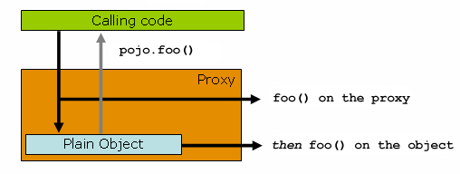
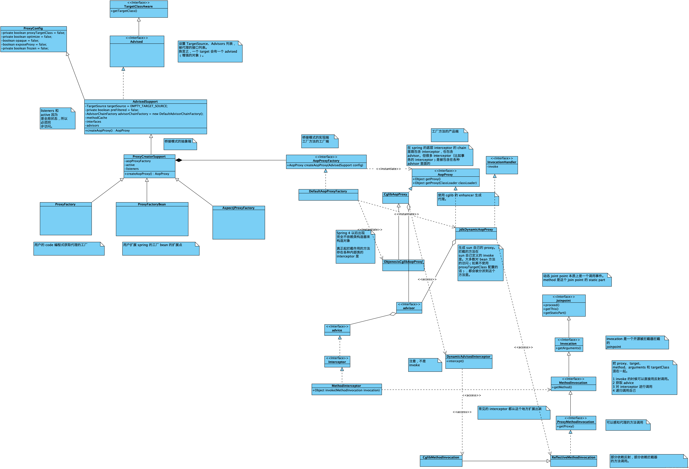

<!DOCTYPE html>
<html>
<head><meta name="generator" content="Hexo 3.9.0">
  <meta charset="utf-8">
  
  <title>Spring AOP 笔记 | 守株阁</title>
  <meta name="viewport" content="width=device-width, initial-scale=1, maximum-scale=1">
  <meta name="description" content="AOP 的基本概念Aspect: A modularization of a concern that cuts across multiple classes. 方面，横跨多个类的模块化关注点。如果只是简单地横跨多个类，可以考虑使用继承 + 组合 + 设计模式。如果使用某种模式匹配来横跨多个类，才需要考虑使用 Aspect。 Join point: A point during the exec">
<meta name="keywords" content="Java,Spring">
<meta property="og:type" content="article">
<meta property="og:title" content="Spring AOP 笔记">
<meta property="og:url" content="http://yoursite.com/2020/04/05/Spring-AOP-笔记/index.html">
<meta property="og:site_name" content="守株阁">
<meta property="og:description" content="AOP 的基本概念Aspect: A modularization of a concern that cuts across multiple classes. 方面，横跨多个类的模块化关注点。如果只是简单地横跨多个类，可以考虑使用继承 + 组合 + 设计模式。如果使用某种模式匹配来横跨多个类，才需要考虑使用 Aspect。 Join point: A point during the exec">
<meta property="og:locale" content="zh-Hans">
<meta property="og:image" content="http://yoursite.com/2020/04/05/Spring-AOP-笔记/aop-proxy-call.png">
<meta property="og:image" content="http://yoursite.com/2020/04/05/Spring-AOP-笔记/如何正确使用%20AOP.png">
<meta property="og:image" content="http://yoursite.com/2020/04/05/Spring-AOP-笔记/spring-aop-proxy-creation.png">
<meta property="og:updated_time" content="2020-07-19T02:13:06.182Z">
<meta name="twitter:card" content="summary">
<meta name="twitter:title" content="Spring AOP 笔记">
<meta name="twitter:description" content="AOP 的基本概念Aspect: A modularization of a concern that cuts across multiple classes. 方面，横跨多个类的模块化关注点。如果只是简单地横跨多个类，可以考虑使用继承 + 组合 + 设计模式。如果使用某种模式匹配来横跨多个类，才需要考虑使用 Aspect。 Join point: A point during the exec">
<meta name="twitter:image" content="http://yoursite.com/2020/04/05/Spring-AOP-笔记/aop-proxy-call.png">
  
    <link rel="alternate" href="/atom.xml" title="守株阁" type="application/atom+xml">
  
  
    <link rel="icon" href="/favicon.png">
  
  
  <link rel="stylesheet" href="/css/style.css">
  

<link rel="stylesheet" href="/css/prism.css" type="text/css">
<link rel="stylesheet" href="/css/prism-line-numbers.css" type="text/css"></head>
</html>
<body>
  <div id="container">
    <div id="wrap">
      <header id="header">
  <div id="banner"></div>
  <div id="header-outer" class="outer">
    
    <div id="header-inner" class="inner">
      <nav id="sub-nav">
        
          <a id="nav-rss-link" class="nav-icon" href="/atom.xml" title="RSS Feed"></a>
        
        <a id="nav-search-btn" class="nav-icon" title="搜索"></a>
      </nav>
      <div id="search-form-wrap">
        <form action="//google.com/search" method="get" accept-charset="UTF-8" class="search-form"><input type="search" name="q" class="search-form-input" placeholder="Search"><button type="submit" class="search-form-submit">&#xF002;</button><input type="hidden" name="sitesearch" value="http://yoursite.com"></form>
      </div>
      <nav id="main-nav">
        <a id="main-nav-toggle" class="nav-icon"></a>
        
          <a class="main-nav-link" href="/">首页</a>
        
          <a class="main-nav-link" href="/archives">归档</a>
        
          <a class="main-nav-link" href="/about">关于</a>
        
      </nav>
      
    </div>
    <div id="header-title" class="inner">
      <h1 id="logo-wrap">
        <a href="/" id="logo">守株阁</a>
      </h1>
      
        <h2 id="subtitle-wrap">
          <a href="/" id="subtitle">一切都是守株待兔，如切如磋，如琢如磨。I am just joking.</a>
        </h2>
      
    </div>
  </div>
</header>
      <div class="outer">
        <section id="main"><article id="post-Spring-AOP-笔记" class="article article-type-post" itemscope itemprop="blogPost">
  <div class="article-meta">
    <a href="/2020/04/05/Spring-AOP-笔记/" class="article-date">
  <time datetime="2020-04-05T04:17:29.000Z" itemprop="datePublished">2020-04-05</time>
</a>
    
  </div>
  <div class="article-inner">
    
    
      <header class="article-header">
        
  
    <h1 class="article-title" itemprop="name">
      Spring AOP 笔记
    </h1>
  

      </header>
    
    <div class="article-entry" itemprop="articleBody">
      
        <!-- Table of Contents -->
        
        <h1 id="AOP-的基本概念"><a href="#AOP-的基本概念" class="headerlink" title="AOP 的基本概念"></a>AOP 的基本概念</h1><p>Aspect: A modularization of a concern that cuts across multiple classes. 方面，<strong>横跨多个类</strong>的模块化关注点。如果只是简单地横跨多个类，可以考虑使用继承 + 组合 + 设计模式。如果使用某种模式匹配来横跨多个类，才需要考虑使用 Aspect。</p>
<p>Join point: A point during the execution of a program, such as the execution of a method or the handling of an exception. In Spring AOP, a join point always represents a method execution. 结合点是我们最需要关注的东西，既包括了<strong>方法执行过程，也包含了异常处理过程</strong>。</p>
<p>Advice: Action taken by an aspect at a particular join point. 方面针对结合点采取的<strong>行动</strong>。对 Advice 而言，join point 经常是他们的参数（至少 Advice 对应的 Interceptor 里包装了这些参数）。</p>
<p>Pointcut: A predicate that matches join points. Advice is associated with a pointcut expression and runs at any join point matched by the pointcut (for example, the execution of a method with a certain name). The concept of join points as matched by pointcut expressions is central to AOP, and Spring uses the AspectJ pointcut expression language by default. 切点（英文是点切）实际上是对 Join point 进行判定的谓词。<strong>切点把 Join point 和 Advice 实际上结合起来了</strong>。默认的切点表达式来自于 AspectJ pointcut expression。</p>
<p>Advisor：Base interface holding AOP advice (action to take at a joinpoint) and a filter determining the applicability of the advice (such as a pointcut). This interface is not for use by Spring users, but to allow for commonality in support for different types of advice.<br>Spring AOP is based around around advice delivered via method interception, compliant with the AOP Alliance interception API. The Advisor interface allows support for different types of advice, such as before and after advice, which need not be implemented using interception. Advisor 不是给 Spring 用户用的。它包含一个 advice，是 一个 advice 的容器 - 相应地，Aspect 是包含很多 advice 的容器，这是个 Spring 用户用的。</p>
<p>Introductions：Declaring additional methods or fields on behalf of a type. 类似混型（mixin），在不打开原有类型以改变原有类型的内容的前提下（类似 Ruby 的元编程或者 C# 的 partial class），为类型增加新的功能。</p>
<p>Target object: An object being advised by one or more aspects. Also referred to as the “advised object”. Since Spring AOP is implemented by using runtime proxies, this object is always a proxied object. 目标对象、建议对象，即原始对象。</p>
<p>AOP proxy: An object created by the AOP framework in order to implement the aspect contracts (advise method executions and so on). In the Spring Framework, an AOP proxy is a JDK dynamic proxy or a CGLIB proxy. Interceptor、Proxy，aspect contracts 的实现。</p>
<p>Weaving: linking aspects with other application types or objects to create an advised object. This can be done at compile time (using the AspectJ compiler, for example), load time, or at runtime. Spring AOP, like other pure Java AOP frameworks, performs weaving at runtime. 织入，即把方面和 advised object 联系起来的过程。可以在编译时（性能最好）、装载时（容易被忽略）和运行时（所有的 pure java AOP framework 的默认选项）执行。大多数情况下，Spring AOP 已经够用了。</p>
<p>可以看出 Spring 的设计里面是尽可能地在 IOC 的基础上提供强大的<code>auto-proxying</code>服务，所有的增强功能，都是在代理里实现的，已解决企业级开发中常见的问题，而不是提供强大而完备的 AOP 实现（尽管它已经很强大了）。</p>
<p>所有声明、配置（不管是注解还是 xml 配置）：aspect、advice、pointcut、advisor、自己实现的 Interceptor、其他 proxies 可以混合使用，即 Mixing Aspect Types。</p>
<h1 id="到底应该使用哪种代理呢？"><a href="#到底应该使用哪种代理呢？" class="headerlink" title="到底应该使用哪种代理呢？"></a>到底应该使用哪种代理呢？</h1><p>Spring 默认使用 Java 动态代理，任何接口实现都可以被代理。但这种代理只能拦截接口方法。最终产生的 object 是 Proxy 的 instance 且 Interface 的 implementation。</p>
<p>当一个对象没有实现一个接口的时候，Spring 会退而求其次，使用 cglib 代理。当然，我们也可以（实际上经常）<a href="https://docs.spring.io/spring/docs/current/spring-framework-reference/core.html#aop-proxying" target="_blank" rel="noopener">强制使用 cglib 代理</a>。这种代理可以拦截一切可以覆写的方法（而不只是接口声明的方法）。最终产生的 object 是原类型的 subclass 的 instance。</p>
<p>It is perfectly possible to mix @AspectJ style aspects by using the auto-proxying support, schema-defined <a href="aop:aspect" target="_blank" rel="noopener">aop:aspect</a> aspects, <a href="aop:advisor" target="_blank" rel="noopener">aop:advisor</a> declared advisors, and even proxies and interceptors in other styles in the same configuration. All of these are implemented by using the same underlying support mechanism and can co-exist without any difficulty.</p>
<p>如果默认生成 JDKDynamicProxy，则以下的注入会出错：</p>
<pre class="line-numbers language-java"><code class="language-java">
    <span class="token comment" spellcheck="true">/**
     * 实际在 context 里出现的 proxy 是 Iface类型的，在这里注入都注入不进去
     */</span>
    <span class="token annotation punctuation">@Autowired</span>
    <span class="token keyword">private</span> IfaceImpl iface<span class="token punctuation">;</span>
<span aria-hidden="true" class="line-numbers-rows"><span></span><span></span><span></span><span></span><span></span><span></span></span></code></pre>
<h1 id="声明各种基础类型"><a href="#声明各种基础类型" class="headerlink" title="声明各种基础类型"></a>声明各种基础类型</h1><h2 id="激活-Aspect-注解的方式"><a href="#激活-Aspect-注解的方式" class="headerlink" title="激活 @Aspect 注解的方式"></a>激活 @Aspect 注解的方式</h2><p>使用 @Aspect 注解的风格被称为 <a href="https://docs.spring.io/spring/docs/current/spring-framework-reference/core.html#aop-ataspectj" target="_blank" rel="noopener">@AspectJ style</a>。@AspectJ refers to a style of declaring aspects as regular Java classes annotated with annotations. </p>
<p>以下两种流程都能激活 @Aspect 注解的解析。注意，即使第二种方法使用 了 xml，也只是激活了对 @Aspect 注解的解析。真正的配置还是放在  @Aspect 里。</p>
<p>注意，这种注解本身的定义来自于 AspectJ 项目（<a href="https://stackoverflow.com/questions/11446893/spring-aop-why-do-i-need-aspectjweaver" target="_blank" rel="noopener">哪怕实际上是 Spring AOP 在起作用</a>），这也要求类路径里存在<code>aspectjweaver.jar</code>。</p>
<pre class="line-numbers language-java"><code class="language-java"><span class="token annotation punctuation">@Configuration</span>
<span class="token annotation punctuation">@EnableAspectJAutoProxy</span>
<span class="token keyword">public</span> <span class="token keyword">class</span> <span class="token class-name">AppConfig</span> <span class="token punctuation">{</span>
<span class="token punctuation">}</span>
<span aria-hidden="true" class="line-numbers-rows"><span></span><span></span><span></span><span></span></span></code></pre>
<pre class="line-numbers language-xml"><code class="language-xml"><span class="token tag"><span class="token tag"><span class="token punctuation">&lt;</span><span class="token namespace">aop:</span>aspectj-autoproxy</span><span class="token punctuation">/></span></span>
<span aria-hidden="true" class="line-numbers-rows"><span></span></span></code></pre>
<h3 id="声明-Aspect"><a href="#声明-Aspect" class="headerlink" title="声明 Aspect"></a>声明 Aspect</h3><pre class="line-numbers language-java"><code class="language-java"><span class="token keyword">package</span> org<span class="token punctuation">.</span>xyz<span class="token punctuation">;</span>
<span class="token keyword">import</span> org<span class="token punctuation">.</span>aspectj<span class="token punctuation">.</span>lang<span class="token punctuation">.</span>annotation<span class="token punctuation">.</span>Aspect<span class="token punctuation">;</span>

<span class="token annotation punctuation">@Aspect</span>
<span class="token keyword">public</span> <span class="token keyword">class</span> <span class="token class-name">NotVeryUsefulAspect</span> <span class="token punctuation">{</span>
<span class="token punctuation">}</span>

<span aria-hidden="true" class="line-numbers-rows"><span></span><span></span><span></span><span></span><span></span><span></span><span></span></span></code></pre>
<pre class="line-numbers language-xml"><code class="language-xml"><span class="token tag"><span class="token tag"><span class="token punctuation">&lt;</span>bean</span> <span class="token attr-name">id</span><span class="token attr-value"><span class="token punctuation">=</span><span class="token punctuation">"</span>myAspect<span class="token punctuation">"</span></span> <span class="token attr-name">class</span><span class="token attr-value"><span class="token punctuation">=</span><span class="token punctuation">"</span>org.xyz.NotVeryUsefulAspect<span class="token punctuation">"</span></span><span class="token punctuation">></span></span>
    <span class="token comment" spellcheck="true">&lt;!-- configure properties of the aspect here --></span>
<span class="token tag"><span class="token tag"><span class="token punctuation">&lt;/</span>bean</span><span class="token punctuation">></span></span>
<span aria-hidden="true" class="line-numbers-rows"><span></span><span></span><span></span></span></code></pre>
<p>Aspect 可以是普通的 class，只是里面可以有 advice、pointcut 和 introduction。</p>
<pre class="line-numbers language-java"><code class="language-java"><span class="token comment" spellcheck="true">// 直接声明切点，方法签名都是 void，这个声明要要被引用，直接用名称 anyOldTransfer - 用一个方法来设计切点变量是一种设计思想</span>
<span class="token annotation punctuation">@Pointcut</span><span class="token punctuation">(</span><span class="token string">"execution(* transfer(..))"</span><span class="token punctuation">)</span> <span class="token comment" spellcheck="true">// the pointcut expression</span>
<span class="token keyword">private</span> <span class="token keyword">void</span> <span class="token function">anyOldTransfer</span><span class="token punctuation">(</span><span class="token punctuation">)</span> <span class="token punctuation">{</span><span class="token punctuation">}</span> <span class="token comment" spellcheck="true">// the pointcut signature</span>

<span class="token comment" spellcheck="true">// 切点里加上 advice</span>
<span class="token annotation punctuation">@Around</span><span class="token punctuation">(</span><span class="token string">"execution(public * package..*.*(..))"</span><span class="token punctuation">)</span>
    <span class="token keyword">public</span> Object <span class="token function">around</span><span class="token punctuation">(</span>ProceedingJoinPoint joinPoint<span class="token punctuation">)</span> <span class="token keyword">throws</span> Throwable <span class="token punctuation">{</span><span class="token punctuation">}</span>
<span aria-hidden="true" class="line-numbers-rows"><span></span><span></span><span></span><span></span><span></span><span></span><span></span></span></code></pre>
<pre class="line-numbers language-xml"><code class="language-xml"><span class="token tag"><span class="token tag"><span class="token punctuation">&lt;</span><span class="token namespace">aop:</span>config</span><span class="token punctuation">></span></span>
    <span class="token tag"><span class="token tag"><span class="token punctuation">&lt;</span><span class="token namespace">aop:</span>pointcut</span> <span class="token attr-name">id</span><span class="token attr-value"><span class="token punctuation">=</span><span class="token punctuation">"</span>anyDaoMethod<span class="token punctuation">"</span></span>
      <span class="token attr-name">expression</span><span class="token attr-value"><span class="token punctuation">=</span><span class="token punctuation">"</span>@target(org.springframework.stereotype.Repository)<span class="token punctuation">"</span></span><span class="token punctuation">/></span></span>
<span class="token tag"><span class="token tag"><span class="token punctuation">&lt;/</span><span class="token namespace">aop:</span>config</span><span class="token punctuation">></span></span>
<span aria-hidden="true" class="line-numbers-rows"><span></span><span></span><span></span><span></span></span></code></pre>
<p>Spring AOP （proxy-based）的切点里 this 总是指代理，而 target 指的是被代理对象；AOP （type-based）里都指代理和被代理对象。</p>
<p>Spring AOP 里的 join point 专指 method execution，其他 AOP 框架不只是拦截方法执行。</p>
<h3 id="详解-pointcut"><a href="#详解-pointcut" class="headerlink" title="详解 pointcut"></a>详解 pointcut</h3><p>切点有自己的 PCD（pointcut designators ），来自于  pointcut expressions（主要来自于 AspectJ），完整的表达式语法见<a href="https://www.eclipse.org/aspectj/doc/released/progguide/semantics-pointcuts.html" target="_blank" rel="noopener">《Appendix B. Language Semantics》</a>：</p>
<ul>
<li>execution: For matching method execution join points. This is the primary pointcut designator to use when working with Spring AOP. 方法执行连接点，这是最常用的。</li>
</ul>
<pre class="line-numbers language-java"><code class="language-java"><span class="token annotation punctuation">@Pointcut</span><span class="token punctuation">(</span><span class="token string">"execution(public String com.baeldung.pointcutadvice.dao.FooDao.findById(Long))"</span><span class="token punctuation">)</span>
<span class="token annotation punctuation">@Pointcut</span><span class="token punctuation">(</span><span class="token string">"execution(* com.baeldung.pointcutadvice.dao.FooDao.*(..))"</span><span class="token punctuation">)</span>

<span class="token comment" spellcheck="true">// 它的语法是：</span>
<span class="token function">execution</span><span class="token punctuation">(</span>modifiers<span class="token operator">-</span>pattern<span class="token operator">?</span> ret<span class="token operator">-</span>type<span class="token operator">-</span>pattern declaring<span class="token operator">-</span>type<span class="token operator">-</span>pattern<span class="token operator">?</span>name<span class="token operator">-</span><span class="token function">pattern</span><span class="token punctuation">(</span>param<span class="token operator">-</span>pattern<span class="token punctuation">)</span>
                <span class="token keyword">throws</span><span class="token operator">-</span>pattern<span class="token operator">?</span><span class="token punctuation">)</span>
<span aria-hidden="true" class="line-numbers-rows"><span></span><span></span><span></span><span></span><span></span><span></span></span></code></pre>
<ul>
<li>within: Limits matching to join points within certain types (the execution of a method declared <strong> within a matching type </strong> when using Spring AOP) 以只在特定类型里的方法执行作为切点。execution 的阉割版本。</li>
</ul>
<pre class="line-numbers language-java"><code class="language-java"><span class="token annotation punctuation">@Pointcut</span><span class="token punctuation">(</span><span class="token string">"within(com.baeldung.pointcutadvice.dao.FooDao)"</span><span class="token punctuation">)</span>
<span class="token annotation punctuation">@Pointcut</span><span class="token punctuation">(</span><span class="token string">"within(com.baeldung..*)"</span><span class="token punctuation">)</span>
<span aria-hidden="true" class="line-numbers-rows"><span></span><span></span></span></code></pre>
<ul>
<li>this: Limits matching to join points (the execution of methods when using Spring AOP) where the bean reference (Spring AOP proxy) is an instance of the given type.  这里的 this 是 proxy 的意思，限制 proxy - 当我们使用 JDK dynamic proxy 的时候，推荐使用这个 PCD（并不必然）。</li>
</ul>
<pre class="line-numbers language-java"><code class="language-java"><span class="token keyword">public</span> <span class="token keyword">class</span> <span class="token class-name">FooDao</span> <span class="token keyword">implements</span> <span class="token class-name">BarDao</span> <span class="token punctuation">{</span>
    <span class="token punctuation">.</span><span class="token punctuation">.</span><span class="token punctuation">.</span>
<span class="token punctuation">}</span>

<span class="token comment" spellcheck="true">// jdk dynamic proxy</span>
<span class="token annotation punctuation">@Pointcut</span><span class="token punctuation">(</span><span class="token string">"target(com.baeldung.pointcutadvice.dao.BarDao)"</span><span class="token punctuation">)</span>
<span aria-hidden="true" class="line-numbers-rows"><span></span><span></span><span></span><span></span><span></span><span></span></span></code></pre>
<ul>
<li>target: Limits matching to join points (the execution of methods when using Spring AOP) where the target object (application object being proxied) is an instance of the given type. 限制目标类型。当我们使用 cglib proxy 的时候，推荐使用这个 PCD（并不必然）</li>
</ul>
<pre class="line-numbers language-java"><code class="language-java"><span class="token comment" spellcheck="true">// cglib proxy</span>
<span class="token annotation punctuation">@Pointcut</span><span class="token punctuation">(</span><span class="token string">"this(com.baeldung.pointcutadvice.dao.FooDao)"</span><span class="token punctuation">)</span>
<span aria-hidden="true" class="line-numbers-rows"><span></span><span></span></span></code></pre>
<ul>
<li>args: Limits matching to join points (the execution of methods when using Spring AOP) where the arguments are instances of the given types. 限制参数。</li>
</ul>
<pre class="line-numbers language-java"><code class="language-java"><span class="token annotation punctuation">@Pointcut</span><span class="token punctuation">(</span><span class="token string">"execution(* *..find*(Long))"</span><span class="token punctuation">)</span>
<span aria-hidden="true" class="line-numbers-rows"><span></span></span></code></pre>
<ul>
<li>@target: Limits matching to join points (the execution of methods when using Spring AOP) where the class of the executing object has an annotation of the given type. 限制 target 有特定注解。<strong>这种切点配合特定的类注解特别有用！</strong></li>
</ul>
<pre class="line-numbers language-java"><code class="language-java"><span class="token annotation punctuation">@Pointcut</span><span class="token punctuation">(</span><span class="token string">"@target(org.springframework.stereotype.Repository)"</span><span class="token punctuation">)</span>
<span aria-hidden="true" class="line-numbers-rows"><span></span></span></code></pre>
<ul>
<li>@args: Limits matching to join points (the execution of methods when using Spring AOP) where the runtime type of the actual arguments passed have annotations of the given types. 限制参数有特定注解。</li>
</ul>
<pre class="line-numbers language-java"><code class="language-java"><span class="token comment" spellcheck="true">//  Suppose that we want to trace all the methods accepting beans annotated with @Entity annotation:</span>
<span class="token annotation punctuation">@Pointcut</span><span class="token punctuation">(</span><span class="token string">"@args(com.baeldung.pointcutadvice.annotations.Entity)"</span><span class="token punctuation">)</span>
<span class="token keyword">public</span> <span class="token keyword">void</span> <span class="token function">methodsAcceptingEntities</span><span class="token punctuation">(</span><span class="token punctuation">)</span> <span class="token punctuation">{</span><span class="token punctuation">}</span>

<span class="token annotation punctuation">@Before</span><span class="token punctuation">(</span><span class="token string">"methodsAcceptingEntities()"</span><span class="token punctuation">)</span>
<span class="token keyword">public</span> <span class="token keyword">void</span> <span class="token function">logMethodAcceptionEntityAnnotatedBean</span><span class="token punctuation">(</span>JoinPoint jp<span class="token punctuation">)</span> <span class="token punctuation">{</span>
    logger<span class="token punctuation">.</span><span class="token function">info</span><span class="token punctuation">(</span><span class="token string">"Accepting beans with @Entity annotation: "</span> <span class="token operator">+</span> jp<span class="token punctuation">.</span><span class="token function">getArgs</span><span class="token punctuation">(</span><span class="token punctuation">)</span><span class="token punctuation">[</span><span class="token number">0</span><span class="token punctuation">]</span><span class="token punctuation">)</span><span class="token punctuation">;</span>
<span class="token punctuation">}</span>
<span aria-hidden="true" class="line-numbers-rows"><span></span><span></span><span></span><span></span><span></span><span></span><span></span><span></span></span></code></pre>
<ul>
<li>@within: Limits matching to join points within types that have the given annotation (the execution of methods declared in types with the given annotation when using Spring AOP). 限制在类型有特定注解。</li>
</ul>
<pre class="line-numbers language-java"><code class="language-java">
<span class="token annotation punctuation">@Pointcut</span><span class="token punctuation">(</span><span class="token string">"@within(org.springframework.stereotype.Repository)"</span><span class="token punctuation">)</span>

<span class="token comment" spellcheck="true">// 等价于</span>

<span class="token annotation punctuation">@Pointcut</span><span class="token punctuation">(</span><span class="token string">"within(@org.springframework.stereotype.Repository *)"</span><span class="token punctuation">)</span>
<span aria-hidden="true" class="line-numbers-rows"><span></span><span></span><span></span><span></span><span></span><span></span></span></code></pre>
<ul>
<li>@annotation: Limits matching to join points where the subject of the join point (the method being executed in Spring AOP) has the given annotation. 限制连接点方法有特定注解。<strong>这种切点配合特定的方法注解特别有用！</strong></li>
</ul>
<pre class="line-numbers language-java"><code class="language-java"><span class="token annotation punctuation">@Pointcut</span><span class="token punctuation">(</span><span class="token string">"@annotation(com.baeldung.pointcutadvice.annotations.Loggable)"</span><span class="token punctuation">)</span>
<span class="token keyword">public</span> <span class="token keyword">void</span> <span class="token function">loggableMethods</span><span class="token punctuation">(</span><span class="token punctuation">)</span> <span class="token punctuation">{</span><span class="token punctuation">}</span>

<span class="token annotation punctuation">@Before</span><span class="token punctuation">(</span><span class="token string">"loggableMethods()"</span><span class="token punctuation">)</span>
<span class="token keyword">public</span> <span class="token keyword">void</span> <span class="token function">logMethod</span><span class="token punctuation">(</span>JoinPoint jp<span class="token punctuation">)</span> <span class="token punctuation">{</span>
    String methodName <span class="token operator">=</span> jp<span class="token punctuation">.</span><span class="token function">getSignature</span><span class="token punctuation">(</span><span class="token punctuation">)</span><span class="token punctuation">.</span><span class="token function">getName</span><span class="token punctuation">(</span><span class="token punctuation">)</span><span class="token punctuation">;</span>
    logger<span class="token punctuation">.</span><span class="token function">info</span><span class="token punctuation">(</span><span class="token string">"Executing method: "</span> <span class="token operator">+</span> methodName<span class="token punctuation">)</span><span class="token punctuation">;</span>
<span class="token punctuation">}</span>

<span class="token annotation punctuation">@Retention</span><span class="token punctuation">(</span>RetentionPolicy<span class="token punctuation">.</span>RUNTIME<span class="token punctuation">)</span>
<span class="token keyword">public</span> @<span class="token keyword">interface</span> <span class="token class-name">Idempotent</span> <span class="token punctuation">{</span>
    <span class="token comment" spellcheck="true">// marker annotation</span>
<span class="token punctuation">}</span>

<span class="token operator">&lt;</span>aop<span class="token operator">:</span>pointcut id<span class="token operator">=</span><span class="token string">"idempotentOperation"</span>
        expression<span class="token operator">=</span>"<span class="token function">execution</span><span class="token punctuation">(</span><span class="token operator">*</span> com<span class="token punctuation">.</span>xyz<span class="token punctuation">.</span>myapp<span class="token punctuation">.</span>service<span class="token punctuation">.</span>*<span class="token punctuation">.</span>*<span class="token punctuation">(</span><span class="token punctuation">.</span><span class="token punctuation">.</span><span class="token punctuation">)</span><span class="token punctuation">)</span> and
        <span class="token annotation punctuation">@annotation</span><span class="token punctuation">(</span>com<span class="token punctuation">.</span>xyz<span class="token punctuation">.</span>myapp<span class="token punctuation">.</span>service<span class="token punctuation">.</span>Idempotent<span class="token punctuation">)</span>"<span class="token operator">/</span><span class="token operator">></span>
<span aria-hidden="true" class="line-numbers-rows"><span></span><span></span><span></span><span></span><span></span><span></span><span></span><span></span><span></span><span></span><span></span><span></span><span></span><span></span><span></span><span></span><span></span></span></code></pre>
<ul>
<li>bean 特定的 bean 名称/名称模式引用的，类似<code>BeanNameAutoProxyCreator</code>。</li>
</ul>
<pre class="line-numbers language-java"><code class="language-java"><span class="token annotation punctuation">@Pointcut</span><span class="token punctuation">(</span><span class="token string">"bean(tradeService)"</span><span class="token punctuation">)</span>
<span class="token annotation punctuation">@Pointcut</span><span class="token punctuation">(</span><span class="token string">"bean(*Service)"</span><span class="token punctuation">)</span>
<span aria-hidden="true" class="line-numbers-rows"><span></span><span></span></span></code></pre>
<p>更多例子：</p>
<pre class="line-numbers language-java"><code class="language-java"><span class="token comment" spellcheck="true">// anyPublicOperation matches if a method execution join point represents the execution of any public method.</span>

<span class="token comment" spellcheck="true">// inTrading matches if a method execution is in the trading module.</span>
<span class="token annotation punctuation">@Pointcut</span><span class="token punctuation">(</span><span class="token string">"execution(public * *(..))"</span><span class="token punctuation">)</span>
<span class="token keyword">private</span> <span class="token keyword">void</span> <span class="token function">anyPublicOperation</span><span class="token punctuation">(</span><span class="token punctuation">)</span> <span class="token punctuation">{</span><span class="token punctuation">}</span> 

<span class="token comment" spellcheck="true">// tradingOperation matches if a method execution represents any public method in the trading module.</span>
<span class="token annotation punctuation">@Pointcut</span><span class="token punctuation">(</span><span class="token string">"within(com.xyz.someapp.trading..*)"</span><span class="token punctuation">)</span>
<span class="token keyword">private</span> <span class="token keyword">void</span> <span class="token function">inTrading</span><span class="token punctuation">(</span><span class="token punctuation">)</span> <span class="token punctuation">{</span><span class="token punctuation">}</span> 

<span class="token annotation punctuation">@Pointcut</span><span class="token punctuation">(</span><span class="token string">"anyPublicOperation() &amp;&amp; inTrading()"</span><span class="token punctuation">)</span>
<span class="token keyword">private</span> <span class="token keyword">void</span> <span class="token function">tradingOperation</span><span class="token punctuation">(</span><span class="token punctuation">)</span> <span class="token punctuation">{</span><span class="token punctuation">}</span> 

<span class="token comment" spellcheck="true">// 按照系统架构进行切点的分类</span>

<span class="token annotation punctuation">@Aspect</span>
<span class="token keyword">public</span> <span class="token keyword">class</span> <span class="token class-name">SystemArchitecture</span> <span class="token punctuation">{</span>

    <span class="token comment" spellcheck="true">/**
     * A join point is in the web layer if the method is defined
     * in a type in the com.xyz.someapp.web package or any sub-package
     * under that.
     */</span>
    <span class="token annotation punctuation">@Pointcut</span><span class="token punctuation">(</span><span class="token string">"within(com.xyz.someapp.web..*)"</span><span class="token punctuation">)</span>
    <span class="token keyword">public</span> <span class="token keyword">void</span> <span class="token function">inWebLayer</span><span class="token punctuation">(</span><span class="token punctuation">)</span> <span class="token punctuation">{</span><span class="token punctuation">}</span>

    <span class="token comment" spellcheck="true">/**
     * A join point is in the service layer if the method is defined
     * in a type in the com.xyz.someapp.service package or any sub-package
     * under that.
     */</span>
    <span class="token annotation punctuation">@Pointcut</span><span class="token punctuation">(</span><span class="token string">"within(com.xyz.someapp.service..*)"</span><span class="token punctuation">)</span>
    <span class="token keyword">public</span> <span class="token keyword">void</span> <span class="token function">inServiceLayer</span><span class="token punctuation">(</span><span class="token punctuation">)</span> <span class="token punctuation">{</span><span class="token punctuation">}</span>

    <span class="token comment" spellcheck="true">/**
     * A join point is in the data access layer if the method is defined
     * in a type in the com.xyz.someapp.dao package or any sub-package
     * under that.
     */</span>
    <span class="token annotation punctuation">@Pointcut</span><span class="token punctuation">(</span><span class="token string">"within(com.xyz.someapp.dao..*)"</span><span class="token punctuation">)</span>
    <span class="token keyword">public</span> <span class="token keyword">void</span> <span class="token function">inDataAccessLayer</span><span class="token punctuation">(</span><span class="token punctuation">)</span> <span class="token punctuation">{</span><span class="token punctuation">}</span>

    <span class="token comment" spellcheck="true">/**
     * A business service is the execution of any method defined on a service
     * interface. This definition assumes that interfaces are placed in the
     * "service" package, and that implementation types are in sub-packages.
     *
     * If you group service interfaces by functional area (for example,
     * in packages com.xyz.someapp.abc.service and com.xyz.someapp.def.service) then
     * the pointcut expression "execution(* com.xyz.someapp..service.*.*(..))"
     * could be used instead.
     *
     * Alternatively, you can write the expression using the 'bean'
     * PCD, like so "bean(*Service)". (This assumes that you have
     * named your Spring service beans in a consistent fashion.)
     */</span>
    <span class="token annotation punctuation">@Pointcut</span><span class="token punctuation">(</span><span class="token string">"execution(* com.xyz.someapp..service.*.*(..))"</span><span class="token punctuation">)</span>
    <span class="token keyword">public</span> <span class="token keyword">void</span> <span class="token function">businessService</span><span class="token punctuation">(</span><span class="token punctuation">)</span> <span class="token punctuation">{</span><span class="token punctuation">}</span>

    <span class="token comment" spellcheck="true">/**
     * A data access operation is the execution of any method defined on a
     * dao interface. This definition assumes that interfaces are placed in the
     * "dao" package, and that implementation types are in sub-packages.
     */</span>
    <span class="token annotation punctuation">@Pointcut</span><span class="token punctuation">(</span><span class="token string">"execution(* com.xyz.someapp.dao.*.*(..))"</span><span class="token punctuation">)</span>
    <span class="token keyword">public</span> <span class="token keyword">void</span> <span class="token function">dataAccessOperation</span><span class="token punctuation">(</span><span class="token punctuation">)</span> <span class="token punctuation">{</span><span class="token punctuation">}</span>

    <span class="token comment" spellcheck="true">// The execution of any public method:</span>
    <span class="token function">execution</span><span class="token punctuation">(</span><span class="token keyword">public</span> <span class="token operator">*</span> <span class="token operator">*</span><span class="token punctuation">(</span><span class="token punctuation">.</span><span class="token punctuation">.</span><span class="token punctuation">)</span><span class="token punctuation">)</span>

    <span class="token comment" spellcheck="true">// The execution of any method with a name that begins with set:</span>
    <span class="token function">execution</span><span class="token punctuation">(</span><span class="token operator">*</span> set<span class="token operator">*</span><span class="token punctuation">(</span><span class="token punctuation">.</span><span class="token punctuation">.</span><span class="token punctuation">)</span><span class="token punctuation">)</span>

    <span class="token comment" spellcheck="true">// The execution of any method defined by the AccountService interface:</span>
    <span class="token function">execution</span><span class="token punctuation">(</span><span class="token operator">*</span> com<span class="token punctuation">.</span>xyz<span class="token punctuation">.</span>service<span class="token punctuation">.</span>AccountService<span class="token punctuation">.</span>*<span class="token punctuation">(</span><span class="token punctuation">.</span><span class="token punctuation">.</span><span class="token punctuation">)</span><span class="token punctuation">)</span>

    <span class="token comment" spellcheck="true">// The execution of any method defined in the service package:</span>
    <span class="token function">execution</span><span class="token punctuation">(</span><span class="token operator">*</span> com<span class="token punctuation">.</span>xyz<span class="token punctuation">.</span>service<span class="token punctuation">.</span>*<span class="token punctuation">.</span>*<span class="token punctuation">(</span><span class="token punctuation">.</span><span class="token punctuation">.</span><span class="token punctuation">)</span><span class="token punctuation">)</span>

    <span class="token comment" spellcheck="true">// The execution of any method defined in the service package or one of its sub-packages:</span>
    <span class="token function">execution</span><span class="token punctuation">(</span><span class="token operator">*</span> com<span class="token punctuation">.</span>xyz<span class="token punctuation">.</span>service<span class="token punctuation">.</span><span class="token punctuation">.</span>*<span class="token punctuation">.</span>*<span class="token punctuation">(</span><span class="token punctuation">.</span><span class="token punctuation">.</span><span class="token punctuation">)</span><span class="token punctuation">)</span>

    <span class="token comment" spellcheck="true">// Any join point (method execution only in Spring AOP) within the service package:</span>
    <span class="token function">within</span><span class="token punctuation">(</span>com<span class="token punctuation">.</span>xyz<span class="token punctuation">.</span>service<span class="token punctuation">.</span>*<span class="token punctuation">)</span>

    <span class="token comment" spellcheck="true">// Any join point (method execution only in Spring AOP) within the service package or one of its sub-packages:</span>
    <span class="token function">within</span><span class="token punctuation">(</span>com<span class="token punctuation">.</span>xyz<span class="token punctuation">.</span>service<span class="token punctuation">.</span><span class="token punctuation">.</span>*<span class="token punctuation">)</span>

    <span class="token comment" spellcheck="true">// Any join point (method execution only in Spring AOP) where the proxy implements the AccountService interface:</span>
    <span class="token keyword">this</span><span class="token punctuation">(</span>com<span class="token punctuation">.</span>xyz<span class="token punctuation">.</span>service<span class="token punctuation">.</span>AccountService<span class="token punctuation">)</span>

    <span class="token comment" spellcheck="true">// Any join point (method execution only in Spring AOP) where the target object implements the AccountService interface:</span>
    <span class="token function">target</span><span class="token punctuation">(</span>com<span class="token punctuation">.</span>xyz<span class="token punctuation">.</span>service<span class="token punctuation">.</span>AccountService<span class="token punctuation">)</span>

    <span class="token comment" spellcheck="true">// Any join point (method execution only in Spring AOP) that takes a single parameter and where the argument passed at runtime is Serializable:</span>
    <span class="token function">args</span><span class="token punctuation">(</span>java<span class="token punctuation">.</span>io<span class="token punctuation">.</span>Serializable<span class="token punctuation">)</span>

    <span class="token comment" spellcheck="true">// Any join point (method execution only in Spring AOP) where the target object has a @Transactional annotation:</span>
    <span class="token annotation punctuation">@target</span><span class="token punctuation">(</span>org<span class="token punctuation">.</span>springframework<span class="token punctuation">.</span>transaction<span class="token punctuation">.</span>annotation<span class="token punctuation">.</span>Transactional<span class="token punctuation">)</span>
You can also use <span class="token string">'@target'</span> in a binding form<span class="token punctuation">.</span> See the Declaring Advice section <span class="token keyword">for</span> how to make the annotation object available in the advice body<span class="token punctuation">.</span>
Any join <span class="token function">point</span> <span class="token punctuation">(</span>method execution only in Spring AOP<span class="token punctuation">)</span> where the declared type of the target object has an <span class="token annotation punctuation">@Transactional</span> annotation<span class="token operator">:</span>

    <span class="token annotation punctuation">@within</span><span class="token punctuation">(</span>org<span class="token punctuation">.</span>springframework<span class="token punctuation">.</span>transaction<span class="token punctuation">.</span>annotation<span class="token punctuation">.</span>Transactional<span class="token punctuation">)</span>
You can also use <span class="token string">'@within'</span> in a binding form<span class="token punctuation">.</span> See the Declaring Advice section <span class="token keyword">for</span> how to make the annotation object available in the advice body<span class="token punctuation">.</span>
Any join <span class="token function">point</span> <span class="token punctuation">(</span>method execution only in Spring AOP<span class="token punctuation">)</span> where the executing method has an <span class="token annotation punctuation">@Transactional</span> annotation<span class="token operator">:</span>

    <span class="token annotation punctuation">@annotation</span><span class="token punctuation">(</span>org<span class="token punctuation">.</span>springframework<span class="token punctuation">.</span>transaction<span class="token punctuation">.</span>annotation<span class="token punctuation">.</span>Transactional<span class="token punctuation">)</span>
You can also use <span class="token string">'@annotation'</span> in a binding form<span class="token punctuation">.</span> See the Declaring Advice section <span class="token keyword">for</span> how to make the annotation object available in the advice body<span class="token punctuation">.</span>
Any join <span class="token function">point</span> <span class="token punctuation">(</span>method execution only in Spring AOP<span class="token punctuation">)</span> which takes a single parameter<span class="token punctuation">,</span> and where the runtime type of the argument passed has the <span class="token annotation punctuation">@Classified</span> annotation<span class="token operator">:</span>

    <span class="token annotation punctuation">@args</span><span class="token punctuation">(</span>com<span class="token punctuation">.</span>xyz<span class="token punctuation">.</span>security<span class="token punctuation">.</span>Classified<span class="token punctuation">)</span>
<span class="token punctuation">}</span>
<span aria-hidden="true" class="line-numbers-rows"><span></span><span></span><span></span><span></span><span></span><span></span><span></span><span></span><span></span><span></span><span></span><span></span><span></span><span></span><span></span><span></span><span></span><span></span><span></span><span></span><span></span><span></span><span></span><span></span><span></span><span></span><span></span><span></span><span></span><span></span><span></span><span></span><span></span><span></span><span></span><span></span><span></span><span></span><span></span><span></span><span></span><span></span><span></span><span></span><span></span><span></span><span></span><span></span><span></span><span></span><span></span><span></span><span></span><span></span><span></span><span></span><span></span><span></span><span></span><span></span><span></span><span></span><span></span><span></span><span></span><span></span><span></span><span></span><span></span><span></span><span></span><span></span><span></span><span></span><span></span><span></span><span></span><span></span><span></span><span></span><span></span><span></span><span></span><span></span><span></span><span></span><span></span><span></span><span></span><span></span><span></span><span></span><span></span><span></span><span></span><span></span><span></span><span></span><span></span><span></span><span></span><span></span><span></span><span></span><span></span><span></span><span></span><span></span><span></span><span></span><span></span><span></span></span></code></pre>
<p>切点表达式会在编译时被优化，被冲写成 DNF 范式形式，并且会被重排序，以提升性能。</p>
<p>注意，可以混合使用任何地方定义的切点：<strong>Java config 里的 bean 可以引用 xml 里定义的切点；反过来也可以</strong>。</p>
<pre class="line-numbers language-xml"><code class="language-xml"><span class="token tag"><span class="token tag"><span class="token punctuation">&lt;</span><span class="token namespace">aop:</span>config</span><span class="token punctuation">></span></span>
    <span class="token comment" spellcheck="true">&lt;!--  --></span>
    <span class="token tag"><span class="token tag"><span class="token punctuation">&lt;</span><span class="token namespace">aop:</span>advisor</span>
        <span class="token attr-name">pointcut</span><span class="token attr-value"><span class="token punctuation">=</span><span class="token punctuation">"</span>com.xyz.someapp.SystemArchitecture.businessService()<span class="token punctuation">"</span></span>
        <span class="token attr-name">advice-ref</span><span class="token attr-value"><span class="token punctuation">=</span><span class="token punctuation">"</span>tx-advice<span class="token punctuation">"</span></span><span class="token punctuation">/></span></span>
<span class="token tag"><span class="token tag"><span class="token punctuation">&lt;/</span><span class="token namespace">aop:</span>config</span><span class="token punctuation">></span></span>

<span class="token tag"><span class="token tag"><span class="token punctuation">&lt;</span><span class="token namespace">tx:</span>advice</span> <span class="token attr-name">id</span><span class="token attr-value"><span class="token punctuation">=</span><span class="token punctuation">"</span>tx-advice<span class="token punctuation">"</span></span><span class="token punctuation">></span></span>
    <span class="token tag"><span class="token tag"><span class="token punctuation">&lt;</span><span class="token namespace">tx:</span>attributes</span><span class="token punctuation">></span></span>
        <span class="token tag"><span class="token tag"><span class="token punctuation">&lt;</span><span class="token namespace">tx:</span>method</span> <span class="token attr-name">name</span><span class="token attr-value"><span class="token punctuation">=</span><span class="token punctuation">"</span>*<span class="token punctuation">"</span></span> <span class="token attr-name">propagation</span><span class="token attr-value"><span class="token punctuation">=</span><span class="token punctuation">"</span>REQUIRED<span class="token punctuation">"</span></span><span class="token punctuation">/></span></span>
    <span class="token tag"><span class="token tag"><span class="token punctuation">&lt;/</span><span class="token namespace">tx:</span>attributes</span><span class="token punctuation">></span></span>
<span class="token tag"><span class="token tag"><span class="token punctuation">&lt;/</span><span class="token namespace">tx:</span>advice</span><span class="token punctuation">></span></span>
<span aria-hidden="true" class="line-numbers-rows"><span></span><span></span><span></span><span></span><span></span><span></span><span></span><span></span><span></span><span></span><span></span><span></span></span></code></pre>
<p>切点表达式分为三类：</p>
<ul>
<li><p>Kinded designators select a particular kind of join point: execution, get, set, call, and handler.</p>
</li>
<li><p>Scoping designators select a group of join points of interest (probably of many kinds): within and withincode</p>
</li>
<li><p>Contextual designators match (and optionally bind) based on context: this, target, and @annotation</p>
</li>
</ul>
<p>好的切点应该使用两种以上的表达式，性能才好，如：</p>
<pre class="line-numbers language-java"><code class="language-java"> <span class="token function">within</span><span class="token punctuation">(</span>com<span class="token punctuation">.</span>bigboxco<span class="token punctuation">.</span><span class="token punctuation">.</span>*<span class="token punctuation">)</span> <span class="token operator">&amp;&amp;</span> <span class="token function">execution</span><span class="token punctuation">(</span><span class="token keyword">public</span> <span class="token operator">*</span> <span class="token operator">*</span><span class="token punctuation">(</span><span class="token punctuation">.</span><span class="token punctuation">.</span><span class="token punctuation">)</span><span class="token punctuation">)</span>
<span aria-hidden="true" class="line-numbers-rows"><span></span></span></code></pre>
<h3 id="详解-advice"><a href="#详解-advice" class="headerlink" title="详解 advice"></a>详解 advice</h3><h4 id="advice-的类型"><a href="#advice-的类型" class="headerlink" title="advice 的类型"></a>advice 的类型</h4><p>Advice 可以分为：</p>
<ul>
<li>before 申请资源适合放在这里</li>
<li>After returning</li>
</ul>
<pre class="line-numbers language-java"><code class="language-java"><span class="token keyword">import</span> org<span class="token punctuation">.</span>aspectj<span class="token punctuation">.</span>lang<span class="token punctuation">.</span>annotation<span class="token punctuation">.</span>Aspect<span class="token punctuation">;</span>
<span class="token keyword">import</span> org<span class="token punctuation">.</span>aspectj<span class="token punctuation">.</span>lang<span class="token punctuation">.</span>annotation<span class="token punctuation">.</span>AfterReturning<span class="token punctuation">;</span>

<span class="token annotation punctuation">@Aspect</span>
<span class="token keyword">public</span> <span class="token keyword">class</span> <span class="token class-name">AfterReturningExample</span> <span class="token punctuation">{</span>
    <span class="token annotation punctuation">@AfterReturning</span><span class="token punctuation">(</span>
        pointcut<span class="token operator">=</span><span class="token string">"com.xyz.myapp.SystemArchitecture.dataAccessOperation()"</span><span class="token punctuation">,</span>
        <span class="token comment" spellcheck="true">// 注意名字必须完全匹配形参</span>
        returning<span class="token operator">=</span><span class="token string">"retVal"</span><span class="token punctuation">)</span>
            <span class="token comment" spellcheck="true">// 使用返回值的 after 例子，注意这个 object 参数，这里不可能泛型化</span>
        <span class="token comment" spellcheck="true">// 这里如果限制返回值类型，后果自负，spring 本身是 fully typed 类型匹配的，有好处也有坏处</span>
    <span class="token keyword">public</span> <span class="token keyword">void</span> <span class="token function">doAccessCheck</span><span class="token punctuation">(</span>Object retVal<span class="token punctuation">)</span> <span class="token punctuation">{</span>
        <span class="token comment" spellcheck="true">// ...</span>
    <span class="token punctuation">}</span>

<span class="token punctuation">}</span>
<span aria-hidden="true" class="line-numbers-rows"><span></span><span></span><span></span><span></span><span></span><span></span><span></span><span></span><span></span><span></span><span></span><span></span><span></span><span></span><span></span><span></span></span></code></pre>
<ul>
<li>After throwing（不怎么常见，但 Spring MVC 的 Controller Advice 就是这样实现的）。PCD 里是不包含对于 exception 的定位的，只能通过 PCD 里定位方法，然后使用这个 advice。这是 Spring 对异常处理的唯一设计。</li>
</ul>
<pre class="line-numbers language-java"><code class="language-java"><span class="token annotation punctuation">@Aspect</span>
<span class="token keyword">public</span> <span class="token keyword">class</span> <span class="token class-name">AfterThrowingExample</span> <span class="token punctuation">{</span>

    <span class="token annotation punctuation">@AfterThrowing</span><span class="token punctuation">(</span>
        pointcut<span class="token operator">=</span><span class="token string">"com.xyz.myapp.SystemArchitecture.dataAccessOperation()"</span><span class="token punctuation">,</span>
        <span class="token comment" spellcheck="true">// 注意名字必须完全匹配形参</span>
        throwing<span class="token operator">=</span><span class="token string">"ex"</span><span class="token punctuation">)</span>
        <span class="token comment" spellcheck="true">// 这里可以限制异常类型，后果自负</span>
    <span class="token keyword">public</span> <span class="token keyword">void</span> <span class="token function">doRecoveryActions</span><span class="token punctuation">(</span>DataAccessException ex<span class="token punctuation">)</span> <span class="token punctuation">{</span>
        <span class="token comment" spellcheck="true">// ...</span>
    <span class="token punctuation">}</span>
<span class="token punctuation">}</span>
<span aria-hidden="true" class="line-numbers-rows"><span></span><span></span><span></span><span></span><span></span><span></span><span></span><span></span><span></span><span></span><span></span><span></span></span></code></pre>
<ul>
<li>After (finally) advice = returning + throwing，隐式包含 finally。释放资源适合放在这里。</li>
<li>around（大部分的 advice 都可以这样用，因为它兼容 before、after（实际上囊括了上面所有的 advice）， 而且管控范围最广）适合申请资源、释放资源、权限管理、日志，它因为是栈封闭的，所以是在方法执行前后，线程安全地共享状态（ share state before and after a method execution in a thread-safe manner） - timer 的合理方式。</li>
</ul>
<pre class="line-numbers language-java"><code class="language-java">
<span class="token comment" spellcheck="true">// 注意，这里的参数名指的是 advice 里的参数名，而不是原始被拦截方法的参数名-也不适合理解原始参数名</span>

<span class="token comment" spellcheck="true">// 使用命名参数的正统方式。被拦截的方法，必须至少有一个参数，且第一个参数要被转化为 Account 类型传递给 Advice。</span>
<span class="token annotation punctuation">@Before</span><span class="token punctuation">(</span><span class="token string">"com.xyz.myapp.SystemArchitecture.dataAccessOperation() &amp;&amp; args(account,..)"</span><span class="token punctuation">)</span>
<span class="token keyword">public</span> <span class="token keyword">void</span> <span class="token function">validateAccount</span><span class="token punctuation">(</span>Account account<span class="token punctuation">)</span> <span class="token punctuation">{</span>
    <span class="token comment" spellcheck="true">// ...</span>
<span class="token punctuation">}</span>

<span class="token comment" spellcheck="true">// 理解注解的正统方式</span>
<span class="token annotation punctuation">@Retention</span><span class="token punctuation">(</span>RetentionPolicy<span class="token punctuation">.</span>RUNTIME<span class="token punctuation">)</span>
<span class="token comment" spellcheck="true">// 注意严格限定注解的使用类型</span>
<span class="token annotation punctuation">@Target</span><span class="token punctuation">(</span>ElementType<span class="token punctuation">.</span>METHOD<span class="token punctuation">)</span>
<span class="token keyword">public</span> @<span class="token keyword">interface</span> <span class="token class-name">Auditable</span> <span class="token punctuation">{</span>
    AuditCode <span class="token function">value</span><span class="token punctuation">(</span><span class="token punctuation">)</span><span class="token punctuation">;</span>
<span class="token punctuation">}</span>

<span class="token annotation punctuation">@Before</span><span class="token punctuation">(</span><span class="token string">"com.xyz.lib.Pointcuts.anyPublicMethod() &amp;&amp; @annotation(auditable)"</span><span class="token punctuation">)</span>
<span class="token keyword">public</span> <span class="token keyword">void</span> <span class="token function">audit</span><span class="token punctuation">(</span>Auditable auditable<span class="token punctuation">)</span> <span class="token punctuation">{</span>
    AuditCode code <span class="token operator">=</span> auditable<span class="token punctuation">.</span><span class="token function">value</span><span class="token punctuation">(</span><span class="token punctuation">)</span><span class="token punctuation">;</span>
    <span class="token comment" spellcheck="true">// ...</span>
<span class="token punctuation">}</span>

<span class="token comment" spellcheck="true">// 处理泛型</span>
<span class="token keyword">public</span> <span class="token keyword">interface</span> <span class="token class-name">Sample</span><span class="token operator">&lt;</span>T<span class="token operator">></span> <span class="token punctuation">{</span>
    <span class="token keyword">void</span> <span class="token function">sampleGenericMethod</span><span class="token punctuation">(</span>T param<span class="token punctuation">)</span><span class="token punctuation">;</span>
    <span class="token keyword">void</span> <span class="token function">sampleGenericCollectionMethod</span><span class="token punctuation">(</span>Collection<span class="token operator">&lt;</span>T<span class="token operator">></span> param<span class="token punctuation">)</span><span class="token punctuation">;</span>
<span class="token punctuation">}</span>

<span class="token comment" spellcheck="true">// 这里 MyType 就是 type parameter，实例化了 T</span>
<span class="token annotation punctuation">@Before</span><span class="token punctuation">(</span><span class="token string">"execution(* ..Sample+.sampleGenericMethod(*)) &amp;&amp; args(param)"</span><span class="token punctuation">)</span>
<span class="token keyword">public</span> <span class="token keyword">void</span> <span class="token function">beforeSampleMethod</span><span class="token punctuation">(</span>MyType param<span class="token punctuation">)</span> <span class="token punctuation">{</span>
    <span class="token comment" spellcheck="true">// Advice implementation</span>
<span class="token punctuation">}</span>

<span class="token comment" spellcheck="true">// Collection&lt;MyType> 不会生效的。Collection&lt;?>能够保证整个 Collection 里只有一个类型，这样我们只要 check 一个元素就能知道整个集合的 type。</span>
<span class="token annotation punctuation">@Before</span><span class="token punctuation">(</span><span class="token string">"execution(* ..Sample+.sampleGenericCollectionMethod(*)) &amp;&amp; args(param)"</span><span class="token punctuation">)</span>
<span class="token keyword">public</span> <span class="token keyword">void</span> <span class="token function">beforeSampleMethod</span><span class="token punctuation">(</span>Collection<span class="token operator">&lt;</span><span class="token operator">?</span><span class="token operator">></span> param<span class="token punctuation">)</span> <span class="token punctuation">{</span>
    <span class="token comment" spellcheck="true">// Advice implementation</span>
<span class="token punctuation">}</span>


<span class="token comment" spellcheck="true">// 使用 argName 的 attribute 来指定实际的 advice 参数的名称和顺序</span>
<span class="token annotation punctuation">@Before</span><span class="token punctuation">(</span>value<span class="token operator">=</span><span class="token string">"com.xyz.lib.Pointcuts.anyPublicMethod() &amp;&amp; target(bean) &amp;&amp; @annotation(auditable)"</span><span class="token punctuation">,</span>
        argNames<span class="token operator">=</span><span class="token string">"bean,auditable"</span><span class="token punctuation">)</span>
<span class="token keyword">public</span> <span class="token keyword">void</span> <span class="token function">audit</span><span class="token punctuation">(</span>Object bean<span class="token punctuation">,</span> Auditable auditable<span class="token punctuation">)</span> <span class="token punctuation">{</span>
    AuditCode code <span class="token operator">=</span> auditable<span class="token punctuation">.</span><span class="token function">value</span><span class="token punctuation">(</span><span class="token punctuation">)</span><span class="token punctuation">;</span>
    <span class="token comment" spellcheck="true">// ... use code and bean</span>
<span class="token punctuation">}</span>

<span class="token comment" spellcheck="true">// 如果要强行指定切点的类型，则只能使用 ProceedingJoinPoint，不能用 argNames</span>
<span class="token annotation punctuation">@Component</span>
<span class="token annotation punctuation">@Aspect</span>
<span class="token keyword">public</span> <span class="token keyword">class</span> <span class="token class-name">AspectJAnnotationArgsBrowserAroundAdvice</span> <span class="token punctuation">{</span>

    <span class="token annotation punctuation">@Pointcut</span><span class="token punctuation">(</span><span class="token string">"execution(* com.lcifn.spring.aop.bean.ChromeBrowser.*(String,java.util.Date+,..))"</span><span class="token punctuation">)</span>
    <span class="token keyword">private</span> <span class="token keyword">void</span> <span class="token function">pointcut</span><span class="token punctuation">(</span><span class="token punctuation">)</span><span class="token punctuation">{</span>

    <span class="token punctuation">}</span>

    <span class="token annotation punctuation">@Around</span><span class="token punctuation">(</span>value<span class="token operator">=</span><span class="token string">"pointcut()"</span><span class="token punctuation">)</span>
    <span class="token keyword">public</span> Object <span class="token function">aroundIntercept</span><span class="token punctuation">(</span>ProceedingJoinPoint pjp<span class="token punctuation">)</span> <span class="token keyword">throws</span> Throwable<span class="token punctuation">{</span>
        Object retVal <span class="token operator">=</span> pjp<span class="token punctuation">.</span><span class="token function">proceed</span><span class="token punctuation">(</span><span class="token punctuation">)</span><span class="token punctuation">;</span>
        <span class="token keyword">return</span> retVal<span class="token punctuation">;</span>
    <span class="token punctuation">}</span>
<span class="token punctuation">}</span>
<span aria-hidden="true" class="line-numbers-rows"><span></span><span></span><span></span><span></span><span></span><span></span><span></span><span></span><span></span><span></span><span></span><span></span><span></span><span></span><span></span><span></span><span></span><span></span><span></span><span></span><span></span><span></span><span></span><span></span><span></span><span></span><span></span><span></span><span></span><span></span><span></span><span></span><span></span><span></span><span></span><span></span><span></span><span></span><span></span><span></span><span></span><span></span><span></span><span></span><span></span><span></span><span></span><span></span><span></span><span></span><span></span><span></span><span></span><span></span><span></span><span></span><span></span><span></span><span></span><span></span><span></span><span></span><span></span><span></span><span></span><span></span></span></code></pre>
<p>如果要使用 args 和 argName 配合，则不能指定切点的类型。</p>
<pre class="line-numbers language-xml"><code class="language-xml"><span class="token comment" spellcheck="true">&lt;!-- 注意 pointcut 和 around 都可以指定参数名称，而且必须一一匹配，否则 Spring 会出错--></span>
<span class="token tag"><span class="token tag"><span class="token punctuation">&lt;</span><span class="token namespace">aop:</span>config</span> <span class="token attr-name">proxy-target-class</span><span class="token attr-value"><span class="token punctuation">=</span><span class="token punctuation">"</span>true<span class="token punctuation">"</span></span><span class="token punctuation">></span></span>
    <span class="token tag"><span class="token tag"><span class="token punctuation">&lt;</span><span class="token namespace">aop:</span>pointcut</span> <span class="token attr-name">id</span><span class="token attr-value"><span class="token punctuation">=</span><span class="token punctuation">"</span>pointcut<span class="token punctuation">"</span></span> <span class="token attr-name">expression</span><span class="token attr-value"><span class="token punctuation">=</span><span class="token punctuation">"</span>execution(* com.lcifn.spring.aop.bean.*.*(..)) and args(str,date,..)<span class="token punctuation">"</span></span><span class="token punctuation">/></span></span>
    <span class="token tag"><span class="token tag"><span class="token punctuation">&lt;</span><span class="token namespace">aop:</span>aspect</span> <span class="token attr-name">ref</span><span class="token attr-value"><span class="token punctuation">=</span><span class="token punctuation">"</span>advice<span class="token punctuation">"</span></span><span class="token punctuation">></span></span>
        <span class="token tag"><span class="token tag"><span class="token punctuation">&lt;</span><span class="token namespace">aop:</span>around</span> <span class="token attr-name">method</span><span class="token attr-value"><span class="token punctuation">=</span><span class="token punctuation">"</span>aroundIntercept<span class="token punctuation">"</span></span> <span class="token attr-name">pointcut-ref</span><span class="token attr-value"><span class="token punctuation">=</span><span class="token punctuation">"</span>pointcut<span class="token punctuation">"</span></span> <span class="token attr-name">arg-names</span><span class="token attr-value"><span class="token punctuation">=</span><span class="token punctuation">"</span>str,date<span class="token punctuation">"</span></span><span class="token punctuation">/></span></span>
    <span class="token tag"><span class="token tag"><span class="token punctuation">&lt;/</span><span class="token namespace">aop:</span>aspect</span><span class="token punctuation">></span></span>
<span class="token tag"><span class="token tag"><span class="token punctuation">&lt;/</span><span class="token namespace">aop:</span>config</span><span class="token punctuation">></span></span>
<span aria-hidden="true" class="line-numbers-rows"><span></span><span></span><span></span><span></span><span></span><span></span><span></span></span></code></pre>
<p><strong>通常意义上的 Advice 被建模为 interceptor（所以 Advice 的实现是一个方法，映射到 Spring 的内部不是一个方法，而是一个类型，因为一个MethodInterceptor 只有一个 invoke 点</strong>）。围绕着 Join point 串起来一系列 interceptor（aspect 对 advised object 可以多对一，但彼此之间并不能相互 advised）。</p>
<p>我们通常会使用 around，但 Spring 推荐尽量用 less powerful 的 advice 以避免出错。</p>
<h4 id="advice-的优先级"><a href="#advice-的优先级" class="headerlink" title="advice 的优先级"></a>advice 的优先级</h4><p>有最高优先级的 advice 在 advice 嵌套的最外层，before 最先执行而 after 最后执行。</p>
<p>可以通过实现 org.springframework.core.Ordered 或者使用 Order 注解给 Aspect - advice 的优先级跟着 aspect 的优先级走。</p>
<h3 id="详解-introduction"><a href="#详解-introduction" class="headerlink" title="详解 introduction"></a>详解 introduction</h3><p>对于 this proxy 而言，introduction 引入了混型（mixin）；而对于调用者而言，这个新的 proxy 实际上是个 adapter。</p>
<pre class="line-numbers language-java"><code class="language-java"><span class="token annotation punctuation">@Aspect</span>
<span class="token keyword">public</span> <span class="token keyword">class</span> <span class="token class-name">UsageTracking</span> <span class="token punctuation">{</span>

    <span class="token comment" spellcheck="true">// 解耦设计 1：符合这个 pattern 的 target types expression（注意不是 bean 的 interface），都会被默认实现这个接口 UsageTracked，且带有一个默认实现 DefaultUsageTracked。</span>
    <span class="token annotation punctuation">@DeclareParents</span><span class="token punctuation">(</span>value<span class="token operator">=</span><span class="token string">"com.xzy.myapp.service.*+"</span><span class="token punctuation">,</span> defaultImpl<span class="token operator">=</span>DefaultUsageTracked<span class="token punctuation">.</span><span class="token keyword">class</span><span class="token punctuation">)</span>
    <span class="token keyword">public</span> <span class="token keyword">static</span> UsageTracked mixin<span class="token punctuation">;</span>

    <span class="token comment" spellcheck="true">// 解耦设计 2：凡是 proxy 本身带有这个接口 usageTracked 实现，则进行调用。而且这里把 usageTracked 赋值成一个方法参数</span>
    <span class="token annotation punctuation">@Before</span><span class="token punctuation">(</span><span class="token string">"com.xyz.myapp.SystemArchitecture.businessService() &amp;&amp; this(usageTracked)"</span><span class="token punctuation">)</span>
    <span class="token keyword">public</span> <span class="token keyword">void</span> <span class="token function">recordUsage</span><span class="token punctuation">(</span>UsageTracked usageTracked<span class="token punctuation">)</span> <span class="token punctuation">{</span>
        usageTracked<span class="token punctuation">.</span><span class="token function">incrementUseCount</span><span class="token punctuation">(</span><span class="token punctuation">)</span><span class="token punctuation">;</span>
    <span class="token punctuation">}</span>
<span class="token punctuation">}</span>

<span class="token comment" spellcheck="true">// 解耦设计 3：直接用 context getBean</span>
UsageTracked usageTracked <span class="token operator">=</span> <span class="token punctuation">(</span>UsageTracked<span class="token punctuation">)</span> context<span class="token punctuation">.</span><span class="token function">getBean</span><span class="token punctuation">(</span><span class="token string">"myService"</span><span class="token punctuation">)</span><span class="token punctuation">;</span>
<span aria-hidden="true" class="line-numbers-rows"><span></span><span></span><span></span><span></span><span></span><span></span><span></span><span></span><span></span><span></span><span></span><span></span><span></span><span></span><span></span><span></span></span></code></pre>
<p>这个功能在 Spring 内部实际上非常悠久，在 2003 年开发的代码里，就留有 IntroductionAdvisor 的痕迹了。</p>
<h3 id="高级主题-AOP-（其他）初始化模型"><a href="#高级主题-AOP-（其他）初始化模型" class="headerlink" title="高级主题 - AOP （其他）初始化模型"></a>高级主题 - AOP （其他）初始化模型</h3><p>缺省的情况下，全局只有一个单例 aspect， AOP 把它称作“singleton instantiation model”。</p>
<pre class="line-numbers language-java"><code class="language-java"><span class="token annotation punctuation">@Aspect</span><span class="token punctuation">(</span><span class="token string">"perthis(com.xyz.myapp.SystemArchitecture.businessService())"</span><span class="token punctuation">)</span>
<span class="token keyword">public</span> <span class="token keyword">class</span> <span class="token class-name">MyAspect</span> <span class="token punctuation">{</span>

    <span class="token keyword">private</span> <span class="token keyword">int</span> someState<span class="token punctuation">;</span>

    <span class="token annotation punctuation">@Before</span><span class="token punctuation">(</span>com<span class="token punctuation">.</span>xyz<span class="token punctuation">.</span>myapp<span class="token punctuation">.</span>SystemArchitecture<span class="token punctuation">.</span><span class="token function">businessService</span><span class="token punctuation">(</span><span class="token punctuation">)</span><span class="token punctuation">)</span>
    <span class="token keyword">public</span> <span class="token keyword">void</span> <span class="token function">recordServiceUsage</span><span class="token punctuation">(</span><span class="token punctuation">)</span> <span class="token punctuation">{</span>
        <span class="token comment" spellcheck="true">// ...</span>
    <span class="token punctuation">}</span>

<span class="token punctuation">}</span>
<span aria-hidden="true" class="line-numbers-rows"><span></span><span></span><span></span><span></span><span></span><span></span><span></span><span></span><span></span><span></span><span></span></span></code></pre>
<p>这样的设计允许某些局部状态被限定起来，不再是全局共享。现实中并不太实用 - TransactionInterceptor 本身管理复杂的事务和连接，它却是靠 threadlocal 实现的，并没有依靠多个拦截器。</p>
<h2 id="激活-schema-based-approach"><a href="#激活-schema-based-approach" class="headerlink" title="激活 schema-based approach"></a>激活 schema-based approach</h2><p>解析 xml 标签的模式，被 Spring 称为 <a href="https://docs.spring.io/spring/docs/current/spring-framework-reference/core.html#aop-schema" target="_blank" rel="noopener">schema-based approach</a> 。</p>
<p>这种解决方案的表达能力不如基于注解的表达能力强（<strong>有些切点表达式可以用注解表达，无法用 xml 表达</strong>，，比如 xml 可以表达 id pointcut，却无法表达由 named pointcut 组成的 composited pointcut）。</p>
<p>它基于<strong>新增加</strong>的 <a href="https://docs.spring.io/spring/docs/current/spring-framework-reference/core.html#xsd-schemas-aop" target="_blank" rel="noopener">aop schema</a>，需要使用的时候引入一个 schema：</p>
<pre class="line-numbers language-xml"><code class="language-xml"><span class="token prolog">&lt;?xml version="1.0" encoding="UTF-8"?></span>
&lt;beans xmlns="http://www.springframework.org/schema/beans"
    xmlns:xsi="http://www.w3.org/2001/XMLSchema-instance"
    // 一定要使用这个 xmlns
    xmlns:aop="http://www.springframework.org/schema/aop"
    xsi:schemaLocation="
        http://www.springframework.org/schema/beans https://www.springframework.org/schema/beans/spring-beans.xsd
        http://www.springframework.org/schema/aop https://www.springframework.org/schema/aop/spring-aop.xsd">

    <span class="token comment" spellcheck="true">&lt;!-- 可以存在多个 &lt;aop:config/> --></span>
    <span class="token tag"><span class="token tag"><span class="token punctuation">&lt;</span><span class="token namespace">aop:</span>config</span><span class="token punctuation">></span></span>
    <span class="token comment" spellcheck="true">&lt;!-- 可以放 pointcut、aspect 和 advisor --></span>
    <span class="token tag"><span class="token tag"><span class="token punctuation">&lt;</span><span class="token namespace">aop:</span>aspect</span> <span class="token attr-name">id</span><span class="token attr-value"><span class="token punctuation">=</span><span class="token punctuation">"</span>myAspect<span class="token punctuation">"</span></span> <span class="token attr-name">ref</span><span class="token attr-value"><span class="token punctuation">=</span><span class="token punctuation">"</span>aBean<span class="token punctuation">"</span></span><span class="token punctuation">></span></span>
    <span class="token tag"><span class="token tag"><span class="token punctuation">&lt;/</span><span class="token namespace">aop:</span>aspect</span><span class="token punctuation">></span></span>
     <span class="token tag"><span class="token tag"><span class="token punctuation">&lt;</span><span class="token namespace">aop:</span>pointcut</span> <span class="token attr-name">id</span><span class="token attr-value"><span class="token punctuation">=</span><span class="token punctuation">"</span>businessService<span class="token punctuation">"</span></span>
        <span class="token attr-name">expression</span><span class="token attr-value"><span class="token punctuation">=</span><span class="token punctuation">"</span>execution(* com.xyz.myapp.service.*.*(..))<span class="token punctuation">"</span></span><span class="token punctuation">/></span></span>
        <span class="token comment" spellcheck="true">&lt;!-- 这个类里有好几个 pointcut 表达式 --></span>
    <span class="token tag"><span class="token tag"><span class="token punctuation">&lt;</span><span class="token namespace">aop:</span>pointcut</span> <span class="token attr-name">id</span><span class="token attr-value"><span class="token punctuation">=</span><span class="token punctuation">"</span>businessService<span class="token punctuation">"</span></span>
        <span class="token attr-name">expression</span><span class="token attr-value"><span class="token punctuation">=</span><span class="token punctuation">"</span>com.xyz.myapp.SystemArchitecture.businessService()<span class="token punctuation">"</span></span><span class="token punctuation">/></span></span>
    <span class="token tag"><span class="token tag"><span class="token punctuation">&lt;</span><span class="token namespace">aop:</span>aspect</span> <span class="token attr-name">id</span><span class="token attr-value"><span class="token punctuation">=</span><span class="token punctuation">"</span>myAspect<span class="token punctuation">"</span></span> <span class="token attr-name">ref</span><span class="token attr-value"><span class="token punctuation">=</span><span class="token punctuation">"</span>aBean<span class="token punctuation">"</span></span><span class="token punctuation">></span></span>
            <span class="token comment" spellcheck="true">&lt;!-- 在标记语言里面慎用 &amp;&amp; --></span>
        <span class="token tag"><span class="token tag"><span class="token punctuation">&lt;</span><span class="token namespace">aop:</span>pointcut</span> <span class="token attr-name">id</span><span class="token attr-value"><span class="token punctuation">=</span><span class="token punctuation">"</span>businessService<span class="token punctuation">"</span></span>
            <span class="token attr-name">expression</span><span class="token attr-value"><span class="token punctuation">=</span><span class="token punctuation">"</span>execution(* com.xyz.myapp.service.*.*(..)) and this(service)<span class="token punctuation">"</span></span><span class="token punctuation">/></span></span>
            <span class="token comment" spellcheck="true">&lt;!-- before advice pointcut 的 service 参数会赋给 monitor --></span>
            <span class="token tag"><span class="token tag"><span class="token punctuation">&lt;</span><span class="token namespace">aop:</span>before</span> <span class="token attr-name">pointcut-ref</span><span class="token attr-value"><span class="token punctuation">=</span><span class="token punctuation">"</span>businessService<span class="token punctuation">"</span></span> <span class="token attr-name">method</span><span class="token attr-value"><span class="token punctuation">=</span><span class="token punctuation">"</span>monitor<span class="token punctuation">"</span></span><span class="token punctuation">/></span></span>
            <span class="token comment" spellcheck="true">&lt;!-- 指定返回参数 --></span>
            <span class="token tag"><span class="token tag"><span class="token punctuation">&lt;</span><span class="token namespace">aop:</span>after-returning</span>
                <span class="token attr-name">pointcut-ref</span><span class="token attr-value"><span class="token punctuation">=</span><span class="token punctuation">"</span>dataAccessOperation<span class="token punctuation">"</span></span>
                <span class="token attr-name">returning</span><span class="token attr-value"><span class="token punctuation">=</span><span class="token punctuation">"</span>retVal<span class="token punctuation">"</span></span>
                <span class="token attr-name">method</span><span class="token attr-value"><span class="token punctuation">=</span><span class="token punctuation">"</span>doAccessCheck<span class="token punctuation">"</span></span><span class="token punctuation">/></span></span>

            <span class="token comment" spellcheck="true">&lt;!-- 指定抛出异常 --></span>
            &lt;aop:after-throwing
                pointcut-ref="dataAccessOperation"
                <span class="token comment" spellcheck="true">&lt;!-- 绑定参数 --></span>
                throwing="dataAccessEx"
                method="doRecoveryActions"/>

            <span class="token comment" spellcheck="true">&lt;!-- 无参数的 after --></span>
            <span class="token tag"><span class="token tag"><span class="token punctuation">&lt;</span><span class="token namespace">aop:</span>after</span>
                <span class="token attr-name">pointcut-ref</span><span class="token attr-value"><span class="token punctuation">=</span><span class="token punctuation">"</span>dataAccessOperation<span class="token punctuation">"</span></span>
                <span class="token attr-name">method</span><span class="token attr-value"><span class="token punctuation">=</span><span class="token punctuation">"</span>doReleaseLock<span class="token punctuation">"</span></span><span class="token punctuation">/></span></span>

        <span class="token tag"><span class="token tag"><span class="token punctuation">&lt;/</span><span class="token namespace">aop:</span>aspect</span><span class="token punctuation">></span></span>


<span class="token comment" spellcheck="true">&lt;!-- introduction 的 xml 版本 --></span>
<span class="token tag"><span class="token tag"><span class="token punctuation">&lt;</span><span class="token namespace">aop:</span>aspect</span> <span class="token attr-name">id</span><span class="token attr-value"><span class="token punctuation">=</span><span class="token punctuation">"</span>usageTrackerAspect<span class="token punctuation">"</span></span> <span class="token attr-name">ref</span><span class="token attr-value"><span class="token punctuation">=</span><span class="token punctuation">"</span>usageTracking<span class="token punctuation">"</span></span><span class="token punctuation">></span></span>
    <span class="token tag"><span class="token tag"><span class="token punctuation">&lt;</span><span class="token namespace">aop:</span>declare-parents</span>
        <span class="token attr-name">types-matching</span><span class="token attr-value"><span class="token punctuation">=</span><span class="token punctuation">"</span>com.xzy.myapp.service.*+<span class="token punctuation">"</span></span>
        <span class="token attr-name">implement-interface</span><span class="token attr-value"><span class="token punctuation">=</span><span class="token punctuation">"</span>com.xyz.myapp.service.tracking.UsageTracked<span class="token punctuation">"</span></span>
        <span class="token attr-name">default-impl</span><span class="token attr-value"><span class="token punctuation">=</span><span class="token punctuation">"</span>com.xyz.myapp.service.tracking.DefaultUsageTracked<span class="token punctuation">"</span></span><span class="token punctuation">/></span></span>

    <span class="token tag"><span class="token tag"><span class="token punctuation">&lt;</span><span class="token namespace">aop:</span>before</span>
        <span class="token attr-name">pointcut</span><span class="token attr-value"><span class="token punctuation">=</span><span class="token punctuation">"</span>com.xyz.myapp.SystemArchitecture.businessService()
            and this(usageTracked)<span class="token punctuation">"</span></span>
            <span class="token attr-name">method</span><span class="token attr-value"><span class="token punctuation">=</span><span class="token punctuation">"</span>recordUsage<span class="token punctuation">"</span></span><span class="token punctuation">/></span></span>

<span class="token tag"><span class="token tag"><span class="token punctuation">&lt;/</span><span class="token namespace">aop:</span>aspect</span><span class="token punctuation">></span></span>
    <span class="token tag"><span class="token tag"><span class="token punctuation">&lt;/</span><span class="token namespace">aop:</span>config</span><span class="token punctuation">></span></span>
    <span class="token tag"><span class="token tag"><span class="token punctuation">&lt;</span>bean</span> <span class="token attr-name">id</span><span class="token attr-value"><span class="token punctuation">=</span><span class="token punctuation">"</span>aBean<span class="token punctuation">"</span></span> <span class="token attr-name">class</span><span class="token attr-value"><span class="token punctuation">=</span><span class="token punctuation">"</span>...<span class="token punctuation">"</span></span><span class="token punctuation">></span></span>
<span class="token tag"><span class="token tag"><span class="token punctuation">&lt;/</span>beans</span><span class="token punctuation">></span></span>
<span aria-hidden="true" class="line-numbers-rows"><span></span><span></span><span></span><span></span><span></span><span></span><span></span><span></span><span></span><span></span><span></span><span></span><span></span><span></span><span></span><span></span><span></span><span></span><span></span><span></span><span></span><span></span><span></span><span></span><span></span><span></span><span></span><span></span><span></span><span></span><span></span><span></span><span></span><span></span><span></span><span></span><span></span><span></span><span></span><span></span><span></span><span></span><span></span><span></span><span></span><span></span><span></span><span></span><span></span><span></span><span></span><span></span><span></span><span></span><span></span><span></span><span></span><span></span><span></span><span></span><span></span><span></span></span></code></pre>
<p>注意：<strong>这个<code>&lt;aop:config/&gt;</code>依赖于<a href="https://docs.spring.io/spring/docs/current/spring-framework-reference/core.html#aop-autoproxy" target="_blank" rel="noopener">auto-proxying</a>机制，因而与<code>AutoProxyCreator</code>如<code>BeanNameAutoProxyCreator</code>是相互冲突的</strong>，所以两者不要混用-与 Mixing Aspect Types 的观点稍微有点冲突。换言之，<code>&lt;aop:config/&gt;</code>与<code>&lt;bean class=&quot;org.springframework.aop.framework.autoproxy.BeanNameAutoProxyCreator&quot;&gt;</code>或者手动创建的<code>DefaultAdvisorAutoProxyCreator</code>互斥。从优先级来讲，恐怕 <a href="aop:config/" target="_blank" rel="noopener">aop:config/</a> 更适合大多数场景。</p>
<h3 id="Advisor"><a href="#Advisor" class="headerlink" title="Advisor"></a>Advisor</h3><p>Advisor 是 Spring 特定的概念，AspectJ 里没有。</p>
<p>Advisor 是一个自包含的 aspect，只包含一个 advice - 类似 Java8 引入的函数式接口，而且它本身是一个平凡的 bean（废话），必须实现以 Spring 的官定 <a href="https://docs.spring.io/spring/docs/current/spring-framework-reference/core.html#aop-api-advice-types" target="_blank" rel="noopener">advice interface</a>。advisor 适用于内部的 advice，普通的 advice 应该使用 aspect。</p>
<pre class="line-numbers language-xml"><code class="language-xml"><span class="token tag"><span class="token tag"><span class="token punctuation">&lt;</span><span class="token namespace">aop:</span>config</span><span class="token punctuation">></span></span>

    <span class="token tag"><span class="token tag"><span class="token punctuation">&lt;</span><span class="token namespace">aop:</span>pointcut</span> <span class="token attr-name">id</span><span class="token attr-value"><span class="token punctuation">=</span><span class="token punctuation">"</span>businessService<span class="token punctuation">"</span></span>
        <span class="token attr-name">expression</span><span class="token attr-value"><span class="token punctuation">=</span><span class="token punctuation">"</span>execution(* com.xyz.myapp.service.*.*(..))<span class="token punctuation">"</span></span><span class="token punctuation">/></span></span>

    <span class="token tag"><span class="token tag"><span class="token punctuation">&lt;</span><span class="token namespace">aop:</span>advisor</span>
        <span class="token attr-name">pointcut-ref</span><span class="token attr-value"><span class="token punctuation">=</span><span class="token punctuation">"</span>businessService<span class="token punctuation">"</span></span>
        <span class="token attr-name">advice-ref</span><span class="token attr-value"><span class="token punctuation">=</span><span class="token punctuation">"</span>tx-advice<span class="token punctuation">"</span></span><span class="token punctuation">/></span></span>

<span class="token tag"><span class="token tag"><span class="token punctuation">&lt;/</span><span class="token namespace">aop:</span>config</span><span class="token punctuation">></span></span>

<span class="token comment" spellcheck="true">&lt;!-- 事务 advisor --></span>
<span class="token tag"><span class="token tag"><span class="token punctuation">&lt;</span><span class="token namespace">tx:</span>advice</span> <span class="token attr-name">id</span><span class="token attr-value"><span class="token punctuation">=</span><span class="token punctuation">"</span>tx-advice<span class="token punctuation">"</span></span><span class="token punctuation">></span></span>
    <span class="token tag"><span class="token tag"><span class="token punctuation">&lt;</span><span class="token namespace">tx:</span>attributes</span><span class="token punctuation">></span></span>
        <span class="token tag"><span class="token tag"><span class="token punctuation">&lt;</span><span class="token namespace">tx:</span>method</span> <span class="token attr-name">name</span><span class="token attr-value"><span class="token punctuation">=</span><span class="token punctuation">"</span>*<span class="token punctuation">"</span></span> <span class="token attr-name">propagation</span><span class="token attr-value"><span class="token punctuation">=</span><span class="token punctuation">"</span>REQUIRED<span class="token punctuation">"</span></span><span class="token punctuation">/></span></span>
    <span class="token tag"><span class="token tag"><span class="token punctuation">&lt;/</span><span class="token namespace">tx:</span>attributes</span><span class="token punctuation">></span></span>
<span class="token tag"><span class="token tag"><span class="token punctuation">&lt;/</span><span class="token namespace">tx:</span>advice</span><span class="token punctuation">></span></span>

<span class="token comment" spellcheck="true">&lt;!-- cache definitions --></span>
<span class="token tag"><span class="token tag"><span class="token punctuation">&lt;</span><span class="token namespace">cache:</span>advice</span> <span class="token attr-name">id</span><span class="token attr-value"><span class="token punctuation">=</span><span class="token punctuation">"</span>cacheAdvice<span class="token punctuation">"</span></span> <span class="token attr-name">cache-manager</span><span class="token attr-value"><span class="token punctuation">=</span><span class="token punctuation">"</span>cacheManager<span class="token punctuation">"</span></span><span class="token punctuation">></span></span>
    <span class="token tag"><span class="token tag"><span class="token punctuation">&lt;</span><span class="token namespace">cache:</span>caching</span> <span class="token attr-name">cache</span><span class="token attr-value"><span class="token punctuation">=</span><span class="token punctuation">"</span>books<span class="token punctuation">"</span></span><span class="token punctuation">></span></span>
        <span class="token tag"><span class="token tag"><span class="token punctuation">&lt;</span><span class="token namespace">cache:</span>cacheable</span> <span class="token attr-name">method</span><span class="token attr-value"><span class="token punctuation">=</span><span class="token punctuation">"</span>findBook<span class="token punctuation">"</span></span> <span class="token attr-name">key</span><span class="token attr-value"><span class="token punctuation">=</span><span class="token punctuation">"</span>#isbn<span class="token punctuation">"</span></span><span class="token punctuation">/></span></span>
        <span class="token tag"><span class="token tag"><span class="token punctuation">&lt;</span><span class="token namespace">cache:</span>cache-evict</span> <span class="token attr-name">method</span><span class="token attr-value"><span class="token punctuation">=</span><span class="token punctuation">"</span>loadBooks<span class="token punctuation">"</span></span> <span class="token attr-name">all-entries</span><span class="token attr-value"><span class="token punctuation">=</span><span class="token punctuation">"</span>true<span class="token punctuation">"</span></span><span class="token punctuation">/></span></span>
    <span class="token tag"><span class="token tag"><span class="token punctuation">&lt;/</span><span class="token namespace">cache:</span>caching</span><span class="token punctuation">></span></span>
<span class="token tag"><span class="token tag"><span class="token punctuation">&lt;/</span><span class="token namespace">cache:</span>advice</span><span class="token punctuation">></span></span>

<span class="token comment" spellcheck="true">&lt;!-- 缓存 advisor --></span>
<span class="token comment" spellcheck="true">&lt;!-- apply the cacheable behaviour to all BookService interfaces --></span>
<span class="token tag"><span class="token tag"><span class="token punctuation">&lt;</span><span class="token namespace">aop:</span>config</span><span class="token punctuation">></span></span>
    <span class="token tag"><span class="token tag"><span class="token punctuation">&lt;</span><span class="token namespace">aop:</span>advisor</span> <span class="token attr-name">advice-ref</span><span class="token attr-value"><span class="token punctuation">=</span><span class="token punctuation">"</span>cacheAdvice<span class="token punctuation">"</span></span> <span class="token attr-name">pointcut</span><span class="token attr-value"><span class="token punctuation">=</span><span class="token punctuation">"</span>execution(* x.y.BookService.*(..))<span class="token punctuation">"</span></span><span class="token punctuation">/></span></span>
<span class="token tag"><span class="token tag"><span class="token punctuation">&lt;/</span><span class="token namespace">aop:</span>config</span><span class="token punctuation">></span></span>
<span aria-hidden="true" class="line-numbers-rows"><span></span><span></span><span></span><span></span><span></span><span></span><span></span><span></span><span></span><span></span><span></span><span></span><span></span><span></span><span></span><span></span><span></span><span></span><span></span><span></span><span></span><span></span><span></span><span></span><span></span><span></span><span></span><span></span><span></span><span></span><span></span></span></code></pre>
<h2 id="到底应该使用哪种-AOP？"><a href="#到底应该使用哪种-AOP？" class="headerlink" title="到底应该使用哪种 AOP？"></a>到底应该使用哪种 AOP？</h2><p>AspectJ 实际上包含了 Compiler 和 weaver，不如 Spring AOP 开箱即用。<br>根据 <a href="https://docs.spring.io/spring/docs/current/spring-framework-reference/core.html#aop-spring-or-aspectj" target="_blank" rel="noopener">Spring 文档</a>：</p>
<ol>
<li>只做 container managed bean interception 可以只用 Spring AOP，否则考虑 AspectJ AOP（如某些领域对象，我想这里指的是 JPA 取出的 entity）。</li>
<li>如果只做 method interception，可以只用 Spring AOP，否则考虑 AspectJ AOP（如 field set 和 get）- <strong>这决定了实际上这种 aspect 的增强比 proxied-based 的方案强，self-invocation 依然可以被拦截</strong>。</li>
<li>当场景里需要大量使用 Aspect + 拥有 Eclipse AJDT 插件的时候，使用 AspectJ language syntax （code style）；否则使用 AspectJ 的注解（比如Aspect 很少）。</li>
</ol>
<h2 id="使用-xml-或是-AspectJ-注解"><a href="#使用-xml-或是-AspectJ-注解" class="headerlink" title="使用 xml 或是 @AspectJ 注解"></a>使用 xml 或是 @AspectJ 注解</h2><ul>
<li>xml 的优点是：<ul>
<li>它可以独立变化（不同的人对这一点持不同看法），所以比系统里的切面配置更清晰。</li>
</ul>
</li>
<li>xml 的缺点是：<ul>
<li>它违反 DRY 原则，造成了重复；</li>
<li>它表达能力有限：它只有 singleton instantiation model；它不能表达 composite pointcut；</li>
</ul>
</li>
</ul>
<h1 id="代理机制"><a href="#代理机制" class="headerlink" title="代理机制"></a>代理机制</h1><h2 id="手动调用代理工厂"><a href="#手动调用代理工厂" class="headerlink" title="手动调用代理工厂"></a>手动调用代理工厂</h2><p>提供 jdkDynamicProxy 和 cglib 的 proxy 之外的统一抽象。</p>
<p></p>
<pre class="line-numbers language-java"><code class="language-java"><span class="token keyword">public</span> <span class="token keyword">class</span> <span class="token class-name">Main</span> <span class="token punctuation">{</span>
    <span class="token keyword">public</span> <span class="token keyword">static</span> <span class="token keyword">void</span> <span class="token function">main</span><span class="token punctuation">(</span>String<span class="token punctuation">[</span><span class="token punctuation">]</span> args<span class="token punctuation">)</span> <span class="token punctuation">{</span>
        ProxyFactory factory <span class="token operator">=</span> <span class="token keyword">new</span> <span class="token class-name">ProxyFactory</span><span class="token punctuation">(</span><span class="token keyword">new</span> <span class="token class-name">SimplePojo</span><span class="token punctuation">(</span><span class="token punctuation">)</span><span class="token punctuation">)</span><span class="token punctuation">;</span>
        factory<span class="token punctuation">.</span><span class="token function">addInterface</span><span class="token punctuation">(</span>Pojo<span class="token punctuation">.</span><span class="token keyword">class</span><span class="token punctuation">)</span><span class="token punctuation">;</span>
        factory<span class="token punctuation">.</span><span class="token function">addAdvice</span><span class="token punctuation">(</span><span class="token keyword">new</span> <span class="token class-name">RetryAdvice</span><span class="token punctuation">(</span><span class="token punctuation">)</span><span class="token punctuation">)</span><span class="token punctuation">;</span>

        <span class="token comment" spellcheck="true">// 即使指定了 proxy-target-class，此处也可以得到一个 interface 的 proxy</span>
        Pojo pojo <span class="token operator">=</span> <span class="token punctuation">(</span>Pojo<span class="token punctuation">)</span> factory<span class="token punctuation">.</span><span class="token function">getProxy</span><span class="token punctuation">(</span><span class="token punctuation">)</span><span class="token punctuation">;</span>
        <span class="token comment" spellcheck="true">// this is a method call on the proxy!</span>
        pojo<span class="token punctuation">.</span><span class="token function">foo</span><span class="token punctuation">(</span><span class="token punctuation">)</span><span class="token punctuation">;</span>
    <span class="token punctuation">}</span>
<span class="token punctuation">}</span>
<span aria-hidden="true" class="line-numbers-rows"><span></span><span></span><span></span><span></span><span></span><span></span><span></span><span></span><span></span><span></span><span></span><span></span></span></code></pre>
<p>从外部调用 proxy，会调到 advice。self-invocation （大多数情况下）不会-因为，<code>Finally, it must be noted that AspectJ does not have this self-invocation issue because it is not a proxy-based AOP framework</code>，AspectJ 还是很强大的。</p>
<h2 id="如何在被代理的-bean-里调用-proxy"><a href="#如何在被代理的-bean-里调用-proxy" class="headerlink" title="如何在被代理的 bean 里调用 proxy"></a>如何在被代理的 bean 里调用 proxy</h2><ol>
<li>要求暴露了代理，如<code>&lt;aop:aspectj-autoproxy proxy-target-class=&quot;true&quot; expose-proxy=&quot;true&quot;/&gt;</code>或者 <code>@EnableAspectJAutoProxy(exposeProxy=true)</code>或者<code>&lt;aop:config proxy-target-class=&quot;true&quot; expose-proxy=&quot;true&quot;&gt;</code>或者<code>factory.setExposeProxy(true)</code>。</li>
<li>使用<code>AopContext</code>：<code>((Service) AopContext.currentProxy()).callMethodB();</code>这里的callMethodB 是一个需要被代理增强的方法。这样做是不好的，因为这个类感知到了它正在被 proxied，而且直接耦合 Spring API。</li>
</ol>
<p>它基于一段命名线程局部对象：</p>
<pre class="line-numbers language-java"><code class="language-java"><span class="token keyword">public</span> <span class="token keyword">final</span> <span class="token keyword">class</span> <span class="token class-name">AopContext</span> <span class="token punctuation">{</span>

    <span class="token comment" spellcheck="true">/**
     * ThreadLocal holder for AOP proxy associated with this thread.
     * Will contain {@code null} unless the "exposeProxy" property on
     * the controlling proxy configuration has been set to "true".
     * @see ProxyConfig#setExposeProxy
     */</span>
    <span class="token keyword">private</span> <span class="token keyword">static</span> <span class="token keyword">final</span> ThreadLocal<span class="token operator">&lt;</span>Object<span class="token operator">></span> currentProxy <span class="token operator">=</span> <span class="token keyword">new</span> <span class="token class-name">NamedThreadLocal</span><span class="token operator">&lt;</span><span class="token operator">></span><span class="token punctuation">(</span><span class="token string">"Current AOP proxy"</span><span class="token punctuation">)</span><span class="token punctuation">;</span>


    <span class="token keyword">private</span> <span class="token function">AopContext</span><span class="token punctuation">(</span><span class="token punctuation">)</span> <span class="token punctuation">{</span>
    <span class="token punctuation">}</span>


    <span class="token comment" spellcheck="true">/**
     * Try to return the current AOP proxy. This method is usable only if the
     * calling method has been invoked via AOP, and the AOP framework has been set
     * to expose proxies. Otherwise, this method will throw an IllegalStateException.
     * @return the current AOP proxy (never returns {@code null})
     * @throws IllegalStateException if the proxy cannot be found, because the
     * method was invoked outside an AOP invocation context, or because the
     * AOP framework has not been configured to expose the proxy
     */</span>
    <span class="token keyword">public</span> <span class="token keyword">static</span> Object <span class="token function">currentProxy</span><span class="token punctuation">(</span><span class="token punctuation">)</span> <span class="token keyword">throws</span> IllegalStateException <span class="token punctuation">{</span>
        Object proxy <span class="token operator">=</span> currentProxy<span class="token punctuation">.</span><span class="token function">get</span><span class="token punctuation">(</span><span class="token punctuation">)</span><span class="token punctuation">;</span>
        <span class="token keyword">if</span> <span class="token punctuation">(</span>proxy <span class="token operator">==</span> null<span class="token punctuation">)</span> <span class="token punctuation">{</span>
            <span class="token keyword">throw</span> <span class="token keyword">new</span> <span class="token class-name">IllegalStateException</span><span class="token punctuation">(</span>
                    <span class="token string">"Cannot find current proxy: Set 'exposeProxy' property on Advised to 'true' to make it available."</span><span class="token punctuation">)</span><span class="token punctuation">;</span>
        <span class="token punctuation">}</span>
        <span class="token keyword">return</span> proxy<span class="token punctuation">;</span>
    <span class="token punctuation">}</span>

    <span class="token comment" spellcheck="true">/**
     * Make the given proxy available via the {@code currentProxy()} method.
     * &lt;p>Note that the caller should be careful to keep the old value as appropriate.
     * @param proxy the proxy to expose (or {@code null} to reset it)
     * @return the old proxy, which may be {@code null} if none was bound
     * @see #currentProxy()
     */</span>
    <span class="token annotation punctuation">@Nullable</span>
    <span class="token keyword">static</span> Object <span class="token function">setCurrentProxy</span><span class="token punctuation">(</span><span class="token annotation punctuation">@Nullable</span> Object proxy<span class="token punctuation">)</span> <span class="token punctuation">{</span>
        Object old <span class="token operator">=</span> currentProxy<span class="token punctuation">.</span><span class="token function">get</span><span class="token punctuation">(</span><span class="token punctuation">)</span><span class="token punctuation">;</span>
        <span class="token keyword">if</span> <span class="token punctuation">(</span>proxy <span class="token operator">!=</span> null<span class="token punctuation">)</span> <span class="token punctuation">{</span>
            currentProxy<span class="token punctuation">.</span><span class="token function">set</span><span class="token punctuation">(</span>proxy<span class="token punctuation">)</span><span class="token punctuation">;</span>
        <span class="token punctuation">}</span>
        <span class="token keyword">else</span> <span class="token punctuation">{</span>
            currentProxy<span class="token punctuation">.</span><span class="token function">remove</span><span class="token punctuation">(</span><span class="token punctuation">)</span><span class="token punctuation">;</span>
        <span class="token punctuation">}</span>
        <span class="token keyword">return</span> old<span class="token punctuation">;</span>
    <span class="token punctuation">}</span>

<span class="token punctuation">}</span>
<span aria-hidden="true" class="line-numbers-rows"><span></span><span></span><span></span><span></span><span></span><span></span><span></span><span></span><span></span><span></span><span></span><span></span><span></span><span></span><span></span><span></span><span></span><span></span><span></span><span></span><span></span><span></span><span></span><span></span><span></span><span></span><span></span><span></span><span></span><span></span><span></span><span></span><span></span><span></span><span></span><span></span><span></span><span></span><span></span><span></span><span></span><span></span><span></span><span></span><span></span><span></span><span></span><span></span><span></span><span></span><span></span><span></span><span></span></span></code></pre>
<h2 id="AspectJ-代理的创建方法"><a href="#AspectJ-代理的创建方法" class="headerlink" title="@AspectJ 代理的创建方法"></a>@AspectJ 代理的创建方法</h2><p>注意，这里产生的还是 proxy，适用于注解 bean：</p>
<pre class="line-numbers language-java"><code class="language-java"><span class="token comment" spellcheck="true">// create a factory that can generate a proxy for the given target object</span>
AspectJProxyFactory factory <span class="token operator">=</span> <span class="token keyword">new</span> <span class="token class-name">AspectJProxyFactory</span><span class="token punctuation">(</span>targetObject<span class="token punctuation">)</span><span class="token punctuation">;</span>

<span class="token comment" spellcheck="true">// add an aspect, the class must be an @AspectJ aspect</span>
<span class="token comment" spellcheck="true">// you can call this as many times as you need with different aspects</span>
factory<span class="token punctuation">.</span><span class="token function">addAspect</span><span class="token punctuation">(</span>SecurityManager<span class="token punctuation">.</span><span class="token keyword">class</span><span class="token punctuation">)</span><span class="token punctuation">;</span>

<span class="token comment" spellcheck="true">// you can also add existing aspect instances, the type of the object supplied must be an @AspectJ aspect</span>
factory<span class="token punctuation">.</span><span class="token function">addAspect</span><span class="token punctuation">(</span>usageTracker<span class="token punctuation">)</span><span class="token punctuation">;</span>

<span class="token comment" spellcheck="true">// now get the proxy object...</span>
MyInterfaceType proxy <span class="token operator">=</span> factory<span class="token punctuation">.</span><span class="token function">getProxy</span><span class="token punctuation">(</span><span class="token punctuation">)</span><span class="token punctuation">;</span>
<span aria-hidden="true" class="line-numbers-rows"><span></span><span></span><span></span><span></span><span></span><span></span><span></span><span></span><span></span><span></span><span></span><span></span></span></code></pre>
<h1 id="使用真正的-AspectJ"><a href="#使用真正的-AspectJ" class="headerlink" title="使用真正的 AspectJ"></a>使用真正的 AspectJ</h1><p>ApsectJ 提供一个 compiler 和一个 weaver，可以实现 compile-time weaving 和 load-time weaving - 所以一共有三种织入 aspect 的方法，pure java framework（Java 动态代理 + cglib 代理）都是 runtime，AspectJ 则是更前置的语言特性。Spring 交付一个专门的库<code>spring-aspects.jar</code>，来提供以上功能。</p>
<p>通常编译期的织入，由一个特定的 compiler 来实现。可以由 <a href="https://www.eclipse.org/aspectj/doc/released/devguide/antTasks.html" target="_blank" rel="noopener">ant tasks</a> 来实现，基于 ajc。对性能的影响。</p>
<p>load-time 的织入则依赖于 LTW 机制。对性能的影响比 pure java aop 小。</p>
<h2 id="使用-AspectJ-来进行领域对象的依赖注入（Dependency-Injection）"><a href="#使用-AspectJ-来进行领域对象的依赖注入（Dependency-Injection）" class="headerlink" title="使用 AspectJ 来进行领域对象的依赖注入（Dependency Injection）"></a>使用 AspectJ 来进行领域对象的依赖注入（Dependency Injection）</h2><p>所谓的领域对象，指的是 new 出来的、orm 框架创建出来的-带有 id 的对象，符合 ddd 里对 domain entity 的定义。</p>
<p>但我们可以使用 AspectJ，让被 new 出来的对象，也被 config。在 Spring 里，有一类类型如果被标记为<code>@Configurable</code>的，Spring 就会改写它的行为，使他隐式地成为一个 bean。这种支持是用在“容器控制之外的对象”上的，实际上建立了一种 “AspectJ 控制的对象”。</p>
<p>AspectJ在类加载时，将AnnotationBeanConfigurerAspect切面将织入到（weaving）标注有@Configurable注解的类中。</p>
<p>AnnotationBeanConfigurerAspect将这些类和Spring IoC容器进行了关联，AnnotationBeanConfigurerAspect本身实现了BeanFactoryAware的接口。 </p>
<p>实际上，大量的单元测试的 mock 对象，如果这种注入不生效，手动地注入 stub 和 skeleton 也是可以生效的。</p>
<p>AnnotationBeanConfigurerAspect 是一个单例切面，每一个类加载器拥有一个单例。</p>
<ul>
<li>如果在一个类加载器里定义了多个 Spring Context，要考虑清楚在哪个 Context 里配置 @EnableSpringConfigured bean，并放置 spring-aspects.jar。</li>
<li>如果一个父的 spring context 和多个子 spring context （特别是多个 servlet 容器场景下）共用一些基础 service，应该在父 context 里激活 @EnableSpringConfigured 配置，在它的类路径（WEB-INF/）里放置 spring-aspects.jar。</li>
</ul>
<p>一个例子：</p>
<ul>
<li>需要准备的 jar：<ul>
<li>spring-core，spring-beans，spring-context，spring-instrument，spring-aspects，aspectjweaver。实际执行的的 LTW 是 spring-context 的<code>InstrumentationLoadTimeWeaver</code></li>
<li>在<code>@Configuration</code>上加上<code>@EnableLoadTimeWeaving</code>和<code>@EnableSpringConfigured</code></li>
<li>运行前（有可能要涉及改动<strong>launch script</strong>）加上-javaagent:/path/to/spring-instrument.jar这个 jvm 参数（如：-javaagent:/Users/magicliang/.m2/repository/org/springframework/spring-instrument/5.2.5.RELEASE/spring-instrument-5.2.5.RELEASE.jar）；理论上还可以加上 aspectjweaver.jar 的路径（例如：-Xset:weaveJavaxPackages=true -javaagent:/Users/magicliang/.m2/repository/org/aspectj/aspectjweaver/1.9.5/aspectjweaver-1.9.5.jar，-Xset 这段可以去掉），但实际上没有尝试成功 work 过。</li>
<li>要让 AnnotationBeanConfigurerAspect 被织入到特定 bean 里面，强行使特定的对象和 Spring 容器被关联起来。</li>
</ul>
</li>
</ul>
<p>待确定用途的功能：</p>
<p>使用自定义的 aspect + 工厂方法 bean：</p>
<pre class="line-numbers language-xml"><code class="language-xml"><span class="token tag"><span class="token tag"><span class="token punctuation">&lt;</span>bean</span> <span class="token attr-name">id</span><span class="token attr-value"><span class="token punctuation">=</span><span class="token punctuation">"</span>profiler<span class="token punctuation">"</span></span> <span class="token attr-name">class</span><span class="token attr-value"><span class="token punctuation">=</span><span class="token punctuation">"</span>com.xyz.profiler.Profiler<span class="token punctuation">"</span></span>
        <span class="token attr-name">factory-method</span><span class="token attr-value"><span class="token punctuation">=</span><span class="token punctuation">"</span>aspectOf<span class="token punctuation">"</span></span><span class="token punctuation">></span></span> 

    <span class="token tag"><span class="token tag"><span class="token punctuation">&lt;</span>property</span> <span class="token attr-name">name</span><span class="token attr-value"><span class="token punctuation">=</span><span class="token punctuation">"</span>profilingStrategy<span class="token punctuation">"</span></span> <span class="token attr-name">ref</span><span class="token attr-value"><span class="token punctuation">=</span><span class="token punctuation">"</span>jamonProfilingStrategy<span class="token punctuation">"</span></span><span class="token punctuation">/></span></span>
<span class="token tag"><span class="token tag"><span class="token punctuation">&lt;/</span>bean</span><span class="token punctuation">></span></span>
<span aria-hidden="true" class="line-numbers-rows"><span></span><span></span><span></span><span></span><span></span></span></code></pre>
<h2 id="上面的例子不成功，这个例子会成功"><a href="#上面的例子不成功，这个例子会成功" class="headerlink" title="上面的例子不成功，这个例子会成功"></a>上面的例子不成功，这个例子会成功</h2><p>参考<a href="https://github.com/dsyer/spring-boot-aspectj" target="_blank" rel="noopener">《spring-boot-aspectj》</a></p>
<p>基础的配置：</p>
<p>resources/org/aspectj/aop.xml</p>
<pre><code>&lt;!DOCTYPE aspectj PUBLIC &quot;-//AspectJ//DTD//EN&quot; &quot;https://www.eclipse.org/aspectj/dtd/aspectj.dtd&quot;&gt;
&lt;!-- 这个文件只能放在类路径下的 META-INF 或者  org/aspectj 文件夹里--&gt;
&lt;!-- 放在 org/aspectj 文件夹里更好，因为 https://github.com/dsyer/spring-boot-aspectj --&gt;
&lt;aspectj&gt;
    &lt;weaver options=&quot;-verbose -showWeaveInfo&quot;&gt;
        &lt;!-- only weave classes in our application-specific packages --&gt;
        &lt;!-- .. 代表子包 --&gt;
        &lt;!-- 这里可以注释掉，aspect 也会生效 --&gt;
&lt;!--                &lt;include within=&quot;com.magicliang..*&quot;/&gt;--&gt;
        &lt;!-- 绝大多数情况下，不需要打开这个注解，我们不需要 advised spring boot 自己的模块 --&gt;
        &lt;!--        &lt;include within=&quot;org.springframework.boot..*&quot;/&gt;--&gt;
    &lt;/weaver&gt;
    &lt;aspects&gt;
        &lt;!-- 这里不能注释，否则无法让切面生效 --&gt;
        &lt;aspect name=&quot;com.magicliang.experiments.aspect.ProfilingAspect&quot;/&gt;
    &lt;/aspects&gt;
&lt;/aspectj&gt;
</code></pre><pre class="line-numbers language-java"><code class="language-java"><span class="token comment" spellcheck="true">/**
 * project name: spring-experiments
 * &lt;p>
 * description: 被织入的类
 *
 * 使用 javaagent 要改启动脚本。
 *
 * 要给 jvm 加参数，而不是 application 加参数（application 的 main class 本身也是 jvm 的一个参数）：
 * $HOME
 *  * -javaagent:${HOME}/.m2/repository/org/aspectj/aspectjweaver/1.9.5/aspectjweaver-1.9.5.jar
 *
 * @author magicliang
 * &lt;p>
 * date: 2020-04-18 17:43
 */</span>
<span class="token annotation punctuation">@Data</span>
<span class="token comment" spellcheck="true">// 这个注解不能放在 spring-managed bean 上，不然会导致对象被初始化两次</span>
<span class="token comment" spellcheck="true">// 这个注解什么作用都不起，它会指示 AnnotationBeanConfigurerAspect 在 construction 前后把依赖注入进这个 bean。注解和切面会联系在一起</span>
<span class="token comment" spellcheck="true">// preConstruction 一用上，就会导致注入在 construction 之前。value = "user"，以为着要寻找一个名为 user 的 bean definition</span>
<span class="token comment" spellcheck="true">// @Configurable(autowire = Autowire.BY_NAME, dependencyCheck = true)</span>
<span class="token annotation punctuation">@Configurable</span>
<span class="token annotation punctuation">@Slf4j</span>
<span class="token keyword">public</span> <span class="token keyword">class</span> <span class="token class-name">User</span> <span class="token punctuation">{</span>

    <span class="token annotation punctuation">@Autowired</span>
    <span class="token keyword">private</span> Dog dog<span class="token punctuation">;</span>

    <span class="token keyword">public</span> <span class="token keyword">void</span> <span class="token function">output</span><span class="token punctuation">(</span><span class="token punctuation">)</span> <span class="token punctuation">{</span>
        <span class="token function">foo</span><span class="token punctuation">(</span><span class="token punctuation">)</span><span class="token punctuation">;</span>
    <span class="token punctuation">}</span>

    <span class="token keyword">public</span> <span class="token keyword">void</span> <span class="token function">foo</span><span class="token punctuation">(</span><span class="token punctuation">)</span> <span class="token punctuation">{</span>
        log<span class="token punctuation">.</span><span class="token function">info</span><span class="token punctuation">(</span><span class="token string">"doggy is:"</span> <span class="token operator">+</span> dog<span class="token punctuation">.</span><span class="token function">toString</span><span class="token punctuation">(</span><span class="token punctuation">)</span><span class="token punctuation">)</span><span class="token punctuation">;</span>
    <span class="token punctuation">}</span>

    <span class="token keyword">private</span> String name<span class="token punctuation">;</span>
    <span class="token keyword">private</span> <span class="token keyword">int</span> age<span class="token punctuation">;</span>
<span class="token punctuation">}</span>

<span class="token annotation punctuation">@Data</span>
<span class="token keyword">public</span> <span class="token keyword">class</span> <span class="token class-name">Dog</span> <span class="token punctuation">{</span>

    <span class="token keyword">private</span> <span class="token keyword">int</span> id<span class="token punctuation">;</span>
    <span class="token keyword">private</span> String name<span class="token punctuation">;</span>
<span class="token punctuation">}</span>

<span class="token comment" spellcheck="true">/**
 * project name: spring-experiments
 * &lt;p>
 * description:
 *
 * @author magicliang
 * &lt;p>
 * date: 2020-04-18 23:28
 */</span>
<span class="token annotation punctuation">@Slf4j</span>
<span class="token comment" spellcheck="true">// 这个注解可有可无</span>
<span class="token comment" spellcheck="true">// @ConfigurationProperties("interceptor")</span>
<span class="token annotation punctuation">@Aspect</span>
<span class="token keyword">public</span> <span class="token keyword">class</span> <span class="token class-name">ProfilingAspect</span> <span class="token punctuation">{</span>

    <span class="token annotation punctuation">@Around</span><span class="token punctuation">(</span><span class="token string">"methodsToBeProfiled()"</span><span class="token punctuation">)</span>
    <span class="token keyword">public</span> Object <span class="token function">profile</span><span class="token punctuation">(</span>ProceedingJoinPoint pjp<span class="token punctuation">)</span> <span class="token keyword">throws</span> Throwable <span class="token punctuation">{</span>
        StopWatch sw <span class="token operator">=</span> <span class="token keyword">new</span> <span class="token class-name">StopWatch</span><span class="token punctuation">(</span><span class="token function">getClass</span><span class="token punctuation">(</span><span class="token punctuation">)</span><span class="token punctuation">.</span><span class="token function">getSimpleName</span><span class="token punctuation">(</span><span class="token punctuation">)</span><span class="token punctuation">)</span><span class="token punctuation">;</span>
        <span class="token keyword">try</span> <span class="token punctuation">{</span>
            sw<span class="token punctuation">.</span><span class="token function">start</span><span class="token punctuation">(</span>pjp<span class="token punctuation">.</span><span class="token function">getSignature</span><span class="token punctuation">(</span><span class="token punctuation">)</span><span class="token punctuation">.</span><span class="token function">getName</span><span class="token punctuation">(</span><span class="token punctuation">)</span><span class="token punctuation">)</span><span class="token punctuation">;</span>
            <span class="token keyword">return</span> pjp<span class="token punctuation">.</span><span class="token function">proceed</span><span class="token punctuation">(</span><span class="token punctuation">)</span><span class="token punctuation">;</span>
        <span class="token punctuation">}</span> <span class="token keyword">finally</span> <span class="token punctuation">{</span>
            sw<span class="token punctuation">.</span><span class="token function">stop</span><span class="token punctuation">(</span><span class="token punctuation">)</span><span class="token punctuation">;</span>
            log<span class="token punctuation">.</span><span class="token function">info</span><span class="token punctuation">(</span><span class="token string">"time:"</span> <span class="token operator">+</span> sw<span class="token punctuation">.</span><span class="token function">prettyPrint</span><span class="token punctuation">(</span><span class="token punctuation">)</span><span class="token punctuation">)</span><span class="token punctuation">;</span>
        <span class="token punctuation">}</span>
    <span class="token punctuation">}</span>

    <span class="token annotation punctuation">@Pointcut</span><span class="token punctuation">(</span><span class="token string">"execution(public * com.magicliang..*.*(..))"</span><span class="token punctuation">)</span>
    <span class="token keyword">public</span> <span class="token keyword">void</span> <span class="token function">methodsToBeProfiled</span><span class="token punctuation">(</span><span class="token punctuation">)</span> <span class="token punctuation">{</span>
    <span class="token punctuation">}</span>
<span class="token punctuation">}</span>

<span class="token annotation punctuation">@RestController</span>
<span class="token annotation punctuation">@RequestMapping</span><span class="token punctuation">(</span><span class="token string">"/res/v1"</span><span class="token punctuation">)</span>
<span class="token annotation punctuation">@Slf4j</span>
<span class="token comment" spellcheck="true">// 只有打开这个注解， @Configurable 注解才会生效</span>
<span class="token annotation punctuation">@EnableSpringConfigured</span>
<span class="token annotation punctuation">@SpringBootApplication</span>
<span class="token keyword">public</span> <span class="token keyword">class</span> <span class="token class-name">AspectjLoadTimeWeaverApplication</span> <span class="token punctuation">{</span>

    <span class="token keyword">public</span> <span class="token keyword">static</span> <span class="token keyword">void</span> <span class="token function">main</span><span class="token punctuation">(</span>String<span class="token punctuation">[</span><span class="token punctuation">]</span> args<span class="token punctuation">)</span> <span class="token punctuation">{</span>
        SpringApplication<span class="token punctuation">.</span><span class="token function">run</span><span class="token punctuation">(</span>AspectjLoadTimeWeaverApplication<span class="token punctuation">.</span><span class="token keyword">class</span><span class="token punctuation">,</span> args<span class="token punctuation">)</span><span class="token punctuation">;</span>
    <span class="token punctuation">}</span>

    <span class="token annotation punctuation">@GetMapping</span><span class="token punctuation">(</span><span class="token string">"/user"</span><span class="token punctuation">)</span>
    <span class="token keyword">public</span> User <span class="token function">getUser</span><span class="token punctuation">(</span><span class="token punctuation">)</span> <span class="token punctuation">{</span>
        User user <span class="token operator">=</span> <span class="token keyword">new</span> <span class="token class-name">User</span><span class="token punctuation">(</span><span class="token punctuation">)</span><span class="token punctuation">;</span>
        user<span class="token punctuation">.</span><span class="token function">output</span><span class="token punctuation">(</span><span class="token punctuation">)</span><span class="token punctuation">;</span>
        <span class="token keyword">return</span> user<span class="token punctuation">;</span>
    <span class="token punctuation">}</span>

    <span class="token comment" spellcheck="true">// 没什么卵用的 ConditionalOnClass</span>
    <span class="token comment" spellcheck="true">// @ConditionalOnClass(AnnotationBeanConfigurerAspect.class)</span>
    <span class="token annotation punctuation">@Bean</span>
    Dog <span class="token function">dog</span><span class="token punctuation">(</span><span class="token punctuation">)</span> <span class="token punctuation">{</span>
        Dog d <span class="token operator">=</span> <span class="token keyword">new</span> <span class="token class-name">Dog</span><span class="token punctuation">(</span><span class="token punctuation">)</span><span class="token punctuation">;</span>
        d<span class="token punctuation">.</span><span class="token function">setId</span><span class="token punctuation">(</span><span class="token number">1</span><span class="token punctuation">)</span><span class="token punctuation">;</span>
        d<span class="token punctuation">.</span><span class="token function">setName</span><span class="token punctuation">(</span><span class="token string">"dog"</span><span class="token punctuation">)</span><span class="token punctuation">;</span>
        <span class="token keyword">return</span> d<span class="token punctuation">;</span>
    <span class="token punctuation">}</span>

    <span class="token comment" spellcheck="true">// 这个 bean 方法有的项目建议有，但其实没有也无所谓</span>
<span class="token comment" spellcheck="true">//    @Bean</span>
<span class="token comment" spellcheck="true">//    public ProfilingAspect interceptor() {</span>
<span class="token comment" spellcheck="true">//        // This will barf at runtime if the weaver isn't working (probably a</span>
<span class="token comment" spellcheck="true">//        // good thing)</span>
<span class="token comment" spellcheck="true">//        return Aspects.aspectOf(ProfilingAspect.class);</span>
<span class="token comment" spellcheck="true">//    }</span>

<span class="token punctuation">}</span>
<span aria-hidden="true" class="line-numbers-rows"><span></span><span></span><span></span><span></span><span></span><span></span><span></span><span></span><span></span><span></span><span></span><span></span><span></span><span></span><span></span><span></span><span></span><span></span><span></span><span></span><span></span><span></span><span></span><span></span><span></span><span></span><span></span><span></span><span></span><span></span><span></span><span></span><span></span><span></span><span></span><span></span><span></span><span></span><span></span><span></span><span></span><span></span><span></span><span></span><span></span><span></span><span></span><span></span><span></span><span></span><span></span><span></span><span></span><span></span><span></span><span></span><span></span><span></span><span></span><span></span><span></span><span></span><span></span><span></span><span></span><span></span><span></span><span></span><span></span><span></span><span></span><span></span><span></span><span></span><span></span><span></span><span></span><span></span><span></span><span></span><span></span><span></span><span></span><span></span><span></span><span></span><span></span><span></span><span></span><span></span><span></span><span></span><span></span><span></span><span></span><span></span><span></span><span></span><span></span><span></span><span></span><span></span><span></span><span></span><span></span><span></span><span></span><span></span><span></span><span></span><span></span><span></span><span></span><span></span><span></span><span></span></span></code></pre>
<p>启动的时候加上这个 vm args（暂时不要使用 spring-instrument.jar）： * -javaagent:${HOME}/.m2/repository/org/aspectj/aspectjweaver/1.9.5/aspectjweaver-1.9.5.jar</p>
<p>只要有这个 javaagent，@Configurable + @EnableSpringConfigured 的自动注入就会生效 - 这个注解强依赖于这个 jave agent。</p>
<p>而如果有了 aop.xml 的 aspect，怎样的 public 方法都可以被增强。</p>
<p>Spring Boot 提供的 @EnableLoadTimeWeaving 和 spring-instrument.jar <a href="https://stackoverflow.com/questions/54749106/aspectj-ltw-weaving-not-working-with-spring-boot" target="_blank" rel="noopener">理论上应该一起生效</a>，但不知道怎样搭配才能生效还不可知。</p>
<h2 id="compile-time-weaving"><a href="#compile-time-weaving" class="headerlink" title="compile time weaving"></a>compile time weaving</h2><p>compile time weaving 需要给 maven 增加以下配置：</p>
<pre class="line-numbers language-xml"><code class="language-xml"><span class="token tag"><span class="token tag"><span class="token punctuation">&lt;</span>build</span><span class="token punctuation">></span></span>
        <span class="token tag"><span class="token tag"><span class="token punctuation">&lt;</span>pluginManagement</span><span class="token punctuation">></span></span>
            <span class="token tag"><span class="token tag"><span class="token punctuation">&lt;</span>plugins</span><span class="token punctuation">></span></span>
                <span class="token tag"><span class="token tag"><span class="token punctuation">&lt;</span>plugin</span><span class="token punctuation">></span></span>
                    <span class="token tag"><span class="token tag"><span class="token punctuation">&lt;</span>groupId</span><span class="token punctuation">></span></span>org.springframework.boot<span class="token tag"><span class="token tag"><span class="token punctuation">&lt;/</span>groupId</span><span class="token punctuation">></span></span>
                    <span class="token tag"><span class="token tag"><span class="token punctuation">&lt;</span>artifactId</span><span class="token punctuation">></span></span>spring-boot-maven-plugin<span class="token tag"><span class="token tag"><span class="token punctuation">&lt;/</span>artifactId</span><span class="token punctuation">></span></span>
                    <span class="token tag"><span class="token tag"><span class="token punctuation">&lt;</span>dependencies</span><span class="token punctuation">></span></span>
                    <span class="token comment" spellcheck="true">&lt;!-- thin-jar 是相对于 fatjar 而言的，比较难用 --></span>
<span class="token comment" spellcheck="true">&lt;!--                        &lt;dependency>--></span>
<span class="token comment" spellcheck="true">&lt;!--                            &lt;groupId>org.springframework.boot.experimental&lt;/groupId>--></span>
<span class="token comment" spellcheck="true">&lt;!--                            &lt;artifactId>spring-boot-thin-layout&lt;/artifactId>--></span>
<span class="token comment" spellcheck="true">&lt;!--                            &lt;version>${thin-jar.version}&lt;/version>--></span>
<span class="token comment" spellcheck="true">&lt;!--                        &lt;/dependency>--></span>
                        <span class="token tag"><span class="token tag"><span class="token punctuation">&lt;</span>dependency</span><span class="token punctuation">></span></span>
                            <span class="token tag"><span class="token tag"><span class="token punctuation">&lt;</span>groupId</span><span class="token punctuation">></span></span>org.aspectj<span class="token tag"><span class="token tag"><span class="token punctuation">&lt;/</span>groupId</span><span class="token punctuation">></span></span>
                            <span class="token tag"><span class="token tag"><span class="token punctuation">&lt;</span>artifactId</span><span class="token punctuation">></span></span>aspectjweaver<span class="token tag"><span class="token tag"><span class="token punctuation">&lt;/</span>artifactId</span><span class="token punctuation">></span></span>
                            <span class="token tag"><span class="token tag"><span class="token punctuation">&lt;</span>version</span><span class="token punctuation">></span></span>${aspectj.version}<span class="token tag"><span class="token tag"><span class="token punctuation">&lt;/</span>version</span><span class="token punctuation">></span></span>
                        <span class="token tag"><span class="token tag"><span class="token punctuation">&lt;/</span>dependency</span><span class="token punctuation">></span></span>
                    <span class="token tag"><span class="token tag"><span class="token punctuation">&lt;/</span>dependencies</span><span class="token punctuation">></span></span>
                <span class="token tag"><span class="token tag"><span class="token punctuation">&lt;/</span>plugin</span><span class="token punctuation">></span></span>
            <span class="token tag"><span class="token tag"><span class="token punctuation">&lt;/</span>plugins</span><span class="token punctuation">></span></span>
        <span class="token tag"><span class="token tag"><span class="token punctuation">&lt;/</span>pluginManagement</span><span class="token punctuation">></span></span>
        <span class="token tag"><span class="token tag"><span class="token punctuation">&lt;</span>plugins</span><span class="token punctuation">></span></span>
            <span class="token tag"><span class="token tag"><span class="token punctuation">&lt;</span>plugin</span><span class="token punctuation">></span></span>
                <span class="token tag"><span class="token tag"><span class="token punctuation">&lt;</span>groupId</span><span class="token punctuation">></span></span>org.springframework.boot<span class="token tag"><span class="token tag"><span class="token punctuation">&lt;/</span>groupId</span><span class="token punctuation">></span></span>
                <span class="token tag"><span class="token tag"><span class="token punctuation">&lt;</span>artifactId</span><span class="token punctuation">></span></span>spring-boot-maven-plugin<span class="token tag"><span class="token tag"><span class="token punctuation">&lt;/</span>artifactId</span><span class="token punctuation">></span></span>
            <span class="token tag"><span class="token tag"><span class="token punctuation">&lt;/</span>plugin</span><span class="token punctuation">></span></span>

            <span class="token comment" spellcheck="true">&lt;!-- 使用 delombok 插件来使生成的代码无 lombok，让 aspectjc 的编译无寻找不到符号问题 --></span>
            <span class="token tag"><span class="token tag"><span class="token punctuation">&lt;</span>plugin</span><span class="token punctuation">></span></span>
                <span class="token tag"><span class="token tag"><span class="token punctuation">&lt;</span>groupId</span><span class="token punctuation">></span></span>org.projectlombok<span class="token tag"><span class="token tag"><span class="token punctuation">&lt;/</span>groupId</span><span class="token punctuation">></span></span>
                <span class="token tag"><span class="token tag"><span class="token punctuation">&lt;</span>artifactId</span><span class="token punctuation">></span></span>lombok-maven-plugin<span class="token tag"><span class="token tag"><span class="token punctuation">&lt;/</span>artifactId</span><span class="token punctuation">></span></span>
                <span class="token tag"><span class="token tag"><span class="token punctuation">&lt;</span>version</span><span class="token punctuation">></span></span>1.16.16.0<span class="token tag"><span class="token tag"><span class="token punctuation">&lt;/</span>version</span><span class="token punctuation">></span></span>
                <span class="token tag"><span class="token tag"><span class="token punctuation">&lt;</span>executions</span><span class="token punctuation">></span></span>
                    <span class="token tag"><span class="token tag"><span class="token punctuation">&lt;</span>execution</span><span class="token punctuation">></span></span>
                        <span class="token tag"><span class="token tag"><span class="token punctuation">&lt;</span>phase</span><span class="token punctuation">></span></span>generate-sources<span class="token tag"><span class="token tag"><span class="token punctuation">&lt;/</span>phase</span><span class="token punctuation">></span></span>
                        <span class="token tag"><span class="token tag"><span class="token punctuation">&lt;</span>goals</span><span class="token punctuation">></span></span>
                            <span class="token tag"><span class="token tag"><span class="token punctuation">&lt;</span>goal</span><span class="token punctuation">></span></span>delombok<span class="token tag"><span class="token tag"><span class="token punctuation">&lt;/</span>goal</span><span class="token punctuation">></span></span>
                        <span class="token tag"><span class="token tag"><span class="token punctuation">&lt;/</span>goals</span><span class="token punctuation">></span></span>
                    <span class="token tag"><span class="token tag"><span class="token punctuation">&lt;/</span>execution</span><span class="token punctuation">></span></span>
                <span class="token tag"><span class="token tag"><span class="token punctuation">&lt;/</span>executions</span><span class="token punctuation">></span></span>
                <span class="token tag"><span class="token tag"><span class="token punctuation">&lt;</span>configuration</span><span class="token punctuation">></span></span>
                    <span class="token tag"><span class="token tag"><span class="token punctuation">&lt;</span>addOutputDirectory</span><span class="token punctuation">></span></span>false<span class="token tag"><span class="token tag"><span class="token punctuation">&lt;/</span>addOutputDirectory</span><span class="token punctuation">></span></span>
                    <span class="token tag"><span class="token tag"><span class="token punctuation">&lt;</span>sourceDirectory</span><span class="token punctuation">></span></span>src/main/java<span class="token tag"><span class="token tag"><span class="token punctuation">&lt;/</span>sourceDirectory</span><span class="token punctuation">></span></span>
                <span class="token tag"><span class="token tag"><span class="token punctuation">&lt;/</span>configuration</span><span class="token punctuation">></span></span>
            <span class="token tag"><span class="token tag"><span class="token punctuation">&lt;/</span>plugin</span><span class="token punctuation">></span></span>

            <span class="token tag"><span class="token tag"><span class="token punctuation">&lt;</span>plugin</span><span class="token punctuation">></span></span>
                <span class="token tag"><span class="token tag"><span class="token punctuation">&lt;</span>groupId</span><span class="token punctuation">></span></span>org.codehaus.mojo<span class="token tag"><span class="token tag"><span class="token punctuation">&lt;/</span>groupId</span><span class="token punctuation">></span></span>
                <span class="token tag"><span class="token tag"><span class="token punctuation">&lt;</span>artifactId</span><span class="token punctuation">></span></span>aspectj-maven-plugin<span class="token tag"><span class="token tag"><span class="token punctuation">&lt;/</span>artifactId</span><span class="token punctuation">></span></span>
                <span class="token tag"><span class="token tag"><span class="token punctuation">&lt;</span>version</span><span class="token punctuation">></span></span>1.10<span class="token tag"><span class="token tag"><span class="token punctuation">&lt;/</span>version</span><span class="token punctuation">></span></span>
                <span class="token tag"><span class="token tag"><span class="token punctuation">&lt;</span>configuration</span><span class="token punctuation">></span></span>
                    <span class="token tag"><span class="token tag"><span class="token punctuation">&lt;</span>source</span><span class="token punctuation">></span></span>${java.version}<span class="token tag"><span class="token tag"><span class="token punctuation">&lt;/</span>source</span><span class="token punctuation">></span></span>
                    <span class="token tag"><span class="token tag"><span class="token punctuation">&lt;</span>target</span><span class="token punctuation">></span></span>${java.version}<span class="token tag"><span class="token tag"><span class="token punctuation">&lt;/</span>target</span><span class="token punctuation">></span></span>
                    <span class="token tag"><span class="token tag"><span class="token punctuation">&lt;</span>proc</span><span class="token punctuation">></span></span>none<span class="token tag"><span class="token tag"><span class="token punctuation">&lt;/</span>proc</span><span class="token punctuation">></span></span>
                    <span class="token tag"><span class="token tag"><span class="token punctuation">&lt;</span>complianceLevel</span><span class="token punctuation">></span></span>${java.version}<span class="token tag"><span class="token tag"><span class="token punctuation">&lt;/</span>complianceLevel</span><span class="token punctuation">></span></span>
                    <span class="token tag"><span class="token tag"><span class="token punctuation">&lt;</span>showWeaveInfo</span><span class="token punctuation">></span></span>true<span class="token tag"><span class="token tag"><span class="token punctuation">&lt;/</span>showWeaveInfo</span><span class="token punctuation">></span></span>
                    <span class="token comment" spellcheck="true">&lt;!-- 另一种解法 https://stackoverflow.com/questions/41910007/lombok-and-aspectj --></span>
                <span class="token tag"><span class="token tag"><span class="token punctuation">&lt;/</span>configuration</span><span class="token punctuation">></span></span>
                <span class="token tag"><span class="token tag"><span class="token punctuation">&lt;</span>executions</span><span class="token punctuation">></span></span>
                    <span class="token tag"><span class="token tag"><span class="token punctuation">&lt;</span>execution</span><span class="token punctuation">></span></span>
                        <span class="token tag"><span class="token tag"><span class="token punctuation">&lt;</span>goals</span><span class="token punctuation">></span></span>
                            <span class="token tag"><span class="token tag"><span class="token punctuation">&lt;</span>goal</span><span class="token punctuation">></span></span>compile<span class="token tag"><span class="token tag"><span class="token punctuation">&lt;/</span>goal</span><span class="token punctuation">></span></span>
                        <span class="token tag"><span class="token tag"><span class="token punctuation">&lt;/</span>goals</span><span class="token punctuation">></span></span>
                    <span class="token tag"><span class="token tag"><span class="token punctuation">&lt;/</span>execution</span><span class="token punctuation">></span></span>
                <span class="token tag"><span class="token tag"><span class="token punctuation">&lt;/</span>executions</span><span class="token punctuation">></span></span>
                <span class="token tag"><span class="token tag"><span class="token punctuation">&lt;</span>dependencies</span><span class="token punctuation">></span></span>
                    <span class="token tag"><span class="token tag"><span class="token punctuation">&lt;</span>dependency</span><span class="token punctuation">></span></span>
                        <span class="token tag"><span class="token tag"><span class="token punctuation">&lt;</span>groupId</span><span class="token punctuation">></span></span>org.aspectj<span class="token tag"><span class="token tag"><span class="token punctuation">&lt;/</span>groupId</span><span class="token punctuation">></span></span>
                        <span class="token tag"><span class="token tag"><span class="token punctuation">&lt;</span>artifactId</span><span class="token punctuation">></span></span>aspectjtools<span class="token tag"><span class="token tag"><span class="token punctuation">&lt;/</span>artifactId</span><span class="token punctuation">></span></span>
                        <span class="token tag"><span class="token tag"><span class="token punctuation">&lt;</span>version</span><span class="token punctuation">></span></span>${aspectj.version}<span class="token tag"><span class="token tag"><span class="token punctuation">&lt;/</span>version</span><span class="token punctuation">></span></span>
                    <span class="token tag"><span class="token tag"><span class="token punctuation">&lt;/</span>dependency</span><span class="token punctuation">></span></span>
                <span class="token tag"><span class="token tag"><span class="token punctuation">&lt;/</span>dependencies</span><span class="token punctuation">></span></span>
            <span class="token tag"><span class="token tag"><span class="token punctuation">&lt;/</span>plugin</span><span class="token punctuation">></span></span>
            <span class="token tag"><span class="token tag"><span class="token punctuation">&lt;</span>plugin</span><span class="token punctuation">></span></span>
                <span class="token tag"><span class="token tag"><span class="token punctuation">&lt;</span>groupId</span><span class="token punctuation">></span></span>org.apache.maven.plugins<span class="token tag"><span class="token tag"><span class="token punctuation">&lt;/</span>groupId</span><span class="token punctuation">></span></span>
                <span class="token tag"><span class="token tag"><span class="token punctuation">&lt;</span>artifactId</span><span class="token punctuation">></span></span>maven-deploy-plugin<span class="token tag"><span class="token tag"><span class="token punctuation">&lt;/</span>artifactId</span><span class="token punctuation">></span></span>
                <span class="token tag"><span class="token tag"><span class="token punctuation">&lt;</span>configuration</span><span class="token punctuation">></span></span>
                    <span class="token tag"><span class="token tag"><span class="token punctuation">&lt;</span>skip</span><span class="token punctuation">></span></span>true<span class="token tag"><span class="token tag"><span class="token punctuation">&lt;/</span>skip</span><span class="token punctuation">></span></span>
                <span class="token tag"><span class="token tag"><span class="token punctuation">&lt;/</span>configuration</span><span class="token punctuation">></span></span>
            <span class="token tag"><span class="token tag"><span class="token punctuation">&lt;/</span>plugin</span><span class="token punctuation">></span></span>
        <span class="token tag"><span class="token tag"><span class="token punctuation">&lt;/</span>plugins</span><span class="token punctuation">></span></span>
    <span class="token tag"><span class="token tag"><span class="token punctuation">&lt;/</span>build</span><span class="token punctuation">></span></span>

    <span class="token tag"><span class="token tag"><span class="token punctuation">&lt;</span>pluginRepositories</span><span class="token punctuation">></span></span>
        <span class="token tag"><span class="token tag"><span class="token punctuation">&lt;</span>pluginRepository</span><span class="token punctuation">></span></span>
            <span class="token tag"><span class="token tag"><span class="token punctuation">&lt;</span>id</span><span class="token punctuation">></span></span>spring-snapshots<span class="token tag"><span class="token tag"><span class="token punctuation">&lt;/</span>id</span><span class="token punctuation">></span></span>
            <span class="token tag"><span class="token tag"><span class="token punctuation">&lt;</span>name</span><span class="token punctuation">></span></span>Spring Snapshots<span class="token tag"><span class="token tag"><span class="token punctuation">&lt;/</span>name</span><span class="token punctuation">></span></span>
            <span class="token tag"><span class="token tag"><span class="token punctuation">&lt;</span>url</span><span class="token punctuation">></span></span>https://repo.spring.io/snapshot<span class="token tag"><span class="token tag"><span class="token punctuation">&lt;/</span>url</span><span class="token punctuation">></span></span>
            <span class="token tag"><span class="token tag"><span class="token punctuation">&lt;</span>snapshots</span><span class="token punctuation">></span></span>
                <span class="token tag"><span class="token tag"><span class="token punctuation">&lt;</span>enabled</span><span class="token punctuation">></span></span>true<span class="token tag"><span class="token tag"><span class="token punctuation">&lt;/</span>enabled</span><span class="token punctuation">></span></span>
            <span class="token tag"><span class="token tag"><span class="token punctuation">&lt;/</span>snapshots</span><span class="token punctuation">></span></span>
        <span class="token tag"><span class="token tag"><span class="token punctuation">&lt;/</span>pluginRepository</span><span class="token punctuation">></span></span>
        <span class="token tag"><span class="token tag"><span class="token punctuation">&lt;</span>pluginRepository</span><span class="token punctuation">></span></span>
            <span class="token tag"><span class="token tag"><span class="token punctuation">&lt;</span>id</span><span class="token punctuation">></span></span>spring-milestones<span class="token tag"><span class="token tag"><span class="token punctuation">&lt;/</span>id</span><span class="token punctuation">></span></span>
            <span class="token tag"><span class="token tag"><span class="token punctuation">&lt;</span>name</span><span class="token punctuation">></span></span>Spring Milestones<span class="token tag"><span class="token tag"><span class="token punctuation">&lt;/</span>name</span><span class="token punctuation">></span></span>
            <span class="token tag"><span class="token tag"><span class="token punctuation">&lt;</span>url</span><span class="token punctuation">></span></span>https://repo.spring.io/milestone<span class="token tag"><span class="token tag"><span class="token punctuation">&lt;/</span>url</span><span class="token punctuation">></span></span>
            <span class="token tag"><span class="token tag"><span class="token punctuation">&lt;</span>snapshots</span><span class="token punctuation">></span></span>
                <span class="token tag"><span class="token tag"><span class="token punctuation">&lt;</span>enabled</span><span class="token punctuation">></span></span>false<span class="token tag"><span class="token tag"><span class="token punctuation">&lt;/</span>enabled</span><span class="token punctuation">></span></span>
            <span class="token tag"><span class="token tag"><span class="token punctuation">&lt;/</span>snapshots</span><span class="token punctuation">></span></span>
        <span class="token tag"><span class="token tag"><span class="token punctuation">&lt;/</span>pluginRepository</span><span class="token punctuation">></span></span>
    <span class="token tag"><span class="token tag"><span class="token punctuation">&lt;/</span>pluginRepositories</span><span class="token punctuation">></span></span>
<span aria-hidden="true" class="line-numbers-rows"><span></span><span></span><span></span><span></span><span></span><span></span><span></span><span></span><span></span><span></span><span></span><span></span><span></span><span></span><span></span><span></span><span></span><span></span><span></span><span></span><span></span><span></span><span></span><span></span><span></span><span></span><span></span><span></span><span></span><span></span><span></span><span></span><span></span><span></span><span></span><span></span><span></span><span></span><span></span><span></span><span></span><span></span><span></span><span></span><span></span><span></span><span></span><span></span><span></span><span></span><span></span><span></span><span></span><span></span><span></span><span></span><span></span><span></span><span></span><span></span><span></span><span></span><span></span><span></span><span></span><span></span><span></span><span></span><span></span><span></span><span></span><span></span><span></span><span></span><span></span><span></span><span></span><span></span><span></span><span></span><span></span><span></span><span></span><span></span><span></span><span></span><span></span><span></span><span></span><span></span><span></span><span></span><span></span><span></span><span></span><span></span><span></span><span></span><span></span><span></span><span></span><span></span></span></code></pre>
<p>然后不用 javaagent 就能启动增强了。</p>
<p>但是 @Configurable 不生效，要生效，还是要加上 javaagent：</p>
<pre class="line-numbers language-bash"><code class="language-bash">java -javaagent:<span class="token variable">$HOME</span>/.m2/repository/org/aspectj/aspectjweaver/1.8.13/aspectjweaver-1.8.13.jar -jar target/*.jar
<span aria-hidden="true" class="line-numbers-rows"><span></span></span></code></pre>
<p>被编译增强的类，debug 起来非常困难，因为增加了很多代码。<br>还是普通的 spring aop 就足够了。</p>
<h2 id="Spring-允许每个类加载器有细颗粒的-LTW"><a href="#Spring-允许每个类加载器有细颗粒的-LTW" class="headerlink" title="Spring 允许每个类加载器有细颗粒的 LTW"></a>Spring 允许每个类加载器有细颗粒的 LTW</h2><p>待研究这样做的用处是什么</p>
<h1 id="Spring-的-AOP-API"><a href="#Spring-的-AOP-API" class="headerlink" title="Spring 的 AOP API"></a>Spring 的 AOP API</h1><h2 id="切点相关-API"><a href="#切点相关-API" class="headerlink" title="切点相关 API"></a>切点相关 API</h2><p>切点负责让 advices 指向特定的类和方法。</p>
<p>Spring 用切点 API，使得切点成为一个框架特性，而不是一个语言特性-语言特性需要编译器支持。</p>
<p>但是，大多数情况下，我们应该<strong>只使用一个切点表达式</strong>就足够了，不要直接使用切点 API。</p>
<pre class="line-numbers language-java"><code class="language-java"><span class="token keyword">public</span> <span class="token keyword">interface</span> <span class="token class-name">Pointcut</span> <span class="token punctuation">{</span>
    <span class="token comment" spellcheck="true">//  restrict the pointcut to a given set of target classes</span>
    ClassFilter <span class="token function">getClassFilter</span><span class="token punctuation">(</span><span class="token punctuation">)</span><span class="token punctuation">;</span>

    MethodMatcher <span class="token function">getMethodMatcher</span><span class="token punctuation">(</span><span class="token punctuation">)</span><span class="token punctuation">;</span>
<span class="token punctuation">}</span>
<span aria-hidden="true" class="line-numbers-rows"><span></span><span></span><span></span><span></span><span></span><span></span></span></code></pre>
<p>切点的 api 还可以分为两个部分（用于 union 其他 method matcher）：</p>
<pre class="line-numbers language-java"><code class="language-java"><span class="token keyword">public</span> <span class="token keyword">interface</span> <span class="token class-name">ClassFilter</span> <span class="token punctuation">{</span>

    <span class="token keyword">boolean</span> <span class="token function">matches</span><span class="token punctuation">(</span>Class <span class="token class-name">clazz</span><span class="token punctuation">)</span><span class="token punctuation">;</span>
<span class="token punctuation">}</span>
<span aria-hidden="true" class="line-numbers-rows"><span></span><span></span><span></span><span></span></span></code></pre>
<p>ClassFilter 用于限制一个目标类的切点。</p>
<p>而 MethodMatcher 更重要：</p>
<pre class="line-numbers language-java"><code class="language-java"><span class="token keyword">public</span> <span class="token keyword">interface</span> <span class="token class-name">MethodMatcher</span> <span class="token punctuation">{</span>

    <span class="token keyword">boolean</span> <span class="token function">matches</span><span class="token punctuation">(</span>Method m<span class="token punctuation">,</span> Class <span class="token class-name">targetClass</span><span class="token punctuation">)</span><span class="token punctuation">;</span>

    <span class="token keyword">boolean</span> <span class="token function">isRuntime</span><span class="token punctuation">(</span><span class="token punctuation">)</span><span class="token punctuation">;</span>

    <span class="token keyword">boolean</span> <span class="token function">matches</span><span class="token punctuation">(</span>Method m<span class="token punctuation">,</span> Class <span class="token class-name">targetClass</span><span class="token punctuation">,</span> Object<span class="token punctuation">[</span><span class="token punctuation">]</span> args<span class="token punctuation">)</span><span class="token punctuation">;</span>
<span class="token punctuation">}</span>
<span aria-hidden="true" class="line-numbers-rows"><span></span><span></span><span></span><span></span><span></span><span></span><span></span><span></span></span></code></pre>
<p>双参数的 matches(Method, Class) 方法可以确认一个目标类上的特定方法是否符合切点要求。这个求值可以在 AOP proxy 被创建时发生，而不是每一次方法调用时发生。它返回 true，则 isRuntime 返回 true，然后三参数的 matches 每次方法执行会被调用。</p>
<p>大多数 MethodMatcher 被实现为静态的，isRuntime 返回 false，则 三参数的 matches 永不会被执行。这是被 Spring 鼓励的，这样 Spring 可以在 AOP proxy 被创建的时候，缓存 pointcut evaluation 的结果。</p>
<p>除此之外，并集和交集的 API 可以参考<code>org.springframework.aop.support.Pointcuts</code>和<code>ComposablePointcut</code>。</p>
<p>大多数情况下，使用一个静态切点（即只关注 target class 上的方法特征，而不关注真正的运行时 arguments）就最好了</p>
<h3 id="一些有用的切点实现"><a href="#一些有用的切点实现" class="headerlink" title="一些有用的切点实现"></a>一些有用的切点实现</h3><p>使用切点作为 bean，然后关联 bean 和 advice。</p>
<h4 id="JdkRegexpMethodPointcut"><a href="#JdkRegexpMethodPointcut" class="headerlink" title="JdkRegexpMethodPointcut"></a>JdkRegexpMethodPointcut</h4><pre class="line-numbers language-xml"><code class="language-xml"><span class="token prolog">&lt;?xml version="1.0" encoding="UTF-8"?></span>
<span class="token tag"><span class="token tag"><span class="token punctuation">&lt;</span>beans</span> <span class="token attr-name">xmlns</span><span class="token attr-value"><span class="token punctuation">=</span><span class="token punctuation">"</span>http://www.springframework.org/schema/beans<span class="token punctuation">"</span></span>    
    <span class="token attr-name"><span class="token namespace">xmlns:</span>xsi</span><span class="token attr-value"><span class="token punctuation">=</span><span class="token punctuation">"</span>http://www.w3.org/2001/XMLSchema-instance<span class="token punctuation">"</span></span>       
    <span class="token attr-name"><span class="token namespace">xsi:</span>schemaLocation</span><span class="token attr-value"><span class="token punctuation">=</span><span class="token punctuation">"</span>http://www.springframework.org/schema/beans 
    http://www.springframework.org/schema/beans/spring-beans-2.0.xsd<span class="token punctuation">"</span></span><span class="token punctuation">></span></span>

  <span class="token tag"><span class="token tag"><span class="token punctuation">&lt;</span>bean</span> <span class="token attr-name">id</span><span class="token attr-value"><span class="token punctuation">=</span><span class="token punctuation">"</span>person<span class="token punctuation">"</span></span> <span class="token attr-name">class</span><span class="token attr-value"><span class="token punctuation">=</span><span class="token punctuation">"</span>Person<span class="token punctuation">"</span></span><span class="token punctuation">/></span></span>
  <span class="token tag"><span class="token tag"><span class="token punctuation">&lt;</span>bean</span> <span class="token attr-name">id</span><span class="token attr-value"><span class="token punctuation">=</span><span class="token punctuation">"</span>loggerPerson<span class="token punctuation">"</span></span> <span class="token attr-name">class</span><span class="token attr-value"><span class="token punctuation">=</span><span class="token punctuation">"</span>LoggerPerson<span class="token punctuation">"</span></span><span class="token punctuation">/></span></span>
  <span class="token tag"><span class="token tag"><span class="token punctuation">&lt;</span>bean</span> <span class="token attr-name">id</span><span class="token attr-value"><span class="token punctuation">=</span><span class="token punctuation">"</span>pointcut<span class="token punctuation">"</span></span> <span class="token attr-name">class</span><span class="token attr-value"><span class="token punctuation">=</span><span class="token punctuation">"</span>org.springframework.aop.support.JdkRegexpMethodPointcut<span class="token punctuation">"</span></span><span class="token punctuation">></span></span>
    <span class="token tag"><span class="token tag"><span class="token punctuation">&lt;</span>property</span> <span class="token attr-name">name</span><span class="token attr-value"><span class="token punctuation">=</span><span class="token punctuation">"</span>patterns<span class="token punctuation">"</span></span><span class="token punctuation">></span></span>
      <span class="token tag"><span class="token tag"><span class="token punctuation">&lt;</span>list</span><span class="token punctuation">></span></span>
        <span class="token tag"><span class="token tag"><span class="token punctuation">&lt;</span>value</span><span class="token punctuation">></span></span>.*ay.*<span class="token tag"><span class="token tag"><span class="token punctuation">&lt;/</span>value</span><span class="token punctuation">></span></span>
        <span class="token tag"><span class="token tag"><span class="token punctuation">&lt;</span>value</span><span class="token punctuation">></span></span>.*ie<span class="token tag"><span class="token tag"><span class="token punctuation">&lt;/</span>value</span><span class="token punctuation">></span></span>
      <span class="token tag"><span class="token tag"><span class="token punctuation">&lt;/</span>list</span><span class="token punctuation">></span></span>
    <span class="token tag"><span class="token tag"><span class="token punctuation">&lt;/</span>property</span><span class="token punctuation">></span></span>
  <span class="token tag"><span class="token tag"><span class="token punctuation">&lt;/</span>bean</span><span class="token punctuation">></span></span>

 <span class="token comment" spellcheck="true">&lt;!-- DefaultPointcutAdvisor 就是典型的 advice api + pointcut api --></span>
  <span class="token tag"><span class="token tag"><span class="token punctuation">&lt;</span>bean</span> <span class="token attr-name">id</span><span class="token attr-value"><span class="token punctuation">=</span><span class="token punctuation">"</span>advisor<span class="token punctuation">"</span></span> <span class="token attr-name">class</span><span class="token attr-value"><span class="token punctuation">=</span><span class="token punctuation">"</span>org.springframework.aop.support.DefaultPointcutAdvisor<span class="token punctuation">"</span></span><span class="token punctuation">></span></span>
    <span class="token tag"><span class="token tag"><span class="token punctuation">&lt;</span>property</span> <span class="token attr-name">name</span><span class="token attr-value"><span class="token punctuation">=</span><span class="token punctuation">"</span>pointcut<span class="token punctuation">"</span></span> <span class="token attr-name">ref</span><span class="token attr-value"><span class="token punctuation">=</span><span class="token punctuation">"</span>pointcut<span class="token punctuation">"</span></span><span class="token punctuation">/></span></span>
    <span class="token tag"><span class="token tag"><span class="token punctuation">&lt;</span>property</span> <span class="token attr-name">name</span><span class="token attr-value"><span class="token punctuation">=</span><span class="token punctuation">"</span>advice<span class="token punctuation">"</span></span> <span class="token attr-name">ref</span><span class="token attr-value"><span class="token punctuation">=</span><span class="token punctuation">"</span>loggerPerson<span class="token punctuation">"</span></span><span class="token punctuation">/></span></span>
  <span class="token tag"><span class="token tag"><span class="token punctuation">&lt;/</span>bean</span><span class="token punctuation">></span></span>

  <span class="token tag"><span class="token tag"><span class="token punctuation">&lt;</span>bean</span> <span class="token attr-name">id</span><span class="token attr-value"><span class="token punctuation">=</span><span class="token punctuation">"</span>ProxyFactoryBean<span class="token punctuation">"</span></span> <span class="token attr-name">class</span><span class="token attr-value"><span class="token punctuation">=</span><span class="token punctuation">"</span>org.springframework.aop.framework.ProxyFactoryBean<span class="token punctuation">"</span></span><span class="token punctuation">></span></span>
    <span class="token tag"><span class="token tag"><span class="token punctuation">&lt;</span>property</span> <span class="token attr-name">name</span><span class="token attr-value"><span class="token punctuation">=</span><span class="token punctuation">"</span>target<span class="token punctuation">"</span></span><span class="token punctuation">></span></span>
      <span class="token tag"><span class="token tag"><span class="token punctuation">&lt;</span>ref</span> <span class="token attr-name">bean</span><span class="token attr-value"><span class="token punctuation">=</span><span class="token punctuation">"</span>person<span class="token punctuation">"</span></span><span class="token punctuation">/></span></span>
    <span class="token tag"><span class="token tag"><span class="token punctuation">&lt;/</span>property</span><span class="token punctuation">></span></span>
    <span class="token tag"><span class="token tag"><span class="token punctuation">&lt;</span>property</span> <span class="token attr-name">name</span><span class="token attr-value"><span class="token punctuation">=</span><span class="token punctuation">"</span>interceptorNames<span class="token punctuation">"</span></span><span class="token punctuation">></span></span>
      <span class="token tag"><span class="token tag"><span class="token punctuation">&lt;</span>list</span><span class="token punctuation">></span></span>
        <span class="token tag"><span class="token tag"><span class="token punctuation">&lt;</span>value</span><span class="token punctuation">></span></span>advisor<span class="token tag"><span class="token tag"><span class="token punctuation">&lt;/</span>value</span><span class="token punctuation">></span></span>
      <span class="token tag"><span class="token tag"><span class="token punctuation">&lt;/</span>list</span><span class="token punctuation">></span></span>
    <span class="token tag"><span class="token tag"><span class="token punctuation">&lt;/</span>property</span><span class="token punctuation">></span></span>
  <span class="token tag"><span class="token tag"><span class="token punctuation">&lt;/</span>bean</span><span class="token punctuation">></span></span>
<span class="token tag"><span class="token tag"><span class="token punctuation">&lt;/</span>beans</span><span class="token punctuation">></span></span>
<span aria-hidden="true" class="line-numbers-rows"><span></span><span></span><span></span><span></span><span></span><span></span><span></span><span></span><span></span><span></span><span></span><span></span><span></span><span></span><span></span><span></span><span></span><span></span><span></span><span></span><span></span><span></span><span></span><span></span><span></span><span></span><span></span><span></span><span></span><span></span><span></span><span></span><span></span><span></span></span></code></pre>
<h4 id="RegexpMethodPointcutAdvisor"><a href="#RegexpMethodPointcutAdvisor" class="headerlink" title="RegexpMethodPointcutAdvisor"></a>RegexpMethodPointcutAdvisor</h4><pre class="line-numbers language-xml"><code class="language-xml"><span class="token tag"><span class="token tag"><span class="token punctuation">&lt;</span>bean</span> <span class="token attr-name">id</span><span class="token attr-value"><span class="token punctuation">=</span><span class="token punctuation">"</span>settersAndAbsquatulateAdvisor<span class="token punctuation">"</span></span>
        <span class="token attr-name">class</span><span class="token attr-value"><span class="token punctuation">=</span><span class="token punctuation">"</span>org.springframework.aop.support.RegexpMethodPointcutAdvisor<span class="token punctuation">"</span></span><span class="token punctuation">></span></span>
    <span class="token tag"><span class="token tag"><span class="token punctuation">&lt;</span>property</span> <span class="token attr-name">name</span><span class="token attr-value"><span class="token punctuation">=</span><span class="token punctuation">"</span>advice<span class="token punctuation">"</span></span><span class="token punctuation">></span></span>
        <span class="token tag"><span class="token tag"><span class="token punctuation">&lt;</span>ref</span> <span class="token attr-name">bean</span><span class="token attr-value"><span class="token punctuation">=</span><span class="token punctuation">"</span>beanNameOfAopAllianceInterceptor<span class="token punctuation">"</span></span><span class="token punctuation">/></span></span>
    <span class="token tag"><span class="token tag"><span class="token punctuation">&lt;/</span>property</span><span class="token punctuation">></span></span>
    <span class="token tag"><span class="token tag"><span class="token punctuation">&lt;</span>property</span> <span class="token attr-name">name</span><span class="token attr-value"><span class="token punctuation">=</span><span class="token punctuation">"</span>patterns<span class="token punctuation">"</span></span><span class="token punctuation">></span></span>
        <span class="token tag"><span class="token tag"><span class="token punctuation">&lt;</span>list</span><span class="token punctuation">></span></span>
            <span class="token tag"><span class="token tag"><span class="token punctuation">&lt;</span>value</span><span class="token punctuation">></span></span>.*set.*<span class="token tag"><span class="token tag"><span class="token punctuation">&lt;/</span>value</span><span class="token punctuation">></span></span>
            <span class="token tag"><span class="token tag"><span class="token punctuation">&lt;</span>value</span><span class="token punctuation">></span></span>.*absquatulate<span class="token tag"><span class="token tag"><span class="token punctuation">&lt;/</span>value</span><span class="token punctuation">></span></span>
        <span class="token tag"><span class="token tag"><span class="token punctuation">&lt;/</span>list</span><span class="token punctuation">></span></span>
    <span class="token tag"><span class="token tag"><span class="token punctuation">&lt;/</span>property</span><span class="token punctuation">></span></span>
<span class="token tag"><span class="token tag"><span class="token punctuation">&lt;/</span>bean</span><span class="token punctuation">></span></span>
<span aria-hidden="true" class="line-numbers-rows"><span></span><span></span><span></span><span></span><span></span><span></span><span></span><span></span><span></span><span></span><span></span><span></span></span></code></pre>
<h4 id="ControlFlowPointcut"><a href="#ControlFlowPointcut" class="headerlink" title="ControlFlowPointcut"></a>ControlFlowPointcut</h4><p><a href="https://www.roseindia.net/tutorial/spring/spring3/aop/controlflowpointcut.html" target="_blank" rel="noopener">Control Flow Pointcut</a></p>
<pre class="line-numbers language-java"><code class="language-java"><span class="token keyword">package</span> roseindia<span class="token punctuation">.</span>net<span class="token punctuation">.</span>coltrolFlowpointcut<span class="token punctuation">;</span>

<span class="token keyword">public</span> <span class="token keyword">class</span> <span class="token class-name">SimpleClass</span> <span class="token punctuation">{</span>
    <span class="token keyword">public</span> <span class="token keyword">void</span> <span class="token function">sayHi</span><span class="token punctuation">(</span><span class="token punctuation">)</span> <span class="token punctuation">{</span>
        System<span class="token punctuation">.</span>out<span class="token punctuation">.</span><span class="token function">println</span><span class="token punctuation">(</span><span class="token string">"Hello Friend"</span><span class="token punctuation">)</span><span class="token punctuation">;</span>
    <span class="token punctuation">}</span>
<span class="token punctuation">}</span>

<span class="token keyword">package</span> roseindia<span class="token punctuation">.</span>net<span class="token punctuation">.</span>coltrolFlowpointcut<span class="token punctuation">;</span>

<span class="token keyword">import</span> java<span class="token punctuation">.</span>lang<span class="token punctuation">.</span>reflect<span class="token punctuation">.</span>Method<span class="token punctuation">;</span>

<span class="token keyword">import</span> org<span class="token punctuation">.</span>aopalliance<span class="token punctuation">.</span>intercept<span class="token punctuation">.</span>MethodInterceptor<span class="token punctuation">;</span>
<span class="token keyword">import</span> org<span class="token punctuation">.</span>springframework<span class="token punctuation">.</span>aop<span class="token punctuation">.</span>MethodBeforeAdvice<span class="token punctuation">;</span>

<span class="token keyword">public</span> <span class="token keyword">class</span> <span class="token class-name">TestAdvice</span> <span class="token keyword">implements</span> <span class="token class-name">MethodBeforeAdvice</span> <span class="token punctuation">{</span>

    <span class="token annotation punctuation">@Override</span>
    <span class="token keyword">public</span> <span class="token keyword">void</span> <span class="token function">before</span><span class="token punctuation">(</span>Method method<span class="token punctuation">,</span> Object<span class="token punctuation">[</span><span class="token punctuation">]</span> boObjects<span class="token punctuation">,</span> Object object<span class="token punctuation">)</span>
            <span class="token keyword">throws</span> Throwable <span class="token punctuation">{</span>
        <span class="token comment" spellcheck="true">// TODO Auto-generated method stub</span>
        System<span class="token punctuation">.</span>out<span class="token punctuation">.</span><span class="token function">println</span><span class="token punctuation">(</span><span class="token string">"Calling before "</span> <span class="token operator">+</span> method<span class="token punctuation">)</span><span class="token punctuation">;</span>
    <span class="token punctuation">}</span>

<span class="token punctuation">}</span>

<span class="token keyword">package</span> roseindia<span class="token punctuation">.</span>net<span class="token punctuation">.</span>coltrolFlowpointcut<span class="token punctuation">;</span>

<span class="token keyword">import</span> org<span class="token punctuation">.</span>aopalliance<span class="token punctuation">.</span>aop<span class="token punctuation">.</span>Advice<span class="token punctuation">;</span>
<span class="token keyword">import</span> org<span class="token punctuation">.</span>springframework<span class="token punctuation">.</span>aop<span class="token punctuation">.</span>Advisor<span class="token punctuation">;</span>
<span class="token keyword">import</span> org<span class="token punctuation">.</span>springframework<span class="token punctuation">.</span>aop<span class="token punctuation">.</span>ClassFilter<span class="token punctuation">;</span>
<span class="token keyword">import</span> org<span class="token punctuation">.</span>springframework<span class="token punctuation">.</span>aop<span class="token punctuation">.</span>MethodMatcher<span class="token punctuation">;</span>
<span class="token keyword">import</span> org<span class="token punctuation">.</span>springframework<span class="token punctuation">.</span>aop<span class="token punctuation">.</span>Pointcut<span class="token punctuation">;</span>
<span class="token keyword">import</span> org<span class="token punctuation">.</span>springframework<span class="token punctuation">.</span>aop<span class="token punctuation">.</span>framework<span class="token punctuation">.</span>ProxyFactory<span class="token punctuation">;</span>
<span class="token keyword">import</span> org<span class="token punctuation">.</span>springframework<span class="token punctuation">.</span>aop<span class="token punctuation">.</span>support<span class="token punctuation">.</span>ControlFlowPointcut<span class="token punctuation">;</span>
<span class="token keyword">import</span> org<span class="token punctuation">.</span>springframework<span class="token punctuation">.</span>aop<span class="token punctuation">.</span>support<span class="token punctuation">.</span>DefaultPointcutAdvisor<span class="token punctuation">;</span>

<span class="token keyword">public</span> <span class="token keyword">class</span> <span class="token class-name">TestControlFlow</span> <span class="token punctuation">{</span>
    <span class="token keyword">public</span> <span class="token keyword">void</span> <span class="token function">test</span><span class="token punctuation">(</span><span class="token punctuation">)</span> <span class="token punctuation">{</span>
        SimpleClass target <span class="token operator">=</span> <span class="token keyword">new</span> <span class="token class-name">SimpleClass</span><span class="token punctuation">(</span><span class="token punctuation">)</span><span class="token punctuation">;</span>
        Pointcut pointcut <span class="token operator">=</span> <span class="token keyword">new</span> <span class="token class-name">ControlFlowPointcut</span><span class="token punctuation">(</span>TestControlFlow<span class="token punctuation">.</span><span class="token keyword">class</span><span class="token punctuation">,</span>
                <span class="token string">"controlFlowTest"</span><span class="token punctuation">)</span><span class="token punctuation">;</span>
        Advice advice <span class="token operator">=</span> <span class="token keyword">new</span> <span class="token class-name">TestAdvice</span><span class="token punctuation">(</span><span class="token punctuation">)</span><span class="token punctuation">;</span>
        ProxyFactory proxyFactory <span class="token operator">=</span> <span class="token keyword">new</span> <span class="token class-name">ProxyFactory</span><span class="token punctuation">(</span><span class="token punctuation">)</span><span class="token punctuation">;</span>

        Advisor advisor <span class="token operator">=</span> <span class="token keyword">new</span> <span class="token class-name">DefaultPointcutAdvisor</span><span class="token punctuation">(</span>pointcut<span class="token punctuation">,</span> advice<span class="token punctuation">)</span><span class="token punctuation">;</span>
        proxyFactory<span class="token punctuation">.</span><span class="token function">addAdvisor</span><span class="token punctuation">(</span>advisor<span class="token punctuation">)</span><span class="token punctuation">;</span>
        proxyFactory<span class="token punctuation">.</span><span class="token function">setTarget</span><span class="token punctuation">(</span>target<span class="token punctuation">)</span><span class="token punctuation">;</span>
        SimpleClass simpleProxy <span class="token operator">=</span> <span class="token punctuation">(</span>SimpleClass<span class="token punctuation">)</span> proxyFactory<span class="token punctuation">.</span><span class="token function">getProxy</span><span class="token punctuation">(</span><span class="token punctuation">)</span><span class="token punctuation">;</span>
        System<span class="token punctuation">.</span>out<span class="token punctuation">.</span><span class="token function">println</span><span class="token punctuation">(</span><span class="token string">"Calling Normally"</span><span class="token punctuation">)</span><span class="token punctuation">;</span>
        simpleProxy<span class="token punctuation">.</span><span class="token function">sayHi</span><span class="token punctuation">(</span><span class="token punctuation">)</span><span class="token punctuation">;</span>
        System<span class="token punctuation">.</span>out<span class="token punctuation">.</span><span class="token function">println</span><span class="token punctuation">(</span><span class="token string">"Calling in ControlFlow"</span><span class="token punctuation">)</span><span class="token punctuation">;</span>
        <span class="token function">controlFlowTest</span><span class="token punctuation">(</span>simpleProxy<span class="token punctuation">)</span><span class="token punctuation">;</span>
    <span class="token punctuation">}</span>

    <span class="token keyword">public</span> <span class="token keyword">void</span> <span class="token function">controlFlowTest</span><span class="token punctuation">(</span>SimpleClass simpleClass<span class="token punctuation">)</span> <span class="token punctuation">{</span>
        simpleClass<span class="token punctuation">.</span><span class="token function">sayHi</span><span class="token punctuation">(</span><span class="token punctuation">)</span><span class="token punctuation">;</span>
    <span class="token punctuation">}</span>

<span class="token punctuation">}</span>

<span class="token keyword">package</span> roseindia<span class="token punctuation">.</span>net<span class="token punctuation">.</span>coltrolFlowpointcut<span class="token punctuation">;</span>

<span class="token keyword">public</span> <span class="token keyword">class</span> <span class="token class-name">MainClaz</span> <span class="token punctuation">{</span>
    <span class="token keyword">public</span> <span class="token keyword">static</span> <span class="token keyword">void</span> <span class="token function">main</span><span class="token punctuation">(</span>String<span class="token punctuation">[</span><span class="token punctuation">]</span> args<span class="token punctuation">)</span> <span class="token punctuation">{</span>
        TestControlFlow testControlFlow <span class="token operator">=</span> <span class="token keyword">new</span> <span class="token class-name">TestControlFlow</span><span class="token punctuation">(</span><span class="token punctuation">)</span><span class="token punctuation">;</span>
        testControlFlow<span class="token punctuation">.</span><span class="token function">test</span><span class="token punctuation">(</span><span class="token punctuation">)</span><span class="token punctuation">;</span>
    <span class="token punctuation">}</span>
<span class="token punctuation">}</span>
<span aria-hidden="true" class="line-numbers-rows"><span></span><span></span><span></span><span></span><span></span><span></span><span></span><span></span><span></span><span></span><span></span><span></span><span></span><span></span><span></span><span></span><span></span><span></span><span></span><span></span><span></span><span></span><span></span><span></span><span></span><span></span><span></span><span></span><span></span><span></span><span></span><span></span><span></span><span></span><span></span><span></span><span></span><span></span><span></span><span></span><span></span><span></span><span></span><span></span><span></span><span></span><span></span><span></span><span></span><span></span><span></span><span></span><span></span><span></span><span></span><span></span><span></span><span></span><span></span><span></span><span></span><span></span><span></span><span></span><span></span><span></span><span></span><span></span><span></span></span></code></pre>
<h4 id="通用的静态切点父类"><a href="#通用的静态切点父类" class="headerlink" title="通用的静态切点父类"></a>通用的静态切点父类</h4><pre class="line-numbers language-java"><code class="language-java"><span class="token keyword">class</span> <span class="token class-name">TestStaticPointcut</span> <span class="token keyword">extends</span> <span class="token class-name">StaticMethodMatcherPointcut</span> <span class="token punctuation">{</span>

    <span class="token keyword">public</span> <span class="token keyword">boolean</span> <span class="token function">matches</span><span class="token punctuation">(</span>Method m<span class="token punctuation">,</span> Class <span class="token class-name">targetClass</span><span class="token punctuation">)</span> <span class="token punctuation">{</span>
        <span class="token comment" spellcheck="true">// return true if custom criteria match</span>
    <span class="token punctuation">}</span>
<span class="token punctuation">}</span>
<span aria-hidden="true" class="line-numbers-rows"><span></span><span></span><span></span><span></span><span></span><span></span></span></code></pre>
<h2 id="advice-相关-API"><a href="#advice-相关-API" class="headerlink" title="advice 相关 API"></a>advice 相关 API</h2><p>Spring 的 advice 主要分为 per-class 和 per-instance 两类。 per-class 最常用，比如 transaction advisor； per-instance 通常用来作为 introduction 支持混型的基本技术，它会给 proxied object 增加状态。</p>
<p>尽量使用 Alliance-compliant AOP  advice 的拦截器，这样可以保证拦截器可以被其他 AOP 框架使用（如 google guice）。</p>
<p>interceptor 自己会产生一个 interceptor chain，这个 chain 是会被破坏的。</p>
<p>各种 advice、advisor 可以在一套 proxy 配置里生效。</p>
<h3 id="Interception-Around-Advice"><a href="#Interception-Around-Advice" class="headerlink" title="Interception Around Advice"></a>Interception Around Advice</h3><p>最常用的拦截器，能够完全控制方法的执行。在方法前后，完全环绕：</p>
<pre class="line-numbers language-java"><code class="language-java"><span class="token keyword">public</span> <span class="token keyword">interface</span> <span class="token class-name">MethodInterceptor</span> <span class="token keyword">extends</span> <span class="token class-name">Interceptor</span> <span class="token punctuation">{</span>

    Object <span class="token function">invoke</span><span class="token punctuation">(</span>MethodInvocation invocation<span class="token punctuation">)</span> <span class="token keyword">throws</span> Throwable<span class="token punctuation">;</span>
<span class="token punctuation">}</span>
<span class="token keyword">public</span> <span class="token keyword">class</span> <span class="token class-name">DebugInterceptor</span> <span class="token keyword">implements</span> <span class="token class-name">MethodInterceptor</span> <span class="token punctuation">{</span>

    <span class="token keyword">public</span> Object <span class="token function">invoke</span><span class="token punctuation">(</span>MethodInvocation invocation<span class="token punctuation">)</span> <span class="token keyword">throws</span> Throwable <span class="token punctuation">{</span>
        System<span class="token punctuation">.</span>out<span class="token punctuation">.</span><span class="token function">println</span><span class="token punctuation">(</span><span class="token string">"Before: invocation=["</span> <span class="token operator">+</span> invocation <span class="token operator">+</span> <span class="token string">"]"</span><span class="token punctuation">)</span><span class="token punctuation">;</span>
        Object rval <span class="token operator">=</span> invocation<span class="token punctuation">.</span><span class="token function">proceed</span><span class="token punctuation">(</span><span class="token punctuation">)</span><span class="token punctuation">;</span>
        System<span class="token punctuation">.</span>out<span class="token punctuation">.</span><span class="token function">println</span><span class="token punctuation">(</span><span class="token string">"Invocation returned"</span><span class="token punctuation">)</span><span class="token punctuation">;</span>
        <span class="token keyword">return</span> rval<span class="token punctuation">;</span>
    <span class="token punctuation">}</span>
<span class="token punctuation">}</span>
<span aria-hidden="true" class="line-numbers-rows"><span></span><span></span><span></span><span></span><span></span><span></span><span></span><span></span><span></span><span></span><span></span><span></span><span></span></span></code></pre>
<h3 id="Before-Advice"><a href="#Before-Advice" class="headerlink" title="Before Advice"></a>Before Advice</h3><p>只在方法前执行，所以不需要<code>MethodInvocation</code>，只要能够引用到 Method 即可：</p>
<pre class="line-numbers language-java"><code class="language-java"><span class="token keyword">public</span> <span class="token keyword">interface</span> <span class="token class-name">MethodBeforeAdvice</span> <span class="token keyword">extends</span> <span class="token class-name">BeforeAdvice</span> <span class="token punctuation">{</span>

    <span class="token keyword">void</span> <span class="token function">before</span><span class="token punctuation">(</span>Method m<span class="token punctuation">,</span> Object<span class="token punctuation">[</span><span class="token punctuation">]</span> args<span class="token punctuation">,</span> Object target<span class="token punctuation">)</span> <span class="token keyword">throws</span> Throwable<span class="token punctuation">;</span>
<span class="token punctuation">}</span>

<span class="token keyword">public</span> <span class="token keyword">class</span> <span class="token class-name">CountingBeforeAdvice</span> <span class="token keyword">implements</span> <span class="token class-name">MethodBeforeAdvice</span> <span class="token punctuation">{</span>

    <span class="token keyword">private</span> <span class="token keyword">int</span> count<span class="token punctuation">;</span>

    <span class="token keyword">public</span> <span class="token keyword">void</span> <span class="token function">before</span><span class="token punctuation">(</span>Method m<span class="token punctuation">,</span> Object<span class="token punctuation">[</span><span class="token punctuation">]</span> args<span class="token punctuation">,</span> Object target<span class="token punctuation">)</span> <span class="token keyword">throws</span> Throwable <span class="token punctuation">{</span>
        <span class="token operator">++</span>count<span class="token punctuation">;</span>
    <span class="token punctuation">}</span>

    <span class="token keyword">public</span> <span class="token keyword">int</span> <span class="token function">getCount</span><span class="token punctuation">(</span><span class="token punctuation">)</span> <span class="token punctuation">{</span>
        <span class="token keyword">return</span> count<span class="token punctuation">;</span>
    <span class="token punctuation">}</span>
<span class="token punctuation">}</span>
<span aria-hidden="true" class="line-numbers-rows"><span></span><span></span><span></span><span></span><span></span><span></span><span></span><span></span><span></span><span></span><span></span><span></span><span></span><span></span><span></span><span></span><span></span></span></code></pre>
<p>它如果挂了，方法执行就会挂掉。而且会抛出一个异常给 client 调用端-如果异常 match client 的异常，可以抛原始异常给 client，否则会抛出一个包装器。</p>
<p>这个 advice 可以配合切点使用。</p>
<h3 id="Throws-Advice"><a href="#Throws-Advice" class="headerlink" title="Throws Advice"></a>Throws Advice</h3><p>这是一个 tag interface，所以本身不包含任何的实际方法。但 Spring 又支持 typed advice，所以可以自由组织各种 advice 的实现方法。</p>
<pre class="line-numbers language-java"><code class="language-java"><span class="token comment" spellcheck="true">// 原始的 tag interface</span>
<span class="token keyword">public</span> <span class="token keyword">interface</span> <span class="token class-name">ThrowsAdvice</span> <span class="token keyword">extends</span> <span class="token class-name">AfterAdvice</span> <span class="token punctuation">{</span>

<span class="token punctuation">}</span>
<span class="token comment" spellcheck="true">// 推荐的模式</span>
<span class="token function">afterThrowing</span><span class="token punctuation">(</span><span class="token punctuation">[</span>Method<span class="token punctuation">,</span> args<span class="token punctuation">,</span> target<span class="token punctuation">]</span><span class="token punctuation">,</span> subclassOfThrowable<span class="token punctuation">)</span>

<span class="token comment" spellcheck="true">// 现实中的 advice</span>
<span class="token keyword">public</span> <span class="token keyword">class</span> <span class="token class-name">RemoteThrowsAdvice</span> <span class="token keyword">implements</span> <span class="token class-name">ThrowsAdvice</span> <span class="token punctuation">{</span>

    <span class="token keyword">public</span> <span class="token keyword">void</span> <span class="token function">afterThrowing</span><span class="token punctuation">(</span>RemoteException ex<span class="token punctuation">)</span> <span class="token keyword">throws</span> Throwable <span class="token punctuation">{</span>
        <span class="token comment" spellcheck="true">// Do something with remote exception</span>
    <span class="token punctuation">}</span>
<span class="token punctuation">}</span>

<span class="token keyword">public</span> <span class="token keyword">class</span> <span class="token class-name">ServletThrowsAdviceWithArguments</span> <span class="token keyword">implements</span> <span class="token class-name">ThrowsAdvice</span> <span class="token punctuation">{</span>

    <span class="token keyword">public</span> <span class="token keyword">void</span> <span class="token function">afterThrowing</span><span class="token punctuation">(</span>Method m<span class="token punctuation">,</span> Object<span class="token punctuation">[</span><span class="token punctuation">]</span> args<span class="token punctuation">,</span> Object target<span class="token punctuation">,</span> ServletException ex<span class="token punctuation">)</span> <span class="token punctuation">{</span>
        <span class="token comment" spellcheck="true">// Do something with all arguments</span>
    <span class="token punctuation">}</span>
<span class="token punctuation">}</span>

<span class="token keyword">public</span> <span class="token keyword">static</span> <span class="token keyword">class</span> <span class="token class-name">CombinedThrowsAdvice</span> <span class="token keyword">implements</span> <span class="token class-name">ThrowsAdvice</span> <span class="token punctuation">{</span>

    <span class="token keyword">public</span> <span class="token keyword">void</span> <span class="token function">afterThrowing</span><span class="token punctuation">(</span>RemoteException ex<span class="token punctuation">)</span> <span class="token keyword">throws</span> Throwable <span class="token punctuation">{</span>
        <span class="token comment" spellcheck="true">// Do something with remote exception</span>
    <span class="token punctuation">}</span>

    <span class="token keyword">public</span> <span class="token keyword">void</span> <span class="token function">afterThrowing</span><span class="token punctuation">(</span>Method m<span class="token punctuation">,</span> Object<span class="token punctuation">[</span><span class="token punctuation">]</span> args<span class="token punctuation">,</span> Object target<span class="token punctuation">,</span> ServletException ex<span class="token punctuation">)</span> <span class="token punctuation">{</span>
        <span class="token comment" spellcheck="true">// Do something with all arguments</span>
    <span class="token punctuation">}</span>
<span class="token punctuation">}</span>
<span aria-hidden="true" class="line-numbers-rows"><span></span><span></span><span></span><span></span><span></span><span></span><span></span><span></span><span></span><span></span><span></span><span></span><span></span><span></span><span></span><span></span><span></span><span></span><span></span><span></span><span></span><span></span><span></span><span></span><span></span><span></span><span></span><span></span><span></span><span></span><span></span><span></span></span></code></pre>
<p>这个 advice 可以配合切点使用。</p>
<h3 id="After-Returning-Advice"><a href="#After-Returning-Advice" class="headerlink" title="After Returning Advice"></a>After Returning Advice</h3><p>可以获取返回参数和抛出异常：</p>
<pre class="line-numbers language-java"><code class="language-java"><span class="token keyword">public</span> <span class="token keyword">interface</span> <span class="token class-name">AfterReturningAdvice</span> <span class="token keyword">extends</span> <span class="token class-name">Advice</span> <span class="token punctuation">{</span>

    <span class="token keyword">void</span> <span class="token function">afterReturning</span><span class="token punctuation">(</span>Object returnValue<span class="token punctuation">,</span> Method m<span class="token punctuation">,</span> Object<span class="token punctuation">[</span><span class="token punctuation">]</span> args<span class="token punctuation">,</span> Object target<span class="token punctuation">)</span>
            <span class="token keyword">throws</span> Throwable<span class="token punctuation">;</span>
<span class="token punctuation">}</span>
<span aria-hidden="true" class="line-numbers-rows"><span></span><span></span><span></span><span></span><span></span></span></code></pre>
<p>这个 advice 可以配合切点使用。</p>
<h3 id="Introduction-Advice"><a href="#Introduction-Advice" class="headerlink" title="Introduction Advice"></a>Introduction Advice</h3><pre class="line-numbers language-java"><code class="language-java"><span class="token keyword">public</span> <span class="token keyword">interface</span> <span class="token class-name">IntroductionInterceptor</span> <span class="token keyword">extends</span> <span class="token class-name">MethodInterceptor</span><span class="token punctuation">,</span> DynamicIntroductionAdvice <span class="token punctuation">{</span><span class="token punctuation">}</span>

<span class="token keyword">public</span> <span class="token keyword">class</span> <span class="token class-name">LockMixin</span> <span class="token keyword">extends</span> <span class="token class-name">DelegatingIntroductionInterceptor</span> <span class="token keyword">implements</span> <span class="token class-name">Lockable</span> <span class="token punctuation">{</span>

    <span class="token keyword">private</span> <span class="token keyword">boolean</span> locked<span class="token punctuation">;</span>

    <span class="token keyword">public</span> <span class="token keyword">void</span> <span class="token function">lock</span><span class="token punctuation">(</span><span class="token punctuation">)</span> <span class="token punctuation">{</span>
        <span class="token keyword">this</span><span class="token punctuation">.</span>locked <span class="token operator">=</span> <span class="token boolean">true</span><span class="token punctuation">;</span>
    <span class="token punctuation">}</span>

    <span class="token keyword">public</span> <span class="token keyword">void</span> <span class="token function">unlock</span><span class="token punctuation">(</span><span class="token punctuation">)</span> <span class="token punctuation">{</span>
        <span class="token keyword">this</span><span class="token punctuation">.</span>locked <span class="token operator">=</span> <span class="token boolean">false</span><span class="token punctuation">;</span>
    <span class="token punctuation">}</span>

    <span class="token keyword">public</span> <span class="token keyword">boolean</span> <span class="token function">locked</span><span class="token punctuation">(</span><span class="token punctuation">)</span> <span class="token punctuation">{</span>
        <span class="token keyword">return</span> <span class="token keyword">this</span><span class="token punctuation">.</span>locked<span class="token punctuation">;</span>
    <span class="token punctuation">}</span>

    <span class="token keyword">public</span> Object <span class="token function">invoke</span><span class="token punctuation">(</span>MethodInvocation invocation<span class="token punctuation">)</span> <span class="token keyword">throws</span> Throwable <span class="token punctuation">{</span>
        <span class="token keyword">if</span> <span class="token punctuation">(</span><span class="token function">locked</span><span class="token punctuation">(</span><span class="token punctuation">)</span> <span class="token operator">&amp;&amp;</span> invocation<span class="token punctuation">.</span><span class="token function">getMethod</span><span class="token punctuation">(</span><span class="token punctuation">)</span><span class="token punctuation">.</span><span class="token function">getName</span><span class="token punctuation">(</span><span class="token punctuation">)</span><span class="token punctuation">.</span><span class="token function">indexOf</span><span class="token punctuation">(</span><span class="token string">"set"</span><span class="token punctuation">)</span> <span class="token operator">==</span> <span class="token number">0</span><span class="token punctuation">)</span> <span class="token punctuation">{</span>
            <span class="token keyword">throw</span> <span class="token keyword">new</span> <span class="token class-name">LockedException</span><span class="token punctuation">(</span><span class="token punctuation">)</span><span class="token punctuation">;</span>
        <span class="token punctuation">}</span>
        <span class="token keyword">return</span> <span class="token keyword">super</span><span class="token punctuation">.</span><span class="token function">invoke</span><span class="token punctuation">(</span>invocation<span class="token punctuation">)</span><span class="token punctuation">;</span>
    <span class="token punctuation">}</span>
<span class="token punctuation">}</span>

<span class="token keyword">public</span> <span class="token keyword">class</span> <span class="token class-name">LockMixinAdvisor</span> <span class="token keyword">extends</span> <span class="token class-name">DefaultIntroductionAdvisor</span> <span class="token punctuation">{</span>

    <span class="token keyword">public</span> <span class="token function">LockMixinAdvisor</span><span class="token punctuation">(</span><span class="token punctuation">)</span> <span class="token punctuation">{</span>
        <span class="token keyword">super</span><span class="token punctuation">(</span><span class="token keyword">new</span> <span class="token class-name">LockMixin</span><span class="token punctuation">(</span><span class="token punctuation">)</span><span class="token punctuation">,</span> Lockable<span class="token punctuation">.</span><span class="token keyword">class</span><span class="token punctuation">)</span><span class="token punctuation">;</span>
    <span class="token punctuation">}</span>
<span class="token punctuation">}</span>

<span class="token comment" spellcheck="true">// 接下来可以用 xml bean、 Advised.addAdvisor() 或者 auto proxy creators 来让这个 advisor 生效。</span>
<span aria-hidden="true" class="line-numbers-rows"><span></span><span></span><span></span><span></span><span></span><span></span><span></span><span></span><span></span><span></span><span></span><span></span><span></span><span></span><span></span><span></span><span></span><span></span><span></span><span></span><span></span><span></span><span></span><span></span><span></span><span></span><span></span><span></span><span></span><span></span><span></span><span></span><span></span><span></span></span></code></pre>
<p>这个 advice 不可以配合切点使用。</p>
<h2 id="ProxyFactoryBean"><a href="#ProxyFactoryBean" class="headerlink" title="ProxyFactoryBean"></a>ProxyFactoryBean</h2><p><strong>一个 bean 引用一个 ProxyFactoryBean，其实不是引用它的 instance，而是在引用它的 getObject() 产生的对象</strong>（它的 getObject 接口是 convention over configuration 的典范，总是会被自动调用）。ProxyFactoryBean 有一个优点，因为由他搞出来的 advices 和 pointcuts 本身都是 IoC 容器管理的 bean。在大多数情况下，我们可以用 xml 配置相关 bean，但有些时候我们需要动态生成 bean，这时候就可以用到 ProxyFactoryBean 了。</p>
<p>Spring 框架里各种 EntityManagerFactory 都是各种 FactoryBean，factory bean 在 ioc 里再谈。</p>
<p>这个类型被 AbstractBeanFactory 使用（另一个被 BeanFactory 经常使用的扩展点是 BeanPostProcessor）。我们的系统中经常出现使用的扩展的其实不是 ProxyFactoryBean，而是 FactoryBean。它的用意是“（使用 xml）动态地给现存的 bean 增加切面”。</p>
<p>几个基础属性：</p>
<ul>
<li>proxyTargetClass: true，强制使用 CGLIB 代理。proxy-based vs interface-based（jdk-based proxy）。如果 interface-based 不可能正确生成，即使是这个值是 false，也会强制使用 CGLIB 代理。principle of least surprise。</li>
<li>optimize：可以对 CGLIB 代理施以激进优化。</li>
<li>frozen：是否允许变动配置（如增加 advice）。</li>
<li>exposeProxy：是否把代理放在线程里，允许 AopContext.currentProxy() 生效。</li>
<li>proxyInterfaces：接口列表。如果什么都不提供，使用 CGLIB 代理，提供了，有可能使用 jdk 动态代理。</li>
<li>interceptorNames：拦截器、advice 列表。名字的顺序实际上决定了 interceptor chain 的生效顺序。这个列表本身不是 name-ref 的模式，是为了允许 prototype 模式生效。</li>
<li>singleton：是否单例，大部分的 FactoryBean 的实现的这个值都是 true。</li>
</ul>
<p>如果有可能，Spring 会顺着接口列表生成 JdkDynamicProxy；否则，会退而求其次生成 cglib proxy。</p>
<pre class="line-numbers language-xml"><code class="language-xml"><span class="token tag"><span class="token tag"><span class="token punctuation">&lt;</span>bean</span> <span class="token attr-name">id</span><span class="token attr-value"><span class="token punctuation">=</span><span class="token punctuation">"</span>personTarget<span class="token punctuation">"</span></span> <span class="token attr-name">class</span><span class="token attr-value"><span class="token punctuation">=</span><span class="token punctuation">"</span>com.mycompany.PersonImpl<span class="token punctuation">"</span></span><span class="token punctuation">></span></span>
    <span class="token tag"><span class="token tag"><span class="token punctuation">&lt;</span>property</span> <span class="token attr-name">name</span><span class="token attr-value"><span class="token punctuation">=</span><span class="token punctuation">"</span>name<span class="token punctuation">"</span></span> <span class="token attr-name">value</span><span class="token attr-value"><span class="token punctuation">=</span><span class="token punctuation">"</span>Tony<span class="token punctuation">"</span></span><span class="token punctuation">/></span></span>
    <span class="token tag"><span class="token tag"><span class="token punctuation">&lt;</span>property</span> <span class="token attr-name">name</span><span class="token attr-value"><span class="token punctuation">=</span><span class="token punctuation">"</span>age<span class="token punctuation">"</span></span> <span class="token attr-name">value</span><span class="token attr-value"><span class="token punctuation">=</span><span class="token punctuation">"</span>51<span class="token punctuation">"</span></span><span class="token punctuation">/></span></span>
<span class="token tag"><span class="token tag"><span class="token punctuation">&lt;/</span>bean</span><span class="token punctuation">></span></span>

<span class="token tag"><span class="token tag"><span class="token punctuation">&lt;</span>bean</span> <span class="token attr-name">id</span><span class="token attr-value"><span class="token punctuation">=</span><span class="token punctuation">"</span>myAdvisor<span class="token punctuation">"</span></span> <span class="token attr-name">class</span><span class="token attr-value"><span class="token punctuation">=</span><span class="token punctuation">"</span>com.mycompany.MyAdvisor<span class="token punctuation">"</span></span><span class="token punctuation">></span></span>
    <span class="token tag"><span class="token tag"><span class="token punctuation">&lt;</span>property</span> <span class="token attr-name">name</span><span class="token attr-value"><span class="token punctuation">=</span><span class="token punctuation">"</span>someProperty<span class="token punctuation">"</span></span> <span class="token attr-name">value</span><span class="token attr-value"><span class="token punctuation">=</span><span class="token punctuation">"</span>Custom string property value<span class="token punctuation">"</span></span><span class="token punctuation">/></span></span>
<span class="token tag"><span class="token tag"><span class="token punctuation">&lt;/</span>bean</span><span class="token punctuation">></span></span>

<span class="token tag"><span class="token tag"><span class="token punctuation">&lt;</span>bean</span> <span class="token attr-name">id</span><span class="token attr-value"><span class="token punctuation">=</span><span class="token punctuation">"</span>debugInterceptor<span class="token punctuation">"</span></span> <span class="token attr-name">class</span><span class="token attr-value"><span class="token punctuation">=</span><span class="token punctuation">"</span>org.springframework.aop.interceptor.DebugInterceptor<span class="token punctuation">"</span></span><span class="token punctuation">></span></span>
<span class="token tag"><span class="token tag"><span class="token punctuation">&lt;/</span>bean</span><span class="token punctuation">></span></span>

<span class="token tag"><span class="token tag"><span class="token punctuation">&lt;</span>bean</span> <span class="token attr-name">id</span><span class="token attr-value"><span class="token punctuation">=</span><span class="token punctuation">"</span>person<span class="token punctuation">"</span></span>
    <span class="token attr-name">class</span><span class="token attr-value"><span class="token punctuation">=</span><span class="token punctuation">"</span>org.springframework.aop.framework.ProxyFactoryBean<span class="token punctuation">"</span></span><span class="token punctuation">></span></span>
    <span class="token tag"><span class="token tag"><span class="token punctuation">&lt;</span>property</span> <span class="token attr-name">name</span><span class="token attr-value"><span class="token punctuation">=</span><span class="token punctuation">"</span>proxyInterfaces<span class="token punctuation">"</span></span> <span class="token attr-name">value</span><span class="token attr-value"><span class="token punctuation">=</span><span class="token punctuation">"</span>com.mycompany.Person<span class="token punctuation">"</span></span><span class="token punctuation">/></span></span>

    <span class="token tag"><span class="token tag"><span class="token punctuation">&lt;</span>property</span> <span class="token attr-name">name</span><span class="token attr-value"><span class="token punctuation">=</span><span class="token punctuation">"</span>target<span class="token punctuation">"</span></span> <span class="token attr-name">ref</span><span class="token attr-value"><span class="token punctuation">=</span><span class="token punctuation">"</span>personTarget<span class="token punctuation">"</span></span><span class="token punctuation">/></span></span>
    <span class="token tag"><span class="token tag"><span class="token punctuation">&lt;</span>property</span> <span class="token attr-name">name</span><span class="token attr-value"><span class="token punctuation">=</span><span class="token punctuation">"</span>interceptorNames<span class="token punctuation">"</span></span><span class="token punctuation">></span></span>
        <span class="token tag"><span class="token tag"><span class="token punctuation">&lt;</span>list</span><span class="token punctuation">></span></span>
            <span class="token comment" spellcheck="true">&lt;!-- You might be wondering why the list does not hold bean references. The reason for this is that, if the singleton property of the ProxyFactoryBean is set to false, it must be able to return independent proxy instances. If any of the advisors is itself a prototype, an independent instance would need to be returned, so it is necessary to be able to obtain an instance of the prototype from the factory. Holding a reference is not sufficient.
 --></span>
            <span class="token tag"><span class="token tag"><span class="token punctuation">&lt;</span>value</span><span class="token punctuation">></span></span>myAdvisor<span class="token tag"><span class="token tag"><span class="token punctuation">&lt;/</span>value</span><span class="token punctuation">></span></span>
            <span class="token tag"><span class="token tag"><span class="token punctuation">&lt;</span>value</span><span class="token punctuation">></span></span>debugInterceptor<span class="token tag"><span class="token tag"><span class="token punctuation">&lt;/</span>value</span><span class="token punctuation">></span></span>
        <span class="token tag"><span class="token tag"><span class="token punctuation">&lt;/</span>list</span><span class="token punctuation">></span></span>
    <span class="token tag"><span class="token tag"><span class="token punctuation">&lt;/</span>property</span><span class="token punctuation">></span></span>
<span class="token tag"><span class="token tag"><span class="token punctuation">&lt;/</span>bean</span><span class="token punctuation">></span></span>
<span aria-hidden="true" class="line-numbers-rows"><span></span><span></span><span></span><span></span><span></span><span></span><span></span><span></span><span></span><span></span><span></span><span></span><span></span><span></span><span></span><span></span><span></span><span></span><span></span><span></span><span></span><span></span><span></span><span></span><span></span><span></span></span></code></pre>
<pre class="line-numbers language-java"><code class="language-java"><span class="token comment" spellcheck="true">// 注意，这里不再需要对 person 进行 getObject，getObject 已经被自动调用了，这里的这个 object 甚至可以是一个 String。</span>
Person person <span class="token operator">=</span> <span class="token punctuation">(</span>Person<span class="token punctuation">)</span> factory<span class="token punctuation">.</span><span class="token function">getBean</span><span class="token punctuation">(</span><span class="token string">"person"</span><span class="token punctuation">)</span><span class="token punctuation">;</span>
<span aria-hidden="true" class="line-numbers-rows"><span></span><span></span></span></code></pre>
<p>我们也可以使用一个内部类声明，使全局的 bean 能够藏住一个不可被引用的被代理的 target，而且也无法从全局的其他地方被引用。</p>
<pre class="line-numbers language-xml"><code class="language-xml"><span class="token tag"><span class="token tag"><span class="token punctuation">&lt;</span>bean</span> <span class="token attr-name">id</span><span class="token attr-value"><span class="token punctuation">=</span><span class="token punctuation">"</span>myAdvisor<span class="token punctuation">"</span></span> <span class="token attr-name">class</span><span class="token attr-value"><span class="token punctuation">=</span><span class="token punctuation">"</span>com.mycompany.MyAdvisor<span class="token punctuation">"</span></span><span class="token punctuation">></span></span>
    <span class="token tag"><span class="token tag"><span class="token punctuation">&lt;</span>property</span> <span class="token attr-name">name</span><span class="token attr-value"><span class="token punctuation">=</span><span class="token punctuation">"</span>someProperty<span class="token punctuation">"</span></span> <span class="token attr-name">value</span><span class="token attr-value"><span class="token punctuation">=</span><span class="token punctuation">"</span>Custom string property value<span class="token punctuation">"</span></span><span class="token punctuation">/></span></span>
<span class="token tag"><span class="token tag"><span class="token punctuation">&lt;/</span>bean</span><span class="token punctuation">></span></span>

<span class="token tag"><span class="token tag"><span class="token punctuation">&lt;</span>bean</span> <span class="token attr-name">id</span><span class="token attr-value"><span class="token punctuation">=</span><span class="token punctuation">"</span>debugInterceptor<span class="token punctuation">"</span></span> <span class="token attr-name">class</span><span class="token attr-value"><span class="token punctuation">=</span><span class="token punctuation">"</span>org.springframework.aop.interceptor.DebugInterceptor<span class="token punctuation">"</span></span><span class="token punctuation">/></span></span>

<span class="token tag"><span class="token tag"><span class="token punctuation">&lt;</span>bean</span> <span class="token attr-name">id</span><span class="token attr-value"><span class="token punctuation">=</span><span class="token punctuation">"</span>person<span class="token punctuation">"</span></span> <span class="token attr-name">class</span><span class="token attr-value"><span class="token punctuation">=</span><span class="token punctuation">"</span>org.springframework.aop.framework.ProxyFactoryBean<span class="token punctuation">"</span></span><span class="token punctuation">></span></span>
    <span class="token tag"><span class="token tag"><span class="token punctuation">&lt;</span>property</span> <span class="token attr-name">name</span><span class="token attr-value"><span class="token punctuation">=</span><span class="token punctuation">"</span>proxyInterfaces<span class="token punctuation">"</span></span> <span class="token attr-name">value</span><span class="token attr-value"><span class="token punctuation">=</span><span class="token punctuation">"</span>com.mycompany.Person<span class="token punctuation">"</span></span><span class="token punctuation">/></span></span>
    <span class="token comment" spellcheck="true">&lt;!-- Use inner bean, not local reference to target --></span>
    <span class="token tag"><span class="token tag"><span class="token punctuation">&lt;</span>property</span> <span class="token attr-name">name</span><span class="token attr-value"><span class="token punctuation">=</span><span class="token punctuation">"</span>target<span class="token punctuation">"</span></span><span class="token punctuation">></span></span>
        <span class="token tag"><span class="token tag"><span class="token punctuation">&lt;</span>bean</span> <span class="token attr-name">class</span><span class="token attr-value"><span class="token punctuation">=</span><span class="token punctuation">"</span>com.mycompany.PersonImpl<span class="token punctuation">"</span></span><span class="token punctuation">></span></span>
            <span class="token tag"><span class="token tag"><span class="token punctuation">&lt;</span>property</span> <span class="token attr-name">name</span><span class="token attr-value"><span class="token punctuation">=</span><span class="token punctuation">"</span>name<span class="token punctuation">"</span></span> <span class="token attr-name">value</span><span class="token attr-value"><span class="token punctuation">=</span><span class="token punctuation">"</span>Tony<span class="token punctuation">"</span></span><span class="token punctuation">/></span></span>
            <span class="token tag"><span class="token tag"><span class="token punctuation">&lt;</span>property</span> <span class="token attr-name">name</span><span class="token attr-value"><span class="token punctuation">=</span><span class="token punctuation">"</span>age<span class="token punctuation">"</span></span> <span class="token attr-name">value</span><span class="token attr-value"><span class="token punctuation">=</span><span class="token punctuation">"</span>51<span class="token punctuation">"</span></span><span class="token punctuation">/></span></span>
        <span class="token tag"><span class="token tag"><span class="token punctuation">&lt;/</span>bean</span><span class="token punctuation">></span></span>
    <span class="token tag"><span class="token tag"><span class="token punctuation">&lt;/</span>property</span><span class="token punctuation">></span></span>
    <span class="token tag"><span class="token tag"><span class="token punctuation">&lt;</span>property</span> <span class="token attr-name">name</span><span class="token attr-value"><span class="token punctuation">=</span><span class="token punctuation">"</span>interceptorNames<span class="token punctuation">"</span></span><span class="token punctuation">></span></span>
        <span class="token tag"><span class="token tag"><span class="token punctuation">&lt;</span>list</span><span class="token punctuation">></span></span>
            <span class="token tag"><span class="token tag"><span class="token punctuation">&lt;</span>value</span><span class="token punctuation">></span></span>myAdvisor<span class="token tag"><span class="token tag"><span class="token punctuation">&lt;/</span>value</span><span class="token punctuation">></span></span>
            <span class="token tag"><span class="token tag"><span class="token punctuation">&lt;</span>value</span><span class="token punctuation">></span></span>debugInterceptor<span class="token tag"><span class="token tag"><span class="token punctuation">&lt;/</span>value</span><span class="token punctuation">></span></span>
        <span class="token tag"><span class="token tag"><span class="token punctuation">&lt;/</span>list</span><span class="token punctuation">></span></span>
    <span class="token tag"><span class="token tag"><span class="token punctuation">&lt;/</span>property</span><span class="token punctuation">></span></span>
<span class="token tag"><span class="token tag"><span class="token punctuation">&lt;/</span>bean</span><span class="token punctuation">></span></span>
<span aria-hidden="true" class="line-numbers-rows"><span></span><span></span><span></span><span></span><span></span><span></span><span></span><span></span><span></span><span></span><span></span><span></span><span></span><span></span><span></span><span></span><span></span><span></span><span></span><span></span><span></span><span></span></span></code></pre>
<p>interceptorNames 支持通配符模式：</p>
<pre class="line-numbers language-xml"><code class="language-xml"><span class="token tag"><span class="token tag"><span class="token punctuation">&lt;</span>bean</span> <span class="token attr-name">id</span><span class="token attr-value"><span class="token punctuation">=</span><span class="token punctuation">"</span>proxy<span class="token punctuation">"</span></span> <span class="token attr-name">class</span><span class="token attr-value"><span class="token punctuation">=</span><span class="token punctuation">"</span>org.springframework.aop.framework.ProxyFactoryBean<span class="token punctuation">"</span></span><span class="token punctuation">></span></span>
    <span class="token tag"><span class="token tag"><span class="token punctuation">&lt;</span>property</span> <span class="token attr-name">name</span><span class="token attr-value"><span class="token punctuation">=</span><span class="token punctuation">"</span>target<span class="token punctuation">"</span></span> <span class="token attr-name">ref</span><span class="token attr-value"><span class="token punctuation">=</span><span class="token punctuation">"</span>service<span class="token punctuation">"</span></span><span class="token punctuation">/></span></span>
    <span class="token tag"><span class="token tag"><span class="token punctuation">&lt;</span>property</span> <span class="token attr-name">name</span><span class="token attr-value"><span class="token punctuation">=</span><span class="token punctuation">"</span>interceptorNames<span class="token punctuation">"</span></span><span class="token punctuation">></span></span>
        <span class="token tag"><span class="token tag"><span class="token punctuation">&lt;</span>list</span><span class="token punctuation">></span></span>
            <span class="token tag"><span class="token tag"><span class="token punctuation">&lt;</span>value</span><span class="token punctuation">></span></span>global*<span class="token tag"><span class="token tag"><span class="token punctuation">&lt;/</span>value</span><span class="token punctuation">></span></span>
        <span class="token tag"><span class="token tag"><span class="token punctuation">&lt;/</span>list</span><span class="token punctuation">></span></span>
    <span class="token tag"><span class="token tag"><span class="token punctuation">&lt;/</span>property</span><span class="token punctuation">></span></span>
<span class="token tag"><span class="token tag"><span class="token punctuation">&lt;/</span>bean</span><span class="token punctuation">></span></span>

<span class="token tag"><span class="token tag"><span class="token punctuation">&lt;</span>bean</span> <span class="token attr-name">id</span><span class="token attr-value"><span class="token punctuation">=</span><span class="token punctuation">"</span>global_debug<span class="token punctuation">"</span></span> <span class="token attr-name">class</span><span class="token attr-value"><span class="token punctuation">=</span><span class="token punctuation">"</span>org.springframework.aop.interceptor.DebugInterceptor<span class="token punctuation">"</span></span><span class="token punctuation">/></span></span>
<span class="token tag"><span class="token tag"><span class="token punctuation">&lt;</span>bean</span> <span class="token attr-name">id</span><span class="token attr-value"><span class="token punctuation">=</span><span class="token punctuation">"</span>global_performance<span class="token punctuation">"</span></span> <span class="token attr-name">class</span><span class="token attr-value"><span class="token punctuation">=</span><span class="token punctuation">"</span>org.springframework.aop.interceptor.PerformanceMonitorInterceptor<span class="token punctuation">"</span></span><span class="token punctuation">/></span></span>
<span aria-hidden="true" class="line-numbers-rows"><span></span><span></span><span></span><span></span><span></span><span></span><span></span><span></span><span></span><span></span><span></span></span></code></pre>
<pre class="line-numbers language-xml"><code class="language-xml"><span class="token comment" spellcheck="true">&lt;!-- 父代理工厂 --></span>
<span class="token tag"><span class="token tag"><span class="token punctuation">&lt;</span>bean</span> <span class="token attr-name">id</span><span class="token attr-value"><span class="token punctuation">=</span><span class="token punctuation">"</span>txProxyTemplate<span class="token punctuation">"</span></span> <span class="token attr-name">abstract</span><span class="token attr-value"><span class="token punctuation">=</span><span class="token punctuation">"</span>true<span class="token punctuation">"</span></span>
        <span class="token attr-name">class</span><span class="token attr-value"><span class="token punctuation">=</span><span class="token punctuation">"</span>org.springframework.transaction.interceptor.TransactionProxyFactoryBean<span class="token punctuation">"</span></span><span class="token punctuation">></span></span>
    <span class="token tag"><span class="token tag"><span class="token punctuation">&lt;</span>property</span> <span class="token attr-name">name</span><span class="token attr-value"><span class="token punctuation">=</span><span class="token punctuation">"</span>transactionManager<span class="token punctuation">"</span></span> <span class="token attr-name">ref</span><span class="token attr-value"><span class="token punctuation">=</span><span class="token punctuation">"</span>transactionManager<span class="token punctuation">"</span></span><span class="token punctuation">/></span></span>
    <span class="token tag"><span class="token tag"><span class="token punctuation">&lt;</span>property</span> <span class="token attr-name">name</span><span class="token attr-value"><span class="token punctuation">=</span><span class="token punctuation">"</span>transactionAttributes<span class="token punctuation">"</span></span><span class="token punctuation">></span></span>
        <span class="token tag"><span class="token tag"><span class="token punctuation">&lt;</span>props</span><span class="token punctuation">></span></span>
            <span class="token tag"><span class="token tag"><span class="token punctuation">&lt;</span>prop</span> <span class="token attr-name">key</span><span class="token attr-value"><span class="token punctuation">=</span><span class="token punctuation">"</span>*<span class="token punctuation">"</span></span><span class="token punctuation">></span></span>PROPAGATION_REQUIRED<span class="token tag"><span class="token tag"><span class="token punctuation">&lt;/</span>prop</span><span class="token punctuation">></span></span>
        <span class="token tag"><span class="token tag"><span class="token punctuation">&lt;/</span>props</span><span class="token punctuation">></span></span>
    <span class="token tag"><span class="token tag"><span class="token punctuation">&lt;/</span>property</span><span class="token punctuation">></span></span>
<span class="token tag"><span class="token tag"><span class="token punctuation">&lt;/</span>bean</span><span class="token punctuation">></span></span>
<span class="token comment" spellcheck="true">&lt;!-- 子代理工厂 --></span>
<span class="token tag"><span class="token tag"><span class="token punctuation">&lt;</span>bean</span> <span class="token attr-name">id</span><span class="token attr-value"><span class="token punctuation">=</span><span class="token punctuation">"</span>myService<span class="token punctuation">"</span></span> <span class="token attr-name">parent</span><span class="token attr-value"><span class="token punctuation">=</span><span class="token punctuation">"</span>txProxyTemplate<span class="token punctuation">"</span></span><span class="token punctuation">></span></span>
    <span class="token tag"><span class="token tag"><span class="token punctuation">&lt;</span>property</span> <span class="token attr-name">name</span><span class="token attr-value"><span class="token punctuation">=</span><span class="token punctuation">"</span>target<span class="token punctuation">"</span></span><span class="token punctuation">></span></span>
        <span class="token tag"><span class="token tag"><span class="token punctuation">&lt;</span>bean</span> <span class="token attr-name">class</span><span class="token attr-value"><span class="token punctuation">=</span><span class="token punctuation">"</span>org.springframework.samples.MyServiceImpl<span class="token punctuation">"</span></span><span class="token punctuation">></span></span>
        <span class="token tag"><span class="token tag"><span class="token punctuation">&lt;/</span>bean</span><span class="token punctuation">></span></span>
    <span class="token tag"><span class="token tag"><span class="token punctuation">&lt;/</span>property</span><span class="token punctuation">></span></span>
<span class="token tag"><span class="token tag"><span class="token punctuation">&lt;/</span>bean</span><span class="token punctuation">></span></span>
<span class="token comment" spellcheck="true">&lt;!-- 子代理工厂覆盖父配置 --></span>
<span class="token tag"><span class="token tag"><span class="token punctuation">&lt;</span>bean</span> <span class="token attr-name">id</span><span class="token attr-value"><span class="token punctuation">=</span><span class="token punctuation">"</span>mySpecialService<span class="token punctuation">"</span></span> <span class="token attr-name">parent</span><span class="token attr-value"><span class="token punctuation">=</span><span class="token punctuation">"</span>txProxyTemplate<span class="token punctuation">"</span></span><span class="token punctuation">></span></span>
    <span class="token tag"><span class="token tag"><span class="token punctuation">&lt;</span>property</span> <span class="token attr-name">name</span><span class="token attr-value"><span class="token punctuation">=</span><span class="token punctuation">"</span>target<span class="token punctuation">"</span></span><span class="token punctuation">></span></span>
        <span class="token tag"><span class="token tag"><span class="token punctuation">&lt;</span>bean</span> <span class="token attr-name">class</span><span class="token attr-value"><span class="token punctuation">=</span><span class="token punctuation">"</span>org.springframework.samples.MySpecialServiceImpl<span class="token punctuation">"</span></span><span class="token punctuation">></span></span>
        <span class="token tag"><span class="token tag"><span class="token punctuation">&lt;/</span>bean</span><span class="token punctuation">></span></span>
    <span class="token tag"><span class="token tag"><span class="token punctuation">&lt;/</span>property</span><span class="token punctuation">></span></span>
    <span class="token tag"><span class="token tag"><span class="token punctuation">&lt;</span>property</span> <span class="token attr-name">name</span><span class="token attr-value"><span class="token punctuation">=</span><span class="token punctuation">"</span>transactionAttributes<span class="token punctuation">"</span></span><span class="token punctuation">></span></span>
        <span class="token tag"><span class="token tag"><span class="token punctuation">&lt;</span>props</span><span class="token punctuation">></span></span>
            <span class="token tag"><span class="token tag"><span class="token punctuation">&lt;</span>prop</span> <span class="token attr-name">key</span><span class="token attr-value"><span class="token punctuation">=</span><span class="token punctuation">"</span>get*<span class="token punctuation">"</span></span><span class="token punctuation">></span></span>PROPAGATION_REQUIRED,readOnly<span class="token tag"><span class="token tag"><span class="token punctuation">&lt;/</span>prop</span><span class="token punctuation">></span></span>
            <span class="token tag"><span class="token tag"><span class="token punctuation">&lt;</span>prop</span> <span class="token attr-name">key</span><span class="token attr-value"><span class="token punctuation">=</span><span class="token punctuation">"</span>find*<span class="token punctuation">"</span></span><span class="token punctuation">></span></span>PROPAGATION_REQUIRED,readOnly<span class="token tag"><span class="token tag"><span class="token punctuation">&lt;/</span>prop</span><span class="token punctuation">></span></span>
            <span class="token tag"><span class="token tag"><span class="token punctuation">&lt;</span>prop</span> <span class="token attr-name">key</span><span class="token attr-value"><span class="token punctuation">=</span><span class="token punctuation">"</span>load*<span class="token punctuation">"</span></span><span class="token punctuation">></span></span>PROPAGATION_REQUIRED,readOnly<span class="token tag"><span class="token tag"><span class="token punctuation">&lt;/</span>prop</span><span class="token punctuation">></span></span>
            <span class="token tag"><span class="token tag"><span class="token punctuation">&lt;</span>prop</span> <span class="token attr-name">key</span><span class="token attr-value"><span class="token punctuation">=</span><span class="token punctuation">"</span>store*<span class="token punctuation">"</span></span><span class="token punctuation">></span></span>PROPAGATION_REQUIRED<span class="token tag"><span class="token tag"><span class="token punctuation">&lt;/</span>prop</span><span class="token punctuation">></span></span>
        <span class="token tag"><span class="token tag"><span class="token punctuation">&lt;/</span>props</span><span class="token punctuation">></span></span>
    <span class="token tag"><span class="token tag"><span class="token punctuation">&lt;/</span>property</span><span class="token punctuation">></span></span>
<span class="token tag"><span class="token tag"><span class="token punctuation">&lt;/</span>bean</span><span class="token punctuation">></span></span>
<span aria-hidden="true" class="line-numbers-rows"><span></span><span></span><span></span><span></span><span></span><span></span><span></span><span></span><span></span><span></span><span></span><span></span><span></span><span></span><span></span><span></span><span></span><span></span><span></span><span></span><span></span><span></span><span></span><span></span><span></span><span></span><span></span><span></span><span></span><span></span><span></span><span></span></span></code></pre>
<h2 id="程序化地创建-AOP-代理的方法"><a href="#程序化地创建-AOP-代理的方法" class="headerlink" title="程序化地创建 AOP 代理的方法"></a>程序化地创建 AOP 代理的方法</h2><p>使用 ProxyFactory（注意，不是 xml 使用的<code>ProxyFactoryBean</code>）；</p>
<pre class="line-numbers language-java"><code class="language-java">ProxyFactory factory <span class="token operator">=</span> <span class="token keyword">new</span> <span class="token class-name">ProxyFactory</span><span class="token punctuation">(</span>myBusinessInterfaceImpl<span class="token punctuation">)</span><span class="token punctuation">;</span>
factory<span class="token punctuation">.</span><span class="token function">addAdvice</span><span class="token punctuation">(</span>myMethodInterceptor<span class="token punctuation">)</span><span class="token punctuation">;</span>
factory<span class="token punctuation">.</span><span class="token function">addAdvisor</span><span class="token punctuation">(</span>myAdvisor<span class="token punctuation">)</span><span class="token punctuation">;</span>
MyBusinessInterface tb <span class="token operator">=</span> <span class="token punctuation">(</span>MyBusinessInterface<span class="token punctuation">)</span> factory<span class="token punctuation">.</span><span class="token function">getProxy</span><span class="token punctuation">(</span><span class="token punctuation">)</span><span class="token punctuation">;</span>
<span aria-hidden="true" class="line-numbers-rows"><span></span><span></span><span></span><span></span></span></code></pre>
<p>所有的 proxy 都可以转化为<code>org.springframework.aop.framework.Advise</code>接口，其包含这些方法：</p>
<p>可以看出来 advice 和 advisor 的区别还是很大的：</p>
<pre class="line-numbers language-xml"><code class="language-xml">Advisor[] getAdvisors();

void addAdvice(Advice advice) throws AopConfigException;

void addAdvice(int pos, Advice advice) throws AopConfigException;

void addAdvisor(Advisor advisor) throws AopConfigException;

void addAdvisor(int pos, Advisor advisor) throws AopConfigException;

int indexOf(Advisor advisor);

boolean removeAdvisor(Advisor advisor) throws AopConfigException;

void removeAdvisor(int index) throws AopConfigException;

boolean replaceAdvisor(Advisor a, Advisor b) throws AopConfigException;

boolean isFrozen();
<span aria-hidden="true" class="line-numbers-rows"><span></span><span></span><span></span><span></span><span></span><span></span><span></span><span></span><span></span><span></span><span></span><span></span><span></span><span></span><span></span><span></span><span></span><span></span><span></span></span></code></pre>
<p>下面是一个例子，可以把 proxy 的 advisor 都取出来：</p>
<pre class="line-numbers language-java"><code class="language-java">Advised advised <span class="token operator">=</span> <span class="token punctuation">(</span>Advised<span class="token punctuation">)</span> myObject<span class="token punctuation">;</span>
Advisor<span class="token punctuation">[</span><span class="token punctuation">]</span> advisors <span class="token operator">=</span> advised<span class="token punctuation">.</span><span class="token function">getAdvisors</span><span class="token punctuation">(</span><span class="token punctuation">)</span><span class="token punctuation">;</span>
<span class="token keyword">int</span> oldAdvisorCount <span class="token operator">=</span> advisors<span class="token punctuation">.</span>length<span class="token punctuation">;</span>
System<span class="token punctuation">.</span>out<span class="token punctuation">.</span><span class="token function">println</span><span class="token punctuation">(</span>oldAdvisorCount <span class="token operator">+</span> <span class="token string">" advisors"</span><span class="token punctuation">)</span><span class="token punctuation">;</span>

<span class="token comment" spellcheck="true">// Add an advice like an interceptor without a pointcut</span>
<span class="token comment" spellcheck="true">// Will match all proxied methods</span>
<span class="token comment" spellcheck="true">// Can use for interceptors, before, after returning or throws advice</span>
advised<span class="token punctuation">.</span><span class="token function">addAdvice</span><span class="token punctuation">(</span><span class="token keyword">new</span> <span class="token class-name">DebugInterceptor</span><span class="token punctuation">(</span><span class="token punctuation">)</span><span class="token punctuation">)</span><span class="token punctuation">;</span>

<span class="token comment" spellcheck="true">// Add selective advice using a pointcut</span>
advised<span class="token punctuation">.</span><span class="token function">addAdvisor</span><span class="token punctuation">(</span><span class="token keyword">new</span> <span class="token class-name">DefaultPointcutAdvisor</span><span class="token punctuation">(</span>mySpecialPointcut<span class="token punctuation">,</span> myAdvice<span class="token punctuation">)</span><span class="token punctuation">)</span><span class="token punctuation">;</span>

<span class="token function">assertEquals</span><span class="token punctuation">(</span><span class="token string">"Added two advisors"</span><span class="token punctuation">,</span> oldAdvisorCount <span class="token operator">+</span> <span class="token number">2</span><span class="token punctuation">,</span> advised<span class="token punctuation">.</span><span class="token function">getAdvisors</span><span class="token punctuation">(</span><span class="token punctuation">)</span><span class="token punctuation">.</span>length<span class="token punctuation">)</span><span class="token punctuation">;</span>
<span aria-hidden="true" class="line-numbers-rows"><span></span><span></span><span></span><span></span><span></span><span></span><span></span><span></span><span></span><span></span><span></span><span></span><span></span><span></span></span></code></pre>
<p>注意，以上操作还是会受 frozen 的影响。</p>
<h2 id="使用自动代理设施（auto-proxying-facility）"><a href="#使用自动代理设施（auto-proxying-facility）" class="headerlink" title="使用自动代理设施（auto-proxying facility）"></a>使用自动代理设施（auto-proxying facility）</h2><p>这种自动处理机制，很多系统都喜欢用。<br>它的本质是对 bean definition 进行操作，使用 proxy 代理特定模式的 bean definition（targets eligible），依赖于 bean 后处理器的基础设施。</p>
<h3 id="BeanNameAutoProxyCreator"><a href="#BeanNameAutoProxyCreator" class="headerlink" title="BeanNameAutoProxyCreator"></a>BeanNameAutoProxyCreator</h3><p>这是最常见的做法：</p>
<pre class="line-numbers language-xml"><code class="language-xml"><span class="token tag"><span class="token tag"><span class="token punctuation">&lt;</span>bean</span> <span class="token attr-name">class</span><span class="token attr-value"><span class="token punctuation">=</span><span class="token punctuation">"</span>org.springframework.aop.framework.autoproxy.BeanNameAutoProxyCreator<span class="token punctuation">"</span></span><span class="token punctuation">></span></span>
    <span class="token tag"><span class="token tag"><span class="token punctuation">&lt;</span>property</span> <span class="token attr-name">name</span><span class="token attr-value"><span class="token punctuation">=</span><span class="token punctuation">"</span>beanNames<span class="token punctuation">"</span></span> <span class="token attr-name">value</span><span class="token attr-value"><span class="token punctuation">=</span><span class="token punctuation">"</span>jdk*,onlyJdk<span class="token punctuation">"</span></span><span class="token punctuation">/></span></span>
    <span class="token tag"><span class="token tag"><span class="token punctuation">&lt;</span>property</span> <span class="token attr-name">name</span><span class="token attr-value"><span class="token punctuation">=</span><span class="token punctuation">"</span>interceptorNames<span class="token punctuation">"</span></span><span class="token punctuation">></span></span>
        <span class="token tag"><span class="token tag"><span class="token punctuation">&lt;</span>list</span><span class="token punctuation">></span></span>
            <span class="token tag"><span class="token tag"><span class="token punctuation">&lt;</span>value</span><span class="token punctuation">></span></span>myInterceptor<span class="token tag"><span class="token tag"><span class="token punctuation">&lt;/</span>value</span><span class="token punctuation">></span></span>
        <span class="token tag"><span class="token tag"><span class="token punctuation">&lt;/</span>list</span><span class="token punctuation">></span></span>
    <span class="token tag"><span class="token tag"><span class="token punctuation">&lt;/</span>property</span><span class="token punctuation">></span></span>
<span class="token tag"><span class="token tag"><span class="token punctuation">&lt;/</span>bean</span><span class="token punctuation">></span></span>
<span aria-hidden="true" class="line-numbers-rows"><span></span><span></span><span></span><span></span><span></span><span></span><span></span><span></span></span></code></pre>
<p>它对于 bean 名称的模式匹配，应该可以被 PCD 完全取代。<br>它本身是一个 BeanPostProcessor，它会给每个 bean 专门生成一个 proxy。</p>
<h3 id="DefaultAdvisorAutoProxyCreator"><a href="#DefaultAdvisorAutoProxyCreator" class="headerlink" title="DefaultAdvisorAutoProxyCreator"></a>DefaultAdvisorAutoProxyCreator</h3><p>这个东西会自动地把 advisor 和 target 关联起来，所有需要做的事情只是：</p>
<ul>
<li>声明一系列 advisor。</li>
<li>声明一个 DefaultAdvisorAutoProxyCreator。</li>
</ul>
<p>从这里看出来 advisor 和 advice、interceptor 的显著区别，advisor 天然就有 pointcut，可以自动被识别。</p>
<pre class="line-numbers language-java"><code class="language-java"><span class="token annotation punctuation">@Configuration</span>
<span class="token keyword">public</span> <span class="token keyword">class</span> <span class="token class-name">AppConfig</span> <span class="token punctuation">{</span>
    <span class="token comment" spellcheck="true">// 要创建代理的目标 Bean</span>
    <span class="token annotation punctuation">@Bean</span>
    <span class="token keyword">public</span> UserService <span class="token function">userService</span><span class="token punctuation">(</span><span class="token punctuation">)</span><span class="token punctuation">{</span>
        <span class="token keyword">return</span> <span class="token keyword">new</span> <span class="token class-name">UserServiceImpl</span><span class="token punctuation">(</span><span class="token punctuation">)</span><span class="token punctuation">;</span>
    <span class="token punctuation">}</span>
    <span class="token comment" spellcheck="true">// 创建Advice</span>
    <span class="token annotation punctuation">@Bean</span>
    <span class="token keyword">public</span> Advice <span class="token function">myMethodInterceptor</span><span class="token punctuation">(</span><span class="token punctuation">)</span><span class="token punctuation">{</span>
        <span class="token keyword">return</span> <span class="token keyword">new</span> <span class="token class-name">MyMethodInterceptor</span><span class="token punctuation">(</span><span class="token punctuation">)</span><span class="token punctuation">;</span>
    <span class="token punctuation">}</span>
    <span class="token comment" spellcheck="true">// 使用 Advice 创建Advisor</span>
    <span class="token annotation punctuation">@Bean</span>
    <span class="token keyword">public</span> NameMatchMethodPointcutAdvisor <span class="token function">nameMatchMethodPointcutAdvisor</span><span class="token punctuation">(</span><span class="token punctuation">)</span><span class="token punctuation">{</span>
        NameMatchMethodPointcutAdvisor nameMatchMethodPointcutAdvisor<span class="token operator">=</span><span class="token keyword">new</span> <span class="token class-name">NameMatchMethodPointcutAdvisor</span><span class="token punctuation">(</span><span class="token punctuation">)</span><span class="token punctuation">;</span>
        nameMatchMethodPointcutAdvisor<span class="token punctuation">.</span><span class="token function">setMappedName</span><span class="token punctuation">(</span><span class="token string">"pri*"</span><span class="token punctuation">)</span><span class="token punctuation">;</span>
        nameMatchMethodPointcutAdvisor<span class="token punctuation">.</span><span class="token function">setAdvice</span><span class="token punctuation">(</span><span class="token function">myMethodInterceptor</span><span class="token punctuation">(</span><span class="token punctuation">)</span><span class="token punctuation">)</span><span class="token punctuation">;</span>
        <span class="token keyword">return</span> nameMatchMethodPointcutAdvisor<span class="token punctuation">;</span>
    <span class="token punctuation">}</span>
    <span class="token annotation punctuation">@Bean</span>
    <span class="token keyword">public</span> DefaultAdvisorAutoProxyCreator <span class="token function">defaultAdvisorAutoProxyCreator</span><span class="token punctuation">(</span><span class="token punctuation">)</span> <span class="token punctuation">{</span>
        <span class="token keyword">return</span> <span class="token keyword">new</span> <span class="token class-name">DefaultAdvisorAutoProxyCreator</span><span class="token punctuation">(</span><span class="token punctuation">)</span><span class="token punctuation">;</span>
    <span class="token punctuation">}</span>
<span class="token punctuation">}</span>
<span aria-hidden="true" class="line-numbers-rows"><span></span><span></span><span></span><span></span><span></span><span></span><span></span><span></span><span></span><span></span><span></span><span></span><span></span><span></span><span></span><span></span><span></span><span></span><span></span><span></span><span></span><span></span><span></span><span></span><span></span></span></code></pre>
<h2 id="TargetSource-API"><a href="#TargetSource-API" class="headerlink" title="TargetSource API"></a>TargetSource API</h2><h3 id="可热替换（hot-swappable）的-target-source"><a href="#可热替换（hot-swappable）的-target-source" class="headerlink" title="可热替换（hot-swappable）的 target source"></a>可热替换（hot-swappable）的 target source</h3><p>Spring 提供一个 API，可以让代理暴露自己的目标源：</p>
<pre class="line-numbers language-xml"><code class="language-xml"><span class="token tag"><span class="token tag"><span class="token punctuation">&lt;</span>bean</span> <span class="token attr-name">id</span><span class="token attr-value"><span class="token punctuation">=</span><span class="token punctuation">"</span>initialTarget<span class="token punctuation">"</span></span> <span class="token attr-name">class</span><span class="token attr-value"><span class="token punctuation">=</span><span class="token punctuation">"</span>mycompany.OldTarget<span class="token punctuation">"</span></span><span class="token punctuation">/></span></span>

<span class="token tag"><span class="token tag"><span class="token punctuation">&lt;</span>bean</span> <span class="token attr-name">id</span><span class="token attr-value"><span class="token punctuation">=</span><span class="token punctuation">"</span>swapper<span class="token punctuation">"</span></span> <span class="token attr-name">class</span><span class="token attr-value"><span class="token punctuation">=</span><span class="token punctuation">"</span>org.springframework.aop.target.HotSwappableTargetSource<span class="token punctuation">"</span></span><span class="token punctuation">></span></span>
    <span class="token tag"><span class="token tag"><span class="token punctuation">&lt;</span>constructor-arg</span> <span class="token attr-name">ref</span><span class="token attr-value"><span class="token punctuation">=</span><span class="token punctuation">"</span>initialTarget<span class="token punctuation">"</span></span><span class="token punctuation">/></span></span>
<span class="token tag"><span class="token tag"><span class="token punctuation">&lt;/</span>bean</span><span class="token punctuation">></span></span>

<span class="token tag"><span class="token tag"><span class="token punctuation">&lt;</span>bean</span> <span class="token attr-name">id</span><span class="token attr-value"><span class="token punctuation">=</span><span class="token punctuation">"</span>swappable<span class="token punctuation">"</span></span> <span class="token attr-name">class</span><span class="token attr-value"><span class="token punctuation">=</span><span class="token punctuation">"</span>org.springframework.aop.framework.ProxyFactoryBean<span class="token punctuation">"</span></span><span class="token punctuation">></span></span>
    <span class="token tag"><span class="token tag"><span class="token punctuation">&lt;</span>property</span> <span class="token attr-name">name</span><span class="token attr-value"><span class="token punctuation">=</span><span class="token punctuation">"</span>targetSource<span class="token punctuation">"</span></span> <span class="token attr-name">ref</span><span class="token attr-value"><span class="token punctuation">=</span><span class="token punctuation">"</span>swapper<span class="token punctuation">"</span></span><span class="token punctuation">/></span></span>
<span class="token tag"><span class="token tag"><span class="token punctuation">&lt;/</span>bean</span><span class="token punctuation">></span></span>
<span aria-hidden="true" class="line-numbers-rows"><span></span><span></span><span></span><span></span><span></span><span></span><span></span><span></span><span></span></span></code></pre>
<pre class="line-numbers language-java"><code class="language-java"><span class="token comment" spellcheck="true">// 甚至这个接口还可以提供 swap target 的能力</span>
HotSwappableTargetSource swapper <span class="token operator">=</span> <span class="token punctuation">(</span>HotSwappableTargetSource<span class="token punctuation">)</span> beanFactory<span class="token punctuation">.</span><span class="token function">getBean</span><span class="token punctuation">(</span><span class="token string">"swapper"</span><span class="token punctuation">)</span><span class="token punctuation">;</span>
Object oldTarget <span class="token operator">=</span> swapper<span class="token punctuation">.</span><span class="token function">swap</span><span class="token punctuation">(</span>newTarget<span class="token punctuation">)</span><span class="token punctuation">;</span>
<span aria-hidden="true" class="line-numbers-rows"><span></span><span></span><span></span></span></code></pre>
<h3 id="池化-target-source"><a href="#池化-target-source" class="headerlink" title="池化 target source"></a>池化 target source</h3><p>Spring 可以和各种 pooling api 配合使用，如以下的例子：</p>
<pre class="line-numbers language-xml"><code class="language-xml"><span class="token tag"><span class="token tag"><span class="token punctuation">&lt;</span>bean</span> <span class="token attr-name">id</span><span class="token attr-value"><span class="token punctuation">=</span><span class="token punctuation">"</span>businessObjectTarget<span class="token punctuation">"</span></span> <span class="token attr-name">class</span><span class="token attr-value"><span class="token punctuation">=</span><span class="token punctuation">"</span>com.mycompany.MyBusinessObject<span class="token punctuation">"</span></span>
        <span class="token attr-name">scope</span><span class="token attr-value"><span class="token punctuation">=</span><span class="token punctuation">"</span>prototype<span class="token punctuation">"</span></span><span class="token punctuation">></span></span>
    ... properties omitted
<span class="token tag"><span class="token tag"><span class="token punctuation">&lt;/</span>bean</span><span class="token punctuation">></span></span>

<span class="token comment" spellcheck="true">&lt;!-- 依赖于 common-pools 2.3：org.apache.commons.pool2.ObjectPool --></span>
<span class="token tag"><span class="token tag"><span class="token punctuation">&lt;</span>bean</span> <span class="token attr-name">id</span><span class="token attr-value"><span class="token punctuation">=</span><span class="token punctuation">"</span>poolTargetSource<span class="token punctuation">"</span></span> <span class="token attr-name">class</span><span class="token attr-value"><span class="token punctuation">=</span><span class="token punctuation">"</span>org.springframework.aop.target.CommonsPool2TargetSource<span class="token punctuation">"</span></span><span class="token punctuation">></span></span>
    <span class="token tag"><span class="token tag"><span class="token punctuation">&lt;</span>property</span> <span class="token attr-name">name</span><span class="token attr-value"><span class="token punctuation">=</span><span class="token punctuation">"</span>targetBeanName<span class="token punctuation">"</span></span> <span class="token attr-name">value</span><span class="token attr-value"><span class="token punctuation">=</span><span class="token punctuation">"</span>businessObjectTarget<span class="token punctuation">"</span></span><span class="token punctuation">/></span></span>
    <span class="token tag"><span class="token tag"><span class="token punctuation">&lt;</span>property</span> <span class="token attr-name">name</span><span class="token attr-value"><span class="token punctuation">=</span><span class="token punctuation">"</span>maxSize<span class="token punctuation">"</span></span> <span class="token attr-name">value</span><span class="token attr-value"><span class="token punctuation">=</span><span class="token punctuation">"</span>25<span class="token punctuation">"</span></span><span class="token punctuation">/></span></span>
<span class="token tag"><span class="token tag"><span class="token punctuation">&lt;/</span>bean</span><span class="token punctuation">></span></span>

<span class="token tag"><span class="token tag"><span class="token punctuation">&lt;</span>bean</span> <span class="token attr-name">id</span><span class="token attr-value"><span class="token punctuation">=</span><span class="token punctuation">"</span>businessObject<span class="token punctuation">"</span></span> <span class="token attr-name">class</span><span class="token attr-value"><span class="token punctuation">=</span><span class="token punctuation">"</span>org.springframework.aop.framework.ProxyFactoryBean<span class="token punctuation">"</span></span><span class="token punctuation">></span></span>
    <span class="token tag"><span class="token tag"><span class="token punctuation">&lt;</span>property</span> <span class="token attr-name">name</span><span class="token attr-value"><span class="token punctuation">=</span><span class="token punctuation">"</span>targetSource<span class="token punctuation">"</span></span> <span class="token attr-name">ref</span><span class="token attr-value"><span class="token punctuation">=</span><span class="token punctuation">"</span>poolTargetSource<span class="token punctuation">"</span></span><span class="token punctuation">/></span></span>
    <span class="token tag"><span class="token tag"><span class="token punctuation">&lt;</span>property</span> <span class="token attr-name">name</span><span class="token attr-value"><span class="token punctuation">=</span><span class="token punctuation">"</span>interceptorNames<span class="token punctuation">"</span></span> <span class="token attr-name">value</span><span class="token attr-value"><span class="token punctuation">=</span><span class="token punctuation">"</span>myInterceptor<span class="token punctuation">"</span></span><span class="token punctuation">/></span></span>
<span class="token tag"><span class="token tag"><span class="token punctuation">&lt;/</span>bean</span><span class="token punctuation">></span></span>
<span aria-hidden="true" class="line-numbers-rows"><span></span><span></span><span></span><span></span><span></span><span></span><span></span><span></span><span></span><span></span><span></span><span></span><span></span><span></span><span></span></span></code></pre>
<p>相关的关键类是：org.springframework.aop.target.AbstractPoolingTargetSource。</p>
<p>如果做了以下操作，可以把目标 bean 内部的 pool 配置读出来（比如对象池大小）：</p>
<pre class="line-numbers language-xml"><code class="language-xml"><span class="token tag"><span class="token tag"><span class="token punctuation">&lt;</span>bean</span> <span class="token attr-name">id</span><span class="token attr-value"><span class="token punctuation">=</span><span class="token punctuation">"</span>poolConfigAdvisor<span class="token punctuation">"</span></span> <span class="token attr-name">class</span><span class="token attr-value"><span class="token punctuation">=</span><span class="token punctuation">"</span>org.springframework.beans.factory.config.MethodInvokingFactoryBean<span class="token punctuation">"</span></span><span class="token punctuation">></span></span>
    <span class="token tag"><span class="token tag"><span class="token punctuation">&lt;</span>property</span> <span class="token attr-name">name</span><span class="token attr-value"><span class="token punctuation">=</span><span class="token punctuation">"</span>targetObject<span class="token punctuation">"</span></span> <span class="token attr-name">ref</span><span class="token attr-value"><span class="token punctuation">=</span><span class="token punctuation">"</span>poolTargetSource<span class="token punctuation">"</span></span><span class="token punctuation">/></span></span>
    <span class="token tag"><span class="token tag"><span class="token punctuation">&lt;</span>property</span> <span class="token attr-name">name</span><span class="token attr-value"><span class="token punctuation">=</span><span class="token punctuation">"</span>targetMethod<span class="token punctuation">"</span></span> <span class="token attr-name">value</span><span class="token attr-value"><span class="token punctuation">=</span><span class="token punctuation">"</span>getPoolingConfigMixin<span class="token punctuation">"</span></span><span class="token punctuation">/></span></span>
<span class="token tag"><span class="token tag"><span class="token punctuation">&lt;/</span>bean</span><span class="token punctuation">></span></span>
<span aria-hidden="true" class="line-numbers-rows"><span></span><span></span><span></span><span></span></span></code></pre>
<pre class="line-numbers language-java"><code class="language-java">PoolingConfig conf <span class="token operator">=</span> <span class="token punctuation">(</span>PoolingConfig<span class="token punctuation">)</span> beanFactory<span class="token punctuation">.</span><span class="token function">getBean</span><span class="token punctuation">(</span><span class="token string">"businessObject"</span><span class="token punctuation">)</span><span class="token punctuation">;</span>
System<span class="token punctuation">.</span>out<span class="token punctuation">.</span><span class="token function">println</span><span class="token punctuation">(</span><span class="token string">"Max pool size is "</span> <span class="token operator">+</span> conf<span class="token punctuation">.</span><span class="token function">getMaxSize</span><span class="token punctuation">(</span><span class="token punctuation">)</span><span class="token punctuation">)</span><span class="token punctuation">;</span>
<span aria-hidden="true" class="line-numbers-rows"><span></span><span></span></span></code></pre>
<p>能够被池化复用的对象，应该是无状态的对象，比如 EJB 对象，所以这个功能到底是不是真的有用，还要看业务场景。Spring 文档说无状态对象是线程安全的，只是把这个类型当做 transaction service 而已-如此说，prototype 和 singleton 又有什么区别。</p>
<h3 id="原型化-target-source"><a href="#原型化-target-source" class="headerlink" title="原型化 target source"></a>原型化 target source</h3><p>还有原型化的 target source api。原型化的 api 一般都很不好用，因为它意味着每次方法调用都会产生新对象。产生新对象的成本并不高，装配（wiring）依赖的成本会很高。</p>
<pre class="line-numbers language-xml"><code class="language-xml"><span class="token tag"><span class="token tag"><span class="token punctuation">&lt;</span>bean</span> <span class="token attr-name">id</span><span class="token attr-value"><span class="token punctuation">=</span><span class="token punctuation">"</span>prototypeTargetSource<span class="token punctuation">"</span></span> <span class="token attr-name">class</span><span class="token attr-value"><span class="token punctuation">=</span><span class="token punctuation">"</span>org.springframework.aop.target.PrototypeTargetSource<span class="token punctuation">"</span></span><span class="token punctuation">></span></span>
    <span class="token comment" spellcheck="true">&lt;!-- prototype 的 bean--></span>
    <span class="token tag"><span class="token tag"><span class="token punctuation">&lt;</span>property</span> <span class="token attr-name">name</span><span class="token attr-value"><span class="token punctuation">=</span><span class="token punctuation">"</span>targetBeanName<span class="token punctuation">"</span></span> <span class="token attr-name">ref</span><span class="token attr-value"><span class="token punctuation">=</span><span class="token punctuation">"</span>businessObjectTarget<span class="token punctuation">"</span></span><span class="token punctuation">/></span></span>
<span class="token tag"><span class="token tag"><span class="token punctuation">&lt;/</span>bean</span><span class="token punctuation">></span></span>
<span aria-hidden="true" class="line-numbers-rows"><span></span><span></span><span></span><span></span></span></code></pre>
<p>相当于 bean 还要被套在 TargetSource 里，所以 TargetSource 本质上只是一种 proxy 而已。</p>
<h3 id="ThreadLocal-target-source"><a href="#ThreadLocal-target-source" class="headerlink" title="ThreadLocal target source"></a>ThreadLocal target source</h3><pre class="line-numbers language-xml"><code class="language-xml"><span class="token tag"><span class="token tag"><span class="token punctuation">&lt;</span>bean</span> <span class="token attr-name">id</span><span class="token attr-value"><span class="token punctuation">=</span><span class="token punctuation">"</span>threadlocalTargetSource<span class="token punctuation">"</span></span> <span class="token attr-name">class</span><span class="token attr-value"><span class="token punctuation">=</span><span class="token punctuation">"</span>org.springframework.aop.target.ThreadLocalTargetSource<span class="token punctuation">"</span></span><span class="token punctuation">></span></span>
    <span class="token tag"><span class="token tag"><span class="token punctuation">&lt;</span>property</span> <span class="token attr-name">name</span><span class="token attr-value"><span class="token punctuation">=</span><span class="token punctuation">"</span>targetBeanName<span class="token punctuation">"</span></span> <span class="token attr-name">value</span><span class="token attr-value"><span class="token punctuation">=</span><span class="token punctuation">"</span>businessObjectTarget<span class="token punctuation">"</span></span><span class="token punctuation">/></span></span>
<span class="token tag"><span class="token tag"><span class="token punctuation">&lt;/</span>bean</span><span class="token punctuation">></span></span>
<span aria-hidden="true" class="line-numbers-rows"><span></span><span></span><span></span></span></code></pre>
<p>ThreadLocal 在多线程和多类加载器的场景下，会导致内存泄漏。</p>
<h3 id="定义新的-Advice-类型"><a href="#定义新的-Advice-类型" class="headerlink" title="定义新的 Advice 类型"></a>定义新的 Advice 类型</h3><p>Spring 的 AOP 框架本身是支持类型扩展的，自定义的扩展可以通过一套 SPI 机制进行扩展。见<a href="https://docs.spring.io/spring-framework/docs/5.2.5.RELEASE/javadoc-api/org/springframework/aop/framework/adapter/package-frame.html" target="_blank" rel="noopener"><code>org.springframework.aop.framework.adapter</code></a>文档。</p>
<h1 id="总结一下-AOP-的初始化和使用方法"><a href="#总结一下-AOP-的初始化和使用方法" class="headerlink" title="总结一下 AOP 的初始化和使用方法"></a>总结一下 AOP 的初始化和使用方法</h1><p></p>
<p>基本结论，越使用自动机制，越要使用 aspect；越是使用内部机制，越是使用 advisor。</p>
<h1 id="一般的继承关系"><a href="#一般的继承关系" class="headerlink" title="一般的继承关系"></a>一般的继承关系</h1><p></p>
<p>spring-aop 模块的 jar 里包含 org.aopalliance.intercept package。</p>
<p>常见的 AOP 实现包括但不仅限于：</p>
<ul>
<li>AspectJ：源代码和字节码级别的编织器，需用使用 Aspect 语言</li>
<li>AspectWerkz：AOP框架，使用字节码动态编织器和 XML 配置</li>
<li>JBoss-AOP:基于拦截器和元数据的AOP框架，运行在JBoss应用服务器上</li>
<li>BCEL(Byte-Code Engineering Library):Java字节码操作类库</li>
<li>Javassist：Java字节码操作类库</li>
</ul>
<p>代表单一方法的一等公民类型 Advice/Interceptor，他们是围绕  joinpoint/invocation 进行操作。</p>
<p>Advice（marker interface，不带有方法） -&gt; Interceptor（marker interface，不带有方法） -&gt; MethodInterceptor（带有一个很重要的<code>invoke(MethodInvocation invocation)</code>方法，注意，这里要使用 aop 联盟的方法拦截器，而不能使用 cglib 的方法拦截器） -&gt; XXXInterceptor（比如 TransactionInterceptor）</p>
<p>对于每一个 bean 的 proxy 而言，interceptor 是有 interceptor chain 的。</p>
<h2 id="MethodInvocation"><a href="#MethodInvocation" class="headerlink" title="MethodInvocation"></a>MethodInvocation</h2><p>proxy 方法里使用的方法调用抽象，可以 getMethod() 来获取方法。可以被认为是 joinpoint 的 getStaticPart() 的友元实现。</p>
<h2 id="JoinPoint-设计"><a href="#JoinPoint-设计" class="headerlink" title="JoinPoint 设计"></a>JoinPoint 设计</h2><p>Spring 自己的方法闭包执行点。</p>
<p>有了连接点，首先封装了 proxy，其他封装了 target，再次描述了方法的签名，最后封装了参数（这点特别重要，使得我们不需要直接使用 Object[]）。</p>
<p>连接点使用 PCD 的表达式，可以实现 data binding - 指定参数名称和类型。</p>
<h2 id="JoinPoint"><a href="#JoinPoint" class="headerlink" title="JoinPoint"></a>JoinPoint</h2><p>一般的 advice 的参数使用 JoinPoint。</p>
<pre class="line-numbers language-java"><code class="language-java"><span class="token keyword">public</span> <span class="token keyword">interface</span> <span class="token class-name">JoinPoint</span> <span class="token punctuation">{</span>  
   String <span class="token function">toString</span><span class="token punctuation">(</span><span class="token punctuation">)</span><span class="token punctuation">;</span>         <span class="token comment" spellcheck="true">//连接点所在位置的相关信息  </span>
   String <span class="token function">toShortString</span><span class="token punctuation">(</span><span class="token punctuation">)</span><span class="token punctuation">;</span>     <span class="token comment" spellcheck="true">//连接点所在位置的简短相关信息  </span>
   String <span class="token function">toLongString</span><span class="token punctuation">(</span><span class="token punctuation">)</span><span class="token punctuation">;</span>     <span class="token comment" spellcheck="true">//连接点所在位置的全部相关信息  </span>
   Object <span class="token function">getThis</span><span class="token punctuation">(</span><span class="token punctuation">)</span><span class="token punctuation">;</span>         <span class="token comment" spellcheck="true">//返回AOP代理对象，也就是com.sun.proxy.$Proxy18</span>
   Object <span class="token function">getTarget</span><span class="token punctuation">(</span><span class="token punctuation">)</span><span class="token punctuation">;</span>       <span class="token comment" spellcheck="true">//返回目标对象，一般我们都需要它或者（也就是定义方法的接口或类，为什么会是接口呢？这主要是在目标对象本身是动态代理的情况下，例如Mapper。所以返回的是定义方法的对象如aoptest.daoimpl.GoodDaoImpl或com.b.base.BaseMapper&lt;T, E, PK>）</span>
   Object<span class="token punctuation">[</span><span class="token punctuation">]</span> <span class="token function">getArgs</span><span class="token punctuation">(</span><span class="token punctuation">)</span><span class="token punctuation">;</span>       <span class="token comment" spellcheck="true">//返回被通知方法参数列表  </span>
   Signature <span class="token function">getSignature</span><span class="token punctuation">(</span><span class="token punctuation">)</span><span class="token punctuation">;</span>  <span class="token comment" spellcheck="true">//返回当前连接点签名  其getName()方法返回方法的FQN，如void aoptest.dao.GoodDao.delete()或com.b.base.BaseMapper.insert(T)(需要注意的是，很多时候我们定义了子类继承父类的时候，我们希望拿到基于子类的FQN，这直接可拿不到，要依赖于AopUtils.getTargetClass(point.getTarget())获取原始代理对象，下面会详细讲解)</span>
   SourceLocation <span class="token function">getSourceLocation</span><span class="token punctuation">(</span><span class="token punctuation">)</span><span class="token punctuation">;</span><span class="token comment" spellcheck="true">//返回连接点方法所在类文件中的位置  </span>
   String <span class="token function">getKind</span><span class="token punctuation">(</span><span class="token punctuation">)</span><span class="token punctuation">;</span>        <span class="token comment" spellcheck="true">//连接点类型  </span>
   StaticPart <span class="token function">getStaticPart</span><span class="token punctuation">(</span><span class="token punctuation">)</span><span class="token punctuation">;</span> <span class="token comment" spellcheck="true">//返回连接点静态部分  </span>
  <span class="token punctuation">}</span>  
<span aria-hidden="true" class="line-numbers-rows"><span></span><span></span><span></span><span></span><span></span><span></span><span></span><span></span><span></span><span></span><span></span><span></span></span></code></pre>
<h3 id="ProceedingJoinPoint"><a href="#ProceedingJoinPoint" class="headerlink" title="ProceedingJoinPoint"></a>ProceedingJoinPoint</h3><p>Around Advice 使用 ProceedingJoinPoint。</p>
<pre class="line-numbers language-java"><code class="language-java"><span class="token keyword">public</span> <span class="token keyword">interface</span> <span class="token class-name">ProceedingJoinPoint</span> <span class="token keyword">extends</span> <span class="token class-name">JoinPoint</span> <span class="token punctuation">{</span>
        <span class="token comment" spellcheck="true">// 执行下一个 advice （从侧面看出 advice 是可以嵌套的）或者目标方法</span>
       <span class="token keyword">public</span> Object <span class="token function">proceed</span><span class="token punctuation">(</span><span class="token punctuation">)</span> <span class="token keyword">throws</span> Throwable<span class="token punctuation">;</span>
       <span class="token comment" spellcheck="true">// 使用数组参数来执行下一个 advice （从侧面看出 advice 是可以嵌套的）或者目标方法</span>
       <span class="token keyword">public</span> Object <span class="token function">proceed</span><span class="token punctuation">(</span>Object<span class="token punctuation">[</span><span class="token punctuation">]</span> args<span class="token punctuation">)</span> <span class="token keyword">throws</span> Throwable<span class="token punctuation">;</span>  
 <span class="token punctuation">}</span> 
<span aria-hidden="true" class="line-numbers-rows"><span></span><span></span><span></span><span></span><span></span><span></span></span></code></pre>
<p>ProceedingJoinPoint 的 proceed 可以被执行 0 次、1 次、无数次。</p>
<p>常见的例子就是缓存 API 在校验了 cache 了以后可以执行底层方法，也可以不执行底层方法。</p>
<p>如果按顺序绑定 ProceedingJoinPoint 的参数到 advice 方法上，可以先处理那个参数，再把参数回传去再 proceed 来代替之前被处理的参数。如下面的例子，find 方法的第一个参数是 accountHolderNamePattern，被处理以后就出现新 pattern 来调用。</p>
<pre class="line-numbers language-java"><code class="language-java"><span class="token annotation punctuation">@Around</span><span class="token punctuation">(</span><span class="token string">"execution(List&lt;Account> find*(..)) &amp;&amp; "</span> <span class="token operator">+</span>
        <span class="token string">"com.xyz.myapp.SystemArchitecture.inDataAccessLayer() &amp;&amp; "</span> <span class="token operator">+</span>
        <span class="token string">"args(accountHolderNamePattern)"</span><span class="token punctuation">)</span>
<span class="token keyword">public</span> Object <span class="token function">preProcessQueryPattern</span><span class="token punctuation">(</span>ProceedingJoinPoint pjp<span class="token punctuation">,</span>
        String accountHolderNamePattern<span class="token punctuation">)</span> <span class="token keyword">throws</span> Throwable <span class="token punctuation">{</span>
    String newPattern <span class="token operator">=</span> <span class="token function">preProcess</span><span class="token punctuation">(</span>accountHolderNamePattern<span class="token punctuation">)</span><span class="token punctuation">;</span>
    <span class="token keyword">return</span> pjp<span class="token punctuation">.</span><span class="token function">proceed</span><span class="token punctuation">(</span><span class="token keyword">new</span> <span class="token class-name">Object</span><span class="token punctuation">[</span><span class="token punctuation">]</span> <span class="token punctuation">{</span>newPattern<span class="token punctuation">}</span><span class="token punctuation">)</span><span class="token punctuation">;</span>
<span class="token punctuation">}</span>
<span aria-hidden="true" class="line-numbers-rows"><span></span><span></span><span></span><span></span><span></span><span></span><span></span><span></span></span></code></pre>
<h2 id="解析-spring-aop-标签的流程"><a href="#解析-spring-aop-标签的流程" class="headerlink" title="解析 spring aop 标签的流程"></a>解析 spring aop 标签的流程</h2><p>我们常见的 xml 标签如下：</p>
<pre class="line-numbers language-xml"><code class="language-xml"><span class="token prolog">&lt;?xml version="1.0" encoding="UTF-8"?></span>
<span class="token tag"><span class="token tag"><span class="token punctuation">&lt;</span>beans</span> <span class="token attr-name">xmlns</span><span class="token attr-value"><span class="token punctuation">=</span><span class="token punctuation">"</span>http://www.springframework.org/schema/beans<span class="token punctuation">"</span></span>
        <span class="token attr-name"><span class="token namespace">xmlns:</span>xsi</span><span class="token attr-value"><span class="token punctuation">=</span><span class="token punctuation">"</span>http://www.w3.org/2001/XMLSchema-instance<span class="token punctuation">"</span></span>
        <span class="token attr-name"><span class="token namespace">xmlns:</span>context</span><span class="token attr-value"><span class="token punctuation">=</span><span class="token punctuation">"</span>http://www.springframework.org/schema/context<span class="token punctuation">"</span></span>
        <span class="token attr-name"><span class="token namespace">xmlns:</span>aop</span><span class="token attr-value"><span class="token punctuation">=</span><span class="token punctuation">"</span>http://www.springframework.org/schema/aop<span class="token punctuation">"</span></span>
        <span class="token attr-name"><span class="token namespace">xmlns:</span>tx</span><span class="token attr-value"><span class="token punctuation">=</span><span class="token punctuation">"</span>http://www.springframework.org/schema/tx<span class="token punctuation">"</span></span>
        <span class="token attr-name"><span class="token namespace">xsi:</span>schemaLocation</span><span class="token attr-value"><span class="token punctuation">=</span><span class="token punctuation">"</span>http://www.springframework.org/schema/beans 
                http://www.springframework.org/schema/beans/spring-beans-2.5.xsd
                http://www.springframework.org/schema/context 
                http://www.springframework.org/schema/context/spring-context-2.5.xsd
                http://www.springframework.org/schema/tx
                http://www.springframework.org/schema/tx/spring-tx-2.5.xsd
                http://www.springframework.org/schema/aop
                http://www.springframework.org/schema/aop/spring-aop-2.5.xsd<span class="token punctuation">"</span></span><span class="token punctuation">></span></span>

    <span class="token tag"><span class="token tag"><span class="token punctuation">&lt;</span><span class="token namespace">context:</span>component-scan</span> <span class="token attr-name">base-package</span><span class="token attr-value"><span class="token punctuation">=</span><span class="token punctuation">"</span>com.xh.spring.aop<span class="token punctuation">"</span></span><span class="token punctuation">></span></span>
        <span class="token tag"><span class="token tag"><span class="token punctuation">&lt;</span><span class="token namespace">context:</span>include-filter</span> <span class="token attr-name">type</span><span class="token attr-value"><span class="token punctuation">=</span><span class="token punctuation">"</span>annotation<span class="token punctuation">"</span></span> 
                 <span class="token attr-name">expression</span><span class="token attr-value"><span class="token punctuation">=</span><span class="token punctuation">"</span>org.aspectj.lang.annotation.Aspect<span class="token punctuation">"</span></span><span class="token punctuation">/></span></span>
    <span class="token tag"><span class="token tag"><span class="token punctuation">&lt;/</span><span class="token namespace">context:</span>component-scan</span><span class="token punctuation">></span></span>

    <span class="token comment" spellcheck="true">&lt;!-- 强制使用 cglib proxy 的一种方法 --></span>
    <span class="token tag"><span class="token tag"><span class="token punctuation">&lt;</span><span class="token namespace">aop:</span>aspectj-autoproxy</span> <span class="token attr-name">proxy-target-class</span><span class="token attr-value"><span class="token punctuation">=</span><span class="token punctuation">"</span>true<span class="token punctuation">"</span></span><span class="token punctuation">/></span></span>
 <span class="token tag"><span class="token tag"><span class="token punctuation">&lt;/</span>beans</span><span class="token punctuation">></span></span>
<span aria-hidden="true" class="line-numbers-rows"><span></span><span></span><span></span><span></span><span></span><span></span><span></span><span></span><span></span><span></span><span></span><span></span><span></span><span></span><span></span><span></span><span></span><span></span><span></span><span></span><span></span><span></span><span></span></span></code></pre>
<p>在 jar 下存在一个路径可以配置类似 SPI 的加载路径<code>.m2/repository/org/springframework/spring-aop/5.2.3.RELEASE/spring-aop-5.2.3.RELEASE.jar!/META-INF/spring.handlers</code>。</p>
<p>其激活的<code>AopNamespaceHandler</code> 为：</p>
<pre class="line-numbers language-java"><code class="language-java"><span class="token keyword">public</span> <span class="token keyword">class</span> <span class="token class-name">AopNamespaceHandler</span> <span class="token keyword">extends</span> <span class="token class-name">NamespaceHandlerSupport</span> <span class="token punctuation">{</span>
    <span class="token comment" spellcheck="true">/**
     * Register the {@link BeanDefinitionParser BeanDefinitionParsers} for the
     * '{@code config}', '{@code spring-configured}', '{@code aspectj-autoproxy}'
     * and '{@code scoped-proxy}' tags.
     */</span>
    <span class="token annotation punctuation">@Override</span>
    <span class="token keyword">public</span> <span class="token keyword">void</span> <span class="token function">init</span><span class="token punctuation">(</span><span class="token punctuation">)</span> <span class="token punctuation">{</span>
        <span class="token comment" spellcheck="true">// 注册搁置 BeanDefinitionParser，和 tag 联系起来</span>
        <span class="token comment" spellcheck="true">// In 2.0 XSD as well as in 2.1 XSD.</span>
        <span class="token function">registerBeanDefinitionParser</span><span class="token punctuation">(</span><span class="token string">"config"</span><span class="token punctuation">,</span> <span class="token keyword">new</span> <span class="token class-name">ConfigBeanDefinitionParser</span><span class="token punctuation">(</span><span class="token punctuation">)</span><span class="token punctuation">)</span><span class="token punctuation">;</span>
        <span class="token function">registerBeanDefinitionParser</span><span class="token punctuation">(</span><span class="token string">"aspectj-autoproxy"</span><span class="token punctuation">,</span> <span class="token keyword">new</span> <span class="token class-name">AspectJAutoProxyBeanDefinitionParser</span><span class="token punctuation">(</span><span class="token punctuation">)</span><span class="token punctuation">)</span><span class="token punctuation">;</span>
        <span class="token function">registerBeanDefinitionDecorator</span><span class="token punctuation">(</span><span class="token string">"scoped-proxy"</span><span class="token punctuation">,</span> <span class="token keyword">new</span> <span class="token class-name">ScopedProxyBeanDefinitionDecorator</span><span class="token punctuation">(</span><span class="token punctuation">)</span><span class="token punctuation">)</span><span class="token punctuation">;</span>

        <span class="token comment" spellcheck="true">// Only in 2.0 XSD: moved to context namespace as of 2.1</span>
        <span class="token function">registerBeanDefinitionParser</span><span class="token punctuation">(</span><span class="token string">"spring-configured"</span><span class="token punctuation">,</span> <span class="token keyword">new</span> <span class="token class-name">SpringConfiguredBeanDefinitionParser</span><span class="token punctuation">(</span><span class="token punctuation">)</span><span class="token punctuation">)</span><span class="token punctuation">;</span>
    <span class="token punctuation">}</span>
<span class="token punctuation">}</span>
<span aria-hidden="true" class="line-numbers-rows"><span></span><span></span><span></span><span></span><span></span><span></span><span></span><span></span><span></span><span></span><span></span><span></span><span></span><span></span><span></span><span></span><span></span><span></span></span></code></pre>
<p>如果我们使用的 aop 配置是：</p>
<pre class="line-numbers language-xml"><code class="language-xml"><span class="token comment" spellcheck="true">&lt;!-- 强制使用 cglib proxy 的一种方法 --></span>
<span class="token tag"><span class="token tag"><span class="token punctuation">&lt;</span><span class="token namespace">aop:</span>config</span> <span class="token attr-name">proxy-target-class</span><span class="token attr-value"><span class="token punctuation">=</span><span class="token punctuation">"</span>true<span class="token punctuation">"</span></span><span class="token punctuation">></span></span>
    <span class="token comment" spellcheck="true">&lt;!-- other beans defined here... --></span>
<span class="token tag"><span class="token tag"><span class="token punctuation">&lt;/</span><span class="token namespace">aop:</span>config</span><span class="token punctuation">></span></span>
<span aria-hidden="true" class="line-numbers-rows"><span></span><span></span><span></span><span></span></span></code></pre>
<p>则对应的 Parser 是<code>ConfigBeanDefinitionParser</code>，关键方法是 parse：</p>
<pre class="line-numbers language-java"><code class="language-java"><span class="token annotation punctuation">@Override</span>
    <span class="token annotation punctuation">@Nullable</span>
    <span class="token keyword">public</span> BeanDefinition <span class="token function">parse</span><span class="token punctuation">(</span>Element element<span class="token punctuation">,</span> ParserContext parserContext<span class="token punctuation">)</span> <span class="token punctuation">{</span>
        CompositeComponentDefinition compositeDef <span class="token operator">=</span>
                <span class="token keyword">new</span> <span class="token class-name">CompositeComponentDefinition</span><span class="token punctuation">(</span>element<span class="token punctuation">.</span><span class="token function">getTagName</span><span class="token punctuation">(</span><span class="token punctuation">)</span><span class="token punctuation">,</span> parserContext<span class="token punctuation">.</span><span class="token function">extractSource</span><span class="token punctuation">(</span>element<span class="token punctuation">)</span><span class="token punctuation">)</span><span class="token punctuation">;</span>
        parserContext<span class="token punctuation">.</span><span class="token function">pushContainingComponent</span><span class="token punctuation">(</span>compositeDef<span class="token punctuation">)</span><span class="token punctuation">;</span>

        <span class="token function">configureAutoProxyCreator</span><span class="token punctuation">(</span>parserContext<span class="token punctuation">,</span> element<span class="token punctuation">)</span><span class="token punctuation">;</span>

        List<span class="token operator">&lt;</span>Element<span class="token operator">></span> childElts <span class="token operator">=</span> DomUtils<span class="token punctuation">.</span><span class="token function">getChildElements</span><span class="token punctuation">(</span>element<span class="token punctuation">)</span><span class="token punctuation">;</span>
        <span class="token keyword">for</span> <span class="token punctuation">(</span>Element elt<span class="token operator">:</span> childElts<span class="token punctuation">)</span> <span class="token punctuation">{</span>
            String localName <span class="token operator">=</span> parserContext<span class="token punctuation">.</span><span class="token function">getDelegate</span><span class="token punctuation">(</span><span class="token punctuation">)</span><span class="token punctuation">.</span><span class="token function">getLocalName</span><span class="token punctuation">(</span>elt<span class="token punctuation">)</span><span class="token punctuation">;</span>
            <span class="token keyword">if</span> <span class="token punctuation">(</span>POINTCUT<span class="token punctuation">.</span><span class="token function">equals</span><span class="token punctuation">(</span>localName<span class="token punctuation">)</span><span class="token punctuation">)</span> <span class="token punctuation">{</span>
                <span class="token function">parsePointcut</span><span class="token punctuation">(</span>elt<span class="token punctuation">,</span> parserContext<span class="token punctuation">)</span><span class="token punctuation">;</span>
            <span class="token punctuation">}</span>
            <span class="token keyword">else</span> <span class="token keyword">if</span> <span class="token punctuation">(</span>ADVISOR<span class="token punctuation">.</span><span class="token function">equals</span><span class="token punctuation">(</span>localName<span class="token punctuation">)</span><span class="token punctuation">)</span> <span class="token punctuation">{</span>
                <span class="token function">parseAdvisor</span><span class="token punctuation">(</span>elt<span class="token punctuation">,</span> parserContext<span class="token punctuation">)</span><span class="token punctuation">;</span>
            <span class="token punctuation">}</span>
            <span class="token keyword">else</span> <span class="token keyword">if</span> <span class="token punctuation">(</span>ASPECT<span class="token punctuation">.</span><span class="token function">equals</span><span class="token punctuation">(</span>localName<span class="token punctuation">)</span><span class="token punctuation">)</span> <span class="token punctuation">{</span>
                <span class="token function">parseAspect</span><span class="token punctuation">(</span>elt<span class="token punctuation">,</span> parserContext<span class="token punctuation">)</span><span class="token punctuation">;</span>
            <span class="token punctuation">}</span>
        <span class="token punctuation">}</span>

        parserContext<span class="token punctuation">.</span><span class="token function">popAndRegisterContainingComponent</span><span class="token punctuation">(</span><span class="token punctuation">)</span><span class="token punctuation">;</span>
        <span class="token keyword">return</span> null<span class="token punctuation">;</span>
    <span class="token punctuation">}</span>

<span class="token comment" spellcheck="true">// 代理创建器是用这个方法：</span>

<span class="token comment" spellcheck="true">/**
     * Configures the auto proxy creator needed to support the {@link BeanDefinition BeanDefinitions}
     * created by the '{@code &lt;aop:config/>}' tag. Will force class proxying if the
     * '{@code proxy-target-class}' attribute is set to '{@code true}'.
     * @see AopNamespaceUtils
     */</span>
    <span class="token keyword">private</span> <span class="token keyword">void</span> <span class="token function">configureAutoProxyCreator</span><span class="token punctuation">(</span>ParserContext parserContext<span class="token punctuation">,</span> Element element<span class="token punctuation">)</span> <span class="token punctuation">{</span>
        AopNamespaceUtils<span class="token punctuation">.</span><span class="token function">registerAspectJAutoProxyCreatorIfNecessary</span><span class="token punctuation">(</span>parserContext<span class="token punctuation">,</span> element<span class="token punctuation">)</span><span class="token punctuation">;</span>
    <span class="token punctuation">}</span>

<span class="token keyword">public</span> <span class="token keyword">static</span> <span class="token keyword">void</span> <span class="token function">registerAspectJAutoProxyCreatorIfNecessary</span><span class="token punctuation">(</span>
            ParserContext parserContext<span class="token punctuation">,</span> Element sourceElement<span class="token punctuation">)</span> <span class="token punctuation">{</span>
        <span class="token comment" spellcheck="true">// 从 xml 元素转化为 BeanDefinition</span>
        BeanDefinition beanDefinition <span class="token operator">=</span> AopConfigUtils<span class="token punctuation">.</span><span class="token function">registerAspectJAutoProxyCreatorIfNecessary</span><span class="token punctuation">(</span>
                parserContext<span class="token punctuation">.</span><span class="token function">getRegistry</span><span class="token punctuation">(</span><span class="token punctuation">)</span><span class="token punctuation">,</span> parserContext<span class="token punctuation">.</span><span class="token function">extractSource</span><span class="token punctuation">(</span>sourceElement<span class="token punctuation">)</span><span class="token punctuation">)</span><span class="token punctuation">;</span>
        <span class="token function">useClassProxyingIfNecessary</span><span class="token punctuation">(</span>parserContext<span class="token punctuation">.</span><span class="token function">getRegistry</span><span class="token punctuation">(</span><span class="token punctuation">)</span><span class="token punctuation">,</span> sourceElement<span class="token punctuation">)</span><span class="token punctuation">;</span>
        <span class="token function">registerComponentIfNecessary</span><span class="token punctuation">(</span>beanDefinition<span class="token punctuation">,</span> parserContext<span class="token punctuation">)</span><span class="token punctuation">;</span>
    <span class="token punctuation">}</span>

<span class="token comment" spellcheck="true">// 在这里确认是否这个 bean 会 proxyTargetClass</span>
<span class="token keyword">private</span> <span class="token keyword">static</span> <span class="token keyword">void</span> <span class="token function">useClassProxyingIfNecessary</span><span class="token punctuation">(</span>BeanDefinitionRegistry registry<span class="token punctuation">,</span> <span class="token annotation punctuation">@Nullable</span> Element sourceElement<span class="token punctuation">)</span> <span class="token punctuation">{</span>
        <span class="token keyword">if</span> <span class="token punctuation">(</span>sourceElement <span class="token operator">!=</span> null<span class="token punctuation">)</span> <span class="token punctuation">{</span>
            <span class="token keyword">boolean</span> proxyTargetClass <span class="token operator">=</span> Boolean<span class="token punctuation">.</span><span class="token function">parseBoolean</span><span class="token punctuation">(</span>sourceElement<span class="token punctuation">.</span><span class="token function">getAttribute</span><span class="token punctuation">(</span>PROXY_TARGET_CLASS_ATTRIBUTE<span class="token punctuation">)</span><span class="token punctuation">)</span><span class="token punctuation">;</span>
            <span class="token keyword">if</span> <span class="token punctuation">(</span>proxyTargetClass<span class="token punctuation">)</span> <span class="token punctuation">{</span>
                AopConfigUtils<span class="token punctuation">.</span><span class="token function">forceAutoProxyCreatorToUseClassProxying</span><span class="token punctuation">(</span>registry<span class="token punctuation">)</span><span class="token punctuation">;</span>
            <span class="token punctuation">}</span>
            <span class="token keyword">boolean</span> exposeProxy <span class="token operator">=</span> Boolean<span class="token punctuation">.</span><span class="token function">parseBoolean</span><span class="token punctuation">(</span>sourceElement<span class="token punctuation">.</span><span class="token function">getAttribute</span><span class="token punctuation">(</span>EXPOSE_PROXY_ATTRIBUTE<span class="token punctuation">)</span><span class="token punctuation">)</span><span class="token punctuation">;</span>
            <span class="token keyword">if</span> <span class="token punctuation">(</span>exposeProxy<span class="token punctuation">)</span> <span class="token punctuation">{</span>
                AopConfigUtils<span class="token punctuation">.</span><span class="token function">forceAutoProxyCreatorToExposeProxy</span><span class="token punctuation">(</span>registry<span class="token punctuation">)</span><span class="token punctuation">;</span>
            <span class="token punctuation">}</span>
        <span class="token punctuation">}</span>
    <span class="token punctuation">}</span>
<span aria-hidden="true" class="line-numbers-rows"><span></span><span></span><span></span><span></span><span></span><span></span><span></span><span></span><span></span><span></span><span></span><span></span><span></span><span></span><span></span><span></span><span></span><span></span><span></span><span></span><span></span><span></span><span></span><span></span><span></span><span></span><span></span><span></span><span></span><span></span><span></span><span></span><span></span><span></span><span></span><span></span><span></span><span></span><span></span><span></span><span></span><span></span><span></span><span></span><span></span><span></span><span></span><span></span><span></span><span></span><span></span><span></span><span></span><span></span><span></span><span></span><span></span><span></span><span></span><span></span><span></span></span></code></pre>
<p>beandefinition 里的配置，会最终导致某个 AopProxyFactory 创建的 bean 产生差异。</p>
<p>除此之外，还有其他我们常见的 xml 配置，而且他们对 proxy creator 的影响是相互的、全局的（只要有一个指定 AspectJ，就会导致全局 AspectJ）：</p>
<blockquote>
<p>To be clear, using proxy-target-class=”true” on<br><a href="tx:annotation-driven/" target="_blank" rel="noopener">tx:annotation-driven/</a>, <a href="aop:aspectj-autoproxy/" target="_blank" rel="noopener">aop:aspectj-autoproxy/</a>, or <a href="aop:config/" target="_blank" rel="noopener">aop:config/</a><br>elements forces the use of CGLIB proxies for all three of them.</p>
</blockquote>
<p>由 Spring 自己根据上下文，决定生成 还是 ，当然，这个行为实际上是受<code>proxy-target-class=&quot;true</code>这一属性控制的。引述官方文档如下：</p>
<blockquote>
<p>If the target object to be proxied implements at least one interface<br>then a JDK dynamic proxy will be used. All of the interfaces<br>implemented by the target type will be proxied. If the target object<br>does not implement any interfaces then a CGLIB proxy will be created.<br>如果要代理的目标对象实现至少一个接口，则将使用JDK动态代理。 目标类型实现的所有接口都将被代理。<br>如果目标对象未实现任何接口，则将创建CGLIB代理。</p>
</blockquote>
<p>proxy-target-class 的语义，恰好与 jdkDynamicProxy 的 proxy targe interface 的语义对应过来。</p>
<p>我们可以不再显式地引入 cglib 相关的 jar，从 Spring 3.2 开始，cglib 相关的 jar 已经被自动打包进 spring-core.jar 里面了。</p>
<h2 id="基本的-proxy-工厂"><a href="#基本的-proxy-工厂" class="headerlink" title="基本的 proxy 工厂"></a>基本的 proxy 工厂</h2><h3 id="DefaultAopProxyFactory"><a href="#DefaultAopProxyFactory" class="headerlink" title="DefaultAopProxyFactory"></a>DefaultAopProxyFactory</h3><pre><code>/**
 * 通常我们不直接使用 ProxyConfig，而使用它的子类 AdvisedSupport
 */
@Override
public AopProxy createAopProxy(AdvisedSupport config) throws AopConfigException {
    if (config.isOptimize() || config.isProxyTargetClass() || hasNoUserSuppliedProxyInterfaces(config)) {
        Class&lt;?&gt; targetClass = config.getTargetClass();
        if (targetClass == null) {
            throw new AopConfigException(&quot;TargetSource cannot determine target class: &quot; +
                    &quot;Either an interface or a target is required for proxy creation.&quot;);
        }
        if (targetClass.isInterface() || Proxy.isProxyClass(targetClass)) {
        // 代理类是可以直接 new 出来的，即 AdvisedSupport 带进来的 target 是接口或者 proxy（比如 @Bean 的方法，或者 com.sun.proxy$Proxy1，会导致即使配置了 ProxyTargetClass，也会生成基于接口的的 proxy）
            return new JdkDynamicAopProxy(config);
        }
        // 代理类是可以直接 new 出来的
        return new ObjenesisCglibAopProxy(config);
    }
    else {
        return new JdkDynamicAopProxy(config);
    }
}
</code></pre><h3 id="ProxyFactory"><a href="#ProxyFactory" class="headerlink" title="ProxyFactory"></a>ProxyFactory</h3><p>再看一个编程声明 ProxyFactory 的例子：</p>
<pre class="line-numbers language-java"><code class="language-java"><span class="token keyword">public</span> <span class="token keyword">class</span> <span class="token class-name">ProxyFactoryTest</span> <span class="token punctuation">{</span>

    <span class="token keyword">public</span> <span class="token keyword">static</span> <span class="token keyword">void</span> <span class="token function">main</span><span class="token punctuation">(</span>String<span class="token punctuation">[</span><span class="token punctuation">]</span> args<span class="token punctuation">)</span> <span class="token punctuation">{</span>
        <span class="token comment" spellcheck="true">// 1.创建代理工厂</span>
        ProxyFactory factory <span class="token operator">=</span> <span class="token keyword">new</span> <span class="token class-name">ProxyFactory</span><span class="token punctuation">(</span><span class="token punctuation">)</span><span class="token punctuation">;</span>
        <span class="token comment" spellcheck="true">// 2.设置目标对象</span>
        factory<span class="token punctuation">.</span><span class="token function">setTarget</span><span class="token punctuation">(</span><span class="token keyword">new</span> <span class="token class-name">ChromeBrowser</span><span class="token punctuation">(</span><span class="token punctuation">)</span><span class="token punctuation">)</span><span class="token punctuation">;</span>
        <span class="token comment" spellcheck="true">// 3.设置代理实现接口</span>
        factory<span class="token punctuation">.</span><span class="token function">setInterfaces</span><span class="token punctuation">(</span><span class="token keyword">new</span> <span class="token class-name">Class</span><span class="token punctuation">[</span><span class="token punctuation">]</span><span class="token punctuation">{</span>Browser<span class="token punctuation">.</span><span class="token keyword">class</span><span class="token punctuation">}</span><span class="token punctuation">)</span><span class="token punctuation">;</span>
        <span class="token comment" spellcheck="true">// 4.添加前置增强</span>
        factory<span class="token punctuation">.</span><span class="token function">addAdvice</span><span class="token punctuation">(</span><span class="token keyword">new</span> <span class="token class-name">BrowserBeforeAdvice</span><span class="token punctuation">(</span><span class="token punctuation">)</span><span class="token punctuation">)</span><span class="token punctuation">;</span>
        <span class="token comment" spellcheck="true">// 5.添加后置增强</span>
        factory<span class="token punctuation">.</span><span class="token function">addAdvice</span><span class="token punctuation">(</span><span class="token keyword">new</span> <span class="token class-name">BrowserAfterReturningAdvice</span><span class="token punctuation">(</span><span class="token punctuation">)</span><span class="token punctuation">)</span><span class="token punctuation">;</span>
        <span class="token comment" spellcheck="true">// 6.获取代理对象</span>
        Browser browser <span class="token operator">=</span> <span class="token punctuation">(</span>Browser<span class="token punctuation">)</span> factory<span class="token punctuation">.</span><span class="token function">getProxy</span><span class="token punctuation">(</span><span class="token punctuation">)</span><span class="token punctuation">;</span>

        browser<span class="token punctuation">.</span><span class="token function">visitInternet</span><span class="token punctuation">(</span><span class="token punctuation">)</span><span class="token punctuation">;</span>
    <span class="token punctuation">}</span>
<span class="token punctuation">}</span>
<span aria-hidden="true" class="line-numbers-rows"><span></span><span></span><span></span><span></span><span></span><span></span><span></span><span></span><span></span><span></span><span></span><span></span><span></span><span></span><span></span><span></span><span></span><span></span><span></span></span></code></pre>
<ol>
<li><p>ProxyFactory的构造函数是空方法</p>
</li>
<li><p>setTarget时，将target对象封装成TargetSource对象，而调用的setTargetSource是AdvisedSupport的方法。</p>
</li>
</ol>
<pre class="line-numbers language-java"><code class="language-java"> <span class="token keyword">public</span> <span class="token keyword">void</span> <span class="token function">setTarget</span><span class="token punctuation">(</span>Object target<span class="token punctuation">)</span> <span class="token punctuation">{</span>
    <span class="token function">setTargetSource</span><span class="token punctuation">(</span><span class="token keyword">new</span> <span class="token class-name">SingletonTargetSource</span><span class="token punctuation">(</span>target<span class="token punctuation">)</span><span class="token punctuation">)</span><span class="token punctuation">;</span>
 <span class="token punctuation">}</span>


 <span class="token keyword">public</span> <span class="token keyword">void</span> <span class="token function">setTargetSource</span><span class="token punctuation">(</span>TargetSource targetSource<span class="token punctuation">)</span> <span class="token punctuation">{</span>
    <span class="token keyword">this</span><span class="token punctuation">.</span>targetSource <span class="token operator">=</span> <span class="token punctuation">(</span>targetSource <span class="token operator">!=</span> null <span class="token operator">?</span> targetSource <span class="token operator">:</span> EMPTY_TARGET_SOURCE<span class="token punctuation">)</span><span class="token punctuation">;</span>
 <span class="token punctuation">}</span>
<span aria-hidden="true" class="line-numbers-rows"><span></span><span></span><span></span><span></span><span></span><span></span><span></span><span></span></span></code></pre>
<ol start="3">
<li>setInterfaces，赋值的也是AdvisedSupport中的interfaces属性，但是是先清空再赋值。</li>
</ol>
<pre class="line-numbers language-java"><code class="language-java"> <span class="token comment" spellcheck="true">/**
  * Set the interfaces to be proxied.
  */</span>
 <span class="token keyword">public</span> <span class="token keyword">void</span> <span class="token function">setInterfaces</span><span class="token punctuation">(</span>Class<span class="token operator">&lt;</span><span class="token operator">?</span><span class="token operator">></span><span class="token punctuation">.</span><span class="token punctuation">.</span><span class="token punctuation">.</span> interfaces<span class="token punctuation">)</span> <span class="token punctuation">{</span>
    Assert<span class="token punctuation">.</span><span class="token function">notNull</span><span class="token punctuation">(</span>interfaces<span class="token punctuation">,</span> <span class="token string">"Interfaces must not be null"</span><span class="token punctuation">)</span><span class="token punctuation">;</span>
    <span class="token keyword">this</span><span class="token punctuation">.</span>interfaces<span class="token punctuation">.</span><span class="token function">clear</span><span class="token punctuation">(</span><span class="token punctuation">)</span><span class="token punctuation">;</span>
    <span class="token keyword">for</span> <span class="token punctuation">(</span>Class<span class="token operator">&lt;</span><span class="token operator">?</span><span class="token operator">></span> ifc <span class="token operator">:</span> interfaces<span class="token punctuation">)</span> <span class="token punctuation">{</span>
        <span class="token function">addInterface</span><span class="token punctuation">(</span>ifc<span class="token punctuation">)</span><span class="token punctuation">;</span>
    <span class="token punctuation">}</span>
 <span class="token punctuation">}</span>

 <span class="token comment" spellcheck="true">/**
  * Add a new proxied interface.
  * [@param](https://my.oschina.net/u/2303379) intf the additional interface to proxy
  */</span>
 <span class="token keyword">public</span> <span class="token keyword">void</span> <span class="token function">addInterface</span><span class="token punctuation">(</span>Class<span class="token operator">&lt;</span><span class="token operator">?</span><span class="token operator">></span> intf<span class="token punctuation">)</span> <span class="token punctuation">{</span>
    Assert<span class="token punctuation">.</span><span class="token function">notNull</span><span class="token punctuation">(</span>intf<span class="token punctuation">,</span> <span class="token string">"Interface must not be null"</span><span class="token punctuation">)</span><span class="token punctuation">;</span>
    <span class="token keyword">if</span> <span class="token punctuation">(</span><span class="token operator">!</span>intf<span class="token punctuation">.</span><span class="token function">isInterface</span><span class="token punctuation">(</span><span class="token punctuation">)</span><span class="token punctuation">)</span> <span class="token punctuation">{</span>
        <span class="token keyword">throw</span> <span class="token keyword">new</span> <span class="token class-name">IllegalArgumentException</span><span class="token punctuation">(</span><span class="token string">"["</span> <span class="token operator">+</span> intf<span class="token punctuation">.</span><span class="token function">getName</span><span class="token punctuation">(</span><span class="token punctuation">)</span> <span class="token operator">+</span> <span class="token string">"] is not an interface"</span><span class="token punctuation">)</span><span class="token punctuation">;</span>
    <span class="token punctuation">}</span>
    <span class="token keyword">if</span> <span class="token punctuation">(</span><span class="token operator">!</span><span class="token keyword">this</span><span class="token punctuation">.</span>interfaces<span class="token punctuation">.</span><span class="token function">contains</span><span class="token punctuation">(</span>intf<span class="token punctuation">)</span><span class="token punctuation">)</span> <span class="token punctuation">{</span>
        <span class="token keyword">this</span><span class="token punctuation">.</span>interfaces<span class="token punctuation">.</span><span class="token function">add</span><span class="token punctuation">(</span>intf<span class="token punctuation">)</span><span class="token punctuation">;</span>
        <span class="token function">adviceChanged</span><span class="token punctuation">(</span><span class="token punctuation">)</span><span class="token punctuation">;</span>
    <span class="token punctuation">}</span>
 <span class="token punctuation">}</span>
<span aria-hidden="true" class="line-numbers-rows"><span></span><span></span><span></span><span></span><span></span><span></span><span></span><span></span><span></span><span></span><span></span><span></span><span></span><span></span><span></span><span></span><span></span><span></span><span></span><span></span><span></span><span></span><span></span><span></span><span></span></span></code></pre>
<ol start="4">
<li>addAdvice方法则是直接调用AdvisedSupport，将Advice封装成Advisor然后添加到advisors集合中。</li>
</ol>
<pre class="line-numbers language-java"><code class="language-java"><span class="token keyword">public</span> <span class="token keyword">void</span> <span class="token function">addAdvice</span><span class="token punctuation">(</span><span class="token keyword">int</span> pos<span class="token punctuation">,</span> Advice advice<span class="token punctuation">)</span> <span class="token keyword">throws</span> AopConfigException <span class="token punctuation">{</span>
    Assert<span class="token punctuation">.</span><span class="token function">notNull</span><span class="token punctuation">(</span>advice<span class="token punctuation">,</span> <span class="token string">"Advice must not be null"</span><span class="token punctuation">)</span><span class="token punctuation">;</span>
    <span class="token comment" spellcheck="true">// 引用增强单独处理</span>
    <span class="token keyword">if</span> <span class="token punctuation">(</span>advice <span class="token keyword">instanceof</span> <span class="token class-name">IntroductionInfo</span><span class="token punctuation">)</span> <span class="token punctuation">{</span>
        <span class="token comment" spellcheck="true">// We don't need an IntroductionAdvisor for this kind of introduction:</span>
        <span class="token comment" spellcheck="true">// It's fully self-describing.</span>
        <span class="token function">addAdvisor</span><span class="token punctuation">(</span>pos<span class="token punctuation">,</span> <span class="token keyword">new</span> <span class="token class-name">DefaultIntroductionAdvisor</span><span class="token punctuation">(</span>advice<span class="token punctuation">,</span> <span class="token punctuation">(</span>IntroductionInfo<span class="token punctuation">)</span> advice<span class="token punctuation">)</span><span class="token punctuation">)</span><span class="token punctuation">;</span>
    <span class="token punctuation">}</span>
    <span class="token comment" spellcheck="true">// DynamicIntroductionAdvice不能单独添加，必须作为IntroductionAdvisor的一部分</span>
    <span class="token keyword">else</span> <span class="token keyword">if</span> <span class="token punctuation">(</span>advice <span class="token keyword">instanceof</span> <span class="token class-name">DynamicIntroductionAdvice</span><span class="token punctuation">)</span> <span class="token punctuation">{</span>
        <span class="token comment" spellcheck="true">// We need an IntroductionAdvisor for this kind of introduction.</span>
        <span class="token keyword">throw</span> <span class="token keyword">new</span> <span class="token class-name">AopConfigException</span><span class="token punctuation">(</span><span class="token string">"DynamicIntroductionAdvice may only be added as part of IntroductionAdvisor"</span><span class="token punctuation">)</span><span class="token punctuation">;</span>
    <span class="token punctuation">}</span>
    <span class="token keyword">else</span> <span class="token punctuation">{</span>
        <span class="token function">addAdvisor</span><span class="token punctuation">(</span>pos<span class="token punctuation">,</span> <span class="token keyword">new</span> <span class="token class-name">DefaultPointcutAdvisor</span><span class="token punctuation">(</span>advice<span class="token punctuation">)</span><span class="token punctuation">)</span><span class="token punctuation">;</span>
    <span class="token punctuation">}</span>
 <span class="token punctuation">}</span>

 <span class="token keyword">public</span> <span class="token keyword">void</span> <span class="token function">addAdvisor</span><span class="token punctuation">(</span><span class="token keyword">int</span> pos<span class="token punctuation">,</span> Advisor advisor<span class="token punctuation">)</span> <span class="token keyword">throws</span> AopConfigException <span class="token punctuation">{</span>
    <span class="token keyword">if</span> <span class="token punctuation">(</span>advisor <span class="token keyword">instanceof</span> <span class="token class-name">IntroductionAdvisor</span><span class="token punctuation">)</span> <span class="token punctuation">{</span>
        <span class="token function">validateIntroductionAdvisor</span><span class="token punctuation">(</span><span class="token punctuation">(</span>IntroductionAdvisor<span class="token punctuation">)</span> advisor<span class="token punctuation">)</span><span class="token punctuation">;</span>
    <span class="token punctuation">}</span>
    <span class="token function">addAdvisorInternal</span><span class="token punctuation">(</span>pos<span class="token punctuation">,</span> advisor<span class="token punctuation">)</span><span class="token punctuation">;</span>
 <span class="token punctuation">}</span>

 <span class="token keyword">private</span> <span class="token keyword">void</span> <span class="token function">addAdvisorInternal</span><span class="token punctuation">(</span><span class="token keyword">int</span> pos<span class="token punctuation">,</span> Advisor advisor<span class="token punctuation">)</span> <span class="token keyword">throws</span> AopConfigException <span class="token punctuation">{</span>
    Assert<span class="token punctuation">.</span><span class="token function">notNull</span><span class="token punctuation">(</span>advisor<span class="token punctuation">,</span> <span class="token string">"Advisor must not be null"</span><span class="token punctuation">)</span><span class="token punctuation">;</span>
    <span class="token keyword">if</span> <span class="token punctuation">(</span><span class="token function">isFrozen</span><span class="token punctuation">(</span><span class="token punctuation">)</span><span class="token punctuation">)</span> <span class="token punctuation">{</span>
        <span class="token keyword">throw</span> <span class="token keyword">new</span> <span class="token class-name">AopConfigException</span><span class="token punctuation">(</span><span class="token string">"Cannot add advisor: Configuration is frozen."</span><span class="token punctuation">)</span><span class="token punctuation">;</span>
    <span class="token punctuation">}</span>
    <span class="token keyword">if</span> <span class="token punctuation">(</span>pos <span class="token operator">></span> <span class="token keyword">this</span><span class="token punctuation">.</span>advisors<span class="token punctuation">.</span><span class="token function">size</span><span class="token punctuation">(</span><span class="token punctuation">)</span><span class="token punctuation">)</span> <span class="token punctuation">{</span>
        <span class="token keyword">throw</span> <span class="token keyword">new</span> <span class="token class-name">IllegalArgumentException</span><span class="token punctuation">(</span>
                <span class="token string">"Illegal position "</span> <span class="token operator">+</span> pos <span class="token operator">+</span> <span class="token string">" in advisor list with size "</span> <span class="token operator">+</span> <span class="token keyword">this</span><span class="token punctuation">.</span>advisors<span class="token punctuation">.</span><span class="token function">size</span><span class="token punctuation">(</span><span class="token punctuation">)</span><span class="token punctuation">)</span><span class="token punctuation">;</span>
    <span class="token punctuation">}</span>
    <span class="token comment" spellcheck="true">// 添加到advisor集合</span>
    <span class="token keyword">this</span><span class="token punctuation">.</span>advisors<span class="token punctuation">.</span><span class="token function">add</span><span class="token punctuation">(</span>pos<span class="token punctuation">,</span> advisor<span class="token punctuation">)</span><span class="token punctuation">;</span>
    <span class="token function">updateAdvisorArray</span><span class="token punctuation">(</span><span class="token punctuation">)</span><span class="token punctuation">;</span>
    <span class="token function">adviceChanged</span><span class="token punctuation">(</span><span class="token punctuation">)</span><span class="token punctuation">;</span>
 <span class="token punctuation">}</span>
<span aria-hidden="true" class="line-numbers-rows"><span></span><span></span><span></span><span></span><span></span><span></span><span></span><span></span><span></span><span></span><span></span><span></span><span></span><span></span><span></span><span></span><span></span><span></span><span></span><span></span><span></span><span></span><span></span><span></span><span></span><span></span><span></span><span></span><span></span><span></span><span></span><span></span><span></span><span></span><span></span><span></span><span></span><span></span><span></span></span></code></pre>
<p>上述的Advice都被封装成 DefaultPointcutAdvisor，可以看下其构造函数</p>
<pre class="line-numbers language-java"><code class="language-java"><span class="token keyword">public</span> <span class="token function">DefaultPointcutAdvisor</span><span class="token punctuation">(</span>Advice advice<span class="token punctuation">)</span> <span class="token punctuation">{</span>
    <span class="token keyword">this</span><span class="token punctuation">(</span>Pointcut<span class="token punctuation">.</span>TRUE<span class="token punctuation">,</span> advice<span class="token punctuation">)</span><span class="token punctuation">;</span>
<span class="token punctuation">}</span>
<span aria-hidden="true" class="line-numbers-rows"><span></span><span></span><span></span></span></code></pre>
<p>Pointcut.TRUE表示支持任何切入点。</p>
<ol start="5">
<li>创建代理<br>准备工作做完了，直接通过getProxy方法获取代理对象。</li>
</ol>
<pre class="line-numbers language-java"><code class="language-java"><span class="token keyword">public</span> Object <span class="token function">getProxy</span><span class="token punctuation">(</span><span class="token punctuation">)</span> <span class="token punctuation">{</span>
    <span class="token comment" spellcheck="true">// 所有的 proxy（而不是 bean），都是 aop proxy，没有其他 proxy</span>
    <span class="token keyword">return</span> <span class="token function">createAopProxy</span><span class="token punctuation">(</span><span class="token punctuation">)</span><span class="token punctuation">.</span><span class="token function">getProxy</span><span class="token punctuation">(</span><span class="token punctuation">)</span><span class="token punctuation">;</span>
<span class="token punctuation">}</span>
<span aria-hidden="true" class="line-numbers-rows"><span></span><span></span><span></span><span></span></span></code></pre>
<p>这里的createAopProxy()返回的是 AopProxy 类型，方法是 final，并且加了锁操作。</p>
<pre class="line-numbers language-java"><code class="language-java"><span class="token keyword">protected</span> <span class="token keyword">final</span> <span class="token keyword">synchronized</span> AopProxy <span class="token function">createAopProxy</span><span class="token punctuation">(</span><span class="token punctuation">)</span> <span class="token punctuation">{</span>
    <span class="token keyword">if</span> <span class="token punctuation">(</span><span class="token operator">!</span><span class="token keyword">this</span><span class="token punctuation">.</span>active<span class="token punctuation">)</span> <span class="token punctuation">{</span>
        <span class="token function">activate</span><span class="token punctuation">(</span><span class="token punctuation">)</span><span class="token punctuation">;</span>
    <span class="token punctuation">}</span>
    <span class="token keyword">return</span> <span class="token function">getAopProxyFactory</span><span class="token punctuation">(</span><span class="token punctuation">)</span><span class="token punctuation">.</span><span class="token function">createAopProxy</span><span class="token punctuation">(</span><span class="token keyword">this</span><span class="token punctuation">)</span><span class="token punctuation">;</span>
<span class="token punctuation">}</span>
<span aria-hidden="true" class="line-numbers-rows"><span></span><span></span><span></span><span></span><span></span><span></span></span></code></pre>
<p>注意，生成 proxy 的方法显示，ProxyFactory 自己还委托 AopProxyFactory，生成了AopProxy 以后，还要再取一层 Proxy。</p>
<p>可以清晰地看出，AopProxyFactory-&gt;AopProxy-&gt;Proxy之间的结构。</p>
<p>缺省的 AopProxyFactory 是 DefaultAopProxyFactory，它的关键方法是：</p>
<pre class="line-numbers language-java"><code class="language-java"><span class="token comment" spellcheck="true">// 这个构造器代表了经典的耦合关系，AopProxy 靠 AdvisedSupport 持有真实对象，请求都委托给它。这也体现了 Spring 的设计思想，proxy 持有 interceptor，proxy 或者 interceptor 持有或者继承 xxxSupport。具体的实现能力由 xxxSupport 支持，但 xxxSupport 不会被直接使用，各种外部类型自己实现自己场景下的接入方法。</span>
<span class="token keyword">public</span> AopProxy <span class="token function">createAopProxy</span><span class="token punctuation">(</span>AdvisedSupport config<span class="token punctuation">)</span> <span class="token keyword">throws</span> AopConfigException <span class="token punctuation">{</span>
    <span class="token comment" spellcheck="true">// optimize=true或proxyTargetClass=true或接口集合为空，或者指定了要代理目标类</span>
    <span class="token keyword">if</span> <span class="token punctuation">(</span>config<span class="token punctuation">.</span><span class="token function">isOptimize</span><span class="token punctuation">(</span><span class="token punctuation">)</span> <span class="token operator">||</span> config<span class="token punctuation">.</span><span class="token function">isProxyTargetClass</span><span class="token punctuation">(</span><span class="token punctuation">)</span> <span class="token operator">||</span> <span class="token function">hasNoUserSuppliedProxyInterfaces</span><span class="token punctuation">(</span>config<span class="token punctuation">)</span><span class="token punctuation">)</span> <span class="token punctuation">{</span>
        Class<span class="token operator">&lt;</span><span class="token operator">?</span><span class="token operator">></span> targetClass <span class="token operator">=</span> config<span class="token punctuation">.</span><span class="token function">getTargetClass</span><span class="token punctuation">(</span><span class="token punctuation">)</span><span class="token punctuation">;</span>
        <span class="token keyword">if</span> <span class="token punctuation">(</span>targetClass <span class="token operator">==</span> null<span class="token punctuation">)</span> <span class="token punctuation">{</span>
            <span class="token keyword">throw</span> <span class="token keyword">new</span> <span class="token class-name">AopConfigException</span><span class="token punctuation">(</span><span class="token string">"TargetSource cannot determine target class: "</span> <span class="token operator">+</span>
                    <span class="token string">"Either an interface or a target is required for proxy creation."</span><span class="token punctuation">)</span><span class="token punctuation">;</span>
        <span class="token punctuation">}</span>
        <span class="token comment" spellcheck="true">// 目标 class 为接口时可能生成 JdkDynamicAopProxy</span>
        <span class="token keyword">if</span> <span class="token punctuation">(</span>targetClass<span class="token punctuation">.</span><span class="token function">isInterface</span><span class="token punctuation">(</span><span class="token punctuation">)</span><span class="token punctuation">)</span> <span class="token punctuation">{</span>
            <span class="token keyword">return</span> <span class="token keyword">new</span> <span class="token class-name">JdkDynamicAopProxy</span><span class="token punctuation">(</span>config<span class="token punctuation">)</span><span class="token punctuation">;</span>
        <span class="token punctuation">}</span>
        <span class="token comment" spellcheck="true">// 但绝大多数情况下，生成的是 ObjenesisCglibAopProxy</span>
        <span class="token keyword">return</span> <span class="token keyword">new</span> <span class="token class-name">ObjenesisCglibAopProxy</span><span class="token punctuation">(</span>config<span class="token punctuation">)</span><span class="token punctuation">;</span>
    <span class="token punctuation">}</span>
    <span class="token keyword">else</span> <span class="token punctuation">{</span>
        <span class="token keyword">return</span> <span class="token keyword">new</span> <span class="token class-name">JdkDynamicAopProxy</span><span class="token punctuation">(</span>config<span class="token punctuation">)</span><span class="token punctuation">;</span>
    <span class="token punctuation">}</span>
<span class="token punctuation">}</span>
<span aria-hidden="true" class="line-numbers-rows"><span></span><span></span><span></span><span></span><span></span><span></span><span></span><span></span><span></span><span></span><span></span><span></span><span></span><span></span><span></span><span></span><span></span><span></span><span></span><span></span></span></code></pre>
<p>JdkDynamicAopProxy 的关键代码是：</p>
<pre class="line-numbers language-java"><code class="language-java"><span class="token comment" spellcheck="true">// 保存 advisorChainFactory（有缓存，能够生成或者获取缓存里的 interceptor 列表）、interfaces、advisors、最重要的 targetSource 和其他 proxy 配置</span>
<span class="token comment" spellcheck="true">/** Config used to configure this proxy */</span>
    <span class="token keyword">private</span> <span class="token keyword">final</span> AdvisedSupport advised<span class="token punctuation">;</span>

<span class="token comment" spellcheck="true">/**
* 获取缺省类加载器
*/</span>
<span class="token keyword">public</span> <span class="token keyword">static</span> ClassLoader <span class="token function">getDefaultClassLoader</span><span class="token punctuation">(</span><span class="token punctuation">)</span> <span class="token punctuation">{</span>
        ClassLoader cl <span class="token operator">=</span> null<span class="token punctuation">;</span>
        <span class="token keyword">try</span> <span class="token punctuation">{</span>
            <span class="token comment" spellcheck="true">// 首先还是取线程自己有的类加载器。</span>
            cl <span class="token operator">=</span> Thread<span class="token punctuation">.</span><span class="token function">currentThread</span><span class="token punctuation">(</span><span class="token punctuation">)</span><span class="token punctuation">.</span><span class="token function">getContextClassLoader</span><span class="token punctuation">(</span><span class="token punctuation">)</span><span class="token punctuation">;</span>
        <span class="token punctuation">}</span>
        <span class="token keyword">catch</span> <span class="token punctuation">(</span><span class="token class-name">Throwable</span> ex<span class="token punctuation">)</span> <span class="token punctuation">{</span>
            <span class="token comment" spellcheck="true">// Cannot access thread context ClassLoader - falling back...</span>
        <span class="token punctuation">}</span>
        <span class="token keyword">if</span> <span class="token punctuation">(</span>cl <span class="token operator">==</span> null<span class="token punctuation">)</span> <span class="token punctuation">{</span>
            <span class="token comment" spellcheck="true">// No thread context class loader -> use class loader of this class.</span>
            <span class="token comment" spellcheck="true">// 否则，获取本类的类加载器</span>
            cl <span class="token operator">=</span> ClassUtils<span class="token punctuation">.</span><span class="token keyword">class</span><span class="token punctuation">.</span><span class="token function">getClassLoader</span><span class="token punctuation">(</span><span class="token punctuation">)</span><span class="token punctuation">;</span>
            <span class="token keyword">if</span> <span class="token punctuation">(</span>cl <span class="token operator">==</span> null<span class="token punctuation">)</span> <span class="token punctuation">{</span>
                <span class="token comment" spellcheck="true">// getClassLoader() returning null indicates the bootstrap ClassLoader</span>
                <span class="token keyword">try</span> <span class="token punctuation">{</span>
                    <span class="token comment" spellcheck="true">// 获取当前的系统类加载器，这肯定就是 bootstrap ClassLoader 了，bootstrap不可能没有</span>
                    cl <span class="token operator">=</span> ClassLoader<span class="token punctuation">.</span><span class="token function">getSystemClassLoader</span><span class="token punctuation">(</span><span class="token punctuation">)</span><span class="token punctuation">;</span>
                <span class="token punctuation">}</span>
                <span class="token keyword">catch</span> <span class="token punctuation">(</span><span class="token class-name">Throwable</span> ex<span class="token punctuation">)</span> <span class="token punctuation">{</span>
                    <span class="token comment" spellcheck="true">// Cannot access system ClassLoader - oh well, maybe the caller can live with null...</span>
                <span class="token punctuation">}</span>
            <span class="token punctuation">}</span>
        <span class="token punctuation">}</span>
        <span class="token keyword">return</span> cl<span class="token punctuation">;</span>
    <span class="token punctuation">}</span>

<span class="token annotation punctuation">@Override</span>
    <span class="token keyword">public</span> Object <span class="token function">getProxy</span><span class="token punctuation">(</span><span class="token punctuation">)</span> <span class="token punctuation">{</span>
        <span class="token comment" spellcheck="true">// 由工具类获取类加载器</span>
        <span class="token keyword">return</span> <span class="token function">getProxy</span><span class="token punctuation">(</span>ClassUtils<span class="token punctuation">.</span><span class="token function">getDefaultClassLoader</span><span class="token punctuation">(</span><span class="token punctuation">)</span><span class="token punctuation">)</span><span class="token punctuation">;</span>
    <span class="token punctuation">}</span>

    <span class="token annotation punctuation">@Override</span>
    <span class="token keyword">public</span> Object <span class="token function">getProxy</span><span class="token punctuation">(</span>ClassLoader classLoader<span class="token punctuation">)</span> <span class="token punctuation">{</span>
        <span class="token keyword">if</span> <span class="token punctuation">(</span>logger<span class="token punctuation">.</span><span class="token function">isDebugEnabled</span><span class="token punctuation">(</span><span class="token punctuation">)</span><span class="token punctuation">)</span> <span class="token punctuation">{</span>
            logger<span class="token punctuation">.</span><span class="token function">debug</span><span class="token punctuation">(</span><span class="token string">"Creating JDK dynamic proxy: target source is "</span> <span class="token operator">+</span> <span class="token keyword">this</span><span class="token punctuation">.</span>advised<span class="token punctuation">.</span><span class="token function">getTargetSource</span><span class="token punctuation">(</span><span class="token punctuation">)</span><span class="token punctuation">)</span><span class="token punctuation">;</span>
        <span class="token punctuation">}</span>

        Class<span class="token operator">&lt;</span><span class="token operator">?</span><span class="token operator">></span><span class="token punctuation">[</span><span class="token punctuation">]</span> proxiedInterfaces <span class="token operator">=</span> AopProxyUtils<span class="token punctuation">.</span><span class="token function">completeProxiedInterfaces</span><span class="token punctuation">(</span><span class="token keyword">this</span><span class="token punctuation">.</span>advised<span class="token punctuation">,</span> <span class="token boolean">true</span><span class="token punctuation">)</span><span class="token punctuation">;</span>
        <span class="token function">findDefinedEqualsAndHashCodeMethods</span><span class="token punctuation">(</span>proxiedInterfaces<span class="token punctuation">)</span><span class="token punctuation">;</span>
        <span class="token keyword">return</span> Proxy<span class="token punctuation">.</span><span class="token function">newProxyInstance</span><span class="token punctuation">(</span>classLoader<span class="token punctuation">,</span> proxiedInterfaces<span class="token punctuation">,</span> <span class="token keyword">this</span><span class="token punctuation">)</span><span class="token punctuation">;</span>
    <span class="token punctuation">}</span>


<span class="token comment" spellcheck="true">/**
        经典的 InvocationHanlder 实现
     * Implementation of {@code InvocationHandler.invoke}.
     * &lt;p>Callers will see exactly the exception thrown by the target,
     * unless a hook method throws an exception.
     */</span>
    <span class="token annotation punctuation">@Override</span>
    <span class="token keyword">public</span> Object <span class="token function">invoke</span><span class="token punctuation">(</span>Object proxy<span class="token punctuation">,</span> Method method<span class="token punctuation">,</span> Object<span class="token punctuation">[</span><span class="token punctuation">]</span> args<span class="token punctuation">)</span> <span class="token keyword">throws</span> Throwable <span class="token punctuation">{</span>
        MethodInvocation invocation<span class="token punctuation">;</span>
        Object oldProxy <span class="token operator">=</span> null<span class="token punctuation">;</span>
        <span class="token keyword">boolean</span> setProxyContext <span class="token operator">=</span> <span class="token boolean">false</span><span class="token punctuation">;</span>

        TargetSource targetSource <span class="token operator">=</span> <span class="token keyword">this</span><span class="token punctuation">.</span>advised<span class="token punctuation">.</span>targetSource<span class="token punctuation">;</span>
        Class<span class="token operator">&lt;</span><span class="token operator">?</span><span class="token operator">></span> targetClass <span class="token operator">=</span> null<span class="token punctuation">;</span>
        Object target <span class="token operator">=</span> null<span class="token punctuation">;</span>

        <span class="token keyword">try</span> <span class="token punctuation">{</span>
            <span class="token comment" spellcheck="true">// 如果相关规范是求等，就求等</span>
            <span class="token keyword">if</span> <span class="token punctuation">(</span><span class="token operator">!</span><span class="token keyword">this</span><span class="token punctuation">.</span>equalsDefined <span class="token operator">&amp;&amp;</span> AopUtils<span class="token punctuation">.</span><span class="token function">isEqualsMethod</span><span class="token punctuation">(</span>method<span class="token punctuation">)</span><span class="token punctuation">)</span> <span class="token punctuation">{</span>
                <span class="token comment" spellcheck="true">// The target does not implement the equals(Object) method itself.</span>
                <span class="token keyword">return</span> <span class="token function">equals</span><span class="token punctuation">(</span>args<span class="token punctuation">[</span><span class="token number">0</span><span class="token punctuation">]</span><span class="token punctuation">)</span><span class="token punctuation">;</span>
            <span class="token punctuation">}</span>
            <span class="token keyword">else</span> <span class="token keyword">if</span> <span class="token punctuation">(</span><span class="token operator">!</span><span class="token keyword">this</span><span class="token punctuation">.</span>hashCodeDefined <span class="token operator">&amp;&amp;</span> AopUtils<span class="token punctuation">.</span><span class="token function">isHashCodeMethod</span><span class="token punctuation">(</span>method<span class="token punctuation">)</span><span class="token punctuation">)</span> <span class="token punctuation">{</span>
                <span class="token comment" spellcheck="true">// 否则，求散列值</span>
                <span class="token comment" spellcheck="true">// The target does not implement the hashCode() method itself.</span>
                <span class="token keyword">return</span> <span class="token function">hashCode</span><span class="token punctuation">(</span><span class="token punctuation">)</span><span class="token punctuation">;</span>
            <span class="token punctuation">}</span>
             <span class="token comment" spellcheck="true">// 如果方法的声明类型是包装器代理（这种代理拥有一个方法，可以返回最底层的“根（ultimate）被代理对象”），则调用唯一的方法的目的就是获取被代理对象，就试图获取被代理对象</span>
            <span class="token keyword">else</span> <span class="token keyword">if</span> <span class="token punctuation">(</span>method<span class="token punctuation">.</span><span class="token function">getDeclaringClass</span><span class="token punctuation">(</span><span class="token punctuation">)</span> <span class="token operator">==</span> DecoratingProxy<span class="token punctuation">.</span><span class="token keyword">class</span><span class="token punctuation">)</span> <span class="token punctuation">{</span>
                <span class="token comment" spellcheck="true">// There is only getDecoratedClass() declared -> dispatch to proxy config.</span>
                <span class="token keyword">return</span>
                <span class="token comment" spellcheck="true">// getDecoratedClass() 等价于这个调用，目的都是获取目标类</span>
                AopProxyUtils<span class="token punctuation">.</span><span class="token function">ultimateTargetClass</span><span class="token punctuation">(</span><span class="token keyword">this</span><span class="token punctuation">.</span>advised<span class="token punctuation">)</span><span class="token punctuation">;</span>
            <span class="token punctuation">}</span>
            <span class="token comment" spellcheck="true">// 如果调用的是 Advised 的派生接口，且本类的 advised作为 proxy config 是不透明的（反射走入拦截器的入口之一，比较少走入），直接对 advised 对象进行反射调用</span>
            <span class="token keyword">else</span> <span class="token keyword">if</span> <span class="token punctuation">(</span><span class="token operator">!</span><span class="token keyword">this</span><span class="token punctuation">.</span>advised<span class="token punctuation">.</span>opaque <span class="token operator">&amp;&amp;</span> method<span class="token punctuation">.</span><span class="token function">getDeclaringClass</span><span class="token punctuation">(</span><span class="token punctuation">)</span><span class="token punctuation">.</span><span class="token function">isInterface</span><span class="token punctuation">(</span><span class="token punctuation">)</span> <span class="token operator">&amp;&amp;</span>
                    method<span class="token punctuation">.</span><span class="token function">getDeclaringClass</span><span class="token punctuation">(</span><span class="token punctuation">)</span><span class="token punctuation">.</span><span class="token function">isAssignableFrom</span><span class="token punctuation">(</span>Advised<span class="token punctuation">.</span><span class="token keyword">class</span><span class="token punctuation">)</span><span class="token punctuation">)</span> <span class="token punctuation">{</span>
                <span class="token comment" spellcheck="true">// 使用反射调用目标方法</span>
                <span class="token comment" spellcheck="true">// Service invocations on ProxyConfig with the proxy config...</span>
                <span class="token keyword">return</span> AopUtils<span class="token punctuation">.</span><span class="token function">invokeJoinpointUsingReflection</span><span class="token punctuation">(</span><span class="token keyword">this</span><span class="token punctuation">.</span>advised<span class="token punctuation">,</span> method<span class="token punctuation">,</span> args<span class="token punctuation">)</span><span class="token punctuation">;</span>
            <span class="token punctuation">}</span>
            <span class="token comment" spellcheck="true">// 进入主要流程，这里才是大多数情况下的主要流程</span>
            Object retVal<span class="token punctuation">;</span>
            <span class="token comment" spellcheck="true">// 先设置当前的代理进入上下文</span>
            <span class="token keyword">if</span> <span class="token punctuation">(</span><span class="token keyword">this</span><span class="token punctuation">.</span>advised<span class="token punctuation">.</span>exposeProxy<span class="token punctuation">)</span> <span class="token punctuation">{</span>
                <span class="token comment" spellcheck="true">// Make invocation available if necessary.</span>
                oldProxy <span class="token operator">=</span> AopContext<span class="token punctuation">.</span><span class="token function">setCurrentProxy</span><span class="token punctuation">(</span>proxy<span class="token punctuation">)</span><span class="token punctuation">;</span>
                setProxyContext <span class="token operator">=</span> <span class="token boolean">true</span><span class="token punctuation">;</span>
            <span class="token punctuation">}</span>

            <span class="token comment" spellcheck="true">// 获取目标，尽可能晚获取目标对象，减少对对象的拥有时间以优化对象池的性能</span>
            <span class="token comment" spellcheck="true">// May be null. Get as late as possible to minimize the time we "own" the target,</span>
            <span class="token comment" spellcheck="true">// in case it comes from a pool.</span>
            target <span class="token operator">=</span> targetSource<span class="token punctuation">.</span><span class="token function">getTarget</span><span class="token punctuation">(</span><span class="token punctuation">)</span><span class="token punctuation">;</span>
            <span class="token keyword">if</span> <span class="token punctuation">(</span>target <span class="token operator">!=</span> null<span class="token punctuation">)</span> <span class="token punctuation">{</span>
                targetClass <span class="token operator">=</span> target<span class="token punctuation">.</span><span class="token function">getClass</span><span class="token punctuation">(</span><span class="token punctuation">)</span><span class="token punctuation">;</span>
            <span class="token punctuation">}</span>

            <span class="token comment" spellcheck="true">// 获取拦截器链。如果进入这个底层方法，可以看出在 Spring 底层，interceptor ==  advisor</span>
            <span class="token comment" spellcheck="true">// Get the interception chain for this method.</span>
            List<span class="token operator">&lt;</span>Object<span class="token operator">></span> chain <span class="token operator">=</span> <span class="token keyword">this</span><span class="token punctuation">.</span>advised<span class="token punctuation">.</span><span class="token function">getInterceptorsAndDynamicInterceptionAdvice</span><span class="token punctuation">(</span>method<span class="token punctuation">,</span> targetClass<span class="token punctuation">)</span><span class="token punctuation">;</span>

            <span class="token comment" spellcheck="true">// 如果我们没有任何的增强，则我们可以直接调用目标方法，不用制造 MethodInvocation 以制造性能问题</span>
            <span class="token comment" spellcheck="true">// Check whether we have any advice. If we don't, we can fallback on direct</span>
            <span class="token comment" spellcheck="true">// reflective invocation of the target, and avoid creating a MethodInvocation.</span>
            <span class="token keyword">if</span> <span class="token punctuation">(</span>chain<span class="token punctuation">.</span><span class="token function">isEmpty</span><span class="token punctuation">(</span><span class="token punctuation">)</span><span class="token punctuation">)</span> <span class="token punctuation">{</span>
                <span class="token comment" spellcheck="true">// We can skip creating a MethodInvocation: just invoke the target directly</span>
                <span class="token comment" spellcheck="true">// Note that the final invoker must be an InvokerInterceptor so we know it does</span>
                <span class="token comment" spellcheck="true">// nothing but a reflective operation on the target, and no hot swapping or fancy proxying.</span>
                <span class="token comment" spellcheck="true">// 如果有 varargs 相关的场景，适配 args 的数组的最后一个元素为方法的目标类型</span>
                Object<span class="token punctuation">[</span><span class="token punctuation">]</span> argsToUse <span class="token operator">=</span> AopProxyUtils<span class="token punctuation">.</span><span class="token function">adaptArgumentsIfNecessary</span><span class="token punctuation">(</span>method<span class="token punctuation">,</span> args<span class="token punctuation">)</span><span class="token punctuation">;</span>
                <span class="token comment" spellcheck="true">// 使用反射调用目标方法</span>
                retVal <span class="token operator">=</span> AopUtils<span class="token punctuation">.</span><span class="token function">invokeJoinpointUsingReflection</span><span class="token punctuation">(</span>target<span class="token punctuation">,</span> method<span class="token punctuation">,</span> argsToUse<span class="token punctuation">)</span><span class="token punctuation">;</span>
            <span class="token punctuation">}</span>
            <span class="token keyword">else</span> <span class="token punctuation">{</span>
                <span class="token comment" spellcheck="true">// 使用 interceptorchain，制造一个方法调用- 即 MethodInvocation</span>
                <span class="token comment" spellcheck="true">// We need to create a method invocation...</span>
                invocation <span class="token operator">=</span> <span class="token keyword">new</span> <span class="token class-name">ReflectiveMethodInvocation</span><span class="token punctuation">(</span>proxy<span class="token punctuation">,</span> target<span class="token punctuation">,</span> method<span class="token punctuation">,</span> args<span class="token punctuation">,</span> targetClass<span class="token punctuation">,</span> chain<span class="token punctuation">)</span><span class="token punctuation">;</span>
                <span class="token comment" spellcheck="true">// Proceed to the joinpoint through the interceptor chain.</span>
                <span class="token comment" spellcheck="true">// 对它进行调用，这就是大部分的 procced 和 interceptor 之间的入口</span>
                retVal <span class="token operator">=</span> invocation<span class="token punctuation">.</span><span class="token function">proceed</span><span class="token punctuation">(</span><span class="token punctuation">)</span><span class="token punctuation">;</span>
            <span class="token punctuation">}</span>

            <span class="token comment" spellcheck="true">// 如果返回值是当前 proxy，返回 this 作为额外处理。对流式调用特别有用</span>
            <span class="token comment" spellcheck="true">// Massage return value if necessary.</span>
            Class<span class="token operator">&lt;</span><span class="token operator">?</span><span class="token operator">></span> returnType <span class="token operator">=</span> method<span class="token punctuation">.</span><span class="token function">getReturnType</span><span class="token punctuation">(</span><span class="token punctuation">)</span><span class="token punctuation">;</span>
            <span class="token keyword">if</span> <span class="token punctuation">(</span>retVal <span class="token operator">!=</span> null <span class="token operator">&amp;&amp;</span> retVal <span class="token operator">==</span> target <span class="token operator">&amp;&amp;</span>
                    returnType <span class="token operator">!=</span> Object<span class="token punctuation">.</span><span class="token keyword">class</span> <span class="token operator">&amp;&amp;</span> returnType<span class="token punctuation">.</span><span class="token function">isInstance</span><span class="token punctuation">(</span>proxy<span class="token punctuation">)</span> <span class="token operator">&amp;&amp;</span>
                    <span class="token operator">!</span>RawTargetAccess<span class="token punctuation">.</span><span class="token keyword">class</span><span class="token punctuation">.</span><span class="token function">isAssignableFrom</span><span class="token punctuation">(</span>method<span class="token punctuation">.</span><span class="token function">getDeclaringClass</span><span class="token punctuation">(</span><span class="token punctuation">)</span><span class="token punctuation">)</span><span class="token punctuation">)</span> <span class="token punctuation">{</span>
                <span class="token comment" spellcheck="true">// Special case: it returned "this" and the return type of the method</span>
                <span class="token comment" spellcheck="true">// is type-compatible. Note that we can't help if the target sets</span>
                <span class="token comment" spellcheck="true">// a reference to itself in another returned object.</span>
                retVal <span class="token operator">=</span> proxy<span class="token punctuation">;</span>
            <span class="token punctuation">}</span>
            <span class="token comment" spellcheck="true">// 如果返回值为空而方法不期待空，则抛出异常</span>
            <span class="token keyword">else</span> <span class="token keyword">if</span> <span class="token punctuation">(</span>retVal <span class="token operator">==</span> null <span class="token operator">&amp;&amp;</span> returnType <span class="token operator">!=</span> Void<span class="token punctuation">.</span>TYPE <span class="token operator">&amp;&amp;</span> returnType<span class="token punctuation">.</span><span class="token function">isPrimitive</span><span class="token punctuation">(</span><span class="token punctuation">)</span><span class="token punctuation">)</span> <span class="token punctuation">{</span>
                <span class="token keyword">throw</span> <span class="token keyword">new</span> <span class="token class-name">AopInvocationException</span><span class="token punctuation">(</span>
                        <span class="token string">"Null return value from advice does not match primitive return type for: "</span> <span class="token operator">+</span> method<span class="token punctuation">)</span><span class="token punctuation">;</span>
            <span class="token punctuation">}</span>
            <span class="token keyword">return</span> retVal<span class="token punctuation">;</span>
        <span class="token punctuation">}</span>
        <span class="token keyword">finally</span> <span class="token punctuation">{</span>
            <span class="token comment" spellcheck="true">// 确定 targetSource 是不是静态的（即每次都返回同一个对象）</span>
            <span class="token keyword">if</span> <span class="token punctuation">(</span>target <span class="token operator">!=</span> null <span class="token operator">&amp;&amp;</span> <span class="token operator">!</span>targetSource<span class="token punctuation">.</span><span class="token function">isStatic</span><span class="token punctuation">(</span><span class="token punctuation">)</span><span class="token punctuation">)</span> <span class="token punctuation">{</span>
                <span class="token comment" spellcheck="true">// Must have come from TargetSource.</span>
                <span class="token comment" spellcheck="true">// 如果是则释放 target</span>
                targetSource<span class="token punctuation">.</span><span class="token function">releaseTarget</span><span class="token punctuation">(</span>target<span class="token punctuation">)</span><span class="token punctuation">;</span>
            <span class="token punctuation">}</span>
            <span class="token keyword">if</span> <span class="token punctuation">(</span>setProxyContext<span class="token punctuation">)</span> <span class="token punctuation">{</span>
                <span class="token comment" spellcheck="true">// Restore old proxy.</span>
                <span class="token comment" spellcheck="true">// 运用备忘录还原老的代理</span>
                AopContext<span class="token punctuation">.</span><span class="token function">setCurrentProxy</span><span class="token punctuation">(</span>oldProxy<span class="token punctuation">)</span><span class="token punctuation">;</span>
            <span class="token punctuation">}</span>
        <span class="token punctuation">}</span>
    <span class="token punctuation">}</span>
<span aria-hidden="true" class="line-numbers-rows"><span></span><span></span><span></span><span></span><span></span><span></span><span></span><span></span><span></span><span></span><span></span><span></span><span></span><span></span><span></span><span></span><span></span><span></span><span></span><span></span><span></span><span></span><span></span><span></span><span></span><span></span><span></span><span></span><span></span><span></span><span></span><span></span><span></span><span></span><span></span><span></span><span></span><span></span><span></span><span></span><span></span><span></span><span></span><span></span><span></span><span></span><span></span><span></span><span></span><span></span><span></span><span></span><span></span><span></span><span></span><span></span><span></span><span></span><span></span><span></span><span></span><span></span><span></span><span></span><span></span><span></span><span></span><span></span><span></span><span></span><span></span><span></span><span></span><span></span><span></span><span></span><span></span><span></span><span></span><span></span><span></span><span></span><span></span><span></span><span></span><span></span><span></span><span></span><span></span><span></span><span></span><span></span><span></span><span></span><span></span><span></span><span></span><span></span><span></span><span></span><span></span><span></span><span></span><span></span><span></span><span></span><span></span><span></span><span></span><span></span><span></span><span></span><span></span><span></span><span></span><span></span><span></span><span></span><span></span><span></span><span></span><span></span><span></span><span></span><span></span><span></span><span></span><span></span><span></span><span></span><span></span><span></span><span></span><span></span><span></span><span></span><span></span><span></span><span></span><span></span><span></span><span></span><span></span><span></span><span></span><span></span><span></span><span></span><span></span><span></span><span></span><span></span><span></span><span></span><span></span><span></span><span></span><span></span><span></span><span></span><span></span><span></span><span></span><span></span><span></span><span></span><span></span></span></code></pre>
<p>DefaultAdvisorChainFactory 的内容如下：</p>
<pre class="line-numbers language-java"><code class="language-java"><span class="token comment" spellcheck="true">/**
 * 通过遍历所有的Advisor切面，如果是PointcutAdvisor，则提取出Pointcut，
 * 然后匹配当前类和方法是否适用。另外通过AdvisorAdapterRegistry切面
 * 注册适配器将Advisor中的Advice都封装成MethodInteceptor以方便形成拦
 * 截器链。
 */</span>
<span class="token annotation punctuation">@Override</span>
    <span class="token keyword">public</span> List<span class="token operator">&lt;</span>Object<span class="token operator">></span> <span class="token function">getInterceptorsAndDynamicInterceptionAdvice</span><span class="token punctuation">(</span>
            Advised config<span class="token punctuation">,</span> Method method<span class="token punctuation">,</span> Class<span class="token operator">&lt;</span><span class="token operator">?</span><span class="token operator">></span> targetClass<span class="token punctuation">)</span> <span class="token punctuation">{</span>

        <span class="token comment" spellcheck="true">// This is somewhat tricky... We have to process introductions first,</span>
        <span class="token comment" spellcheck="true">// but we need to preserve order in the ultimate list.</span>
        List<span class="token operator">&lt;</span>Object<span class="token operator">></span> interceptorList <span class="token operator">=</span> <span class="token keyword">new</span> <span class="token class-name">ArrayList</span><span class="token operator">&lt;</span>Object<span class="token operator">></span><span class="token punctuation">(</span>config<span class="token punctuation">.</span><span class="token function">getAdvisors</span><span class="token punctuation">(</span><span class="token punctuation">)</span><span class="token punctuation">.</span>length<span class="token punctuation">)</span><span class="token punctuation">;</span>
        Class<span class="token operator">&lt;</span><span class="token operator">?</span><span class="token operator">></span> actualClass <span class="token operator">=</span> <span class="token punctuation">(</span>targetClass <span class="token operator">!=</span> null <span class="token operator">?</span> targetClass <span class="token operator">:</span> method<span class="token punctuation">.</span><span class="token function">getDeclaringClass</span><span class="token punctuation">(</span><span class="token punctuation">)</span><span class="token punctuation">)</span><span class="token punctuation">;</span>
        <span class="token keyword">boolean</span> hasIntroductions <span class="token operator">=</span> <span class="token function">hasMatchingIntroductions</span><span class="token punctuation">(</span>config<span class="token punctuation">,</span> actualClass<span class="token punctuation">)</span><span class="token punctuation">;</span>
        AdvisorAdapterRegistry registry <span class="token operator">=</span> GlobalAdvisorAdapterRegistry<span class="token punctuation">.</span><span class="token function">getInstance</span><span class="token punctuation">(</span><span class="token punctuation">)</span><span class="token punctuation">;</span>

        <span class="token keyword">for</span> <span class="token punctuation">(</span>Advisor advisor <span class="token operator">:</span> config<span class="token punctuation">.</span><span class="token function">getAdvisors</span><span class="token punctuation">(</span><span class="token punctuation">)</span><span class="token punctuation">)</span> <span class="token punctuation">{</span>
            <span class="token keyword">if</span> <span class="token punctuation">(</span>advisor <span class="token keyword">instanceof</span> <span class="token class-name">PointcutAdvisor</span><span class="token punctuation">)</span> <span class="token punctuation">{</span>
                <span class="token comment" spellcheck="true">// Add it conditionally.</span>
                PointcutAdvisor pointcutAdvisor <span class="token operator">=</span> <span class="token punctuation">(</span>PointcutAdvisor<span class="token punctuation">)</span> advisor<span class="token punctuation">;</span>
                <span class="token keyword">if</span> <span class="token punctuation">(</span>config<span class="token punctuation">.</span><span class="token function">isPreFiltered</span><span class="token punctuation">(</span><span class="token punctuation">)</span> <span class="token operator">||</span> pointcutAdvisor<span class="token punctuation">.</span><span class="token function">getPointcut</span><span class="token punctuation">(</span><span class="token punctuation">)</span><span class="token punctuation">.</span><span class="token function">getClassFilter</span><span class="token punctuation">(</span><span class="token punctuation">)</span><span class="token punctuation">.</span><span class="token function">matches</span><span class="token punctuation">(</span>actualClass<span class="token punctuation">)</span><span class="token punctuation">)</span> <span class="token punctuation">{</span>
                    MethodInterceptor<span class="token punctuation">[</span><span class="token punctuation">]</span> interceptors <span class="token operator">=</span> registry<span class="token punctuation">.</span><span class="token function">getInterceptors</span><span class="token punctuation">(</span>advisor<span class="token punctuation">)</span><span class="token punctuation">;</span>
                    MethodMatcher mm <span class="token operator">=</span> pointcutAdvisor<span class="token punctuation">.</span><span class="token function">getPointcut</span><span class="token punctuation">(</span><span class="token punctuation">)</span><span class="token punctuation">.</span><span class="token function">getMethodMatcher</span><span class="token punctuation">(</span><span class="token punctuation">)</span><span class="token punctuation">;</span>
                    <span class="token keyword">if</span> <span class="token punctuation">(</span>MethodMatchers<span class="token punctuation">.</span><span class="token function">matches</span><span class="token punctuation">(</span>mm<span class="token punctuation">,</span> method<span class="token punctuation">,</span> actualClass<span class="token punctuation">,</span> hasIntroductions<span class="token punctuation">)</span><span class="token punctuation">)</span> <span class="token punctuation">{</span>
                        <span class="token keyword">if</span> <span class="token punctuation">(</span>mm<span class="token punctuation">.</span><span class="token function">isRuntime</span><span class="token punctuation">(</span><span class="token punctuation">)</span><span class="token punctuation">)</span> <span class="token punctuation">{</span>
                            <span class="token comment" spellcheck="true">// Creating a new object instance in the getInterceptors() method</span>
                            <span class="token comment" spellcheck="true">// isn't a problem as we normally cache created chains.</span>
                            <span class="token keyword">for</span> <span class="token punctuation">(</span>MethodInterceptor interceptor <span class="token operator">:</span> interceptors<span class="token punctuation">)</span> <span class="token punctuation">{</span>
                                interceptorList<span class="token punctuation">.</span><span class="token function">add</span><span class="token punctuation">(</span><span class="token keyword">new</span> <span class="token class-name">InterceptorAndDynamicMethodMatcher</span><span class="token punctuation">(</span>interceptor<span class="token punctuation">,</span> mm<span class="token punctuation">)</span><span class="token punctuation">)</span><span class="token punctuation">;</span>
                            <span class="token punctuation">}</span>
                        <span class="token punctuation">}</span>
                        <span class="token keyword">else</span> <span class="token punctuation">{</span>
                            interceptorList<span class="token punctuation">.</span><span class="token function">addAll</span><span class="token punctuation">(</span>Arrays<span class="token punctuation">.</span><span class="token function">asList</span><span class="token punctuation">(</span>interceptors<span class="token punctuation">)</span><span class="token punctuation">)</span><span class="token punctuation">;</span>
                        <span class="token punctuation">}</span>
                    <span class="token punctuation">}</span>
                <span class="token punctuation">}</span>
            <span class="token punctuation">}</span>
            <span class="token keyword">else</span> <span class="token keyword">if</span> <span class="token punctuation">(</span>advisor <span class="token keyword">instanceof</span> <span class="token class-name">IntroductionAdvisor</span><span class="token punctuation">)</span> <span class="token punctuation">{</span>
                IntroductionAdvisor ia <span class="token operator">=</span> <span class="token punctuation">(</span>IntroductionAdvisor<span class="token punctuation">)</span> advisor<span class="token punctuation">;</span>
                <span class="token keyword">if</span> <span class="token punctuation">(</span>config<span class="token punctuation">.</span><span class="token function">isPreFiltered</span><span class="token punctuation">(</span><span class="token punctuation">)</span> <span class="token operator">||</span> ia<span class="token punctuation">.</span><span class="token function">getClassFilter</span><span class="token punctuation">(</span><span class="token punctuation">)</span><span class="token punctuation">.</span><span class="token function">matches</span><span class="token punctuation">(</span>actualClass<span class="token punctuation">)</span><span class="token punctuation">)</span> <span class="token punctuation">{</span>
                    Interceptor<span class="token punctuation">[</span><span class="token punctuation">]</span> interceptors <span class="token operator">=</span> registry<span class="token punctuation">.</span><span class="token function">getInterceptors</span><span class="token punctuation">(</span>advisor<span class="token punctuation">)</span><span class="token punctuation">;</span>
                    interceptorList<span class="token punctuation">.</span><span class="token function">addAll</span><span class="token punctuation">(</span>Arrays<span class="token punctuation">.</span><span class="token function">asList</span><span class="token punctuation">(</span>interceptors<span class="token punctuation">)</span><span class="token punctuation">)</span><span class="token punctuation">;</span>
                <span class="token punctuation">}</span>
            <span class="token punctuation">}</span>
            <span class="token keyword">else</span> <span class="token punctuation">{</span>
                Interceptor<span class="token punctuation">[</span><span class="token punctuation">]</span> interceptors <span class="token operator">=</span> registry<span class="token punctuation">.</span><span class="token function">getInterceptors</span><span class="token punctuation">(</span>advisor<span class="token punctuation">)</span><span class="token punctuation">;</span>
                interceptorList<span class="token punctuation">.</span><span class="token function">addAll</span><span class="token punctuation">(</span>Arrays<span class="token punctuation">.</span><span class="token function">asList</span><span class="token punctuation">(</span>interceptors<span class="token punctuation">)</span><span class="token punctuation">)</span><span class="token punctuation">;</span>
            <span class="token punctuation">}</span>
        <span class="token punctuation">}</span>

        <span class="token keyword">return</span> interceptorList<span class="token punctuation">;</span>
    <span class="token punctuation">}</span>
<span aria-hidden="true" class="line-numbers-rows"><span></span><span></span><span></span><span></span><span></span><span></span><span></span><span></span><span></span><span></span><span></span><span></span><span></span><span></span><span></span><span></span><span></span><span></span><span></span><span></span><span></span><span></span><span></span><span></span><span></span><span></span><span></span><span></span><span></span><span></span><span></span><span></span><span></span><span></span><span></span><span></span><span></span><span></span><span></span><span></span><span></span><span></span><span></span><span></span><span></span><span></span><span></span><span></span><span></span><span></span><span></span><span></span><span></span></span></code></pre>
<p>AopUtils 的内容如下：</p>
<pre class="line-numbers language-java"><code class="language-java"><span class="token keyword">public</span> <span class="token keyword">abstract</span> <span class="token keyword">class</span> <span class="token class-name">AopUtils</span> <span class="token punctuation">{</span>

    <span class="token comment" spellcheck="true">/**
     * Check whether the given object is a JDK dynamic proxy or a CGLIB proxy.
     * &lt;p>This method additionally checks if the given object is an instance
     * of {@link SpringProxy}.
     * @param object the object to check
     * @see #isJdkDynamicProxy
     * @see #isCglibProxy
     */</span>
    <span class="token keyword">public</span> <span class="token keyword">static</span> <span class="token keyword">boolean</span> <span class="token function">isAopProxy</span><span class="token punctuation">(</span>Object object<span class="token punctuation">)</span> <span class="token punctuation">{</span>
        <span class="token keyword">return</span> <span class="token punctuation">(</span>object <span class="token keyword">instanceof</span> <span class="token class-name">SpringProxy</span> <span class="token operator">&amp;&amp;</span>
                <span class="token punctuation">(</span>Proxy<span class="token punctuation">.</span><span class="token function">isProxyClass</span><span class="token punctuation">(</span>object<span class="token punctuation">.</span><span class="token function">getClass</span><span class="token punctuation">(</span><span class="token punctuation">)</span><span class="token punctuation">)</span> <span class="token operator">||</span> ClassUtils<span class="token punctuation">.</span><span class="token function">isCglibProxyClass</span><span class="token punctuation">(</span>object<span class="token punctuation">.</span><span class="token function">getClass</span><span class="token punctuation">(</span><span class="token punctuation">)</span><span class="token punctuation">)</span><span class="token punctuation">)</span><span class="token punctuation">)</span><span class="token punctuation">;</span>
    <span class="token punctuation">}</span>

    <span class="token comment" spellcheck="true">/**
     * Check whether the given object is a JDK dynamic proxy.
     * &lt;p>This method goes beyond the implementation of
     * {@link Proxy#isProxyClass(Class)} by additionally checking if the
     * given object is an instance of {@link SpringProxy}.
     * @param object the object to check
     * @see java.lang.reflect.Proxy#isProxyClass
     */</span>
    <span class="token keyword">public</span> <span class="token keyword">static</span> <span class="token keyword">boolean</span> <span class="token function">isJdkDynamicProxy</span><span class="token punctuation">(</span>Object object<span class="token punctuation">)</span> <span class="token punctuation">{</span>
        <span class="token keyword">return</span> <span class="token punctuation">(</span>object <span class="token keyword">instanceof</span> <span class="token class-name">SpringProxy</span> <span class="token operator">&amp;&amp;</span> Proxy<span class="token punctuation">.</span><span class="token function">isProxyClass</span><span class="token punctuation">(</span>object<span class="token punctuation">.</span><span class="token function">getClass</span><span class="token punctuation">(</span><span class="token punctuation">)</span><span class="token punctuation">)</span><span class="token punctuation">)</span><span class="token punctuation">;</span>
    <span class="token punctuation">}</span>

    <span class="token comment" spellcheck="true">/**
     * Check whether the given object is a CGLIB proxy.
     * &lt;p>This method goes beyond the implementation of
     * {@link ClassUtils#isCglibProxy(Object)} by additionally checking if
     * the given object is an instance of {@link SpringProxy}.
     * @param object the object to check
     * @see ClassUtils#isCglibProxy(Object)
     */</span>
    <span class="token keyword">public</span> <span class="token keyword">static</span> <span class="token keyword">boolean</span> <span class="token function">isCglibProxy</span><span class="token punctuation">(</span>Object object<span class="token punctuation">)</span> <span class="token punctuation">{</span>
        <span class="token keyword">return</span> <span class="token punctuation">(</span>object <span class="token keyword">instanceof</span> <span class="token class-name">SpringProxy</span> <span class="token operator">&amp;&amp;</span> ClassUtils<span class="token punctuation">.</span><span class="token function">isCglibProxy</span><span class="token punctuation">(</span>object<span class="token punctuation">)</span><span class="token punctuation">)</span><span class="token punctuation">;</span>
    <span class="token punctuation">}</span>

    <span class="token comment" spellcheck="true">/**
     * Determine the target class of the given bean instance which might be an AOP proxy.
     * &lt;p>Returns the target class for an AOP proxy or the plain class otherwise.
     * @param candidate the instance to check (might be an AOP proxy)
     * @return the target class (or the plain class of the given object as fallback;
     * never {@code null})
     * @see org.springframework.aop.TargetClassAware#getTargetClass()
     * @see org.springframework.aop.framework.AopProxyUtils#ultimateTargetClass(Object)
     */</span>
    <span class="token keyword">public</span> <span class="token keyword">static</span> Class<span class="token operator">&lt;</span><span class="token operator">?</span><span class="token operator">></span> <span class="token function">getTargetClass</span><span class="token punctuation">(</span>Object candidate<span class="token punctuation">)</span> <span class="token punctuation">{</span>
        Assert<span class="token punctuation">.</span><span class="token function">notNull</span><span class="token punctuation">(</span>candidate<span class="token punctuation">,</span> <span class="token string">"Candidate object must not be null"</span><span class="token punctuation">)</span><span class="token punctuation">;</span>
        Class<span class="token operator">&lt;</span><span class="token operator">?</span><span class="token operator">></span> result <span class="token operator">=</span> null<span class="token punctuation">;</span>
        <span class="token keyword">if</span> <span class="token punctuation">(</span>candidate <span class="token keyword">instanceof</span> <span class="token class-name">TargetClassAware</span><span class="token punctuation">)</span> <span class="token punctuation">{</span>
            result <span class="token operator">=</span> <span class="token punctuation">(</span><span class="token punctuation">(</span>TargetClassAware<span class="token punctuation">)</span> candidate<span class="token punctuation">)</span><span class="token punctuation">.</span><span class="token function">getTargetClass</span><span class="token punctuation">(</span><span class="token punctuation">)</span><span class="token punctuation">;</span>
        <span class="token punctuation">}</span>
        <span class="token keyword">if</span> <span class="token punctuation">(</span>result <span class="token operator">==</span> null<span class="token punctuation">)</span> <span class="token punctuation">{</span>
            result <span class="token operator">=</span> <span class="token punctuation">(</span><span class="token function">isCglibProxy</span><span class="token punctuation">(</span>candidate<span class="token punctuation">)</span> <span class="token operator">?</span> candidate<span class="token punctuation">.</span><span class="token function">getClass</span><span class="token punctuation">(</span><span class="token punctuation">)</span><span class="token punctuation">.</span><span class="token function">getSuperclass</span><span class="token punctuation">(</span><span class="token punctuation">)</span> <span class="token operator">:</span> candidate<span class="token punctuation">.</span><span class="token function">getClass</span><span class="token punctuation">(</span><span class="token punctuation">)</span><span class="token punctuation">)</span><span class="token punctuation">;</span>
        <span class="token punctuation">}</span>
        <span class="token keyword">return</span> result<span class="token punctuation">;</span>
    <span class="token punctuation">}</span>

    <span class="token comment" spellcheck="true">/**
     * Select an invocable method on the target type: either the given method itself
     * if actually exposed on the target type, or otherwise a corresponding method
     * on one of the target type's interfaces or on the target type itself.
     * @param method the method to check
     * @param targetType the target type to search methods on (typically an AOP proxy)
     * @return a corresponding invocable method on the target type
     * @throws IllegalStateException if the given method is not invocable on the given
     * target type (typically due to a proxy mismatch)
     * @since 4.3
     * @see MethodIntrospector#selectInvocableMethod(Method, Class)
     */</span>
    <span class="token keyword">public</span> <span class="token keyword">static</span> Method <span class="token function">selectInvocableMethod</span><span class="token punctuation">(</span>Method method<span class="token punctuation">,</span> Class<span class="token operator">&lt;</span><span class="token operator">?</span><span class="token operator">></span> targetType<span class="token punctuation">)</span> <span class="token punctuation">{</span>
        Method methodToUse <span class="token operator">=</span> MethodIntrospector<span class="token punctuation">.</span><span class="token function">selectInvocableMethod</span><span class="token punctuation">(</span>method<span class="token punctuation">,</span> targetType<span class="token punctuation">)</span><span class="token punctuation">;</span>
        <span class="token keyword">if</span> <span class="token punctuation">(</span>Modifier<span class="token punctuation">.</span><span class="token function">isPrivate</span><span class="token punctuation">(</span>methodToUse<span class="token punctuation">.</span><span class="token function">getModifiers</span><span class="token punctuation">(</span><span class="token punctuation">)</span><span class="token punctuation">)</span> <span class="token operator">&amp;&amp;</span> <span class="token operator">!</span>Modifier<span class="token punctuation">.</span><span class="token function">isStatic</span><span class="token punctuation">(</span>methodToUse<span class="token punctuation">.</span><span class="token function">getModifiers</span><span class="token punctuation">(</span><span class="token punctuation">)</span><span class="token punctuation">)</span> <span class="token operator">&amp;&amp;</span>
                SpringProxy<span class="token punctuation">.</span><span class="token keyword">class</span><span class="token punctuation">.</span><span class="token function">isAssignableFrom</span><span class="token punctuation">(</span>targetType<span class="token punctuation">)</span><span class="token punctuation">)</span> <span class="token punctuation">{</span>
            <span class="token keyword">throw</span> <span class="token keyword">new</span> <span class="token class-name">IllegalStateException</span><span class="token punctuation">(</span>String<span class="token punctuation">.</span><span class="token function">format</span><span class="token punctuation">(</span>
                    <span class="token string">"Need to invoke method '%s' found on proxy for target class '%s' but cannot "</span> <span class="token operator">+</span>
                    <span class="token string">"be delegated to target bean. Switch its visibility to package or protected."</span><span class="token punctuation">,</span>
                    method<span class="token punctuation">.</span><span class="token function">getName</span><span class="token punctuation">(</span><span class="token punctuation">)</span><span class="token punctuation">,</span> method<span class="token punctuation">.</span><span class="token function">getDeclaringClass</span><span class="token punctuation">(</span><span class="token punctuation">)</span><span class="token punctuation">.</span><span class="token function">getSimpleName</span><span class="token punctuation">(</span><span class="token punctuation">)</span><span class="token punctuation">)</span><span class="token punctuation">)</span><span class="token punctuation">;</span>
        <span class="token punctuation">}</span>
        <span class="token keyword">return</span> methodToUse<span class="token punctuation">;</span>
    <span class="token punctuation">}</span>

    <span class="token comment" spellcheck="true">/**
     * Determine whether the given method is an "equals" method.
     * @see java.lang.Object#equals
     */</span>
    <span class="token keyword">public</span> <span class="token keyword">static</span> <span class="token keyword">boolean</span> <span class="token function">isEqualsMethod</span><span class="token punctuation">(</span>Method method<span class="token punctuation">)</span> <span class="token punctuation">{</span>
        <span class="token keyword">return</span> ReflectionUtils<span class="token punctuation">.</span><span class="token function">isEqualsMethod</span><span class="token punctuation">(</span>method<span class="token punctuation">)</span><span class="token punctuation">;</span>
    <span class="token punctuation">}</span>

    <span class="token comment" spellcheck="true">/**
     * Determine whether the given method is a "hashCode" method.
     * @see java.lang.Object#hashCode
     */</span>
    <span class="token keyword">public</span> <span class="token keyword">static</span> <span class="token keyword">boolean</span> <span class="token function">isHashCodeMethod</span><span class="token punctuation">(</span>Method method<span class="token punctuation">)</span> <span class="token punctuation">{</span>
        <span class="token keyword">return</span> ReflectionUtils<span class="token punctuation">.</span><span class="token function">isHashCodeMethod</span><span class="token punctuation">(</span>method<span class="token punctuation">)</span><span class="token punctuation">;</span>
    <span class="token punctuation">}</span>

    <span class="token comment" spellcheck="true">/**
     * Determine whether the given method is a "toString" method.
     * @see java.lang.Object#toString()
     */</span>
    <span class="token keyword">public</span> <span class="token keyword">static</span> <span class="token keyword">boolean</span> <span class="token function">isToStringMethod</span><span class="token punctuation">(</span>Method method<span class="token punctuation">)</span> <span class="token punctuation">{</span>
        <span class="token keyword">return</span> ReflectionUtils<span class="token punctuation">.</span><span class="token function">isToStringMethod</span><span class="token punctuation">(</span>method<span class="token punctuation">)</span><span class="token punctuation">;</span>
    <span class="token punctuation">}</span>

    <span class="token comment" spellcheck="true">/**
     * Determine whether the given method is a "finalize" method.
     * @see java.lang.Object#finalize()
     */</span>
    <span class="token keyword">public</span> <span class="token keyword">static</span> <span class="token keyword">boolean</span> <span class="token function">isFinalizeMethod</span><span class="token punctuation">(</span>Method method<span class="token punctuation">)</span> <span class="token punctuation">{</span>
        <span class="token keyword">return</span> <span class="token punctuation">(</span>method <span class="token operator">!=</span> null <span class="token operator">&amp;&amp;</span> method<span class="token punctuation">.</span><span class="token function">getName</span><span class="token punctuation">(</span><span class="token punctuation">)</span><span class="token punctuation">.</span><span class="token function">equals</span><span class="token punctuation">(</span><span class="token string">"finalize"</span><span class="token punctuation">)</span> <span class="token operator">&amp;&amp;</span>
                method<span class="token punctuation">.</span><span class="token function">getParameterTypes</span><span class="token punctuation">(</span><span class="token punctuation">)</span><span class="token punctuation">.</span>length <span class="token operator">==</span> <span class="token number">0</span><span class="token punctuation">)</span><span class="token punctuation">;</span>
    <span class="token punctuation">}</span>

    <span class="token comment" spellcheck="true">/**
     * Given a method, which may come from an interface, and a target class used
     * in the current AOP invocation, find the corresponding target method if there
     * is one. E.g. the method may be {@code IFoo.bar()} and the target class
     * may be {@code DefaultFoo}. In this case, the method may be
     * {@code DefaultFoo.bar()}. This enables attributes on that method to be found.
     * &lt;p>&lt;b>NOTE:&lt;/b> In contrast to {@link org.springframework.util.ClassUtils#getMostSpecificMethod},
     * this method resolves Java 5 bridge methods in order to retrieve attributes
     * from the &lt;i>original&lt;/i> method definition.
     * @param method the method to be invoked, which may come from an interface
     * @param targetClass the target class for the current invocation.
     * May be {@code null} or may not even implement the method.
     * @return the specific target method, or the original method if the
     * {@code targetClass} doesn't implement it or is {@code null}
     * @see org.springframework.util.ClassUtils#getMostSpecificMethod
     */</span>
    <span class="token keyword">public</span> <span class="token keyword">static</span> Method <span class="token function">getMostSpecificMethod</span><span class="token punctuation">(</span>Method method<span class="token punctuation">,</span> Class<span class="token operator">&lt;</span><span class="token operator">?</span><span class="token operator">></span> targetClass<span class="token punctuation">)</span> <span class="token punctuation">{</span>
        Method resolvedMethod <span class="token operator">=</span> ClassUtils<span class="token punctuation">.</span><span class="token function">getMostSpecificMethod</span><span class="token punctuation">(</span>method<span class="token punctuation">,</span> targetClass<span class="token punctuation">)</span><span class="token punctuation">;</span>
        <span class="token comment" spellcheck="true">// If we are dealing with method with generic parameters, find the original method.</span>
        <span class="token keyword">return</span> BridgeMethodResolver<span class="token punctuation">.</span><span class="token function">findBridgedMethod</span><span class="token punctuation">(</span>resolvedMethod<span class="token punctuation">)</span><span class="token punctuation">;</span>
    <span class="token punctuation">}</span>

    <span class="token comment" spellcheck="true">/**
     * Can the given pointcut apply at all on the given class?
     * &lt;p>This is an important test as it can be used to optimize
     * out a pointcut for a class.
     * @param pc the static or dynamic pointcut to check
     * @param targetClass the class to test
     * @return whether the pointcut can apply on any method
     */</span>
    <span class="token keyword">public</span> <span class="token keyword">static</span> <span class="token keyword">boolean</span> <span class="token function">canApply</span><span class="token punctuation">(</span>Pointcut pc<span class="token punctuation">,</span> Class<span class="token operator">&lt;</span><span class="token operator">?</span><span class="token operator">></span> targetClass<span class="token punctuation">)</span> <span class="token punctuation">{</span>
        <span class="token keyword">return</span> <span class="token function">canApply</span><span class="token punctuation">(</span>pc<span class="token punctuation">,</span> targetClass<span class="token punctuation">,</span> <span class="token boolean">false</span><span class="token punctuation">)</span><span class="token punctuation">;</span>
    <span class="token punctuation">}</span>

    <span class="token comment" spellcheck="true">/**
     * Can the given pointcut apply at all on the given class?
     * &lt;p>This is an important test as it can be used to optimize
     * out a pointcut for a class.
     * @param pc the static or dynamic pointcut to check
     * @param targetClass the class to test
     * @param hasIntroductions whether or not the advisor chain
     * for this bean includes any introductions
     * @return whether the pointcut can apply on any method
     */</span>
    <span class="token keyword">public</span> <span class="token keyword">static</span> <span class="token keyword">boolean</span> <span class="token function">canApply</span><span class="token punctuation">(</span>Pointcut pc<span class="token punctuation">,</span> Class<span class="token operator">&lt;</span><span class="token operator">?</span><span class="token operator">></span> targetClass<span class="token punctuation">,</span> <span class="token keyword">boolean</span> hasIntroductions<span class="token punctuation">)</span> <span class="token punctuation">{</span>
        Assert<span class="token punctuation">.</span><span class="token function">notNull</span><span class="token punctuation">(</span>pc<span class="token punctuation">,</span> <span class="token string">"Pointcut must not be null"</span><span class="token punctuation">)</span><span class="token punctuation">;</span>
        <span class="token keyword">if</span> <span class="token punctuation">(</span><span class="token operator">!</span>pc<span class="token punctuation">.</span><span class="token function">getClassFilter</span><span class="token punctuation">(</span><span class="token punctuation">)</span><span class="token punctuation">.</span><span class="token function">matches</span><span class="token punctuation">(</span>targetClass<span class="token punctuation">)</span><span class="token punctuation">)</span> <span class="token punctuation">{</span>
            <span class="token keyword">return</span> <span class="token boolean">false</span><span class="token punctuation">;</span>
        <span class="token punctuation">}</span>

        MethodMatcher methodMatcher <span class="token operator">=</span> pc<span class="token punctuation">.</span><span class="token function">getMethodMatcher</span><span class="token punctuation">(</span><span class="token punctuation">)</span><span class="token punctuation">;</span>
        <span class="token keyword">if</span> <span class="token punctuation">(</span>methodMatcher <span class="token operator">==</span> MethodMatcher<span class="token punctuation">.</span>TRUE<span class="token punctuation">)</span> <span class="token punctuation">{</span>
            <span class="token comment" spellcheck="true">// No need to iterate the methods if we're matching any method anyway...</span>
            <span class="token keyword">return</span> <span class="token boolean">true</span><span class="token punctuation">;</span>
        <span class="token punctuation">}</span>

        IntroductionAwareMethodMatcher introductionAwareMethodMatcher <span class="token operator">=</span> null<span class="token punctuation">;</span>
        <span class="token keyword">if</span> <span class="token punctuation">(</span>methodMatcher <span class="token keyword">instanceof</span> <span class="token class-name">IntroductionAwareMethodMatcher</span><span class="token punctuation">)</span> <span class="token punctuation">{</span>
            introductionAwareMethodMatcher <span class="token operator">=</span> <span class="token punctuation">(</span>IntroductionAwareMethodMatcher<span class="token punctuation">)</span> methodMatcher<span class="token punctuation">;</span>
        <span class="token punctuation">}</span>

        Set<span class="token operator">&lt;</span>Class<span class="token operator">&lt;</span><span class="token operator">?</span><span class="token operator">>></span> classes <span class="token operator">=</span> <span class="token keyword">new</span> <span class="token class-name">LinkedHashSet</span><span class="token operator">&lt;</span>Class<span class="token operator">&lt;</span><span class="token operator">?</span><span class="token operator">>></span><span class="token punctuation">(</span>ClassUtils<span class="token punctuation">.</span><span class="token function">getAllInterfacesForClassAsSet</span><span class="token punctuation">(</span>targetClass<span class="token punctuation">)</span><span class="token punctuation">)</span><span class="token punctuation">;</span>
        classes<span class="token punctuation">.</span><span class="token function">add</span><span class="token punctuation">(</span>targetClass<span class="token punctuation">)</span><span class="token punctuation">;</span>
        <span class="token keyword">for</span> <span class="token punctuation">(</span>Class<span class="token operator">&lt;</span><span class="token operator">?</span><span class="token operator">></span> clazz <span class="token operator">:</span> classes<span class="token punctuation">)</span> <span class="token punctuation">{</span>
            Method<span class="token punctuation">[</span><span class="token punctuation">]</span> methods <span class="token operator">=</span> ReflectionUtils<span class="token punctuation">.</span><span class="token function">getAllDeclaredMethods</span><span class="token punctuation">(</span>clazz<span class="token punctuation">)</span><span class="token punctuation">;</span>
            <span class="token keyword">for</span> <span class="token punctuation">(</span>Method method <span class="token operator">:</span> methods<span class="token punctuation">)</span> <span class="token punctuation">{</span>
                <span class="token keyword">if</span> <span class="token punctuation">(</span><span class="token punctuation">(</span>introductionAwareMethodMatcher <span class="token operator">!=</span> null <span class="token operator">&amp;&amp;</span>
                        introductionAwareMethodMatcher<span class="token punctuation">.</span><span class="token function">matches</span><span class="token punctuation">(</span>method<span class="token punctuation">,</span> targetClass<span class="token punctuation">,</span> hasIntroductions<span class="token punctuation">)</span><span class="token punctuation">)</span> <span class="token operator">||</span>
                        methodMatcher<span class="token punctuation">.</span><span class="token function">matches</span><span class="token punctuation">(</span>method<span class="token punctuation">,</span> targetClass<span class="token punctuation">)</span><span class="token punctuation">)</span> <span class="token punctuation">{</span>
                    <span class="token keyword">return</span> <span class="token boolean">true</span><span class="token punctuation">;</span>
                <span class="token punctuation">}</span>
            <span class="token punctuation">}</span>
        <span class="token punctuation">}</span>

        <span class="token keyword">return</span> <span class="token boolean">false</span><span class="token punctuation">;</span>
    <span class="token punctuation">}</span>

    <span class="token comment" spellcheck="true">/**
     * Can the given advisor apply at all on the given class?
     * This is an important test as it can be used to optimize
     * out a advisor for a class.
     * @param advisor the advisor to check
     * @param targetClass class we're testing
     * @return whether the pointcut can apply on any method
     */</span>
    <span class="token keyword">public</span> <span class="token keyword">static</span> <span class="token keyword">boolean</span> <span class="token function">canApply</span><span class="token punctuation">(</span>Advisor advisor<span class="token punctuation">,</span> Class<span class="token operator">&lt;</span><span class="token operator">?</span><span class="token operator">></span> targetClass<span class="token punctuation">)</span> <span class="token punctuation">{</span>
        <span class="token keyword">return</span> <span class="token function">canApply</span><span class="token punctuation">(</span>advisor<span class="token punctuation">,</span> targetClass<span class="token punctuation">,</span> <span class="token boolean">false</span><span class="token punctuation">)</span><span class="token punctuation">;</span>
    <span class="token punctuation">}</span>

    <span class="token comment" spellcheck="true">/**
     * Can the given advisor apply at all on the given class?
     * &lt;p>This is an important test as it can be used to optimize out a advisor for a class.
     * This version also takes into account introductions (for IntroductionAwareMethodMatchers).
     * @param advisor the advisor to check
     * @param targetClass class we're testing
     * @param hasIntroductions whether or not the advisor chain for this bean includes
     * any introductions
     * @return whether the pointcut can apply on any method
     */</span>
    <span class="token keyword">public</span> <span class="token keyword">static</span> <span class="token keyword">boolean</span> <span class="token function">canApply</span><span class="token punctuation">(</span>Advisor advisor<span class="token punctuation">,</span> Class<span class="token operator">&lt;</span><span class="token operator">?</span><span class="token operator">></span> targetClass<span class="token punctuation">,</span> <span class="token keyword">boolean</span> hasIntroductions<span class="token punctuation">)</span> <span class="token punctuation">{</span>
        <span class="token keyword">if</span> <span class="token punctuation">(</span>advisor <span class="token keyword">instanceof</span> <span class="token class-name">IntroductionAdvisor</span><span class="token punctuation">)</span> <span class="token punctuation">{</span>
            <span class="token keyword">return</span> <span class="token punctuation">(</span><span class="token punctuation">(</span>IntroductionAdvisor<span class="token punctuation">)</span> advisor<span class="token punctuation">)</span><span class="token punctuation">.</span><span class="token function">getClassFilter</span><span class="token punctuation">(</span><span class="token punctuation">)</span><span class="token punctuation">.</span><span class="token function">matches</span><span class="token punctuation">(</span>targetClass<span class="token punctuation">)</span><span class="token punctuation">;</span>
        <span class="token punctuation">}</span>
        <span class="token keyword">else</span> <span class="token keyword">if</span> <span class="token punctuation">(</span>advisor <span class="token keyword">instanceof</span> <span class="token class-name">PointcutAdvisor</span><span class="token punctuation">)</span> <span class="token punctuation">{</span>
            PointcutAdvisor pca <span class="token operator">=</span> <span class="token punctuation">(</span>PointcutAdvisor<span class="token punctuation">)</span> advisor<span class="token punctuation">;</span>
            <span class="token keyword">return</span> <span class="token function">canApply</span><span class="token punctuation">(</span>pca<span class="token punctuation">.</span><span class="token function">getPointcut</span><span class="token punctuation">(</span><span class="token punctuation">)</span><span class="token punctuation">,</span> targetClass<span class="token punctuation">,</span> hasIntroductions<span class="token punctuation">)</span><span class="token punctuation">;</span>
        <span class="token punctuation">}</span>
        <span class="token keyword">else</span> <span class="token punctuation">{</span>
            <span class="token comment" spellcheck="true">// It doesn't have a pointcut so we assume it applies.</span>
            <span class="token keyword">return</span> <span class="token boolean">true</span><span class="token punctuation">;</span>
        <span class="token punctuation">}</span>
    <span class="token punctuation">}</span>

    <span class="token comment" spellcheck="true">/**
     * Determine the sublist of the {@code candidateAdvisors} list
     * that is applicable to the given class.
     * @param candidateAdvisors the Advisors to evaluate
     * @param clazz the target class
     * @return sublist of Advisors that can apply to an object of the given class
     * (may be the incoming List as-is)
     */</span>
    <span class="token keyword">public</span> <span class="token keyword">static</span> List<span class="token operator">&lt;</span>Advisor<span class="token operator">></span> <span class="token function">findAdvisorsThatCanApply</span><span class="token punctuation">(</span>List<span class="token operator">&lt;</span>Advisor<span class="token operator">></span> candidateAdvisors<span class="token punctuation">,</span> Class<span class="token operator">&lt;</span><span class="token operator">?</span><span class="token operator">></span> clazz<span class="token punctuation">)</span> <span class="token punctuation">{</span>
        <span class="token keyword">if</span> <span class="token punctuation">(</span>candidateAdvisors<span class="token punctuation">.</span><span class="token function">isEmpty</span><span class="token punctuation">(</span><span class="token punctuation">)</span><span class="token punctuation">)</span> <span class="token punctuation">{</span>
            <span class="token keyword">return</span> candidateAdvisors<span class="token punctuation">;</span>
        <span class="token punctuation">}</span>
        List<span class="token operator">&lt;</span>Advisor<span class="token operator">></span> eligibleAdvisors <span class="token operator">=</span> <span class="token keyword">new</span> <span class="token class-name">LinkedList</span><span class="token operator">&lt;</span>Advisor<span class="token operator">></span><span class="token punctuation">(</span><span class="token punctuation">)</span><span class="token punctuation">;</span>
        <span class="token keyword">for</span> <span class="token punctuation">(</span>Advisor candidate <span class="token operator">:</span> candidateAdvisors<span class="token punctuation">)</span> <span class="token punctuation">{</span>
            <span class="token keyword">if</span> <span class="token punctuation">(</span>candidate <span class="token keyword">instanceof</span> <span class="token class-name">IntroductionAdvisor</span> <span class="token operator">&amp;&amp;</span> <span class="token function">canApply</span><span class="token punctuation">(</span>candidate<span class="token punctuation">,</span> clazz<span class="token punctuation">)</span><span class="token punctuation">)</span> <span class="token punctuation">{</span>
                eligibleAdvisors<span class="token punctuation">.</span><span class="token function">add</span><span class="token punctuation">(</span>candidate<span class="token punctuation">)</span><span class="token punctuation">;</span>
            <span class="token punctuation">}</span>
        <span class="token punctuation">}</span>
        <span class="token keyword">boolean</span> hasIntroductions <span class="token operator">=</span> <span class="token operator">!</span>eligibleAdvisors<span class="token punctuation">.</span><span class="token function">isEmpty</span><span class="token punctuation">(</span><span class="token punctuation">)</span><span class="token punctuation">;</span>
        <span class="token keyword">for</span> <span class="token punctuation">(</span>Advisor candidate <span class="token operator">:</span> candidateAdvisors<span class="token punctuation">)</span> <span class="token punctuation">{</span>
            <span class="token keyword">if</span> <span class="token punctuation">(</span>candidate <span class="token keyword">instanceof</span> <span class="token class-name">IntroductionAdvisor</span><span class="token punctuation">)</span> <span class="token punctuation">{</span>
                <span class="token comment" spellcheck="true">// already processed</span>
                <span class="token keyword">continue</span><span class="token punctuation">;</span>
            <span class="token punctuation">}</span>
            <span class="token keyword">if</span> <span class="token punctuation">(</span><span class="token function">canApply</span><span class="token punctuation">(</span>candidate<span class="token punctuation">,</span> clazz<span class="token punctuation">,</span> hasIntroductions<span class="token punctuation">)</span><span class="token punctuation">)</span> <span class="token punctuation">{</span>
                eligibleAdvisors<span class="token punctuation">.</span><span class="token function">add</span><span class="token punctuation">(</span>candidate<span class="token punctuation">)</span><span class="token punctuation">;</span>
            <span class="token punctuation">}</span>
        <span class="token punctuation">}</span>
        <span class="token keyword">return</span> eligibleAdvisors<span class="token punctuation">;</span>
    <span class="token punctuation">}</span>

    <span class="token comment" spellcheck="true">/**
     * Invoke the given target via reflection, as part of an AOP method invocation.
     * @param target the target object
     * @param method the method to invoke
     * @param args the arguments for the method
     * @return the invocation result, if any
     * @throws Throwable if thrown by the target method
     * @throws org.springframework.aop.AopInvocationException in case of a reflection error
     */</span>
    <span class="token keyword">public</span> <span class="token keyword">static</span> Object <span class="token function">invokeJoinpointUsingReflection</span><span class="token punctuation">(</span>Object target<span class="token punctuation">,</span> Method method<span class="token punctuation">,</span> Object<span class="token punctuation">[</span><span class="token punctuation">]</span> args<span class="token punctuation">)</span>
            <span class="token keyword">throws</span> Throwable <span class="token punctuation">{</span>

        <span class="token comment" spellcheck="true">// Use reflection to invoke the method.</span>
        <span class="token keyword">try</span> <span class="token punctuation">{</span>
            ReflectionUtils<span class="token punctuation">.</span><span class="token function">makeAccessible</span><span class="token punctuation">(</span>method<span class="token punctuation">)</span><span class="token punctuation">;</span>
            <span class="token keyword">return</span> method<span class="token punctuation">.</span><span class="token function">invoke</span><span class="token punctuation">(</span>target<span class="token punctuation">,</span> args<span class="token punctuation">)</span><span class="token punctuation">;</span>
        <span class="token punctuation">}</span>
        <span class="token keyword">catch</span> <span class="token punctuation">(</span><span class="token class-name">InvocationTargetException</span> ex<span class="token punctuation">)</span> <span class="token punctuation">{</span>
            <span class="token comment" spellcheck="true">// Invoked method threw a checked exception.</span>
            <span class="token comment" spellcheck="true">// We must rethrow it. The client won't see the interceptor.</span>
            <span class="token keyword">throw</span> ex<span class="token punctuation">.</span><span class="token function">getTargetException</span><span class="token punctuation">(</span><span class="token punctuation">)</span><span class="token punctuation">;</span>
        <span class="token punctuation">}</span>
        <span class="token keyword">catch</span> <span class="token punctuation">(</span><span class="token class-name">IllegalArgumentException</span> ex<span class="token punctuation">)</span> <span class="token punctuation">{</span>
            <span class="token keyword">throw</span> <span class="token keyword">new</span> <span class="token class-name">AopInvocationException</span><span class="token punctuation">(</span><span class="token string">"AOP configuration seems to be invalid: tried calling method ["</span> <span class="token operator">+</span>
                    method <span class="token operator">+</span> <span class="token string">"] on target ["</span> <span class="token operator">+</span> target <span class="token operator">+</span> <span class="token string">"]"</span><span class="token punctuation">,</span> ex<span class="token punctuation">)</span><span class="token punctuation">;</span>
        <span class="token punctuation">}</span>
        <span class="token keyword">catch</span> <span class="token punctuation">(</span><span class="token class-name">IllegalAccessException</span> ex<span class="token punctuation">)</span> <span class="token punctuation">{</span>
            <span class="token keyword">throw</span> <span class="token keyword">new</span> <span class="token class-name">AopInvocationException</span><span class="token punctuation">(</span><span class="token string">"Could not access method ["</span> <span class="token operator">+</span> method <span class="token operator">+</span> <span class="token string">"]"</span><span class="token punctuation">,</span> ex<span class="token punctuation">)</span><span class="token punctuation">;</span>
        <span class="token punctuation">}</span>
    <span class="token punctuation">}</span>

<span class="token punctuation">}</span>
<span aria-hidden="true" class="line-numbers-rows"><span></span><span></span><span></span><span></span><span></span><span></span><span></span><span></span><span></span><span></span><span></span><span></span><span></span><span></span><span></span><span></span><span></span><span></span><span></span><span></span><span></span><span></span><span></span><span></span><span></span><span></span><span></span><span></span><span></span><span></span><span></span><span></span><span></span><span></span><span></span><span></span><span></span><span></span><span></span><span></span><span></span><span></span><span></span><span></span><span></span><span></span><span></span><span></span><span></span><span></span><span></span><span></span><span></span><span></span><span></span><span></span><span></span><span></span><span></span><span></span><span></span><span></span><span></span><span></span><span></span><span></span><span></span><span></span><span></span><span></span><span></span><span></span><span></span><span></span><span></span><span></span><span></span><span></span><span></span><span></span><span></span><span></span><span></span><span></span><span></span><span></span><span></span><span></span><span></span><span></span><span></span><span></span><span></span><span></span><span></span><span></span><span></span><span></span><span></span><span></span><span></span><span></span><span></span><span></span><span></span><span></span><span></span><span></span><span></span><span></span><span></span><span></span><span></span><span></span><span></span><span></span><span></span><span></span><span></span><span></span><span></span><span></span><span></span><span></span><span></span><span></span><span></span><span></span><span></span><span></span><span></span><span></span><span></span><span></span><span></span><span></span><span></span><span></span><span></span><span></span><span></span><span></span><span></span><span></span><span></span><span></span><span></span><span></span><span></span><span></span><span></span><span></span><span></span><span></span><span></span><span></span><span></span><span></span><span></span><span></span><span></span><span></span><span></span><span></span><span></span><span></span><span></span><span></span><span></span><span></span><span></span><span></span><span></span><span></span><span></span><span></span><span></span><span></span><span></span><span></span><span></span><span></span><span></span><span></span><span></span><span></span><span></span><span></span><span></span><span></span><span></span><span></span><span></span><span></span><span></span><span></span><span></span><span></span><span></span><span></span><span></span><span></span><span></span><span></span><span></span><span></span><span></span><span></span><span></span><span></span><span></span><span></span><span></span><span></span><span></span><span></span><span></span><span></span><span></span><span></span><span></span><span></span><span></span><span></span><span></span><span></span><span></span><span></span><span></span><span></span><span></span><span></span><span></span><span></span><span></span><span></span><span></span><span></span><span></span><span></span><span></span><span></span><span></span><span></span><span></span><span></span><span></span><span></span><span></span><span></span><span></span><span></span><span></span><span></span><span></span><span></span><span></span><span></span><span></span><span></span><span></span><span></span><span></span><span></span><span></span><span></span><span></span><span></span><span></span><span></span><span></span><span></span><span></span><span></span><span></span><span></span><span></span><span></span><span></span><span></span><span></span><span></span><span></span><span></span><span></span><span></span><span></span><span></span><span></span><span></span><span></span><span></span><span></span></span></code></pre>
<p>AopProxyUtils 的内容如下：</p>
<pre class="line-numbers language-java"><code class="language-java"><span class="token keyword">public</span> <span class="token keyword">abstract</span> <span class="token keyword">class</span> <span class="token class-name">AopProxyUtils</span> <span class="token punctuation">{</span>

    <span class="token comment" spellcheck="true">/**
     * Obtain the singleton target object behind the given proxy, if any.
     * @param candidate the (potential) proxy to check
     * @return the singleton target object managed in a {@link SingletonTargetSource},
     * or {@code null} in any other case (not a proxy, not an existing singleton target)
     * @since 4.3.8
     * @see Advised#getTargetSource()
     * @see SingletonTargetSource#getTarget()
     */</span>
    <span class="token keyword">public</span> <span class="token keyword">static</span> Object <span class="token function">getSingletonTarget</span><span class="token punctuation">(</span>Object candidate<span class="token punctuation">)</span> <span class="token punctuation">{</span>
        <span class="token keyword">if</span> <span class="token punctuation">(</span>candidate <span class="token keyword">instanceof</span> <span class="token class-name">Advised</span><span class="token punctuation">)</span> <span class="token punctuation">{</span>
            TargetSource targetSource <span class="token operator">=</span> <span class="token punctuation">(</span><span class="token punctuation">(</span>Advised<span class="token punctuation">)</span> candidate<span class="token punctuation">)</span><span class="token punctuation">.</span><span class="token function">getTargetSource</span><span class="token punctuation">(</span><span class="token punctuation">)</span><span class="token punctuation">;</span>
            <span class="token keyword">if</span> <span class="token punctuation">(</span>targetSource <span class="token keyword">instanceof</span> <span class="token class-name">SingletonTargetSource</span><span class="token punctuation">)</span> <span class="token punctuation">{</span>
                <span class="token keyword">return</span> <span class="token punctuation">(</span><span class="token punctuation">(</span>SingletonTargetSource<span class="token punctuation">)</span> targetSource<span class="token punctuation">)</span><span class="token punctuation">.</span><span class="token function">getTarget</span><span class="token punctuation">(</span><span class="token punctuation">)</span><span class="token punctuation">;</span>
            <span class="token punctuation">}</span>
        <span class="token punctuation">}</span>
        <span class="token keyword">return</span> null<span class="token punctuation">;</span>
    <span class="token punctuation">}</span>

    <span class="token comment" spellcheck="true">/**
     * Determine the ultimate target class of the given bean instance, traversing
     * not only a top-level proxy but any number of nested proxies as well &amp;mdash;
     * as long as possible without side effects, that is, just for singleton targets.
     * @param candidate the instance to check (might be an AOP proxy)
     * @return the ultimate target class (or the plain class of the given
     * object as fallback; never {@code null})
     * @see org.springframework.aop.TargetClassAware#getTargetClass()
     * @see Advised#getTargetSource()
     */</span>
    <span class="token keyword">public</span> <span class="token keyword">static</span> Class<span class="token operator">&lt;</span><span class="token operator">?</span><span class="token operator">></span> <span class="token function">ultimateTargetClass</span><span class="token punctuation">(</span>Object candidate<span class="token punctuation">)</span> <span class="token punctuation">{</span>
        Assert<span class="token punctuation">.</span><span class="token function">notNull</span><span class="token punctuation">(</span>candidate<span class="token punctuation">,</span> <span class="token string">"Candidate object must not be null"</span><span class="token punctuation">)</span><span class="token punctuation">;</span>
        Object current <span class="token operator">=</span> candidate<span class="token punctuation">;</span>
        Class<span class="token operator">&lt;</span><span class="token operator">?</span><span class="token operator">></span> result <span class="token operator">=</span> null<span class="token punctuation">;</span>
        <span class="token keyword">while</span> <span class="token punctuation">(</span>current <span class="token keyword">instanceof</span> <span class="token class-name">TargetClassAware</span><span class="token punctuation">)</span> <span class="token punctuation">{</span>
            result <span class="token operator">=</span> <span class="token punctuation">(</span><span class="token punctuation">(</span>TargetClassAware<span class="token punctuation">)</span> current<span class="token punctuation">)</span><span class="token punctuation">.</span><span class="token function">getTargetClass</span><span class="token punctuation">(</span><span class="token punctuation">)</span><span class="token punctuation">;</span>
            current <span class="token operator">=</span> <span class="token function">getSingletonTarget</span><span class="token punctuation">(</span>current<span class="token punctuation">)</span><span class="token punctuation">;</span>
        <span class="token punctuation">}</span>
        <span class="token keyword">if</span> <span class="token punctuation">(</span>result <span class="token operator">==</span> null<span class="token punctuation">)</span> <span class="token punctuation">{</span>
            result <span class="token operator">=</span> <span class="token punctuation">(</span>AopUtils<span class="token punctuation">.</span><span class="token function">isCglibProxy</span><span class="token punctuation">(</span>candidate<span class="token punctuation">)</span> <span class="token operator">?</span> candidate<span class="token punctuation">.</span><span class="token function">getClass</span><span class="token punctuation">(</span><span class="token punctuation">)</span><span class="token punctuation">.</span><span class="token function">getSuperclass</span><span class="token punctuation">(</span><span class="token punctuation">)</span> <span class="token operator">:</span> candidate<span class="token punctuation">.</span><span class="token function">getClass</span><span class="token punctuation">(</span><span class="token punctuation">)</span><span class="token punctuation">)</span><span class="token punctuation">;</span>
        <span class="token punctuation">}</span>
        <span class="token keyword">return</span> result<span class="token punctuation">;</span>
    <span class="token punctuation">}</span>

    <span class="token comment" spellcheck="true">/**
     * Determine the complete set of interfaces to proxy for the given AOP configuration.
     * &lt;p>This will always add the {@link Advised} interface unless the AdvisedSupport's
     * {@link AdvisedSupport#setOpaque "opaque"} flag is on. Always adds the
     * {@link org.springframework.aop.SpringProxy} marker interface.
     * @param advised the proxy config
     * @return the complete set of interfaces to proxy
     * @see SpringProxy
     * @see Advised
     */</span>
    <span class="token keyword">public</span> <span class="token keyword">static</span> Class<span class="token operator">&lt;</span><span class="token operator">?</span><span class="token operator">></span><span class="token punctuation">[</span><span class="token punctuation">]</span> <span class="token function">completeProxiedInterfaces</span><span class="token punctuation">(</span>AdvisedSupport advised<span class="token punctuation">)</span> <span class="token punctuation">{</span>
        <span class="token keyword">return</span> <span class="token function">completeProxiedInterfaces</span><span class="token punctuation">(</span>advised<span class="token punctuation">,</span> <span class="token boolean">false</span><span class="token punctuation">)</span><span class="token punctuation">;</span>
    <span class="token punctuation">}</span>

    <span class="token comment" spellcheck="true">/**
     * Determine the complete set of interfaces to proxy for the given AOP configuration.
     * &lt;p>This will always add the {@link Advised} interface unless the AdvisedSupport's
     * {@link AdvisedSupport#setOpaque "opaque"} flag is on. Always adds the
     * {@link org.springframework.aop.SpringProxy} marker interface.
     * @param advised the proxy config
     * @param decoratingProxy whether to expose the {@link DecoratingProxy} interface
     * @return the complete set of interfaces to proxy
     * @since 4.3
     * @see SpringProxy
     * @see Advised
     * @see DecoratingProxy
     */</span>
    <span class="token keyword">static</span> Class<span class="token operator">&lt;</span><span class="token operator">?</span><span class="token operator">></span><span class="token punctuation">[</span><span class="token punctuation">]</span> <span class="token function">completeProxiedInterfaces</span><span class="token punctuation">(</span>AdvisedSupport advised<span class="token punctuation">,</span> <span class="token keyword">boolean</span> decoratingProxy<span class="token punctuation">)</span> <span class="token punctuation">{</span>
        Class<span class="token operator">&lt;</span><span class="token operator">?</span><span class="token operator">></span><span class="token punctuation">[</span><span class="token punctuation">]</span> specifiedInterfaces <span class="token operator">=</span> advised<span class="token punctuation">.</span><span class="token function">getProxiedInterfaces</span><span class="token punctuation">(</span><span class="token punctuation">)</span><span class="token punctuation">;</span>
        <span class="token keyword">if</span> <span class="token punctuation">(</span>specifiedInterfaces<span class="token punctuation">.</span>length <span class="token operator">==</span> <span class="token number">0</span><span class="token punctuation">)</span> <span class="token punctuation">{</span>
            <span class="token comment" spellcheck="true">// No user-specified interfaces: check whether target class is an interface.</span>
            Class<span class="token operator">&lt;</span><span class="token operator">?</span><span class="token operator">></span> targetClass <span class="token operator">=</span> advised<span class="token punctuation">.</span><span class="token function">getTargetClass</span><span class="token punctuation">(</span><span class="token punctuation">)</span><span class="token punctuation">;</span>
            <span class="token keyword">if</span> <span class="token punctuation">(</span>targetClass <span class="token operator">!=</span> null<span class="token punctuation">)</span> <span class="token punctuation">{</span>
                <span class="token keyword">if</span> <span class="token punctuation">(</span>targetClass<span class="token punctuation">.</span><span class="token function">isInterface</span><span class="token punctuation">(</span><span class="token punctuation">)</span><span class="token punctuation">)</span> <span class="token punctuation">{</span>
                    advised<span class="token punctuation">.</span><span class="token function">setInterfaces</span><span class="token punctuation">(</span>targetClass<span class="token punctuation">)</span><span class="token punctuation">;</span>
                <span class="token punctuation">}</span>
                <span class="token keyword">else</span> <span class="token keyword">if</span> <span class="token punctuation">(</span>Proxy<span class="token punctuation">.</span><span class="token function">isProxyClass</span><span class="token punctuation">(</span>targetClass<span class="token punctuation">)</span><span class="token punctuation">)</span> <span class="token punctuation">{</span>
                    advised<span class="token punctuation">.</span><span class="token function">setInterfaces</span><span class="token punctuation">(</span>targetClass<span class="token punctuation">.</span><span class="token function">getInterfaces</span><span class="token punctuation">(</span><span class="token punctuation">)</span><span class="token punctuation">)</span><span class="token punctuation">;</span>
                <span class="token punctuation">}</span>
                specifiedInterfaces <span class="token operator">=</span> advised<span class="token punctuation">.</span><span class="token function">getProxiedInterfaces</span><span class="token punctuation">(</span><span class="token punctuation">)</span><span class="token punctuation">;</span>
            <span class="token punctuation">}</span>
        <span class="token punctuation">}</span>
        <span class="token keyword">boolean</span> addSpringProxy <span class="token operator">=</span> <span class="token operator">!</span>advised<span class="token punctuation">.</span><span class="token function">isInterfaceProxied</span><span class="token punctuation">(</span>SpringProxy<span class="token punctuation">.</span><span class="token keyword">class</span><span class="token punctuation">)</span><span class="token punctuation">;</span>
        <span class="token keyword">boolean</span> addAdvised <span class="token operator">=</span> <span class="token operator">!</span>advised<span class="token punctuation">.</span><span class="token function">isOpaque</span><span class="token punctuation">(</span><span class="token punctuation">)</span> <span class="token operator">&amp;&amp;</span> <span class="token operator">!</span>advised<span class="token punctuation">.</span><span class="token function">isInterfaceProxied</span><span class="token punctuation">(</span>Advised<span class="token punctuation">.</span><span class="token keyword">class</span><span class="token punctuation">)</span><span class="token punctuation">;</span>
        <span class="token keyword">boolean</span> addDecoratingProxy <span class="token operator">=</span> <span class="token punctuation">(</span>decoratingProxy <span class="token operator">&amp;&amp;</span> <span class="token operator">!</span>advised<span class="token punctuation">.</span><span class="token function">isInterfaceProxied</span><span class="token punctuation">(</span>DecoratingProxy<span class="token punctuation">.</span><span class="token keyword">class</span><span class="token punctuation">)</span><span class="token punctuation">)</span><span class="token punctuation">;</span>
        <span class="token keyword">int</span> nonUserIfcCount <span class="token operator">=</span> <span class="token number">0</span><span class="token punctuation">;</span>
        <span class="token keyword">if</span> <span class="token punctuation">(</span>addSpringProxy<span class="token punctuation">)</span> <span class="token punctuation">{</span>
            nonUserIfcCount<span class="token operator">++</span><span class="token punctuation">;</span>
        <span class="token punctuation">}</span>
        <span class="token keyword">if</span> <span class="token punctuation">(</span>addAdvised<span class="token punctuation">)</span> <span class="token punctuation">{</span>
            nonUserIfcCount<span class="token operator">++</span><span class="token punctuation">;</span>
        <span class="token punctuation">}</span>
        <span class="token keyword">if</span> <span class="token punctuation">(</span>addDecoratingProxy<span class="token punctuation">)</span> <span class="token punctuation">{</span>
            nonUserIfcCount<span class="token operator">++</span><span class="token punctuation">;</span>
        <span class="token punctuation">}</span>
        Class<span class="token operator">&lt;</span><span class="token operator">?</span><span class="token operator">></span><span class="token punctuation">[</span><span class="token punctuation">]</span> proxiedInterfaces <span class="token operator">=</span> <span class="token keyword">new</span> <span class="token class-name">Class</span><span class="token operator">&lt;</span><span class="token operator">?</span><span class="token operator">></span><span class="token punctuation">[</span>specifiedInterfaces<span class="token punctuation">.</span>length <span class="token operator">+</span> nonUserIfcCount<span class="token punctuation">]</span><span class="token punctuation">;</span>
        System<span class="token punctuation">.</span><span class="token function">arraycopy</span><span class="token punctuation">(</span>specifiedInterfaces<span class="token punctuation">,</span> <span class="token number">0</span><span class="token punctuation">,</span> proxiedInterfaces<span class="token punctuation">,</span> <span class="token number">0</span><span class="token punctuation">,</span> specifiedInterfaces<span class="token punctuation">.</span>length<span class="token punctuation">)</span><span class="token punctuation">;</span>
        <span class="token keyword">int</span> index <span class="token operator">=</span> specifiedInterfaces<span class="token punctuation">.</span>length<span class="token punctuation">;</span>
        <span class="token keyword">if</span> <span class="token punctuation">(</span>addSpringProxy<span class="token punctuation">)</span> <span class="token punctuation">{</span>
            proxiedInterfaces<span class="token punctuation">[</span>index<span class="token punctuation">]</span> <span class="token operator">=</span> SpringProxy<span class="token punctuation">.</span><span class="token keyword">class</span><span class="token punctuation">;</span>
            index<span class="token operator">++</span><span class="token punctuation">;</span>
        <span class="token punctuation">}</span>
        <span class="token keyword">if</span> <span class="token punctuation">(</span>addAdvised<span class="token punctuation">)</span> <span class="token punctuation">{</span>
            proxiedInterfaces<span class="token punctuation">[</span>index<span class="token punctuation">]</span> <span class="token operator">=</span> Advised<span class="token punctuation">.</span><span class="token keyword">class</span><span class="token punctuation">;</span>
            index<span class="token operator">++</span><span class="token punctuation">;</span>
        <span class="token punctuation">}</span>
        <span class="token keyword">if</span> <span class="token punctuation">(</span>addDecoratingProxy<span class="token punctuation">)</span> <span class="token punctuation">{</span>
            proxiedInterfaces<span class="token punctuation">[</span>index<span class="token punctuation">]</span> <span class="token operator">=</span> DecoratingProxy<span class="token punctuation">.</span><span class="token keyword">class</span><span class="token punctuation">;</span>
        <span class="token punctuation">}</span>
        <span class="token keyword">return</span> proxiedInterfaces<span class="token punctuation">;</span>
    <span class="token punctuation">}</span>

    <span class="token comment" spellcheck="true">/**
     * Extract the user-specified interfaces that the given proxy implements,
     * i.e. all non-Advised interfaces that the proxy implements.
     * @param proxy the proxy to analyze (usually a JDK dynamic proxy)
     * @return all user-specified interfaces that the proxy implements,
     * in the original order (never {@code null} or empty)
     * @see Advised
     */</span>
    <span class="token keyword">public</span> <span class="token keyword">static</span> Class<span class="token operator">&lt;</span><span class="token operator">?</span><span class="token operator">></span><span class="token punctuation">[</span><span class="token punctuation">]</span> <span class="token function">proxiedUserInterfaces</span><span class="token punctuation">(</span>Object proxy<span class="token punctuation">)</span> <span class="token punctuation">{</span>
        Class<span class="token operator">&lt;</span><span class="token operator">?</span><span class="token operator">></span><span class="token punctuation">[</span><span class="token punctuation">]</span> proxyInterfaces <span class="token operator">=</span> proxy<span class="token punctuation">.</span><span class="token function">getClass</span><span class="token punctuation">(</span><span class="token punctuation">)</span><span class="token punctuation">.</span><span class="token function">getInterfaces</span><span class="token punctuation">(</span><span class="token punctuation">)</span><span class="token punctuation">;</span>
        <span class="token keyword">int</span> nonUserIfcCount <span class="token operator">=</span> <span class="token number">0</span><span class="token punctuation">;</span>
        <span class="token keyword">if</span> <span class="token punctuation">(</span>proxy <span class="token keyword">instanceof</span> <span class="token class-name">SpringProxy</span><span class="token punctuation">)</span> <span class="token punctuation">{</span>
            nonUserIfcCount<span class="token operator">++</span><span class="token punctuation">;</span>
        <span class="token punctuation">}</span>
        <span class="token keyword">if</span> <span class="token punctuation">(</span>proxy <span class="token keyword">instanceof</span> <span class="token class-name">Advised</span><span class="token punctuation">)</span> <span class="token punctuation">{</span>
            nonUserIfcCount<span class="token operator">++</span><span class="token punctuation">;</span>
        <span class="token punctuation">}</span>
        <span class="token keyword">if</span> <span class="token punctuation">(</span>proxy <span class="token keyword">instanceof</span> <span class="token class-name">DecoratingProxy</span><span class="token punctuation">)</span> <span class="token punctuation">{</span>
            nonUserIfcCount<span class="token operator">++</span><span class="token punctuation">;</span>
        <span class="token punctuation">}</span>
        Class<span class="token operator">&lt;</span><span class="token operator">?</span><span class="token operator">></span><span class="token punctuation">[</span><span class="token punctuation">]</span> userInterfaces <span class="token operator">=</span> <span class="token keyword">new</span> <span class="token class-name">Class</span><span class="token operator">&lt;</span><span class="token operator">?</span><span class="token operator">></span><span class="token punctuation">[</span>proxyInterfaces<span class="token punctuation">.</span>length <span class="token operator">-</span> nonUserIfcCount<span class="token punctuation">]</span><span class="token punctuation">;</span>
        System<span class="token punctuation">.</span><span class="token function">arraycopy</span><span class="token punctuation">(</span>proxyInterfaces<span class="token punctuation">,</span> <span class="token number">0</span><span class="token punctuation">,</span> userInterfaces<span class="token punctuation">,</span> <span class="token number">0</span><span class="token punctuation">,</span> userInterfaces<span class="token punctuation">.</span>length<span class="token punctuation">)</span><span class="token punctuation">;</span>
        Assert<span class="token punctuation">.</span><span class="token function">notEmpty</span><span class="token punctuation">(</span>userInterfaces<span class="token punctuation">,</span> <span class="token string">"JDK proxy must implement one or more interfaces"</span><span class="token punctuation">)</span><span class="token punctuation">;</span>
        <span class="token keyword">return</span> userInterfaces<span class="token punctuation">;</span>
    <span class="token punctuation">}</span>

    <span class="token comment" spellcheck="true">/**
     * Check equality of the proxies behind the given AdvisedSupport objects.
     * Not the same as equality of the AdvisedSupport objects:
     * rather, equality of interfaces, advisors and target sources.
     */</span>
    <span class="token keyword">public</span> <span class="token keyword">static</span> <span class="token keyword">boolean</span> <span class="token function">equalsInProxy</span><span class="token punctuation">(</span>AdvisedSupport a<span class="token punctuation">,</span> AdvisedSupport b<span class="token punctuation">)</span> <span class="token punctuation">{</span>
        <span class="token keyword">return</span> <span class="token punctuation">(</span>a <span class="token operator">==</span> b <span class="token operator">||</span>
                <span class="token punctuation">(</span><span class="token function">equalsProxiedInterfaces</span><span class="token punctuation">(</span>a<span class="token punctuation">,</span> b<span class="token punctuation">)</span> <span class="token operator">&amp;&amp;</span> <span class="token function">equalsAdvisors</span><span class="token punctuation">(</span>a<span class="token punctuation">,</span> b<span class="token punctuation">)</span> <span class="token operator">&amp;&amp;</span> a<span class="token punctuation">.</span><span class="token function">getTargetSource</span><span class="token punctuation">(</span><span class="token punctuation">)</span><span class="token punctuation">.</span><span class="token function">equals</span><span class="token punctuation">(</span>b<span class="token punctuation">.</span><span class="token function">getTargetSource</span><span class="token punctuation">(</span><span class="token punctuation">)</span><span class="token punctuation">)</span><span class="token punctuation">)</span><span class="token punctuation">)</span><span class="token punctuation">;</span>
    <span class="token punctuation">}</span>

    <span class="token comment" spellcheck="true">/**
     * Check equality of the proxied interfaces behind the given AdvisedSupport objects.
     */</span>
    <span class="token keyword">public</span> <span class="token keyword">static</span> <span class="token keyword">boolean</span> <span class="token function">equalsProxiedInterfaces</span><span class="token punctuation">(</span>AdvisedSupport a<span class="token punctuation">,</span> AdvisedSupport b<span class="token punctuation">)</span> <span class="token punctuation">{</span>
        <span class="token keyword">return</span> Arrays<span class="token punctuation">.</span><span class="token function">equals</span><span class="token punctuation">(</span>a<span class="token punctuation">.</span><span class="token function">getProxiedInterfaces</span><span class="token punctuation">(</span><span class="token punctuation">)</span><span class="token punctuation">,</span> b<span class="token punctuation">.</span><span class="token function">getProxiedInterfaces</span><span class="token punctuation">(</span><span class="token punctuation">)</span><span class="token punctuation">)</span><span class="token punctuation">;</span>
    <span class="token punctuation">}</span>

    <span class="token comment" spellcheck="true">/**
     * Check equality of the advisors behind the given AdvisedSupport objects.
     */</span>
    <span class="token keyword">public</span> <span class="token keyword">static</span> <span class="token keyword">boolean</span> <span class="token function">equalsAdvisors</span><span class="token punctuation">(</span>AdvisedSupport a<span class="token punctuation">,</span> AdvisedSupport b<span class="token punctuation">)</span> <span class="token punctuation">{</span>
        <span class="token keyword">return</span> Arrays<span class="token punctuation">.</span><span class="token function">equals</span><span class="token punctuation">(</span>a<span class="token punctuation">.</span><span class="token function">getAdvisors</span><span class="token punctuation">(</span><span class="token punctuation">)</span><span class="token punctuation">,</span> b<span class="token punctuation">.</span><span class="token function">getAdvisors</span><span class="token punctuation">(</span><span class="token punctuation">)</span><span class="token punctuation">)</span><span class="token punctuation">;</span>
    <span class="token punctuation">}</span>


    <span class="token comment" spellcheck="true">/**
     * Adapt the given arguments to the target signature in the given method,
     * if necessary: in particular, if a given vararg argument array does not
     * match the array type of the declared vararg parameter in the method.
     * @param method the target method
     * @param arguments the given arguments
     * @return a cloned argument array, or the original if no adaptation is needed
     * @since 4.2.3
     */</span>
    <span class="token keyword">static</span> Object<span class="token punctuation">[</span><span class="token punctuation">]</span> <span class="token function">adaptArgumentsIfNecessary</span><span class="token punctuation">(</span>Method method<span class="token punctuation">,</span> Object<span class="token punctuation">.</span><span class="token punctuation">.</span><span class="token punctuation">.</span> arguments<span class="token punctuation">)</span> <span class="token punctuation">{</span>
        <span class="token comment" spellcheck="true">// 校验数组的方法</span>
        <span class="token keyword">if</span> <span class="token punctuation">(</span>method<span class="token punctuation">.</span><span class="token function">isVarArgs</span><span class="token punctuation">(</span><span class="token punctuation">)</span> <span class="token operator">&amp;&amp;</span> <span class="token operator">!</span>ObjectUtils<span class="token punctuation">.</span><span class="token function">isEmpty</span><span class="token punctuation">(</span>arguments<span class="token punctuation">)</span><span class="token punctuation">)</span> <span class="token punctuation">{</span>
            Class<span class="token operator">&lt;</span><span class="token operator">?</span><span class="token operator">></span><span class="token punctuation">[</span><span class="token punctuation">]</span> paramTypes <span class="token operator">=</span> method<span class="token punctuation">.</span><span class="token function">getParameterTypes</span><span class="token punctuation">(</span><span class="token punctuation">)</span><span class="token punctuation">;</span>
            <span class="token keyword">if</span> <span class="token punctuation">(</span>paramTypes<span class="token punctuation">.</span>length <span class="token operator">==</span> arguments<span class="token punctuation">.</span>length<span class="token punctuation">)</span> <span class="token punctuation">{</span>
                <span class="token keyword">int</span> varargIndex <span class="token operator">=</span> paramTypes<span class="token punctuation">.</span>length <span class="token operator">-</span> <span class="token number">1</span><span class="token punctuation">;</span>
                Class<span class="token operator">&lt;</span><span class="token operator">?</span><span class="token operator">></span> varargType <span class="token operator">=</span> paramTypes<span class="token punctuation">[</span>varargIndex<span class="token punctuation">]</span><span class="token punctuation">;</span>
                <span class="token keyword">if</span> <span class="token punctuation">(</span>varargType<span class="token punctuation">.</span><span class="token function">isArray</span><span class="token punctuation">(</span><span class="token punctuation">)</span><span class="token punctuation">)</span> <span class="token punctuation">{</span>
                    Object varargArray <span class="token operator">=</span> arguments<span class="token punctuation">[</span>varargIndex<span class="token punctuation">]</span><span class="token punctuation">;</span>
                    <span class="token comment" spellcheck="true">// 校验类型的两种方法</span>
                    <span class="token keyword">if</span> <span class="token punctuation">(</span>varargArray <span class="token keyword">instanceof</span> <span class="token class-name">Object</span><span class="token punctuation">[</span><span class="token punctuation">]</span> <span class="token operator">&amp;&amp;</span> <span class="token operator">!</span>varargType<span class="token punctuation">.</span><span class="token function">isInstance</span><span class="token punctuation">(</span>varargArray<span class="token punctuation">)</span><span class="token punctuation">)</span> <span class="token punctuation">{</span>
                        Object<span class="token punctuation">[</span><span class="token punctuation">]</span> newArguments <span class="token operator">=</span> <span class="token keyword">new</span> <span class="token class-name">Object</span><span class="token punctuation">[</span>arguments<span class="token punctuation">.</span>length<span class="token punctuation">]</span><span class="token punctuation">;</span>
                        <span class="token comment" spellcheck="true">// 复制数组的标准方法</span>
                        System<span class="token punctuation">.</span><span class="token function">arraycopy</span><span class="token punctuation">(</span>arguments<span class="token punctuation">,</span> <span class="token number">0</span><span class="token punctuation">,</span> newArguments<span class="token punctuation">,</span> <span class="token number">0</span><span class="token punctuation">,</span> varargIndex<span class="token punctuation">)</span><span class="token punctuation">;</span>
                        Class<span class="token operator">&lt;</span><span class="token operator">?</span><span class="token operator">></span> targetElementType <span class="token operator">=</span> varargType<span class="token punctuation">.</span><span class="token function">getComponentType</span><span class="token punctuation">(</span><span class="token punctuation">)</span><span class="token punctuation">;</span>
                        <span class="token keyword">int</span> varargLength <span class="token operator">=</span> Array<span class="token punctuation">.</span><span class="token function">getLength</span><span class="token punctuation">(</span>varargArray<span class="token punctuation">)</span><span class="token punctuation">;</span>
                        <span class="token comment" spellcheck="true">// 生成数组的方法</span>
                        Object newVarargArray <span class="token operator">=</span> Array<span class="token punctuation">.</span><span class="token function">newInstance</span><span class="token punctuation">(</span>targetElementType<span class="token punctuation">,</span> varargLength<span class="token punctuation">)</span><span class="token punctuation">;</span>
                        System<span class="token punctuation">.</span><span class="token function">arraycopy</span><span class="token punctuation">(</span>varargArray<span class="token punctuation">,</span> <span class="token number">0</span><span class="token punctuation">,</span> newVarargArray<span class="token punctuation">,</span> <span class="token number">0</span><span class="token punctuation">,</span> varargLength<span class="token punctuation">)</span><span class="token punctuation">;</span>
                        newArguments<span class="token punctuation">[</span>varargIndex<span class="token punctuation">]</span> <span class="token operator">=</span> newVarargArray<span class="token punctuation">;</span>
                        <span class="token keyword">return</span> newArguments<span class="token punctuation">;</span>
                    <span class="token punctuation">}</span>
                <span class="token punctuation">}</span>
            <span class="token punctuation">}</span>
        <span class="token punctuation">}</span>
        <span class="token keyword">return</span> arguments<span class="token punctuation">;</span>
    <span class="token punctuation">}</span>

<span class="token punctuation">}</span>
<span aria-hidden="true" class="line-numbers-rows"><span></span><span></span><span></span><span></span><span></span><span></span><span></span><span></span><span></span><span></span><span></span><span></span><span></span><span></span><span></span><span></span><span></span><span></span><span></span><span></span><span></span><span></span><span></span><span></span><span></span><span></span><span></span><span></span><span></span><span></span><span></span><span></span><span></span><span></span><span></span><span></span><span></span><span></span><span></span><span></span><span></span><span></span><span></span><span></span><span></span><span></span><span></span><span></span><span></span><span></span><span></span><span></span><span></span><span></span><span></span><span></span><span></span><span></span><span></span><span></span><span></span><span></span><span></span><span></span><span></span><span></span><span></span><span></span><span></span><span></span><span></span><span></span><span></span><span></span><span></span><span></span><span></span><span></span><span></span><span></span><span></span><span></span><span></span><span></span><span></span><span></span><span></span><span></span><span></span><span></span><span></span><span></span><span></span><span></span><span></span><span></span><span></span><span></span><span></span><span></span><span></span><span></span><span></span><span></span><span></span><span></span><span></span><span></span><span></span><span></span><span></span><span></span><span></span><span></span><span></span><span></span><span></span><span></span><span></span><span></span><span></span><span></span><span></span><span></span><span></span><span></span><span></span><span></span><span></span><span></span><span></span><span></span><span></span><span></span><span></span><span></span><span></span><span></span><span></span><span></span><span></span><span></span><span></span><span></span><span></span><span></span><span></span><span></span><span></span><span></span><span></span><span></span><span></span><span></span><span></span><span></span><span></span><span></span><span></span><span></span><span></span><span></span><span></span><span></span><span></span><span></span><span></span><span></span><span></span><span></span><span></span><span></span><span></span><span></span><span></span><span></span><span></span><span></span><span></span><span></span><span></span><span></span><span></span><span></span><span></span><span></span><span></span><span></span><span></span><span></span><span></span><span></span><span></span><span></span><span></span><span></span><span></span><span></span><span></span><span></span><span></span><span></span><span></span><span></span><span></span><span></span></span></code></pre>
<p>CglibAopProxy 生成代理的流程，使用了 cglib 的 enhancer。</p>
<p>它的 enhancer 注册了很多的 Callback 方法，最重要的方法是 DynamicAdvisedInterceptor，它即是代理实际操作的回调类，回调方法为intercept。</p>
<pre class="line-numbers language-java"><code class="language-java"><span class="token annotation punctuation">@Override</span>
    <span class="token keyword">public</span> Object <span class="token function">getProxy</span><span class="token punctuation">(</span>ClassLoader classLoader<span class="token punctuation">)</span> <span class="token punctuation">{</span>
        <span class="token keyword">if</span> <span class="token punctuation">(</span>logger<span class="token punctuation">.</span><span class="token function">isDebugEnabled</span><span class="token punctuation">(</span><span class="token punctuation">)</span><span class="token punctuation">)</span> <span class="token punctuation">{</span>
            logger<span class="token punctuation">.</span><span class="token function">debug</span><span class="token punctuation">(</span><span class="token string">"Creating CGLIB proxy: target source is "</span> <span class="token operator">+</span> <span class="token keyword">this</span><span class="token punctuation">.</span>advised<span class="token punctuation">.</span><span class="token function">getTargetSource</span><span class="token punctuation">(</span><span class="token punctuation">)</span><span class="token punctuation">)</span><span class="token punctuation">;</span>
        <span class="token punctuation">}</span>

        <span class="token keyword">try</span> <span class="token punctuation">{</span>
            Class<span class="token operator">&lt;</span><span class="token operator">?</span><span class="token operator">></span> rootClass <span class="token operator">=</span> <span class="token keyword">this</span><span class="token punctuation">.</span>advised<span class="token punctuation">.</span><span class="token function">getTargetClass</span><span class="token punctuation">(</span><span class="token punctuation">)</span><span class="token punctuation">;</span>
            Assert<span class="token punctuation">.</span><span class="token function">state</span><span class="token punctuation">(</span>rootClass <span class="token operator">!=</span> null<span class="token punctuation">,</span> <span class="token string">"Target class must be available for creating a CGLIB proxy"</span><span class="token punctuation">)</span><span class="token punctuation">;</span>

            Class<span class="token operator">&lt;</span><span class="token operator">?</span><span class="token operator">></span> proxySuperClass <span class="token operator">=</span> rootClass<span class="token punctuation">;</span>
            <span class="token keyword">if</span> <span class="token punctuation">(</span>ClassUtils<span class="token punctuation">.</span><span class="token function">isCglibProxyClass</span><span class="token punctuation">(</span>rootClass<span class="token punctuation">)</span><span class="token punctuation">)</span> <span class="token punctuation">{</span>
                proxySuperClass <span class="token operator">=</span> rootClass<span class="token punctuation">.</span><span class="token function">getSuperclass</span><span class="token punctuation">(</span><span class="token punctuation">)</span><span class="token punctuation">;</span>
                Class<span class="token operator">&lt;</span><span class="token operator">?</span><span class="token operator">></span><span class="token punctuation">[</span><span class="token punctuation">]</span> additionalInterfaces <span class="token operator">=</span> rootClass<span class="token punctuation">.</span><span class="token function">getInterfaces</span><span class="token punctuation">(</span><span class="token punctuation">)</span><span class="token punctuation">;</span>
                <span class="token keyword">for</span> <span class="token punctuation">(</span>Class<span class="token operator">&lt;</span><span class="token operator">?</span><span class="token operator">></span> additionalInterface <span class="token operator">:</span> additionalInterfaces<span class="token punctuation">)</span> <span class="token punctuation">{</span>
                    <span class="token keyword">this</span><span class="token punctuation">.</span>advised<span class="token punctuation">.</span><span class="token function">addInterface</span><span class="token punctuation">(</span>additionalInterface<span class="token punctuation">)</span><span class="token punctuation">;</span>
                <span class="token punctuation">}</span>
            <span class="token punctuation">}</span>

            <span class="token comment" spellcheck="true">// Validate the class, writing log messages as necessary.</span>
            <span class="token function">validateClassIfNecessary</span><span class="token punctuation">(</span>proxySuperClass<span class="token punctuation">,</span> classLoader<span class="token punctuation">)</span><span class="token punctuation">;</span>

            <span class="token comment" spellcheck="true">// Configure CGLIB Enhancer...</span>
            Enhancer enhancer <span class="token operator">=</span> <span class="token function">createEnhancer</span><span class="token punctuation">(</span><span class="token punctuation">)</span><span class="token punctuation">;</span>
            <span class="token keyword">if</span> <span class="token punctuation">(</span>classLoader <span class="token operator">!=</span> null<span class="token punctuation">)</span> <span class="token punctuation">{</span>
                enhancer<span class="token punctuation">.</span><span class="token function">setClassLoader</span><span class="token punctuation">(</span>classLoader<span class="token punctuation">)</span><span class="token punctuation">;</span>
                <span class="token keyword">if</span> <span class="token punctuation">(</span>classLoader <span class="token keyword">instanceof</span> <span class="token class-name">SmartClassLoader</span> <span class="token operator">&amp;&amp;</span>
                        <span class="token punctuation">(</span><span class="token punctuation">(</span>SmartClassLoader<span class="token punctuation">)</span> classLoader<span class="token punctuation">)</span><span class="token punctuation">.</span><span class="token function">isClassReloadable</span><span class="token punctuation">(</span>proxySuperClass<span class="token punctuation">)</span><span class="token punctuation">)</span> <span class="token punctuation">{</span>
                    enhancer<span class="token punctuation">.</span><span class="token function">setUseCache</span><span class="token punctuation">(</span><span class="token boolean">false</span><span class="token punctuation">)</span><span class="token punctuation">;</span>
                <span class="token punctuation">}</span>
            <span class="token punctuation">}</span>
            enhancer<span class="token punctuation">.</span><span class="token function">setSuperclass</span><span class="token punctuation">(</span>proxySuperClass<span class="token punctuation">)</span><span class="token punctuation">;</span>
            enhancer<span class="token punctuation">.</span><span class="token function">setInterfaces</span><span class="token punctuation">(</span>AopProxyUtils<span class="token punctuation">.</span><span class="token function">completeProxiedInterfaces</span><span class="token punctuation">(</span><span class="token keyword">this</span><span class="token punctuation">.</span>advised<span class="token punctuation">)</span><span class="token punctuation">)</span><span class="token punctuation">;</span>
            enhancer<span class="token punctuation">.</span><span class="token function">setNamingPolicy</span><span class="token punctuation">(</span>SpringNamingPolicy<span class="token punctuation">.</span>INSTANCE<span class="token punctuation">)</span><span class="token punctuation">;</span>
            enhancer<span class="token punctuation">.</span><span class="token function">setStrategy</span><span class="token punctuation">(</span><span class="token keyword">new</span> <span class="token class-name">ClassLoaderAwareUndeclaredThrowableStrategy</span><span class="token punctuation">(</span>classLoader<span class="token punctuation">)</span><span class="token punctuation">)</span><span class="token punctuation">;</span>

            Callback<span class="token punctuation">[</span><span class="token punctuation">]</span> callbacks <span class="token operator">=</span> <span class="token function">getCallbacks</span><span class="token punctuation">(</span>rootClass<span class="token punctuation">)</span><span class="token punctuation">;</span>
            Class<span class="token operator">&lt;</span><span class="token operator">?</span><span class="token operator">></span><span class="token punctuation">[</span><span class="token punctuation">]</span> types <span class="token operator">=</span> <span class="token keyword">new</span> <span class="token class-name">Class</span><span class="token operator">&lt;</span><span class="token operator">?</span><span class="token operator">></span><span class="token punctuation">[</span>callbacks<span class="token punctuation">.</span>length<span class="token punctuation">]</span><span class="token punctuation">;</span>
            <span class="token keyword">for</span> <span class="token punctuation">(</span><span class="token keyword">int</span> x <span class="token operator">=</span> <span class="token number">0</span><span class="token punctuation">;</span> x <span class="token operator">&lt;</span> types<span class="token punctuation">.</span>length<span class="token punctuation">;</span> x<span class="token operator">++</span><span class="token punctuation">)</span> <span class="token punctuation">{</span>
                types<span class="token punctuation">[</span>x<span class="token punctuation">]</span> <span class="token operator">=</span> callbacks<span class="token punctuation">[</span>x<span class="token punctuation">]</span><span class="token punctuation">.</span><span class="token function">getClass</span><span class="token punctuation">(</span><span class="token punctuation">)</span><span class="token punctuation">;</span>
            <span class="token punctuation">}</span>
            <span class="token comment" spellcheck="true">// fixedInterceptorMap only populated at this point, after getCallbacks call above</span>
            enhancer<span class="token punctuation">.</span><span class="token function">setCallbackFilter</span><span class="token punctuation">(</span><span class="token keyword">new</span> <span class="token class-name">ProxyCallbackFilter</span><span class="token punctuation">(</span>
                    <span class="token keyword">this</span><span class="token punctuation">.</span>advised<span class="token punctuation">.</span><span class="token function">getConfigurationOnlyCopy</span><span class="token punctuation">(</span><span class="token punctuation">)</span><span class="token punctuation">,</span> <span class="token keyword">this</span><span class="token punctuation">.</span>fixedInterceptorMap<span class="token punctuation">,</span> <span class="token keyword">this</span><span class="token punctuation">.</span>fixedInterceptorOffset<span class="token punctuation">)</span><span class="token punctuation">)</span><span class="token punctuation">;</span>
            enhancer<span class="token punctuation">.</span><span class="token function">setCallbackTypes</span><span class="token punctuation">(</span>types<span class="token punctuation">)</span><span class="token punctuation">;</span>

            <span class="token comment" spellcheck="true">// Generate the proxy class and create a proxy instance.</span>
            <span class="token keyword">return</span> <span class="token function">createProxyClassAndInstance</span><span class="token punctuation">(</span>enhancer<span class="token punctuation">,</span> callbacks<span class="token punctuation">)</span><span class="token punctuation">;</span>
        <span class="token punctuation">}</span>
        <span class="token keyword">catch</span> <span class="token punctuation">(</span><span class="token class-name">CodeGenerationException</span> ex<span class="token punctuation">)</span> <span class="token punctuation">{</span>
            <span class="token keyword">throw</span> <span class="token keyword">new</span> <span class="token class-name">AopConfigException</span><span class="token punctuation">(</span><span class="token string">"Could not generate CGLIB subclass of class ["</span> <span class="token operator">+</span>
                    <span class="token keyword">this</span><span class="token punctuation">.</span>advised<span class="token punctuation">.</span><span class="token function">getTargetClass</span><span class="token punctuation">(</span><span class="token punctuation">)</span> <span class="token operator">+</span> <span class="token string">"]: "</span> <span class="token operator">+</span>
                    <span class="token string">"Common causes of this problem include using a final class or a non-visible class"</span><span class="token punctuation">,</span>
                    ex<span class="token punctuation">)</span><span class="token punctuation">;</span>
        <span class="token punctuation">}</span>
        <span class="token keyword">catch</span> <span class="token punctuation">(</span><span class="token class-name">IllegalArgumentException</span> ex<span class="token punctuation">)</span> <span class="token punctuation">{</span>
            <span class="token keyword">throw</span> <span class="token keyword">new</span> <span class="token class-name">AopConfigException</span><span class="token punctuation">(</span><span class="token string">"Could not generate CGLIB subclass of class ["</span> <span class="token operator">+</span>
                    <span class="token keyword">this</span><span class="token punctuation">.</span>advised<span class="token punctuation">.</span><span class="token function">getTargetClass</span><span class="token punctuation">(</span><span class="token punctuation">)</span> <span class="token operator">+</span> <span class="token string">"]: "</span> <span class="token operator">+</span>
                    <span class="token string">"Common causes of this problem include using a final class or a non-visible class"</span><span class="token punctuation">,</span>
                    ex<span class="token punctuation">)</span><span class="token punctuation">;</span>
        <span class="token punctuation">}</span>
        <span class="token keyword">catch</span> <span class="token punctuation">(</span><span class="token class-name">Throwable</span> ex<span class="token punctuation">)</span> <span class="token punctuation">{</span>
            <span class="token comment" spellcheck="true">// TargetSource.getTarget() failed</span>
            <span class="token keyword">throw</span> <span class="token keyword">new</span> <span class="token class-name">AopConfigException</span><span class="token punctuation">(</span><span class="token string">"Unexpected AOP exception"</span><span class="token punctuation">,</span> ex<span class="token punctuation">)</span><span class="token punctuation">;</span>
        <span class="token punctuation">}</span>
    <span class="token punctuation">}</span>
<span aria-hidden="true" class="line-numbers-rows"><span></span><span></span><span></span><span></span><span></span><span></span><span></span><span></span><span></span><span></span><span></span><span></span><span></span><span></span><span></span><span></span><span></span><span></span><span></span><span></span><span></span><span></span><span></span><span></span><span></span><span></span><span></span><span></span><span></span><span></span><span></span><span></span><span></span><span></span><span></span><span></span><span></span><span></span><span></span><span></span><span></span><span></span><span></span><span></span><span></span><span></span><span></span><span></span><span></span><span></span><span></span><span></span><span></span><span></span><span></span><span></span><span></span><span></span><span></span><span></span><span></span><span></span><span></span><span></span><span></span><span></span></span></code></pre>
<p>ObjenesisCglibAopProxy 不需要依赖于构造器，在高版本（ 4.0 以后）Spring 上，是 CglibAopProxy 的替代品，而且不完全调用 super 的函数。</p>
<pre class="line-numbers language-java"><code class="language-java"><span class="token annotation punctuation">@Override</span>
    <span class="token annotation punctuation">@SuppressWarnings</span><span class="token punctuation">(</span><span class="token string">"unchecked"</span><span class="token punctuation">)</span>
    <span class="token keyword">protected</span> Object <span class="token function">createProxyClassAndInstance</span><span class="token punctuation">(</span>Enhancer enhancer<span class="token punctuation">,</span> Callback<span class="token punctuation">[</span><span class="token punctuation">]</span> callbacks<span class="token punctuation">)</span> <span class="token punctuation">{</span>
        Class<span class="token operator">&lt;</span><span class="token operator">?</span><span class="token operator">></span> proxyClass <span class="token operator">=</span> enhancer<span class="token punctuation">.</span><span class="token function">createClass</span><span class="token punctuation">(</span><span class="token punctuation">)</span><span class="token punctuation">;</span>
        Object proxyInstance <span class="token operator">=</span> null<span class="token punctuation">;</span>

        <span class="token keyword">if</span> <span class="token punctuation">(</span>objenesis<span class="token punctuation">.</span><span class="token function">isWorthTrying</span><span class="token punctuation">(</span><span class="token punctuation">)</span><span class="token punctuation">)</span> <span class="token punctuation">{</span>
            <span class="token keyword">try</span> <span class="token punctuation">{</span>
                proxyInstance <span class="token operator">=</span> objenesis<span class="token punctuation">.</span><span class="token function">newInstance</span><span class="token punctuation">(</span>proxyClass<span class="token punctuation">,</span> enhancer<span class="token punctuation">.</span><span class="token function">getUseCache</span><span class="token punctuation">(</span><span class="token punctuation">)</span><span class="token punctuation">)</span><span class="token punctuation">;</span>
            <span class="token punctuation">}</span>
            <span class="token keyword">catch</span> <span class="token punctuation">(</span><span class="token class-name">Throwable</span> ex<span class="token punctuation">)</span> <span class="token punctuation">{</span>
                logger<span class="token punctuation">.</span><span class="token function">debug</span><span class="token punctuation">(</span><span class="token string">"Unable to instantiate proxy using Objenesis, "</span> <span class="token operator">+</span>
                        <span class="token string">"falling back to regular proxy construction"</span><span class="token punctuation">,</span> ex<span class="token punctuation">)</span><span class="token punctuation">;</span>
            <span class="token punctuation">}</span>
        <span class="token punctuation">}</span>

        <span class="token keyword">if</span> <span class="token punctuation">(</span>proxyInstance <span class="token operator">==</span> null<span class="token punctuation">)</span> <span class="token punctuation">{</span>
            <span class="token comment" spellcheck="true">// Regular instantiation via default constructor...</span>
            <span class="token keyword">try</span> <span class="token punctuation">{</span>
                proxyInstance <span class="token operator">=</span> <span class="token punctuation">(</span><span class="token keyword">this</span><span class="token punctuation">.</span>constructorArgs <span class="token operator">!=</span> null <span class="token operator">?</span>
                        proxyClass<span class="token punctuation">.</span><span class="token function">getConstructor</span><span class="token punctuation">(</span><span class="token keyword">this</span><span class="token punctuation">.</span>constructorArgTypes<span class="token punctuation">)</span><span class="token punctuation">.</span><span class="token function">newInstance</span><span class="token punctuation">(</span><span class="token keyword">this</span><span class="token punctuation">.</span>constructorArgs<span class="token punctuation">)</span> <span class="token operator">:</span>
                        proxyClass<span class="token punctuation">.</span><span class="token function">newInstance</span><span class="token punctuation">(</span><span class="token punctuation">)</span><span class="token punctuation">)</span><span class="token punctuation">;</span>
            <span class="token punctuation">}</span>
            <span class="token keyword">catch</span> <span class="token punctuation">(</span><span class="token class-name">Throwable</span> ex<span class="token punctuation">)</span> <span class="token punctuation">{</span>
                <span class="token keyword">throw</span> <span class="token keyword">new</span> <span class="token class-name">AopConfigException</span><span class="token punctuation">(</span><span class="token string">"Unable to instantiate proxy using Objenesis, "</span> <span class="token operator">+</span>
                        <span class="token string">"and regular proxy instantiation via default constructor fails as well"</span><span class="token punctuation">,</span> ex<span class="token punctuation">)</span><span class="token punctuation">;</span>
            <span class="token punctuation">}</span>
        <span class="token punctuation">}</span>

        <span class="token punctuation">(</span><span class="token punctuation">(</span>Factory<span class="token punctuation">)</span> proxyInstance<span class="token punctuation">)</span><span class="token punctuation">.</span><span class="token function">setCallbacks</span><span class="token punctuation">(</span>callbacks<span class="token punctuation">)</span><span class="token punctuation">;</span>
        <span class="token keyword">return</span> proxyInstance<span class="token punctuation">;</span>
    <span class="token punctuation">}</span>
<span aria-hidden="true" class="line-numbers-rows"><span></span><span></span><span></span><span></span><span></span><span></span><span></span><span></span><span></span><span></span><span></span><span></span><span></span><span></span><span></span><span></span><span></span><span></span><span></span><span></span><span></span><span></span><span></span><span></span><span></span><span></span><span></span><span></span><span></span><span></span><span></span><span></span></span></code></pre>
<pre class="line-numbers language-java"><code class="language-java">
<span aria-hidden="true" class="line-numbers-rows"><span></span></span></code></pre>
<pre class="line-numbers language-java"><code class="language-java">
<span aria-hidden="true" class="line-numbers-rows"><span></span></span></code></pre>
<pre class="line-numbers language-java"><code class="language-java">
<span aria-hidden="true" class="line-numbers-rows"><span></span></span></code></pre>
<pre class="line-numbers language-java"><code class="language-java">
<span aria-hidden="true" class="line-numbers-rows"><span></span></span></code></pre>
<pre class="line-numbers language-java"><code class="language-java">
<span aria-hidden="true" class="line-numbers-rows"><span></span></span></code></pre>
<pre class="line-numbers language-java"><code class="language-java">
<span aria-hidden="true" class="line-numbers-rows"><span></span></span></code></pre>
<pre class="line-numbers language-java"><code class="language-java">
<span aria-hidden="true" class="line-numbers-rows"><span></span></span></code></pre>
<pre class="line-numbers language-java"><code class="language-java">
<span aria-hidden="true" class="line-numbers-rows"><span></span></span></code></pre>
<pre class="line-numbers language-java"><code class="language-java">
<span aria-hidden="true" class="line-numbers-rows"><span></span></span></code></pre>
<pre class="line-numbers language-java"><code class="language-java">
<span aria-hidden="true" class="line-numbers-rows"><span></span></span></code></pre>
<!--  -->
<p>参考：</p>
<ol>
<li><a href="https://www.baeldung.com/spring-aop-pointcut-tutorial#3-this-and-target" target="_blank" rel="noopener">《Introduction to Pointcut Expressions in Spring》</a></li>
<li><a href="https://plentymore.github.io/2018/12/11/Spring-Configurable%E5%9F%BA%E6%9C%AC%E7%94%A8%E6%B3%95/" target="_blank" rel="noopener">《Spring @Configurable基本用法》</a><br>3.<a href="https://my.oschina.net/u/2377110/blog/1507532" target="_blank" rel="noopener">《Spring源码-AOP(三)-Spring AOP的四种实现》</a></li>
</ol>

      
    </div>
    <footer class="article-footer">
      <a data-url="http://yoursite.com/2020/04/05/Spring-AOP-笔记/" data-id="ckqbws4df00qzs0a187v8f3au" class="article-share-link">分享</a>
      
      
      
  <ul class="article-tag-list"><li class="article-tag-list-item"><a class="article-tag-list-link" href="/tags/Java/">Java</a></li><li class="article-tag-list-item"><a class="article-tag-list-link" href="/tags/Spring/">Spring</a></li></ul>

    </footer>
  </div>
  
    
 <script src="/jquery/jquery.min.js"></script>
  <div id="random_posts">
    <h2>推荐文章</h2>
    <div class="random_posts_ul">
      <script>
          var random_count =4
          var site = {BASE_URI:'/'};
          function load_random_posts(obj) {
              var arr=site.posts;
              if (!obj) return;
              // var count = $(obj).attr('data-count') || 6;
              for (var i, tmp, n = arr.length; n; i = Math.floor(Math.random() * n), tmp = arr[--n], arr[n] = arr[i], arr[i] = tmp);
              arr = arr.slice(0, random_count);
              var html = '<ul>';
            
              for(var j=0;j<arr.length;j++){
                var item=arr[j];
                html += '<li><strong>' + 
                item.date + ':&nbsp;&nbsp;<a href="' + (site.BASE_URI+item.uri) + '">' + 
                (item.title || item.uri) + '</a></strong>';
                if(item.excerpt){
                  html +='<div class="post-excerpt">'+item.excerpt+'</div>';
                }
                html +='</li>';
                
              }
              $(obj).html(html + '</ul>');
          }
          $('.random_posts_ul').each(function () {
              var c = this;
              if (!site.posts || !site.posts.length){
                  $.getJSON(site.BASE_URI + 'js/posts.js',function(json){site.posts = json;load_random_posts(c)});
              } 
               else{
                load_random_posts(c);
              }
          });
      </script>
    </div>
  </div>

    
<nav id="article-nav">
  
    <a href="/2020/04/08/Unix-常用命令/" id="article-nav-newer" class="article-nav-link-wrap">
      <strong class="article-nav-caption">上一篇</strong>
      <div class="article-nav-title">
        
           Unix 常用命令
        
      </div>
    </a>
  
  
    <a href="/2020/04/01/ThreadLocal-的设计模式/" id="article-nav-older" class="article-nav-link-wrap">
      <strong class="article-nav-caption">下一篇</strong>
      <div class="article-nav-title">ThreadLocal 的设计模式</div>
    </a>
  
</nav>

  
</article>
 
     
  <div class="comments" id="comments">
    
     
       
      <div id="cloud-tie-wrapper" class="cloud-tie-wrapper"></div>
    
       
      
      
  </div>
 
  

</section>
           
    <aside id="sidebar">
  
    

  
    
    <div class="widget-wrap">
    
      <div class="widget" id="toc-widget-fixed">
      
        <strong class="toc-title">文章目录</strong>
        <div class="toc-widget-list">
              <ol class="toc"><li class="toc-item toc-level-1"><a class="toc-link" href="#AOP-的基本概念"><span class="toc-number">1.</span> <span class="toc-text">AOP 的基本概念</span></a></li><li class="toc-item toc-level-1"><a class="toc-link" href="#到底应该使用哪种代理呢？"><span class="toc-number">2.</span> <span class="toc-text">到底应该使用哪种代理呢？</span></a></li><li class="toc-item toc-level-1"><a class="toc-link" href="#声明各种基础类型"><span class="toc-number">3.</span> <span class="toc-text">声明各种基础类型</span></a><ol class="toc-child"><li class="toc-item toc-level-2"><a class="toc-link" href="#激活-Aspect-注解的方式"><span class="toc-number">3.1.</span> <span class="toc-text">激活 @Aspect 注解的方式</span></a><ol class="toc-child"><li class="toc-item toc-level-3"><a class="toc-link" href="#声明-Aspect"><span class="toc-number">3.1.1.</span> <span class="toc-text">声明 Aspect</span></a></li><li class="toc-item toc-level-3"><a class="toc-link" href="#详解-pointcut"><span class="toc-number">3.1.2.</span> <span class="toc-text">详解 pointcut</span></a></li><li class="toc-item toc-level-3"><a class="toc-link" href="#详解-advice"><span class="toc-number">3.1.3.</span> <span class="toc-text">详解 advice</span></a><ol class="toc-child"><li class="toc-item toc-level-4"><a class="toc-link" href="#advice-的类型"><span class="toc-number">3.1.3.1.</span> <span class="toc-text">advice 的类型</span></a></li><li class="toc-item toc-level-4"><a class="toc-link" href="#advice-的优先级"><span class="toc-number">3.1.3.2.</span> <span class="toc-text">advice 的优先级</span></a></li></ol></li><li class="toc-item toc-level-3"><a class="toc-link" href="#详解-introduction"><span class="toc-number">3.1.4.</span> <span class="toc-text">详解 introduction</span></a></li><li class="toc-item toc-level-3"><a class="toc-link" href="#高级主题-AOP-（其他）初始化模型"><span class="toc-number">3.1.5.</span> <span class="toc-text">高级主题 - AOP （其他）初始化模型</span></a></li></ol></li><li class="toc-item toc-level-2"><a class="toc-link" href="#激活-schema-based-approach"><span class="toc-number">3.2.</span> <span class="toc-text">激活 schema-based approach</span></a><ol class="toc-child"><li class="toc-item toc-level-3"><a class="toc-link" href="#Advisor"><span class="toc-number">3.2.1.</span> <span class="toc-text">Advisor</span></a></li></ol></li><li class="toc-item toc-level-2"><a class="toc-link" href="#到底应该使用哪种-AOP？"><span class="toc-number">3.3.</span> <span class="toc-text">到底应该使用哪种 AOP？</span></a></li><li class="toc-item toc-level-2"><a class="toc-link" href="#使用-xml-或是-AspectJ-注解"><span class="toc-number">3.4.</span> <span class="toc-text">使用 xml 或是 @AspectJ 注解</span></a></li></ol></li><li class="toc-item toc-level-1"><a class="toc-link" href="#代理机制"><span class="toc-number">4.</span> <span class="toc-text">代理机制</span></a><ol class="toc-child"><li class="toc-item toc-level-2"><a class="toc-link" href="#手动调用代理工厂"><span class="toc-number">4.1.</span> <span class="toc-text">手动调用代理工厂</span></a></li><li class="toc-item toc-level-2"><a class="toc-link" href="#如何在被代理的-bean-里调用-proxy"><span class="toc-number">4.2.</span> <span class="toc-text">如何在被代理的 bean 里调用 proxy</span></a></li><li class="toc-item toc-level-2"><a class="toc-link" href="#AspectJ-代理的创建方法"><span class="toc-number">4.3.</span> <span class="toc-text">@AspectJ 代理的创建方法</span></a></li></ol></li><li class="toc-item toc-level-1"><a class="toc-link" href="#使用真正的-AspectJ"><span class="toc-number">5.</span> <span class="toc-text">使用真正的 AspectJ</span></a><ol class="toc-child"><li class="toc-item toc-level-2"><a class="toc-link" href="#使用-AspectJ-来进行领域对象的依赖注入（Dependency-Injection）"><span class="toc-number">5.1.</span> <span class="toc-text">使用 AspectJ 来进行领域对象的依赖注入（Dependency Injection）</span></a></li><li class="toc-item toc-level-2"><a class="toc-link" href="#上面的例子不成功，这个例子会成功"><span class="toc-number">5.2.</span> <span class="toc-text">上面的例子不成功，这个例子会成功</span></a></li><li class="toc-item toc-level-2"><a class="toc-link" href="#compile-time-weaving"><span class="toc-number">5.3.</span> <span class="toc-text">compile time weaving</span></a></li><li class="toc-item toc-level-2"><a class="toc-link" href="#Spring-允许每个类加载器有细颗粒的-LTW"><span class="toc-number">5.4.</span> <span class="toc-text">Spring 允许每个类加载器有细颗粒的 LTW</span></a></li></ol></li><li class="toc-item toc-level-1"><a class="toc-link" href="#Spring-的-AOP-API"><span class="toc-number">6.</span> <span class="toc-text">Spring 的 AOP API</span></a><ol class="toc-child"><li class="toc-item toc-level-2"><a class="toc-link" href="#切点相关-API"><span class="toc-number">6.1.</span> <span class="toc-text">切点相关 API</span></a><ol class="toc-child"><li class="toc-item toc-level-3"><a class="toc-link" href="#一些有用的切点实现"><span class="toc-number">6.1.1.</span> <span class="toc-text">一些有用的切点实现</span></a><ol class="toc-child"><li class="toc-item toc-level-4"><a class="toc-link" href="#JdkRegexpMethodPointcut"><span class="toc-number">6.1.1.1.</span> <span class="toc-text">JdkRegexpMethodPointcut</span></a></li><li class="toc-item toc-level-4"><a class="toc-link" href="#RegexpMethodPointcutAdvisor"><span class="toc-number">6.1.1.2.</span> <span class="toc-text">RegexpMethodPointcutAdvisor</span></a></li><li class="toc-item toc-level-4"><a class="toc-link" href="#ControlFlowPointcut"><span class="toc-number">6.1.1.3.</span> <span class="toc-text">ControlFlowPointcut</span></a></li><li class="toc-item toc-level-4"><a class="toc-link" href="#通用的静态切点父类"><span class="toc-number">6.1.1.4.</span> <span class="toc-text">通用的静态切点父类</span></a></li></ol></li></ol></li><li class="toc-item toc-level-2"><a class="toc-link" href="#advice-相关-API"><span class="toc-number">6.2.</span> <span class="toc-text">advice 相关 API</span></a><ol class="toc-child"><li class="toc-item toc-level-3"><a class="toc-link" href="#Interception-Around-Advice"><span class="toc-number">6.2.1.</span> <span class="toc-text">Interception Around Advice</span></a></li><li class="toc-item toc-level-3"><a class="toc-link" href="#Before-Advice"><span class="toc-number">6.2.2.</span> <span class="toc-text">Before Advice</span></a></li><li class="toc-item toc-level-3"><a class="toc-link" href="#Throws-Advice"><span class="toc-number">6.2.3.</span> <span class="toc-text">Throws Advice</span></a></li><li class="toc-item toc-level-3"><a class="toc-link" href="#After-Returning-Advice"><span class="toc-number">6.2.4.</span> <span class="toc-text">After Returning Advice</span></a></li><li class="toc-item toc-level-3"><a class="toc-link" href="#Introduction-Advice"><span class="toc-number">6.2.5.</span> <span class="toc-text">Introduction Advice</span></a></li></ol></li><li class="toc-item toc-level-2"><a class="toc-link" href="#ProxyFactoryBean"><span class="toc-number">6.3.</span> <span class="toc-text">ProxyFactoryBean</span></a></li><li class="toc-item toc-level-2"><a class="toc-link" href="#程序化地创建-AOP-代理的方法"><span class="toc-number">6.4.</span> <span class="toc-text">程序化地创建 AOP 代理的方法</span></a></li><li class="toc-item toc-level-2"><a class="toc-link" href="#使用自动代理设施（auto-proxying-facility）"><span class="toc-number">6.5.</span> <span class="toc-text">使用自动代理设施（auto-proxying facility）</span></a><ol class="toc-child"><li class="toc-item toc-level-3"><a class="toc-link" href="#BeanNameAutoProxyCreator"><span class="toc-number">6.5.1.</span> <span class="toc-text">BeanNameAutoProxyCreator</span></a></li><li class="toc-item toc-level-3"><a class="toc-link" href="#DefaultAdvisorAutoProxyCreator"><span class="toc-number">6.5.2.</span> <span class="toc-text">DefaultAdvisorAutoProxyCreator</span></a></li></ol></li><li class="toc-item toc-level-2"><a class="toc-link" href="#TargetSource-API"><span class="toc-number">6.6.</span> <span class="toc-text">TargetSource API</span></a><ol class="toc-child"><li class="toc-item toc-level-3"><a class="toc-link" href="#可热替换（hot-swappable）的-target-source"><span class="toc-number">6.6.1.</span> <span class="toc-text">可热替换（hot-swappable）的 target source</span></a></li><li class="toc-item toc-level-3"><a class="toc-link" href="#池化-target-source"><span class="toc-number">6.6.2.</span> <span class="toc-text">池化 target source</span></a></li><li class="toc-item toc-level-3"><a class="toc-link" href="#原型化-target-source"><span class="toc-number">6.6.3.</span> <span class="toc-text">原型化 target source</span></a></li><li class="toc-item toc-level-3"><a class="toc-link" href="#ThreadLocal-target-source"><span class="toc-number">6.6.4.</span> <span class="toc-text">ThreadLocal target source</span></a></li><li class="toc-item toc-level-3"><a class="toc-link" href="#定义新的-Advice-类型"><span class="toc-number">6.6.5.</span> <span class="toc-text">定义新的 Advice 类型</span></a></li></ol></li></ol></li><li class="toc-item toc-level-1"><a class="toc-link" href="#总结一下-AOP-的初始化和使用方法"><span class="toc-number">7.</span> <span class="toc-text">总结一下 AOP 的初始化和使用方法</span></a></li><li class="toc-item toc-level-1"><a class="toc-link" href="#一般的继承关系"><span class="toc-number">8.</span> <span class="toc-text">一般的继承关系</span></a><ol class="toc-child"><li class="toc-item toc-level-2"><a class="toc-link" href="#MethodInvocation"><span class="toc-number">8.1.</span> <span class="toc-text">MethodInvocation</span></a></li><li class="toc-item toc-level-2"><a class="toc-link" href="#JoinPoint-设计"><span class="toc-number">8.2.</span> <span class="toc-text">JoinPoint 设计</span></a></li><li class="toc-item toc-level-2"><a class="toc-link" href="#JoinPoint"><span class="toc-number">8.3.</span> <span class="toc-text">JoinPoint</span></a><ol class="toc-child"><li class="toc-item toc-level-3"><a class="toc-link" href="#ProceedingJoinPoint"><span class="toc-number">8.3.1.</span> <span class="toc-text">ProceedingJoinPoint</span></a></li></ol></li><li class="toc-item toc-level-2"><a class="toc-link" href="#解析-spring-aop-标签的流程"><span class="toc-number">8.4.</span> <span class="toc-text">解析 spring aop 标签的流程</span></a></li><li class="toc-item toc-level-2"><a class="toc-link" href="#基本的-proxy-工厂"><span class="toc-number">8.5.</span> <span class="toc-text">基本的 proxy 工厂</span></a><ol class="toc-child"><li class="toc-item toc-level-3"><a class="toc-link" href="#DefaultAopProxyFactory"><span class="toc-number">8.5.1.</span> <span class="toc-text">DefaultAopProxyFactory</span></a></li><li class="toc-item toc-level-3"><a class="toc-link" href="#ProxyFactory"><span class="toc-number">8.5.2.</span> <span class="toc-text">ProxyFactory</span></a></li></ol></li></ol></li></ol>
          </div>
      </div>
    </div>

  
    

  
    
  
    
  
    

  
    
  
    <!--微信公众号二维码-->


  
</aside>

      </div>
      <footer id="footer">
  
  <div class="outer">
    <div id="footer-left">
      &copy; 2014 - 2021 magicliang&nbsp;|&nbsp;
      主题 <a href="https://github.com/giscafer/hexo-theme-cafe/" target="_blank">Cafe</a>
    </div>
     <div id="footer-right">
      联系方式&nbsp;|&nbsp;magicliang@qq.com
    </div>
  </div>
</footer>
 <script src="/jquery/jquery.min.js"></script>
    </div>
    <nav id="mobile-nav">
  
    <a href="/" class="mobile-nav-link">首页</a>
  
    <a href="/archives" class="mobile-nav-link">归档</a>
  
    <a href="/about" class="mobile-nav-link">关于</a>
  
</nav>
    
<script>
// Elevator script included on the page, already.
window.onload = function() {
  var elevator = new Elevator({
    selector:'.back-to-top-btn',
    element: document.querySelector('.back-to-top-btn'),
    duration: 1000 // milliseconds
  });
}
</script>
      

  
    <script>
      var cloudTieConfig = {
        url: document.location.href, 
        sourceId: "",
        productKey: "e2fb4051c49842688ce669e634bc983f",
        target: "cloud-tie-wrapper"
      };
    </script>
    <script src="https://img1.ws.126.net/f2e/tie/yun/sdk/loader.js"></script>
    

  


<!-- author:forvoid begin -->
<!-- author:forvoid begin -->

<!-- author:forvoid end -->

<!-- author:forvoid end -->


  
    <script type="text/x-mathjax-config">
      MathJax.Hub.Config({
        tex2jax: {
          inlineMath: [ ['$','$'], ["\\(","\\)"]  ],
          processEscapes: true,
          skipTags: ['script', 'noscript', 'style', 'textarea', 'pre', 'code']
        }
      })
    </script>

    <script type="text/x-mathjax-config">
      MathJax.Hub.Queue(function() {
        var all = MathJax.Hub.getAllJax(), i;
        for (i=0; i < all.length; i += 1) {
          all[i].SourceElement().parentNode.className += ' has-jax';
        }
      })
    </script>
    <script type="text/javascript" src="https://cdn.rawgit.com/mathjax/MathJax/2.7.1/MathJax.js?config=TeX-AMS-MML_HTMLorMML"></script>
  


 <script src="/js/is.js"></script>


  <link rel="stylesheet" href="/fancybox/jquery.fancybox.css">
  <script src="/fancybox/jquery.fancybox.pack.js"></script>


<script src="/js/script.js"></script>
<script src="/js/elevator.js"></script>
  </div>
</body>
</html>